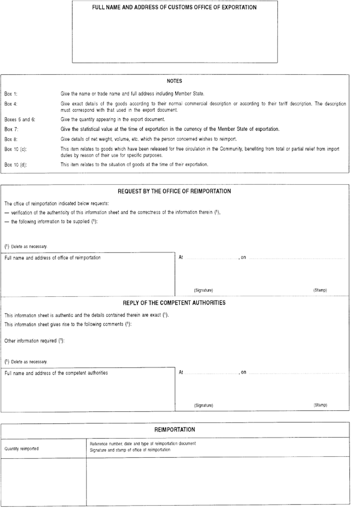
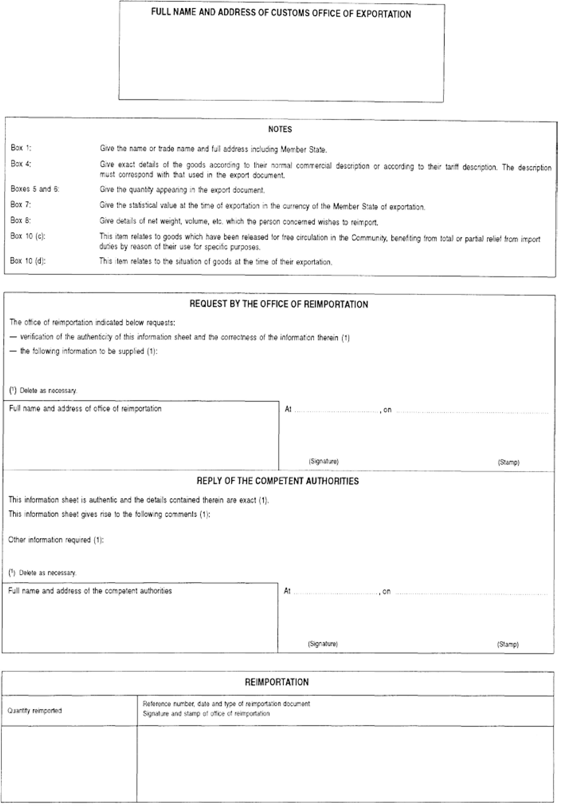

02015R2447 — EN — 21.04.2018 — 002.001
This text is meant purely as a documentation tool and has no legal effect. The Union's institutions do not assume any liability for its contents. The authentic versions of the relevant acts, including their preambles, are those published in the Official Journal of the European Union and available in EUR-Lex. Those official texts are directly accessible through the links embedded in this document
|
COMMISSION IMPLEMENTING REGULATION (EU) 2015/2447 of 24 November 2015 (OJ L 343 29.12.2015, p. 558) |
Amended by:
|
|
|
Official Journal |
||
|
No |
page |
date |
||
|
COMMISSION IMPLEMENTING REGULATION (EU) 2017/989 of 8 June 2017 |
L 149 |
19 |
13.6.2017 |
|
|
COMMISSION IMPLEMENTING REGULATION (EU) 2018/604 of 18 April 2018 |
L 101 |
22 |
20.4.2018 |
|
Corrected by:
COMMISSION IMPLEMENTING REGULATION (EU) 2015/2447
of 24 November 2015
laying down detailed rules for implementing certain provisions of Regulation (EU) No 952/2013 of the European Parliament and of the Council laying down the Union Customs Code
TITLE I
GENERAL PROVISIONS
CHAPTER 1
Scope of the customs legislation, mission of customs and definitions
Article 1
Definitions
(1) For the purposes of this Regulation, Article 1 of Commission Delegated Regulation (EU) 2015/2446 ( 1 ) shall apply.
(2) For the purposes of this Regulation, the following definitions shall apply:
(1) ‘cabin baggage’ means, in the case of air travel, the baggage that the natural person takes with him into and out of the aircraft cabin;
(2) ‘customs office of presentation’ means the customs office competent for the place where the goods are presented;
(3) ‘hold baggage’, in the case of air travel, means the baggage that has been checked in at the airport of departure and is not accessible to the natural person during the flight nor, where relevant, during any stopovers;
(4) ‘identical goods’ means, in the context of customs valuation, goods produced in the same country which are the same in all respects, including physical characteristics, quality and reputation. Minor differences in appearance shall not preclude goods otherwise conforming to the definition from being regarded as identical;
(5) ‘international Union airport’ means any Union airport which, having been so authorised by the customs authority, is approved for air traffic with territories outside of the customs territory of the Union;
(6) ‘intra-Union flight’ means the movement of an aircraft between two Union airports, without any stopover, which does not start from or end at a non-Union airport;
(7) ‘main processed products’ means the processed products for which the authorisation for inward processing has been granted;
(8) ‘marketing activities’ means, in the context of customs valuation, all activities relating to advertising or marketing and promoting the sale of the goods in question and all activities relating to warranties or guarantees in respect of them;
(9) ‘secondary processed products’ means processed products which are a necessary by-product of the processing operation other than the main processed products;
(10) ‘business or tourist aircraft’ means private aircraft intended for journeys whose itinerary depends on the wishes of the user;
(11) ‘public customs warehouse type III’ means a customs warehouse which is operated by the customs authorities;
(12) ‘fixed transport installation’ means technical means used for continuous transport of goods such as electricity, gas and oil;
(13) ‘customs office of transit’ means either of the following:
(a) the customs office competent for the point of exit from the customs territory of the Union when the goods are leaving that territory in the course of a transit operation via a frontier with a territory outside the customs territory of the Union other than a common transit country;
(b) the customs office competent for the point of entry into the customs territory of the Union when the goods have crossed a territory outside the customs territory of the Union in the course of a transit operation;
(14) ‘similar goods’, in the context of customs valuation, means goods produced in the same country, which, although not alike in all respects, have like characteristics and like component materials which enable them to perform the same functions and to be commercially interchangeable; the quality of the goods, their reputation and the existence of a trademark are among the factors to be considered in determining whether goods are similar.
CHAPTER 2
Rights and obligations of persons with regard to the customs legislation
Article 2
Formats and codes for common data requirements
(Article 6(2) of the Code)
1. The formats and codes for the common data requirements referred to in Article 6(2) of the Code and in Article 2 of Delegated Regulation (EU) 2015/2446 for the exchange and storage of information required for applications and decisions are set out in Annex A to this Regulation.
2. The formats and codes for the common data requirements referred to in Article 6(2) of the Code and in Article 2 of Delegated Regulation (EU) 2015/2446 for the exchange and storage of information required for declarations, notifications and proof of customs status are set out in Annex B to this Regulation.
3. By way of derogation from paragraph 1 of this Article, until the date of deployment of the first phase of the upgrading of the Binding Tariff Information (‘BTI’) system and the Surveillance 2 system referred to in the Annex to Commission Implementing Decision (EU) 2016/578 ( 2 ), the formats and codes provided for in Annex A to this Regulation in relation with BTI applications and decisions shall not apply and the formats and codes set out in Annexes 2 to 5 to Commission Delegated Regulation (EU) 2016/341 ( 3 ) shall apply.
By way of derogation from paragraph 1 of this Article, until the date of the upgrading of the Authorised Economic Operator (AEO) system referred to in the Annex to Implementing Decision (EU) 2016/578, the formats and codes provided for in Annex A to this Regulation in relation with AEO applications and authorisations shall not apply and the formats and codes set out in Annexes 6 and 7 to Delegated Regulation (EU) 2016/341 shall apply.
4. By way of derogation from paragraph 2 of this Article, for the IT systems listed in Annex 1 to Delegated Regulation (EU) 2016/341, until the respective dates of deployment or the upgrading of the relevant IT systems referred to in the Annex to Implementing Decision (EU) 2016/578, the formats and codes of the common data requirements set out in Annex B to this Regulation shall not apply.
For the IT systems listed in Annex 1 to Delegated Regulation (EU) 2016/341, until the respective dates of deployment or the upgrading of the relevant IT systems referred to in the Annex to Implementing Decision (EU) 2016/578, the exchange and storage of information required for declarations, notifications and proof of customs status shall be subject to the formats and codes set out in Annex 9 to Delegated Regulation (EU) 2016/341.
5. Until the date of deployment of the UCC Customs Decisions system referred to in the Annex to Implementing Decision (EU) 2016/578, customs authorities may decide that formats and codes other than those laid down in Annex A to this Regulation are to apply in respect of the following applications and authorisations:
(a) applications and authorisations relating to the simplification for the determination of amounts being part of the customs value of the goods;
(b) applications and authorisations relating to comprehensive guarantees;
(c) applications and authorisations for deferred payment;
(d) applications and authorisations for the operation of temporary storage facilities as referred to in Article 148 of the Code;
(e) applications and authorisations for regular shipping services;
(f) applications and authorisations for authorised issuer;
(g) applications and authorisations for the status of authorised weigher of bananas;
(h) applications and authorisations for self-assessment;
(i) applications and authorisations for the status of authorised consignee for TIR operations;
(j) applications and authorisations for the status of authorised consignor for Union transit;
(k) applications and authorisations for the status of authorised consignee for Union transit;
(l) applications and authorisations for the use of seals of a special type;
(m) applications and authorisations for the use of a transit declaration with reduced dataset;
(n) applications and authorisations for the use of an electronic transport document as customs declaration.
6. Until the date of deployment of the UCC Customs Decisions system, customs authorities may allow the formats and codes of the data requirements for applications and authorisations set out in Annex 12 to Delegated Regulation (EU) 2016/341 to be used instead of the data requirements laid down in Annex A to this Regulation for the following applications and authorisations:
(a) applications and authorisations for the use of simplified declaration;
(b) applications and authorisations for centralised clearance;
(c) applications and authorisations for entry of data in the declarant's records;
(d) applications and authorisations for the use of inward processing;
(e) applications and authorisations for the use of outward processing;
(f) applications and authorisations for the use of end use;
(g) applications and authorisations for the use of temporary admission;
(h) applications and authorisations for the operation of storage facilities for customs warehousing;
7. Notwithstanding paragraph 6, until the dates of deployment of the UCC Automated Export System (AES) or of the upgrading of the National Import Systems referred to in the Annex to Implementing Decision (EU) 2016/578, where an application for an authorisation is based on a customs declaration in accordance with Article 163(1) of Delegated Regulation (EU) 2015/2446, the formats and codes set out in Annex 12 to Delegated Regulation (EU) 2016/341 shall apply in respect of the additional data elements required for that application.
Article 3
Security of electronic systems
(Article 16(1) of the Code)
1. When developing, maintaining and employing electronic systems referred to in Article 16(1) of the Code the Member States shall establish and maintain adequate security arrangements for the effective, reliable and secure operation of the various systems. They shall also ensure that measures are in place for checking the source of data and for protecting data against the risk of unauthorised access, loss, alteration or destruction.
2. Each input, modification and deletion of data shall be recorded together with information giving the reason for, and exact time of, such processing and identifying the person who carried it out.
3. The Member States shall inform each other, the Commission and, where appropriate, the economic operator concerned of all actual or suspected breaches of security of the electronic systems.
Article 4
Storage of data
(Article 16(1) of the Code)
All data validated by the relevant electronic system shall be kept for at least 3 years from the end of the year in which such data was validated, unless otherwise specified.
Article 5
Availability of electronic systems
(Article 16(1) of the Code)
1. The Commission and the Member States shall conclude operational agreements laying down the practical requirements for the availability and performance of the electronic systems as well as for business continuity.
2. Operational agreements referred to in paragraph 1 shall in particular lay down appropriate response time for the exchange and processing of information in the relevant electronic systems.
3. The electronic systems shall be kept permanently available. However, that obligation shall not apply:
(a) in specific cases related to the use of the electronic systems laid down in the agreements referred to in paragraph 1 or, at national level, in the absence of those agreements;
(b) in the case of force majeure.
Article 6
Competent customs authority
(Article 9 of the Code)
The customs authorities responsible for registration shall be those designated by the Member States. The Member States shall communicate the name and address of those authorities to the Commission. The Commission shall publish that information on the Internet.
Article 7
Electronic system relating to EORI number
(Article 16 of the Code)
1. For the exchange and storage of information pertaining to EORI, an electronic system set up for those purposes pursuant to Article 16(1) of the Code (‘EORI system’) shall be used.
Information shall be made available through that system by the competent customs authority whenever new EORI numbers are assigned or there are changes to data stored in respect of registrations already issued.
2. Only one EORI number shall be assigned in respect of each person.
3. The format and codes of the data stored in the EORI system are laid down in Annex 12-01.
4. By way of derogation from paragraph 1 of this Article, until the date of the upgrading of the central EORI system, the formats and codes set out in Annex 12-01 shall not apply.
Until the date of the upgrading of the central EORI system, the codes of the common data requirements for the registration of economic operators and other persons are set out in Annex 9 to ►M1 Delegated Regulation (EU) 2016/341 ◄ .
5. Where Member States collect data listed in point 4 of Annex 12-01 they shall ensure that the formats and codes as set out in Annex 12-01 are used.
Article 8
General procedure for the right to be heard
(Article 22(6) of the Code)
1. The communication referred to in the first subparagraph of Article 22(6) of the Code shall:
(a) include a reference to the documents and information on which the customs authorities intend to base their decision;
(b) indicate the period within which the person concerned shall express his point of view from the date on which he receives that communication or is deemed to have received it;
(c) include a reference to the right of the person concerned to have access to the documents and information referred to in point (a) in accordance with the applicable provisions.
2. Where the person concerned gives his point of view before the expiry of the period referred to in paragraph 1(b) the customs authorities may proceed with taking the decision unless the person concerned simultaneously expresses his intention to further express his point of view within the period prescribed.
Article 9
Specific procedure for the right to be heard
(Article 22(6) of the Code)
1. The customs authorities may make the communication referred to in the first subparagraph of Article 22(6) of the Code as part of the process of verification or control where they intend to take a decision on the basis of any of the following:
(a) the results of a verification following presentation of the goods;
(b) the results of a verification of the customs declaration as referred to in Article 191 of the Code;
(c) the results of post-release control as referred to in Article 48 of the Code, where the goods are still under customs supervision;
(d) the results of a verification of proof of the customs status of Union goods or, where applicable, the results of verification of the application for the registration of such proof or for the endorsement of such proof;
(e) the issuing of a proof of origin by the customs authorities;
(f) the results of control of goods for which no summary declaration, temporary storage declaration, re-export declaration or customs declaration was lodged.
2. Where a communication is made in accordance with paragraph 1 the person concerned may:
(a) immediately express his point of view by the same means as those used for the communication in accordance with Article 9 of Delegated Regulation (EU) 2015/2446; or
(b) demand a communication in accordance with Article 8 except in the cases referred to in paragraph 1(f).
The person concerned shall be informed by the customs authorities of those two options.
3. Where the customs authorities take a decision adversely affecting the person concerned, they shall record whether that person has expressed his point of view in accordance with paragraph 2(a).
Article 10
Electronic systems relating to decisions
(Article 16(1) of the Code)
1. For the exchange and storage of information pertaining to applications and decisions which may have an impact in more than one Member State and to any subsequent event which may affect the original application or decision, an electronic system set up for those purposes pursuant to Article 16(1) of the Code shall be used.
Information shall be made available through that system by the competent customs authority without delay and at the latest within 7 days of the authority gaining knowledge of the information.
2. An EU harmonised trader interface designed by the Commission and the Member States in agreement with each other shall be used for the exchange of information pertaining to applications and decisions which may have an impact in more than one Member State.
3. Paragraphs 1 and 2 of this Article shall be applicable from the date of deployment of the UCC Customs Decisions system as referred to in the Annex to Implementing Decision 2014/255/EU.
Article 11
Customs authority designated to receive applications
(Third subparagraph of Article 22(1) of the Code)
Member States shall communicate to the Commission a list of the customs authorities referred to in the third subparagraph of Article 22(1) of the Code designated to receive applications. Member States shall also communicate to the Commission any subsequent changes to that list.
Article 12
Acceptance of the application
(Article 22(2) of the Code)
1. Where the customs authority accepts an application pursuant to Article 11(1) of Delegated Regulation (EU) 2015/2446, the date of acceptance of that application shall be the date on which all the information required in accordance with the second subparagraph of ►M1 Article 22(2) ◄ of the Code was received by the customs authority.
2. Where the customs authority establishes that the application does not contain all the information required, it shall ask the applicant to provide the relevant information within a reasonable time limit which shall not exceed 30 days.
Where the applicant does not provide the information requested by the customs authorities within the period set by them for that purpose, the application shall not be accepted and the applicant shall be notified accordingly.
3. In the absence of any communication to the applicant in relation to whether the application has been accepted or not, that application shall be deemed to be accepted. The date of the acceptance shall be the date of submission of the application or, in those cases where additional information has been provided by the applicant following a request of the customs authority as referred to in paragraph 2, the date when the last piece of information has been provided.
Article 13
Storage of information relating to decisions
(Article 23(5) of the Code)
The customs authority competent to take a decision shall retain all data and supporting information which was relied upon when taking the decision for at least 3 years after the end date of its validity.
Article 14
Consultation between the customs authorities
(Article 22 of the Code)
1. Where a customs authority competent to take a decision needs to consult a customs authority of another Member State concerned about the fulfilment of the necessary conditions and criteria for taking a favourable decision, that consultation shall take place within the period prescribed for the decision concerned. The customs authority competent to take a decision shall establish a time-limit for the consultation that starts from the date of communication by that customs authority of the conditions and criteria which need to be examined by the consulted customs authority.
Where, following the examination referred to in the first subparagraph, the consulted customs authority establishes that the applicant does not fulfil one or more of the conditions and criteria for taking a favourable decision, the results, duly documented and justified, shall be transmitted to the customs authority competent to take the decision.
2. The time-limit established for the consultation in accordance with paragraph 1 may be extended by the customs authority competent to take the decision in any of the following cases:
(a) where due to the nature of the examinations to be performed the consulted authority requests more time;
(b) where the applicant carries out adjustments in order to ensure the fulfilment of the conditions and criteria referred to in paragraph 1 and communicates them to the customs authority competent to take the decision, which shall inform the consulted customs authority accordingly.
3. Where the consulted customs authority does not respond within the time-limit established for the consultation in accordance with paragraphs 1 and 2, the conditions and criteria for which the consultation took place are deemed to be fulfilled.
4. The consultation procedure laid down in paragraphs 1 and 2 may also be applied for the purposes of re-assessment and monitoring of a decision.
Article 15
Revocation of a favourable decision
(Article 28 of the Code)
A decision suspended in accordance with Article 16(1) of Delegated Regulation (EU) 2015/2446 shall be revoked by the customs authority competent to take a decision in cases referred to in Article 16(1)(b) and (c) of that Regulation, where the holder of the decision fails to take, within the prescribed period of time, the necessary measures to fulfil the conditions laid down for the decision or to comply with the obligations imposed under that decision.
Article 16
Application for a decision relating to binding information
(Article 22(1) of the Code)
1. Where an application for a decision relating to binding information is submitted pursuant to Article 19(1) of Delegated Regulation (EU) 2015/2446 in another Member State than the one in which the applicant is established the customs authority to which the application was submitted shall notify the customs authority of the Member State where the applicant is established within 7 days from the acceptance of the application.
Where the customs authority that receives the notification holds any information that it considers relevant for the processing of the application, it shall transmit such information to the customs authority to which the application was submitted as soon as possible and at the latest within 30 days from the date of the notification.
2. An application for a binding tariff information (BTI) decision shall relate only to goods which have similar characteristics and between which the differences are irrelevant for the purposes of their tariff classification.
3. An application for a binding origin information (BOI) decision shall relate to only one type of goods and one set of circumstances for the determination of origin.
4. For the purposes of ensuring compliance with the requirement set out in point (a) of the second subparagraph of Article 33(1) of the Code in relation to an application for a BTI decision, the customs authority referred to in Article 19(1) of Delegated Regulation (EU) 2015/2446 shall consult the electronic system referred to in Article 21 of this Regulation and keep a record of such consultations.
Article 17
Consistency with existing BTI decisions
(Article 22(3) of the Code)
The customs authority competent to take a decision shall, for the purposes of ensuring that a BTI decision which it intends to issue is consistent with BTI decisions that have already been issued, consult the electronic system referred to in Article 21 and keep a record of such consultations.
Article 18
Notification of BOI decisions
(Article 6(3) of the Code)
1. Where, the customs authority competent to take the decision notifies the applicant of the BOI decision using means other than electronic data-processing techniques, it shall do so using the form set out in Annex 12-02.
2. Where the customs authority competent to take the decision notifies the applicant of the BOI decision using electronic data-processing techniques, that decision shall be printable in accordance with the format set out in Annex 12-02.
Article 19
Exchange of data relating to BOI decisions
(Article 23(5) of the Code)
1. The customs authorities shall transmit to the Commission the relevant details of the BOI decisions on a quarterly basis.
2. The Commission shall make the details obtained in accordance with paragraph 1 available to the customs authorities of all Member States.
Article 20
Monitoring of BTI decisions
(Article 23(5) of the Code)
When customs formalities are being fulfilled by or on behalf of the holder of a BTI decision in respect of goods covered by the BTI decision, this shall be indicated in the customs declaration by stating the BTI decision reference number.
Article 21
Electronic system relating to BTI
(Articles 16(1) and 23(5) of the Code)
1. For the exchange and storage of information pertaining to applications and decisions related to BTI or to any subsequent event which may affect the original application or decision, an electronic system set up for those purposes pursuant to Article 16(1) of the Code shall be used.
Information shall be made available through that system by the competent customs authority without delay and at the latest within 7 days of the authority gaining knowledge of the information.
2. In addition to the information referred to in paragraph 1:
(a) the surveillance referred to in Article 55 of this Regulation shall include data that are relevant for monitoring the usage of BTI decisions;
(b) the customs authority that has received the application and has taken the BTI decision shall notify through the system referred to in paragraph 1 if a period of extended use of the BTI decision is granted, indicating the end date of the period of extended use and the quantities of the goods covered by this period.
3. The Commission shall communicate the results of the monitoring referred to in point (a) of paragraph 2 to the Member States on a regular basis in order to support the monitoring by the customs authorities of the compliance with the obligations resulting from the BTI.
4. An EU harmonised trader interface designed by the Commission and the Member States in agreement with each other shall be used for the exchange of information pertaining to applications and decisions related to BTI.
5. When processing an application for a BTI decision, the customs authorities shall indicate the status of the application in the system referred to in paragraph 1.
6. By derogation from paragraph 1 of this Article, until the date of the upgrading of the system referred to therein in accordance with the Annex to Implementing Decision 2014/255/EU, Member States shall use the central database of the Commission set up by Article 8(3) of Commission Regulation (EEC) No 2454/93 ( 4 ).
7. Until the date of deployment of the first phase of the upgrading of the system referred to in paragraph 1 of this Article and the system referred to in Article 56 of this Regulation, the customs authorities shall carry out the monitoring of the usage of BTI decisions when conducting customs controls or post-release controls in accordance with Articles 46 and 48 of the Code. By derogation from paragraph 3 of this Article, until that date of deployment, the Commission shall not be obliged to communicate results of the monitoring referred to in point (a) of paragraph 2 of this Article to the Member States.
Article 22
Extended use of decisions relating to binding information
(Article 34(9) of the Code)
1. Where the customs authorities decide to grant a period of extended use in accordance with the third subparagraph of Article 34(9) of the Code, they shall specify the date on which the period of extended use of the decision concerned expires.
2. Where the customs authorities decide to grant a period of extended use of a BTI decision in accordance with the third subparagraph of Article 34(9) of the Code, they shall specify, in addition to the date referred to in paragraph 1, the quantities of the goods that may be cleared during the period of extended use.
The use of a decision for which a period of extended use has been granted shall cease as soon as those quantities are reached.
On the basis of the surveillance referred to in Article 55, the Commission shall inform the Member States as soon as those quantities have been reached.
Article 23
Actions to ensure the correct and uniform tariff classification or determination of origin
(Article 34(10) of the Code)
1. The Commission shall, without delay, notify the customs authorities of the suspension of the taking of BTI and BOI decisions in accordance with Article 34(10)(a) of the Code where:
(a) the Commission has identified incorrect or non-uniform decisions;
(b) the customs authorities have submitted to the Commission cases where they failed to resolve, within a maximum period of 90 days, their differences of opinion with regard to the correct and uniform classification or determination of origin.
No decision related to binding information shall be issued for goods subject to point (a) or (b) from the date when the Commission has notified the customs authorities of the suspension until the correct and uniform classification or determination of origin is ensured.
2. The correct and uniform classification or determination of origin shall be subject to consultation at Union level at the earliest opportunity and at the latest within 120 days of the Commission notification referred to in paragraph 1.
3. The Commission shall notify the customs authorities immediately once the suspension is withdrawn.
4. For the purposes of applying paragraphs 1 to 3, BOI decisions shall be deemed to be non-uniform where they confer different origin on goods which:
(a) fall under the same tariff heading and whose origin was determined in accordance with the same origin rules; and
(b) have been obtained under identical conditions using the same manufacturing process and equivalent materials as regards notably their originating or non-originating status.
Article 24
Compliance
(Article 39(a) of the Code)
1. Where the applicant is a natural person, the criterion laid down in Article 39(a) of the Code shall be considered to be fulfilled if, over the last 3 years, the applicant and where applicable the employee in charge of the applicant’s customs matters have not committed any serious infringement or repeated infringements of customs legislation and taxation rules and have had no record of serious criminal offences relating to their economic activity.
Where the applicant is not a natural person, the criterion laid down in Article 39(a) of the Code shall be considered to be fulfilled where, over the last 3 years, none of the following persons has committed a serious infringement or repeated infringements of customs legislation and taxation rules or has had a record of serious criminal offences relating to his economic activity:
(a) the applicant;
(b) the person in charge of the applicant or exercising control over its management;
(c) the employee in charge of the applicant’s customs matters.
2. However, the criterion referred to in Article 39(a) of the Code may be considered to be fulfilled where the customs authority competent to take the decision considers an infringement to be of minor importance, in relation to the number or size of the related operations, and the customs authority has no doubt as to the good faith of the applicant.
3. Where the person referred to in paragraph 1(b) is established or has his residence in a third country, the customs authority competent to take the decision shall assess the fulfilment of the criterion referred to in Article 39(a) of the Code on the basis of records and information that are available to it.
4. Where the applicant has been established for less than 3 years, the customs authority competent to take the decision shall assess the fulfilment of the criterion referred to in Article 39(a) of the Code on the basis of the records and information that are available to it.
Article 25
Satisfactory system of managing commercial and transport records
(Article 39(b) of the Code)
1. The criterion laid down in Article 39(b) of the Code shall be considered to be fulfilled if the following conditions are met:
(a) the applicant maintains an accounting system which is consistent with the generally accepted accounting principles applied in the Member State where the accounts are held, allows audit-based customs control and maintains a historical record of data that provides an audit trail from the moment the data enters the file;
(b) records kept by the applicant for customs purposes are integrated in the accounting system of the applicant or allow cross checks of information with the accounting system to be made;
(c) the applicant allows the customs authority physical access to its accounting systems and, where applicable, to its commercial and transport records;
(d) the applicant allows the customs authority electronic access to its accounting systems and, where applicable, to its commercial and transport records where those systems or records are kept electronically;
(e) the applicant has a logistical system which identifies goods as Union or non-Union goods and indicates, where appropriate, their location;
(f) the applicant has an administrative organisation which corresponds to the type and size of business and which is suitable for the management of the flow of goods, and has internal controls capable of preventing, detecting and correcting errors and of preventing and detecting illegal or irregular transactions;
(g) where applicable, the applicant has satisfactory procedures in place for the handling of licences and authorisations granted in accordance with commercial policy measures or relating to trade in agricultural products;
(h) the applicant has satisfactory procedures in place for the archiving of its records and information and for protection against the loss of information;
(i) the applicant ensures that relevant employees are instructed to inform the customs authorities whenever compliance difficulties are discovered and establishes procedures for informing the customs authorities of such difficulties;
(j) the applicant has appropriate security measures in place to protect the applicant’s computer system from unauthorised intrusion and to secure the applicant’s documentation;
(k) where applicable, the applicant has satisfactory procedures in place for the handling of import and export licences connected to prohibitions and restrictions, including measures to distinguish goods subject to the prohibitions or restrictions from other goods and measures to ensure compliance with those prohibitions and restrictions.
2. Where the applicant applies only for an authorisation as an economic operator authorised for security and safety as referred to in Article 38(2)(b) of the Code (AEOS), the requirement laid down in paragraph 1(e) shall not apply.
Article 26
Financial solvency
(Article 39(c) of the Code)
1. The criterion laid down in Article 39(c) of the Code shall be considered to be fulfilled where the applicant complies with the following:
(a) the applicant is not subject to bankruptcy proceedings;
(b) during the last 3 years preceding the submission of the application, the applicant has fulfilled his financial obligations regarding payments of customs duties and all other duties, taxes or charges which are collected on or in connection with the import or export of goods;
(c) the applicant demonstrates on the basis of the records and information available for the last 3 years preceding the submission of the application that he has sufficient financial standing to meet his obligations and fulfil his commitments having regard to the type and volume of the business activity, including having no negative net assets, unless where they can be covered.
2. If the applicant has been established for less than 3 years, his financial solvency as referred to in Article 39(c) of the Code shall be checked on the basis of records and information that are available.
Article 27
Practical standards of competence or professional qualifications
(Article 39(d) of the Code)
1. The criterion laid down in Article 39(d) of the Code shall be considered to be fulfilled if any of the following conditions are met:
(a) the applicant or the person in charge of the applicant’s customs matters complies with one of the following practical standards of competence:
(i) a proven practical experience of a minimum of 3 years in customs matters;
(ii) a quality standard concerning customs matters adopted by a European Standardisation body;
(b) the applicant or the person in charge of the applicant’s customs matters has successfully completed training covering customs legislation consistent with and relevant to the extent of his involvement in customs related activities, provided by any of the following:
(i) a customs authority of a Member State;
(ii) an educational establishment recognised, for the purposes of providing such qualification, by the customs authorities or a body of a Member State responsible for professional training;
(iii) a professional or trade association recognised by the customs authorities of a Member State or accredited in the Union, for the purposes of providing such qualification.
2. Where the person in charge of the applicant’s customs matters is a contracted person, the criterion laid down in Article 39(d) of the Code shall be considered to be fulfilled if the contracted person is an economic operator authorised for customs simplifications as referred to in Article 38(2)(a) of the Code (AEOC).
Article 28
Security and safety standards
(Article 39(e) of the Code)
1. The criterion laid down in Article 39(e) of the Code shall be considered to be fulfilled if the following conditions are met:
(a) buildings to be used in connection with the operations relating to the AEOS authorisation provide protection against unlawful intrusion and are constructed of materials which resist unlawful entry;
(b) appropriate measures are in place to prevent unauthorised access to offices, shipping areas, loading docks, cargo areas and other relevant places;
(c) measures for the handling of goods have been taken which include protection against the unauthorised introduction or exchange, the mishandling of goods and against tampering with cargo units;
(d) the applicant has taken measures allowing to clearly identify his business partners and to ensure, through implementation of appropriate contractual arrangements or other appropriate measures in accordance with the applicant’s business model, that those business partners ensure the security of their part of the international supply chain;
(e) the applicant conducts in so far as national law permits, security screening on prospective employees working in security sensitive positions and carries out background checks of current employees in such positions periodically and where warranted by circumstances;
(f) the applicant has appropriate security procedures in place for any external service providers contracted;
(g) the applicant ensures that its staff having responsibilities relevant for security issues regularly participate in programmes to raise their awareness of those security issues;
(h) the applicant has appointed a contact person competent for safety and security related questions.
2. Where the applicant is a holder of a security and safety certificate issued on the basis of an international convention or of an International Standard of the International Organisation for Standardisation, or of a European Standard of a European standardisation body, these certificates shall be taken into account when checking compliance with the criteria laid down in Article 39(e) of the Code.
The criteria shall be deemed to be met to the extent that it is established that the criteria for issuing that certificate are identical or equivalent to those laid down in Article 39(e) of the Code.
The criteria shall be deemed to be met where the applicant is the holder of a security and safety certificate issued by a third country with which the Union has concluded an agreement which provides for the recognition of that certificate.
3. Where the applicant is a regulated agent or a known consignor as defined in Article 3 of Regulation (EC) No 300/2008 of the European Parliament and of the Council ( 5 ) and fulfils the requirements laid down in Commission Regulation (EU) No 185/2010 ( 6 ), the criteria laid down in paragraph 1 shall be deemed to be met in relation to the sites and the operations for which the applicant obtained the status of regulated agent or known consignor to the extent that the criteria for issuing the regulated agent or known consignor status are identical or equivalent to those laid down in Article 39(e) of the Code.
Article 29
Examination of the criteria
(Article 22 of the Code)
1. For the purposes of examining the criteria laid down in Article 39(b) and (e) of the Code, the customs authority competent to take the decision shall ensure that on-the-spot verifications are carried out at all the premises that are relevant to the customs related activities of the applicant.
Where the applicant has a large number of premises, and the applicable time-limit for taking the decision does not allow for examination of all those premises the customs authority may decide to examine only a representative proportion of those premises if it is satisfied that the applicant applies the same security and safety standards at all of its premises and apply the same common standards and procedures for maintaining its records at all of its premises.
2. The customs authorities competent to take a decision may take into consideration the results of assessments or audits carried out in accordance with Union legislation to the extent they are relevant for the examination of the criteria referred to in Article 39 of the Code.
3. For the purposes of examining whether the criteria laid down in Article 39(b), (c) and (e) of the Code are fulfilled, the customs authorities may take into account expert conclusions provided by the applicant, where the expert having drawn up the conclusions is not related to the applicant within the meaning of Article 127 of this Regulation.
4. The customs authorities shall take due account of the specific characteristics of economic operators, in particular of small and medium-sized enterprises, when examining the fulfilment of criteria laid down in Article 39 of the Code.
5. The examination of the criteria laid down in Article 39 of the Code as well as its results shall be documented by the customs authority competent to take the decision.
Article 30
Electronic system relating to the AEO status
(Article 16(1) of the Code)
1. For the exchange and storage of information pertaining to applications for an authorisation as an authorised economic operator (AEO) and AEO authorisations granted and any further event or act which may subsequently affect the original decision, including annulment, suspension, revocation or amendment or the results of any monitoring or re-assessment, an electronic system set up for those purposes pursuant to Article 16(1) of the Code shall be used. The competent customs authority shall make information available through this system without delay and at the latest within 7 days.
An EU harmonised trader interface designed by the Commission and the Member States in agreement with each other shall be used for the exchange of information pertaining to applications and decisions related to AEO authorisations.
2. Where applicable, in particular when AEO status is a basis for the grant of approval, authorisations or facilitations under other Union legislation, the competent customs authority may grant access to the electronic system referred to in paragraph 1 to the appropriate national authority responsible for civil aviation security. The access shall be related to the following information:
(a) the AEOS authorisations, including the name of the holder of the authorisation and, where applicable, their amendment or revocation or the suspension of the status of authorised economic operator and the reasons therefor;
(b) any re-assessments of AEOS authorisations and the results thereof.
The national authorities responsible for civil aviation security handling the information concerned shall use it only for the purposes of the relevant programmes for regulated agent or known consignor and shall implement appropriate technical and organisational measures to ensure the security of this information.
3. By derogation from paragraph 1 of this Article, until the date of the upgrading of the AEO System referred to in the Annex to Implementing Decision 2014/255/EU, Member States shall use that system set up by Article 14x of Commission Regulation (EEC) No 2454/93.
Article 31
Consultation procedure and exchange of information between customs authorities
(Article 22 of the Code)
1. The customs authority competent to take the decision may consult customs authorities of other Member States which are competent for the place where necessary information is held or where checks have to be carried out for the purpose of examining one or more criteria laid down in Article 39 of the Code.
2. The consultation referred to in paragraph 1 shall be mandatory, where:
(a) the application for the status of AEO is submitted in accordance with Article 12(1) of Delegated Regulation (EU) 2015/2446, to the customs authority - of the place where the applicant’s main accounts for customs purposes are held or are accessible;
(b) the application for the status of AEO is submitted in accordance with Article 27 of Delegated Regulation (EU) 2015/2446, to the customs authorities of the Member State where the applicant has a permanent business establishment and where the information about its general logistical management activities in the Union is kept or is accessible;
(c) a part of the records and documentation of relevance for the application for the status of AEO is kept in a Member State other than the one of the customs authority competent to take a decision;
(d) the applicant for the status of AEO maintains a storage facility or has other customs-related activities in a Member State other than the one of the competent customs authority.
3. By way of derogation from the time-limit laid down in the second sentence of the first subparagraph of Article 14(1) of this Regulation, the customs authorities shall complete the consultation process within 80 days from the date on which the customs authority competent to take the decision communicates the necessary conditions and criteria which have to be examined by the consulted customs authority.
4. Where the customs authority of another Member State has information of relevance for the granting of AEO status, it shall communicate that information to the customs authority competent to take a decision within 30 days starting from the date of the communication of the application through the electronic system referred to in Article 30 of this Regulation.
Article 32
Rejection of an application
(Article 22 of the Code)
The rejection of an AEO application shall not affect existing favourable decisions taken with regard to the applicant in accordance with the customs legislation, unless the granting of those favourable decisions is based on the fulfilment of any of the AEO criteria that have been proven not to be met during the examination of the AEO application.
Article 33
Combination of both types of authorisations
(Article 38(3) of the Code)
Where an applicant is entitled to be granted both an AEOC and an AEOS authorisation, the customs authority competent to take the decision shall issue one combined authorisation.
Article 34
Revocation of an authorisation
(Article 28 of the Code)
1. The revocation of an AEO authorisation shall not affect any favourable decision which has been taken with regard to the same person unless AEO status was a condition for that favourable decision, or that decision was based on a criterion listed in Article 39 of the Code which is no longer met.
2. The revocation or amendment of a favourable decision which has been taken with regard to the holder of the authorisation shall not automatically affect the AEO authorisation of that person.
3. Where the same person is both an AEOC and an AEOS, and Article 28 of the Code or Article 15 of this Regulation is applicable owing to the non-fulfilment of the conditions laid down in Article 39(d) of the Code, the AEOC authorisation shall be revoked and AEOS authorisation shall remain valid.
Where the same person is both an AEOS and an AEOC, and Article 28 of the Code or Article 15 of this Regulation is applicable owing to the non-fulfilment of the conditions laid down in Article 39(e) of the Code, the AEOS authorisation shall be revoked and AEOC authorisation shall remain valid.
Article 35
Monitoring
(Article 23(5) of the Code)
1. The customs authorities of the Member States shall inform the competent customs authority without delay of any factors arising after the grant of the status of AEO which may influence its continuation or content.
2. The competent customs authority shall make available all relevant information at its disposal to the customs authorities of the other Member States where the AEO carries out customs-related activities.
3. Where a customs authority revokes a favourable decision which has been taken on the basis of the status of AEO, it shall notify the customs authority which granted the status.
4. Where the AEOS is a regulated agent or a known consignor as defined in Article 3 of Regulation (EC) No 300/2008 and fulfils the requirements laid down in Regulation (EU) No 185/2010, the competent customs authority shall immediately make available to the appropriate national authority responsible for civil aviation security the following minimum information related to the AEO status which it has at its disposal:
(a) the AEOS authorisation, including the name of the holder of the authorisation and, where applicable, its amendment or revocation or the suspension of the status of authorised economic operator and the reasons therefor;
(b) information about whether the specific site concerned has been visited by customs authorities, the date of the last visit, and whether the visit took place with a view to the authorisation process, re-assessment or monitoring;
(c) any re-assessments of the AEOS authorisation and the results thereof.
The national customs authorities shall, in agreement with the appropriate national authority responsible for civil aviation security, establish detailed modalities for the exchange of any information which is not covered by the electronic system referred to in Article 30 of this Regulation.
The national authorities responsible for civil aviation security handling the information concerned shall use it only for the purposes of the relevant programmes for regulated agent or known consignor and shall implement appropriate technical and organisational measures to ensure the security of the information.
Article 36
Electronic system relating to risk management and customs controls
(Article 16(1) of the Code)
1. For the exchange and storage of information pertaining to the communication among the customs authorities of the Member States and the Commission of any risk-related information, an electronic system set up for those purposes pursuant to Article 16(1) of the Code (‘customs risk management system’) shall be used.
2. The system mentioned in paragraph 1 shall also be used for communication between customs authorities and between customs authorities and the Commission in the implementation of common risk criteria and standards, common priority control areas, customs crisis management, the exchange of risk-related information and risk analysis results as referred to in Article 46(5) of the Code as well as the results of customs controls.
Article 37
Transit flights
(Article 49 of the Code)
1. Customs controls and formalities applicable to the cabin and hold baggage of persons taking a flight from a non-Union airport in an aircraft which, after a stopover at a Union airport, continues to another Union airport shall be carried out at the last international Union airport.
The cabin and hold baggage shall be subject to the rules applicable to the baggage of persons coming from a third country unless the person carrying such baggage proves the status of the goods contained therein as Union goods.
2. Customs controls and formalities applicable to the cabin and hold baggage of persons taking a flight from a Union airport in an aircraft which stops over at another Union airport before continuing to a non-Union airport, shall be carried out at the first international Union airport.
The cabin baggage may be subject to control at the last international Union airport where the aircraft stops over in order to ascertain their customs status of Union goods.
Article 38
Transit flights in business and tourist aircraft
(Article 49 of the Code)
Customs controls and formalities applicable to the baggage of persons on board business or tourist aircraft shall be carried out at the following airports:
(a) for flights coming from a non-Union airport and where the aircraft, after a stopover at a Union airport, continues to another Union airport, at the first international Union airport;
(b) for flights coming from a Union airport and where the aircraft, after a stopover at a Union airport, continues to a non-Union airport, at the last international Union airport.
Article 39
Inbound transfer flights
(Article 49 of the Code)
1. Where baggage arriving at a Union airport on board an aircraft coming from a non-Union airport is transferred, at that Union airport, to another aircraft proceeding on an intra-Union flight, paragraphs 2 and 3 shall apply.
2. Customs controls and formalities applicable to hold baggage shall be carried out at the last international Union airport of arrival of the intra-Union flight. However, customs controls and formalities applicable to hold baggage coming from a non-Union airport and transferred at an international Union airport to an aircraft bound for another international Union airport in the territory of the same Member State may be carried out at the international Union airport where the transfer of hold baggage takes place.
Customs controls and formalities applicable to hold baggage may, in exceptional cases and in addition to the controls and formalities referred to in the first subparagraph, be carried out at the first international Union airport where they prove necessary following controls on cabin baggage.
3. Customs controls and formalities applicable to cabin baggage shall be carried out at the first international Union airport.
Additional customs controls and formalities applicable to cabin baggage may be carried out at the airport of arrival of an intra-Union flight only in exceptional cases where they prove necessary following controls on hold baggage.
Article 40
Outbound transfer flights
(Article 49 of the Code)
1. Where baggage is loaded at a Union airport onto an aircraft proceeding on an intra-Union flight and subsequently transferred, at another Union airport, onto another aircraft whose destination is a non-Union airport, paragraphs 2 and 3 shall apply.
2. Customs controls and formalities applicable to hold baggage shall be carried out at the first international Union airport of departure. However, customs controls and formalities applicable to hold baggage having been loaded on an aircraft at an international Union airport and transferred at another international Union airport in the territory of the same Member State to an aircraft bound for a non-Union airport may be carried out at the international Union airport where the transfer of hold baggage takes place.
Customs controls and formalities applicable to hold baggage may, in exceptional cases and in addition to the controls and formalities referred to in the first subparagraph, be carried out at the last international Union airport where they prove necessary following controls on cabin baggage.
3. Customs controls and formalities applicable to cabin baggage shall be carried out at the last international Union airport.
Additional customs controls and formalities applicable to cabin baggage may be carried out at the airport of departure of an intra-Union flight only in exceptional cases where they prove necessary following controls on hold baggage.
Article 41
Transfer to a tourist or business aircraft
(Article 49 of the Code)
1. Customs controls and formalities applicable to baggage arriving at a Union airport on board a scheduled or charter flight from a non-Union airport and transferred, at that Union airport, to a tourist or business aircraft proceeding on an intra-Union flight shall be carried out at the airport of arrival of the scheduled or charter flight.
2. Customs controls and formalities applicable to baggage loaded at a Union airport onto a tourist or business aircraft proceeding on an intra-Union flight for transfer, at another Union airport, to a scheduled or charter flight whose destination is a non-Union airport, shall be carried out at the airport of departure of the scheduled or charter flight.
Article 42
Transfers between airports on the territory of the same Member State
(Article 49 of the Code)
The customs authorities may carry out controls, at the international Union airport where the transfer of hold baggage takes place, on the following:
(a) baggage coming from a non-Union airport and transferred in an international Union airport to an aircraft bound for an international Union airport in the same national territory;
(b) baggage having been loaded on an aircraft in an international Union airport for transfer in another international Union airport in the same national territory to an aircraft bound for a non-Union airport.
Article 43
Measures to prevent illegal transfer
(Article 49 of the Code)
The Member States shall ensure that:
(a) on arrival at an international Union airport where customs controls are to be carried out, any transfer of goods contained in cabin baggage before those controls have been carried out on that baggage is monitored;
(b) on departure from an international Union airport where customs controls are to be carried out, any transfer of goods contained in cabin baggage after those controls have been carried out on that baggage is monitored;
(c) on arrival at an international Union airport where customs controls are to be carried out, the appropriate arrangements have been made to prevent any transfer of goods contained in hold baggage before those controls have been carried out on that baggage;
(d) on departure from an international Union airport where customs controls are to be carried out, the appropriate arrangements have been made to prevent any transfer of goods contained in hold baggage after those controls have been carried out on the hold baggage.
Article 44
Baggage tag
(Article 49 of the Code)
Hold baggage registered at a Union airport shall be identified by a tag affixed on the baggage. A specimen and the technical characteristics of the tag are set out in Annex 12-03.
Article 45
List of international Union airports
(Article 49 of the Code)
Each Member State shall provide the Commission with a list of its international Union airports and shall inform the Commission of any changes to that list.
Article 46
Pleasure crafts
(Article 49 of the Code)
Customs controls and formalities applicable to the baggage of persons on board pleasure craft shall be carried out at all ports of call in the Union, whatever the origin or destination of the craft. Pleasure craft is a recreational craft as defined in Directive 94/25/CE of the European Parliament and of the Council ( 7 ).
Article 47
Transfer crossings
(Article 49 of the Code)
Customs controls and formalities applicable to the baggage of persons using a maritime service provided by the same vessel and comprising successive legs departing from, calling at or terminating in a non-Union port shall be carried out at any Union port at which the baggage is loaded or unloaded.
CHAPTER 3
Currency conversion
Article 48
Provisions on tariff exchange rate
(Article 53 of the Code)
1. The value of the euro, where required in accordance with Article 53(1)(b) of the Code, shall be fixed once a month.
The exchange rate to be used shall be the most recent rate set by the European Central Bank prior to the penultimate day of the month and shall apply throughout the following month.
However, where the rate applicable at the start of the month differs by more than 5 % from the rate set by the European Central Bank prior to the 15th of that same month, the latter rate shall apply from the 15th until the end of the month in question.
2. Where the conversion of currency is necessary for any of the reasons referred to in Article 53(2) of the Code, the value of the euro in national currencies to be applied shall be the rate set by the European Central Bank on the first working day of October; this rate shall apply with effect from 1 January of the following year.
3. Member States may maintain unchanged the value in national currency of the amount determined in euro if, at the time of the annual adjustment, the conversion of that amount, leads to an alteration of less than 5 % in the value expressed in national currency.
Member States may round upwards or downwards to the nearest decimal point the sum arrived at after conversion.
TITLE II
FACTORS ON THE BASIS OF WHICH IMPORT OR EXPORT DUTY AND OTHER MEASURES IN RESPECT OF TRADE IN GOODS ARE APPLIED
CHAPTER 1
Common Customs Tariff and tariff classification of goods
Article 49
General rules on the uniform management of tariff quotas
(Article 56(4) of the Code)
1. Tariff quotas opened in accordance with Union legislation referring to the method of administration in this article and in Articles 50 to 54 of this Regulation shall be managed in accordance with the chronological order of dates of acceptance of customs declarations for release for free circulation.
2. Each tariff quota is identified in the Union legislation by an order number that facilitates its management.
3. For the purposes of this Section, declarations for release for free circulation accepted by the customs authorities on 1, 2 or 3 January shall be regarded as being accepted on 3 January of the same year. However, where one of those days falls on a Saturday or a Sunday, such acceptance shall be regarded as having taken place on 4 January of that year.
4. For the purposes of this Section, working days shall mean days which are not public holidays for the Union institutions in Brussels.
Article 50
Responsibilities of the customs authorities of the Member States for the uniform management of tariff quotas
(Article 56(4) of the Code)
1. The customs authorities shall examine whether a request to benefit from a tariff quota made by the declarant in a customs declaration for release for free circulation is valid in accordance with the Union legislation opening the tariff quota.
2. Where a customs declaration for release for free circulation containing a valid request by the declarant to benefit from a tariff quota is accepted and all the supporting documents required for the granting of the tariff quota have been provided to the customs authorities, the customs authorities shall transmit that request to the Commission without delay specifying the date of acceptance of the customs declaration and the exact amount for which the request is made.
Article 51
Allocation of quantities under tariff quotas
(Article 56(4) of the Code)
1. The Commission shall make allocations on working days. However, the Commission may decide not to allocate quantities on a given working day provided that the competent authorities of the Member States have been informed in advance.
2. Quantities under tariff quotas may not be allocated earlier than on the second working day after the date of acceptance of the customs declaration in which the declarant made the request to benefit from the tariff quota.
Any allocation by the Commission shall take into account all unanswered requests to benefit from tariff quotas based on customs declarations accepted up to and including the second previous working day to the day of the allocation, and which the customs authorities have transmitted to the system referred to in Article 54 of this Regulation.
3. For each tariff quota, the Commission shall allocate quantities on the basis of requests to benefit from that tariff quota received by it following the chronological order of the dates of acceptance of the relevant customs declarations, and to the extent that the remaining balance of the tariff quota so permits.
4. Where on an allocation day, the sum of quantities of all requests to benefit from a tariff quota which relate to declarations accepted on the same date are greater than the remaining balance of the tariff quota, the Commission shall allocate quantities in respect of those requests on a pro rata basis with respect to the requested quantities.
5. Where a new tariff quota is opened, the Commission shall not allocate quantities under that tariff quota before the 11th working day following the date of publication of the Union act opening that tariff quota.
Article 52
Cancellation of requests and returns of unused allocated quantities under tariff quotas
(Article 56(4) of the Code)
1. Customs authorities shall immediately return to the electronic system referred to in Article 54 of this Regulation any quantity that has been erroneously allocated. However the obligation to return shall not apply where an erroneous allocation representing a customs debt of less than EUR 10 is discovered after the first month following the end of the period of validity of the tariff quota concerned.
2. Where the customs authorities invalidate a customs declaration in respect of goods which are the subject of a request to benefit from a tariff quota before the Commission has allocated the requested quantity, the customs authorities shall cancel the entire request to benefit from the tariff quota.
Where the Commission has already allocated the requested quantity on the basis of an invalidated customs declaration, the customs authority shall immediately return the allocated quantity to the electronic system referred to in Article 54 of this Regulation.
Article 53
Critical status of tariff quotas
(Article 56(4) of the Code)
1. For the purposes of Article 153 of Delegated Regulation (EU) 2015/2446, a tariff quota shall be considered critical as soon as 90 % of the complete volume of the tariff quota has been used.
2. By way of derogation from paragraph 1, a tariff quota shall be considered critical from the date of its opening in any of the following cases:
(a) the tariff quota is opened for less than 3 months;
(b) tariff quotas having the same product coverage and origin and an equivalent quota period as the tariff quota in question (‘equivalent tariff quotas’) have not been opened in the previous 2 years;
(c) an equivalent tariff quota opened in the previous 2 years had been exhausted on or before the last day of the third month of its quota period or had a higher initial volume than the tariff quota in question.
3. A tariff quota whose sole purpose is the application of either a safeguard measure or a measure resulting from a suspension of concessions as provided for in Regulation (EU) No 654/2014 of the European Parliament and of the Council ( 8 ) shall be considered as critical as soon as 90 % of the complete volume has been used irrespective of whether or not equivalent tariff quotas were opened in the previous 2 years.
Article 54
Electronic system relating to the management of tariff quotas
(Articles 16(1) and 56(4) of the Code)
1. For the management of tariff quotas, an electronic system set up for those purposes pursuant to Article 16(1) of the Code shall be used for:
(a) the exchange of information between the customs authorities and the Commission pertaining to requests to benefit from and returns on tariff quotas and to the status of tariff quotas and the storage of that information;
(b) the management by the Commission of the requests to benefit from and returns on tariff quotas;
(c) the exchange of information between the customs authorities and the Commission relating to the allocation of quantities under tariff quotas and the storage of that information;
(d) the recording of any further event or act which may affect the original drawings or returns on tariff quotas or their allocation.
2. The Commission shall make available the information related to the allocation results through that system.
Article 55
General rules on surveillance of the release for free circulation or the export of goods
(Article 56(5) of the Code)
1. Where the Commission lays down a requirement that certain goods shall be subject to surveillance at release for free circulation or at export, it shall inform the customs authorities of the CN codes of those goods and of the data necessary for the purposes of the surveillance, in due time before the surveillance requirement becomes applicable.
The list of data which may be required by the Commission for the purposes of surveillance is laid down in Annex 21-01.
2. Where goods have been made subject to surveillance at release for free circulation or at export, the customs authorities shall provide the Commission with data on customs declarations for the relevant procedure at least once a week.
Where the goods are released in accordance with Article 194(1) of the Code, the customs authorities shall provide the Commission with the data without delay.
3. The Commission shall only disclose the data referred in paragraph 1 provided by the customs authorities in aggregated form and only to users authorised in accordance with Article 56(2) of this Regulation.
4. Where goods are placed under a customs procedure on the basis of a simplified declaration as referred to in Article 166 of the Code or by entry in the declarant’s records as referred to in Article 182 of the Code, and the data required by the Commission were not available at the time when the goods were released in accordance with Article 194(1) of the Code, the customs authorities shall provide the Commission with that information without delay after receiving the supplementary declaration lodged in accordance with Article 167 of the Code.
5. Where the obligation to lodge a supplementary declaration is waived in accordance with Article 167(3) of the Code or the supplementary declaration is lodged or made available in accordance with Article 225 of this Regulation, the authorisation holder shall send to the customs authorities at least once a month the data required by the Commission or the customs authorities shall collect that data from the system of the declarant.
The customs authorities shall enter the data in the electronic system referred to in Article 56 of this Regulation without delay.
6. By derogation from paragraph 1 of this Article, until the date of deployment of the first phase of the upgrading of the system referred to in paragraph 1 of Article 56 and of the national import and export systems referred to in the Annex to Implementing Decision 2014/255/EU, the list of data which may be required by the Commission for the purposes of surveillance is laid down in Annex 21-02.
Article 56
Electronic system relating to surveillance of the release for free circulation or the export of goods
(Articles 16(1) and 56(5) of the Code)
1. For the surveillance of the release for free circulation or the export of goods, an electronic system set up pursuant to Article 16(1) of the Code shall be used for the transmission and storage of the following information:
(a) surveillance data on the release for free circulation or the export of goods;
(b) information which may update the surveillance data introduced and stored in the electronic system on the release for free circulation or the export of goods.
2. The Commission may authorise users to access the electronic system referred to in paragraph 1 based on requests of the Member States.
3. By derogation from paragraph 1 of this Article, until the date of the deployment of the first phase of the upgrading of the system referred to in the Annex to Implementing Decision 2014/255/EU, the Commission’s Surveillance 2 system shall be used for the transmission and storage of the data referred to in points (a) and (b) of that paragraph.
CHAPTER 2
Origin of goods
Article 57
Certificate of origin for products subject to special non-preferential import arrangements
(Article 61(1) and (2) of the Code)
1. A certificate of origin relating to products having their origin in a third country for which special non-preferential import arrangements are established shall, where those arrangements refer to this Article, be issued using the form set out in Annex 22-14 in compliance with the technical specifications laid down therein.
References in special non-preferential import arrangements to certificates of origin issued in accordance with Articles 55 to 65 of Regulation (EEC) No 2454/93 shall be considered references to the certificates of origin referred to in this Article.
2. Certificates of origin shall be issued by the competent authorities of the third country where the products to which the special non-preferential import arrangements apply originate, or by a reliable agency duly authorised by those authorities for that purpose (issuing authorities), provided that the origin of the products has been determined in accordance with Article 60 of the Code.
The issuing authorities shall keep a copy of each certificate of origin issued.
3. Certificates of origin shall be issued before the products to which they relate are declared for export in the third country of origin.
4. By way of derogation from paragraph 3, certificates of origin may exceptionally be issued after the export of the products to which they relate where the failure to issue them at the time of export was the result of an error, an involuntary omission or special circumstances.
The issuing authorities may not issue retrospectively a certificate of origin provided for in paragraph 1 unless they are satisfied that the particulars in the exporter’s application correspond to those in the relevant export file.
Article 58
Provision of information concerning administrative cooperation relating to special non-preferential import arrangements
(Article 61 of the Code)
1. Where the special non-preferential import arrangements for certain products provide for the use of the certificate of origin laid down in Article 57 of this Regulation, the use of such arrangements shall be subject to the condition that an administrative cooperation procedure has been set up unless otherwise specified in the arrangements concerned.
For the purpose of setting up that administrative cooperation procedure, the third countries concerned shall send to the Commission:
(a) the names and addresses of the issuing authorities together with specimens of the stamps used by those authorities;
(b) the names and addresses of the governmental authorities to which requests for the subsequent verification of certificates of origin provided for in Article 59 of this Regulation are to be sent.
The Commission shall transmit the above information to the competent authorities of the Member States.
2. Where a third country fails to send the information specified in paragraph 1 to the Commission, the competent authorities in the Union shall refuse use of the special non-preferential import arrangement.
Article 59
Subsequent verification of the certificates of origin for products subject to special non-preferential import arrangements
(Article 61 of the Code)
1. Verification of the certificates of origin referred to in Article 57 of this Regulation shall be carried out in accordance with this Article after the acceptance of the customs declaration (subsequent verification).
2. Where the customs authorities have reasonable doubts as to the authenticity of a certificate of origin or the accuracy of the information it contains and where they carry out random subsequent verifications, they shall request the authority referred to in Article 58(1)(b) of this Regulation to verify whether that certificate of origin is authentic or the declared origin was established correctly and in accordance with Article 60 of the Code or both.
For those purposes, the customs authorities shall return the certificate of origin or a copy thereof to the authority referred to in Article 58(1)(b) of this Regulation. If an invoice has accompanied the declaration, the original invoice or a copy thereof shall be attached to the returned certificate of origin.
The customs authorities shall give, where appropriate, the reasons for the subsequent verification and provide any information in their possession suggesting that the particulars given on the certificate of origin are inaccurate or that the certificate of origin is not authentic.
3. The authority referred to in Article 58(1)(b) of this Regulation shall communicate the results of the verifications to the customs authorities as soon as possible.
Where there is no reply within 6 months after sending a request in accordance with paragraph 2, the customs authorities shall refuse use of the special non-preferential import arrangement for the products in question.
Article 60
For the purposes of this Section, the definitions laid down in Article 37 of Delegated Regulation (EU) 2015/2446 shall apply.
Article 61
Supplier’s declarations and their use
(Article 64(1) of the Code)
1. Where a supplier provides the exporter or the trader with the information necessary to determine the originating status of goods for the purposes of the provisions governing preferential trade between the Union and certain countries or territories (preferential originating status), the supplier shall do so by means of a supplier’s declaration.
A separate supplier’s declaration shall be established for each consignment of goods, except in the cases provided for in Article 62 of this Regulation.
2. The supplier shall include the declaration on the commercial invoice relating to that consignment, on a delivery note or on any other commercial document which describes the goods concerned in sufficient detail to enable them to be identified.
3. The supplier may provide the declaration at any time, even after the goods have been delivered.
Article 62
Long-term supplier's declaration
(Article 64(1) of the Code)
1. Where a supplier regularly supplies an exporter or trader with consignments of goods, and all of those goods are expected to have the same originating status, the supplier may provide a single declaration covering multiple consignments of those goods (a long-term supplier's declaration).
2. A long-term supplier's declaration shall be made out for consignments dispatched during a period of time and shall state three dates:
(a) the date on which the declaration is made out (date of issue);
(b) the date of commencement of the period (start date), which may not be more than 12 months before or more than 6 months after the date of issue;
(c) the date of end of the period (end date), which may not be more than 24 months after the start date.
3. The supplier shall inform the exporter or trader concerned immediately where the long-term supplier's declaration is not valid in relation to some or all consignments of goods supplied and to be supplied.
Article 63
Making-out of supplier’s declarations
(Article 64(1) of the Code)
1. For products having obtained preferential originating status, the supplier’s declarations shall be made out as laid down in Annex 22-15. However, long-term suppliers’ declarations for those products shall be made out as laid down in Annex 22-16.
2. For products which have undergone working or processing in the Union without having obtained preferential originating status, the supplier’s declarations shall be made out as laid down in Annex 22-17. However, for long-term supplier’s declarations, the supplier’s declarations shall be made out as laid down in Annex 22-18.
3. The supplier’s declaration shall bear a handwritten signature of the supplier. However, where both the supplier’s declaration and the invoice are drawn up by electronic means, these can be electronically authenticated or the supplier can give the exporter or trader a written undertaking accepting complete responsibility for every supplier’s declaration which identifies him as if it had been signed with his handwritten signature.
Article 64
Issuing of Information Certificates INF 4
(Article 64(1) of the Code)
1. The customs authorities may request the exporter or trader to obtain from the supplier an Information Certificate INF 4 certifying the accuracy and authenticity of the supplier’s declaration.
2. On application from the supplier, the Information Certificate INF 4 shall be issued by the customs authorities of the Member State in which the supplier’s declaration has been made out using the form set out in Annex 22-02 in compliance with the technical specifications laid down therein. The authorities may require any evidence and may carry out inspections of the supplier’s accounts or other checks that they consider appropriate.
3. The customs authorities shall issue the Information Certificate INF 4 to the supplier within 90 days of receipt of his application, indicating whether the supplier’s declaration is accurate and authentic.
4. A customs authority to which an application for the issue of an information certificate INF 4 has been made shall keep the application form for at least 3 years or for a longer period of time if necessary in order to ensure compliance with the provisions governing preferential trade between the Union and certain countries or territories.
Article 65
Administrative cooperation between the Member States
(Article 64(1) of the Code)
The customs authorities shall assist each other in checking the accuracy of the information given in suppliers’ declarations.
Article 66
Checking suppliers’ declarations
(Article 64(1) of the Code)
1. Where an exporter is unable to present an Information Certificate INF 4 within 120 days of the request of the customs authorities, the customs authorities of the Member State of export may ask the customs authorities of the Member State in which the supplier’s declaration has been made out to confirm the origin of the products concerned for the purposes of the provisions governing preferential trade between the Union and certain countries.
2. For the purposes of paragraph 1, the customs authorities of the Member State of export shall send the customs authorities of the Member State in which the supplier’s declaration has been made out all available information and documents and give the reasons for their enquiry.
3. For the purposes of paragraph 1 the customs authorities of the Member State in which the supplier’s declaration has been made out may request evidence from the supplier or carry out appropriate verifications of that declaration.
4. The customs authorities requesting the verification shall be informed of the results as soon as possible by means of an Information Certificate INF 4.
5. Where there is no reply within 150 days of the date of the verification request or where the reply does not contain sufficient information to determine the origin of the products concerned, the customs authorities of the country of export shall declare invalid the proof of origin established on the basis of the supplier’s declaration.
Article 67
Approved exporter authorisation
(Article 64(1) of the Code)
1. Where the Union has a preferential arrangement with a third country which provides that a proof of origin is to take the form of an invoice declaration or an origin declaration made out by an approved exporter, ►M1 exporters and re-consignors established in the customs territory of the Union ◄ may apply for an authorisation as an approved exporter for the purposes of making out and replacing those declarations.
2. Articles 11(1)(d), 16, 17 and 18 of Delegated Regulation (EU) 2015/2446 concerning the conditions for accepting applications and the suspension of decisions and Articles 10 and 15 of this Regulation concerning the use of electronic means for exchanging and storing information and the revocation of favourable decisions pertaining to applications and decisions shall not apply to decisions relating to approved exporter authorisations.
3. Approved exporter authorisations shall be granted solely to persons who fulfil the conditions set out in the origin provisions either of agreements which the Union has concluded with certain countries or territories outside the customs territory of the Union or of measures adopted unilaterally by the Union in respect of such countries or territories.
4. The customs authorities shall grant to the approved exporter a customs authorisation number which shall appear on the proofs of preferential origin. The customs authorisation number shall ►M1 begin with the ◄ ISO 3166-1-alpha- 2 country code of the Member State issuing the authorisation.
5. The Commission shall provide the third countries concerned with the addresses of the customs authorities responsible for the control of the proofs of preferential origin made out by approved exporters.
6. Where the applicable preferential arrangement does not specify the form that invoice declarations or origin declarations shall take, those declarations shall be drawn up in accordance with the form set out in ►M1 Annex 22-13 ◄ .
7. Where the applicable preferential arrangement does not specify the value threshold up to which an exporter who is not an approved exporter may make out an invoice declaration or an origin declaration, the value threshold shall be EUR 6 000 for each consignment.
Article 68
Registration of exporters outside the framework of the GSP scheme of the Union
(Article 64(1) of the Code)
1. Where the Union has a preferential arrangement which requires an exporter to complete a document on origin in accordance with the relevant Union legislation, such a document may be completed only by an exporter who is registered for that purpose by the customs authorities of a Member State. The identity of such exporters shall be recorded in the Registered Exporter System (REX) referred to in the Annex to Implementing Decision (EU) 2016/578. ►M2 Articles 80, 82, 83, 84, 86, 87, 89 and 91 of this Regulation shall apply mutatis mutandis. ◄
2. For the purposes of this Article, Articles 11(1)(d), 16, 17 and 18 of Delegated Regulation (EU) 2015/2446 concerning the conditions for accepting applications and the suspension of decisions and ►M2 Articles 10(1) and 15 ◄ of this Regulation shall not apply. Applications and decisions related to this Article shall not be exchanged and stored in an electronic information and communication system as laid down in Article 10 of this Regulation.
▼M2 —————
4. Notwithstanding paragraph 1, where the applicable preferential arrangement does not specify the value threshold up to which an exporter who is not a registered exporter may complete a document on origin, the value threshold shall be EUR 6 000 for each consignment.
▼M2 —————
6. Where a preferential arrangement allows the Union to exempt originating products from the requirement to provide a document on origin, that exemption shall apply under the conditions laid down in Article 103, insofar as those conditions are not provided for in the preferential arrangement concerned.
7. Where a preferential arrangement allows the Union to waive the requirement for a document on origin to be signed by the exporter, no such signature shall be required.
Article 69
Replacement of documents on corigin issued or made out outside the framework of the GSP scheme of the Union
(Article 64(1) of the Code)
1. Where originating products covered by a document on origin issued or made out previously for the purposes of a preferential tariff measure as referred to in Article 56(2)(d) or (e) of the Code other than the GSP scheme of the Union have not yet been released for free circulation and are placed under the control of a customs office in the Union, the initial document on origin may be replaced by one or more replacement documents on origin for the purposes of sending all or some of those products elsewhere within the Union.
2. The replacement document on origin referred to in paragraph 1 may be issued for, or made out by, any of the following, in the same form as the initial document on origin or in the form of a replacement statement on origin, drawn up mutatis mutandis in accordance with Article 101 and Annex 22-20:
(a) an exporter approved or registered in the Union and re-consigning the goods;
(b) a re-consignor of the goods in the Union where the total value of originating products in the initial consignment to be split does not exceed the applicable value threshold;
(c) a re-consignor of the goods in the Union where the total value of originating products in the initial consignment to be split exceeds the applicable value threshold, and the re-consignor attaches a copy of the initial document on origin to the replacement document on origin.
Where the replacement of the initial document on origin is not possible in accordance with the first subparagraph, the replacement document on origin referred to in paragraph 1 may be issued in the form of a movement certificate EUR.1 by the customs office under whose control the goods are placed.
3. Where the replacement document on origin is a movement certificate EUR.1, the endorsement made by the customs office issuing the replacement movement certificate EUR.1 shall be placed in box 11 of the certificate. The particulars in box 4 of the certificate concerning the country of origin shall be identical to those particulars in the initial document on origin. Box 12 shall be signed by the re-consignor. A re-consignor who signs box 12 in good faith shall not be responsible for the accuracy of the particulars entered on the initial document on origin.
The customs office which is requested to issue the replacement movement certificate EUR.1 shall note on the initial document on origin or on an attachment thereto the weights, numbers, nature of the products forwarded and their country of destination, and indicate thereon the serial numbers of the corresponding replacement certificate or certificates. It shall keep the initial document on origin for at least 3 years.
Article 69a
Preferential origin of processed products obtained from goods having preferential originating status
(Article 64(1) of the Code)
1. Where non-Union goods having preferential originating status in the framework of a preferential arrangement between the Union and third countries, are placed under the inward processing procedure, processed products obtained therefrom shall, when released for free circulation, be deemed to have the same preferential originating status as those goods.
2. Paragraph 1 shall not apply in any of the following cases:
(a) the processing operation also involves non-Union goods other than those referred to in paragraph 1, including goods having preferential originating status under a different preferential arrangement;
(b) the processed products are obtained from equivalent goods referred to in Article 223 of the Code;
(c) the customs authorities have authorised temporary re-export of the goods for further processing in accordance with Article 258 of the Code.
3. Where paragraph 1 applies, a document on origin issued or made out for the goods placed under the inward processing procedure shall be deemed to be a document on origin issued or made out for the processed products.
Article 70
Obligation to provide administrative cooperation within the framework of the REX system
(Article 64(1) of the Code)
1. In order to ensure the proper application of the GSP scheme beneficiary countries shall undertake:
(a) to put in place and to maintain the necessary administrative structures and systems required for the implementation and management in that country of the rules and procedures laid down in this Subsection and Subsections 3 to 9 of this Section and Subsections 2 and 3 of Title II Chapter 1 Section 2 of Delegated Regulation (EU) 2015/2446, including where appropriate the arrangements necessary for the application of cumulation;
(b) that their competent authorities will cooperate with the Commission and the customs authorities of the Member States.
2. The cooperation referred to in point (b) of paragraph 1 shall consist of:
►M1 (a) ◄ providing all necessary support in the event of a request by the Commission for the monitoring by it of the proper management of the GSP scheme in the country concerned, including verification visits on the spot by the Commission or the customs authorities of the Member States;
►M1 (b) ◄ without prejudice to Articles 108 and 109 of this Regulation, verifying the originating status of products and the compliance with the other conditions laid down in this Subsection, Subsections 3 to 9 of this Section and Subsections 2 and 3 of Title II Chapter 1 Section 2 of Delegated Regulation (EU) 2015/2446, including visits on the spot, where requested by the Commission or the customs authorities of the Member States in the context of origin investigations.
3. To be entitled to apply the registered exporters system, the beneficiary countries shall submit the undertaking referred to in paragraph 1 to the Commission at least 3 months before the date on which they intend to start the registration of exporters.
4. Where a country or territory has been removed from Annex II to Regulation (EU) No 978/2012 of the European Parliament and of the Council ( 9 ), the rules and procedures laid down in Article 55 of Delegated Regulation (EU) 2015/2446 and the obligations laid down in Articles 72, 80 and 108 of this Regulation shall continue to apply to that country or territory for a period of 3 years from the date of its removal from that Annex.
Article 71
Procedures and methods of administrative cooperation applicable with regard to exports using certificates of origin Form A and invoice declarations
(Article 64(1) of the Code)
1. Every beneficiary country shall comply or ensure compliance with:
(a) the rules on the origin of the products being exported, laid down in Subsection 2 of Title II Chapter 1 Section 2 of Delegated Regulation (EU) 2015/2446;
(b) the rules for completion and issue of certificates of origin Form A;
(c) the provisions for the use of invoice declarations, to be drawn up in accordance with the requirements set out in Annex 22-09;
(d) the provisions concerning the obligations of notifications referred to in Article 73 of this Regulation;
(e) the provisions concerning granting of derogations referred to in Article 64(6) of the Code.
2. The competent authorities of the beneficiary countries shall cooperate with the Commission or the Member States by, in particular:
(a) providing all necessary support in the event of a request by the Commission for the monitoring by it of the proper management of the GSP scheme in the country concerned, including verification visits on the spot by the Commission or the customs authorities of the Member States;
(b) without prejudice to Articles 73 and 110 of this Regulation, verifying the originating status of products and the compliance with the other conditions laid down in this Subsection, Subsections 3 to 9 of this Section and Subsections 2 and 3 of Title II Chapter 1 Section 2 of Delegated Regulation (EU) 2015/2446, including visits on the spot, where requested by the Commission or the customs authorities of the Member States in the context of origin investigations.
3. Where, in a beneficiary country, a competent authority for issuing certificates of origin Form A is designated, documentary proofs of origin are verified, and certificates of origin Form A for exports to the Union are issued, that beneficiary country shall be considered to have accepted the conditions laid down in paragraph 1.
4. When a country is admitted or readmitted as a beneficiary country in respect of products referred to in Regulation (EU) No 978/2012, goods originating in that country shall benefit from the generalised system of preferences on condition that they were exported from the beneficiary country on or after the date referred to in Article 73(2) of this Regulation.
5. Where a country or territory has been removed from Annex II to Regulation (EU) No 978/2012, the obligation to provide administrative cooperation laid down in Article 55 of Delegated Regulation (EU) 2015/2446 and Articles 110 and 111 of this Regulation shall continue to apply to that country or territory for a period of 3 years from the date of its removal from that annex.
6. The obligations referred to in paragraph 5 shall apply to Singapore for a period of 3 years starting from 1 January 2014.
Article 72
Notification obligations applicable after the date of application of the registered exporter (REX) system
(Article 64(1) of the Code)
1. Beneficiary countries shall notify the Commission of the names and addresses and contact details of the authorities situated in their territory which are:
(a) part of the governmental authorities of the country concerned, or act under the authority of the government thereof, and competent to register exporters in the REX system, modify and update registration data and revoke registrations;
(b) part of the governmental authorities of the country concerned and responsible for ensuring the administrative cooperation with the Commission and the customs authorities of the Member States as provided for in this Subsection, Subsections 3 to 9 of this Section and Subsections 2 and 3 of Title II Chapter 1 Section 2 of Delegated Regulation (EU) 2015/2446.
2. The notification shall be sent to the Commission at the latest 3 months before the date on which the beneficiary countries intend to start the registration of exporters.
3. Beneficiary countries shall inform the Commission immediately of any changes to the information notified under the first paragraph.
Article 73
Notification obligations applicable until the date of application of the registered exporter (REX) system
(Article 64(1) of the Code)
1. The beneficiary countries shall inform the Commission of the names and addresses of the governmental authorities situated in their territory which are empowered to issue certificates of origin Form A, together with specimen impressions of the stamps used by those authorities, and the names and addresses of the relevant governmental authorities responsible for the control of the certificates of origin Form A and the invoice declarations.
The Commission will forward this information to the customs authorities of the Member States. When this information is communicated within the framework of an amendment of previous communications, the Commission will indicate the date of entry into use of those new stamps according to the instructions given by the competent governmental authorities of the beneficiary countries. This information is for official use; however, when goods are to be released for free circulation, the customs authorities in question may allow the importer to consult the specimen impressions of the stamps.
Beneficiary countries which have already provided the information required under the first sub-paragraph shall not be obliged to provide it again, unless there has been a change.
2. For the purpose of Article 71(4) of this Regulation, the Commission will publish, on its website, the date on which a country admitted or readmitted as a beneficiary country in respect of products referred to in Regulation (EU) No 978/2012 met the obligations set out in paragraph 1 of this Article.
3. Upon request of a beneficiary country, the Commission shall send to that beneficiary country specimen impressions of the stamps used by the customs authorities of the Member States for the issue of movement certificates EUR.1.
Article 74
Procedure for the issue of a certificate of origin Form A
(Article 64(1) of the Code)
1. Certificates of origin Form A shall be issued on written application from the exporter or its representative, together with any other appropriate supporting documents proving that the products to be exported qualify for the issue of a certificate of origin Form A. Certificates of origin Form A shall be issued using the form set out in Annex 22-08.
2. The competent authorities of beneficiary countries shall make available the certificate of origin Form A to the exporter as soon as the exportation has taken place or is ensured. However, the competent authorities of beneficiary countries may also issue a certificate of origin Form A after exportation of the products to which it relates, if:
(a) it was not issued at the time of exportation because of errors or involuntary omissions or special circumstances; or
(b) it is demonstrated to the satisfaction of the competent authorities that a certificate of origin Form A was issued but was not accepted at importation for technical reasons; or
(c) the final destination of the products concerned was determined during their transportation or storage and after possible splitting of a consignment, in accordance with Article 43 of Delegated Regulation (EU) 2015/2446.
3. The competent authorities of beneficiary countries may issue a certificate retrospectively only after verifying that the information supplied in the exporter’s application for a certificate of origin Form A issued retrospectively is in accordance with that in the corresponding export file and that a certificate of origin Form A was not issued when the products in question were exported, except when the certificate of origin Form A was not accepted for technical reasons. The words ‘Issued retrospectively’, ‘Délivré a posteriori’ or ‘emitido a posteriori’ shall be indicated in box 4 of the certificate of origin Form A issued retrospectively.
4. In the event of theft, loss or destruction of a certificate of origin Form A, the exporter may apply to the competent authorities which issued it for a duplicate to be made out on the basis of the export documents in their possession. The words ‘Duplicate’, ‘Duplicata’ or ‘Duplicado’, the date of issue and the serial number of the original certificate shall be indicated in box 4 of the duplicate certificate of origin Form A. The duplicate takes effect from the date of the original.
5. For the purposes of verifying whether the product for which a certificate of origin Form A is requested complies with the relevant rules of origin, the competent governmental authorities shall be entitled to call for any documentary evidence or to carry out any check which they consider appropriate.
6. Completion of boxes 2 and 10 of the certificate of origin Form A shall be optional. Box 12 shall bear the mention ‘Union’ or the name of one of the Member States. The date of issue of the certificate of origin Form A shall be indicated in box 11. The signature to be entered in that box, which is reserved for the competent governmental authorities issuing the certificate, as well as the signature of the exporter’s authorised signatory to be entered in box 12, shall be handwritten.
Article 75
Conditions for making out an invoice declaration
(Article 64(1) of the Code)
1. The invoice declaration may be made out by any exporter operating in a beneficiary country for any consignment consisting of one or more packages containing originating products whose total value does not exceed EUR 6 000 , and provided that the administrative cooperation referred to in ►M1 Article 71(2) ◄ applies to this procedure.
2. The exporter making out an invoice declaration shall be prepared to submit at any time, at the request of the customs or other competent governmental authorities of the exporting country, all appropriate documents proving the originating status of the products concerned.
3. An invoice declaration shall be made out by the exporter in either French, English or Spanish by typing, stamping or printing on the invoice, the delivery note or any other commercial document, the declaration, the text of which appears in Annex 22-09. If the declaration is handwritten, it shall be written in ink in printed characters. Invoice declarations shall bear the original handwritten signature of the exporter.
4. The use of an invoice declaration shall be subject to the following conditions:
(a) one invoice declaration shall be made out for each consignment;
(b) if the goods contained in the consignment have already been subject to verification in the exporting country by reference to the definition of ‘originating products’, the exporter may refer to that verification in the invoice declaration.
Article 76
Conditions for issuing a certificate of origin Form A in case of cumulation
(Article 64(1) of the Code)
When cumulation under Articles 53, 54, 55 or 56 of Delegated Regulation (EU) 2015/2446 applies, the competent governmental authorities of the beneficiary country called on to issue a certificate of origin Form A for products in the manufacture of which materials originating in a party with which cumulation is permitted are used shall rely on the following:
(a) in the case of bilateral cumulation, on the proof of origin provided by the exporter’s supplier and issued in accordance with the provisions of Article 77 of this Regulation;
(b) in the case of cumulation with Norway, Switzerland or Turkey, on the proof of origin provided by the exporter’s supplier and issued in accordance with the relevant rules of origin of Norway, Switzerland or Turkey, as the case may be;
(c) in the case of regional cumulation, on the proof of origin provided by the exporter’s supplier, namely a certificate of origin Form A, issued using the form set out in Annex 22-08 or, as the case may be, an invoice declaration, the text of which appears in Annex 22-09;
(d) in the case of extended cumulation, on the proof of origin provided by the exporter’s supplier and issued in accordance with the provisions of the relevant free-trade agreement between the Union and the country concerned.
In the cases referred to in points (a), (b), (c) and (d) of the first sub-paragraph, Box 4 of certificate of origin Form A shall, as the case may be, contain the indication:
— ‘EU cumulation’, ‘Norway cumulation’, ‘Switzerland cumulation’, ‘Turkey cumulation’, ‘regional cumulation’, ‘extended cumulation with country x’, or
— ‘Cumul UE’, ‘Cumul Norvège’, ‘Cumul Suisse’, ‘Cumul Turquie’, ‘cumul régional’, ‘cumul étendu avec le pays x’, or
— ‘Acumulación UE’, ‘Acumulación Noruega’, ‘Acumulación Suiza’, ‘Acumulación Turquía’, ‘Acumulación regional’, ‘Acumulación ampliada con el país x’.
Article 77
Proof of Union’s originating status for the purpose of bilateral cumulation and approved exporter
(Article 64(1) of the Code)
1. Evidence of the originating status of Union products shall be furnished by either of the following:
(a) the production of a movement certificate EUR.1, issued using the form set out in Annex 22-10; or
(b) the production of an invoice declaration, the text of which is set out in Annex 22-09 ►M1 ————— ◄ . An invoice declaration may be made out by any exporter for consignments containing originating products whose total value does not exceed EUR 6 000 or by an approved Union exporter.
2. The exporter or its representative shall enter ‘GSP beneficiary countries’ and ‘EU’, or ‘Pays bénéficiaires du SPG’ and ‘UE’, in box 2 of the movement certificate EUR.1.
3. The provisions of this Subsection, Subsections 3 to 9 of this Section and Subsections 2 and 3 of Title II Chapter 1 Section 2 of Delegated Regulation (EU) 2015/2446 concerning the issue, use and subsequent verification of certificates of origin Form A shall apply mutatis mutandis to EUR.1 movement certificates and, with the exception of the provisions concerning their issue, to invoice declarations.
4. The customs authorities of the Member States may authorise any exporter established in the customs territory of the Union, hereinafter referred to as an ‘approved exporter’, who makes frequent shipments of products originating in the Union within the framework of bilateral cumulation to make out invoice declarations, irrespective of the value of the products concerned, where that exporter offers, to the satisfaction of the customs authorities, all guarantees necessary to verify the following:
(a) the originating status of the products;
(b) the fulfilment of other requirements applicable in that Member State.
5. The customs authorities may grant the status of approved exporter subject to any conditions which they consider appropriate. The customs authorities shall grant to the approved exporter a customs authorisation number which shall appear on the invoice declaration.
6. The customs authorities shall monitor the use of the authorisation by the approved exporter. The customs authorities may withdraw the authorisation at any time.
They shall withdraw the authorisation in each of the following cases:
(a) the approved exporter no longer offers the guarantees referred to in paragraph 4;
(b) the approved exporter does not fulfil the conditions referred to in paragraph 5;
(c) the approved exporter otherwise makes improper use of the authorisation.
7. An approved exporter shall not be required to sign invoice declarations provided that the approved exporter gives the customs authorities a written undertaking accepting full responsibility for any invoice declaration which identifies the approved exporter as if the approved exporter had signed it with his handwritten signature.
Article 78
Obligation for exporters to be registered and waiver thereof
(Article 64(1) of the Code)
1. The GSP scheme shall apply in the following cases:
(a) in cases of goods satisfying the requirements of this Subsection, Subsections 3 to 9 of this Section and Subsections 2 and 3 of Title II Chapter 1 Section 2 of Delegated Regulation (EU) 2015/2446 exported by a registered exporter;
(b) in cases of any consignment of one or more packages containing originating products exported by any exporter, where the total value of the originating products consigned does not exceed EUR 6 000 .
2. The value of originating products in a consignment is the value of all originating products within one consignment covered by a statement on origin made out in the country of exportation.
Article 79
Registration procedure in the beneficiary countries and procedures at export applicable during the transition period to the application of the registered exporter system
(Article 64(1) of the Code)
1. Beneficiary countries shall start the registration of exporters on 1 January 2017.
However, where the beneficiary country is not in a position to start registration on that date, it shall notify the Commission in writing by 1 July 2016 that it postpones the registration of exporters until 1 January 2018 or 1 January 2019.
2. During a period of 12 months following the date on which the beneficiary country starts the registration of exporters, the competent authorities of that beneficiary country shall continue to issue certificates of origin Form A at the request of exporters who are not yet registered at the time of requesting the certificate.
Without prejudice to Article 94(2) of this Regulation, certificates of origin Form A issued in accordance with the first sub-paragraph of this paragraph shall be admissible in the Union as proof of origin if they are issued before the date of registration of the exporter concerned.
The competent authorities of a beneficiary country experiencing difficulties in completing the registration process within the above 12-month period may request its extension to the Commission. Such extensions shall not exceed 6 months.
3. Exporters in a beneficiary country, registered or not, shall make out statements on origin for originating products consigned, where the total value thereof does not exceed EUR 6 000 , as of the date from which the beneficiary country intends to start the registration of exporters.
Exporters, once registered, shall make out statements on origin for originating products consigned, where the total value thereof exceeds EUR 6 000 , as of the date from which their registration is valid in accordance with Article 86(4) of this Regulation.
4. All beneficiary countries shall apply the registered exporter system as of 30 June 2020 at the latest.
Article 80
Registered exporter database: obligations of the authorities
(Article 64(1) of the Code)
1. The Commission shall set up a system for registering exporters authorised to certify the origin of goods (the REX system) and make it available by 1 January 2017.
2. The competent authorities of beneficiary countries shall upon receipt of the complete application form referred to in Annex 22-06 assign without delay the number of registered exporter to the exporter and enter into the REX system the number of registered exporter, the registration data and the date from which the registration is valid in accordance with Article 86(4).
The customs authorities of Member States shall upon receipt of the complete application form referred to in Annex 22-06A assign without delay the number of registered exporter to the exporter or, where appropriate, the re-consignor of goods and enter into the REX system the number of registered exporter, the registration data and the date from which the registration is valid in accordance with Article 86(4).
The competent authorities of a beneficiary country or the customs authorities of a Member State shall inform the exporter or, where appropriate, the re-consignor of goods of the number of registered exporter assigned to that exporter or re-consignor of goods and of the date from which the registration is valid.
3. Where the competent authorities consider that the information provided in the application is incomplete, they shall inform the exporter thereof without delay.
4. The competent authorities of beneficiary countries and the customs authorities of Member States shall keep the data registered by them up-to-date. They shall modify those data immediately after having been informed by the registered exporter in accordance with Article 89 of this Regulation. ►M1 The competent authorities of a beneficiary country or the customs authorities of a Member State shall inform the registered exporter of the modification of his registration data. ◄
Article 81
Date of application of certain provisions
(Article 64(1) of the Code)
1. Articles 70, 72, 78 to 80, 82 to 93, 99 to 107, 108, 109 and 112 of this Regulation shall apply in respect of export of goods by exporters registered under the REX system in a beneficiary country from the date on which that beneficiary country starts registering exporters under that system. In so far as exporters in the Union are concerned, these Articles shall apply from 1 January 2017.
2. Articles 71, 73, 74 to 77, 94 to 98 and 110 to 112 of this Regulation shall apply in respect of export of goods by exporters who are not registered under the REX system in a beneficiary country. In so far as exporters in the Union are concerned, these Articles shall apply until 31 December 2017.
Article 82
Registered exporter database: access rights to the database
(Article 64(1) of the Code)
1. The Commission shall ensure that access to the REX system is given in accordance with this Article.
2. The Commission shall have access to consult all the data.
3. The competent authorities of a beneficiary country shall have access to consult the data concerning exporters registered by them.
4. The customs authorities of the Member States shall have access to consult the data registered by them, by the customs authorities of other Member States and by the competent authorities of beneficiary countries as well as by Norway, Switzerland or Turkey. This access to the data shall take place for the purpose of carrying out verifications of customs declarations under Article 188 of the Code or post-release control under Article 48 of the Code.
5. The Commission shall provide secure access to the REX system to the competent authorities of beneficiary countries.
6. Where a country or territory has been removed from Annex II to Regulation (EU) No 978/2012, its competent authorities shall keep the access to the REX system as long as required in order to enable them to comply with their obligations under Article 70 of this Regulation.
7. The Commission shall make the following data available to the public on condition that consent has been given by the exporter by signing box 6 of the form set out in Annex 22-06 or Annex 22-06A, as applicable:
(a) name of the registered exporter as specified in box 1 of the form set out in Annex 22-06 or Annex 22-06A, as appropriate;
(b) address of the place where the registered exporter is established as specified in box 1 of the form set out in Annex 22-06 or Annex 22-06A, as appropriate;
(c) contact details as specified in box 1 and box 2 of the form set out in Annex 22-06 or Annex 22-06A, as appropriate;
(d) indicative description of the goods which qualify for preferential treatment, including indicative list of Harmonised System headings or chapters, as specified in box 4 of the form set out in Annex 22-06 or Annex 22-06A, as appropriate;
(e) EORI number of the registered exporter as specified in box 1 of the form set out in Annex 22-06A, or the trader identification number (TIN) of the registered exporter as specified in box 1 of the form set out in Annex 22-06;
(f) whether the registered exporter is a trader or a producer as specified in box 3 of the form set out in Annex 22-06 or Annex 22-06A, as appropriate.
The refusal to sign box 6 shall not constitute a ground for refusing to register the exporter.
8. The Commission shall always make the following data available to the public
(a) the number of registered exporter;
(b) the date of registration of the registered exporter;
►M2 (c) ◄ the date from which the registration is valid;
►M2 (d) ◄ the date of the revocation of the registration where applicable;
►M2 (e) ◄ information whether the registration applies also to exports to Norway, Switzerland or Turkey;
►M2 (f) ◄ the date of the last synchronisation between the REX system and the public website.
Article 83
Registered exporter database: data protection
(Article 64(1) of the Code)
1. The data registered in the REX system shall be processed solely for the purpose of the application of the GSP scheme as set out in this Subsection.
2. Registered exporters shall be provided with the information laid down in Article 11(1)(a) to (e) of Regulation (EC) No 45/2001 of the European Parliament and of the Council ( 10 ) or Article 10 of Directive 95/46/EC of the European Parliament and of the Council ( 11 ). In addition, they shall also be provided with the following information:
(a) information concerning the legal basis of the processing operations for which the data is intended;
(b) the data retention period.
Registered exporters shall be provided with that information via a notice attached to the application to become a registered exporter as set out in Annex 22-06 ►M2 or in Annex 22-06A, as appropriate ◄ .
3. Each competent authority in a beneficiary country and each customs authority in a Member State that has introduced data into the REX system shall be considered the controller with respect to the processing of those data.
The Commission shall be considered as a joint controller with respect to the processing of all data to guarantee that the registered exporter will obtain his rights.
4. The rights of registered exporters with regard to the processing of data which is stored in the REX system listed in Annex 22-06 ►M2 or in Annex 22-06A, as appropriate ◄ and processed in national systems shall be exercised in accordance with the data protection legislation implementing Directive 95/46/EC of the Member State which is storing their data.
5. Member States who replicate in their national systems the data of the REX system they have access to shall keep the replicated data-up-to date.
6. The rights of registered exporters with regard to the processing of their registration data by the Commission shall be exercised in accordance with Regulation (EC) No 45/2001.
7. Any request by a registered exporter to exercise the right of access, rectification, erasure or blocking of data in accordance with Regulation (EC) No 45/2001 shall be submitted to and processed by the controller of data.
Where a registered exporter has submitted such a request to the Commission without having tried to obtain his rights from the controller of data, the Commission shall forward that request to the controller of data of the registered exporter.
If the registered exporter fails to obtain his rights from the controller of data, the registered exporter shall submit such request to the Commission acting as controller. The Commission shall have the right to rectify, erase or block the data.
8. The national supervisory data protection authorities and the European Data Protection Supervisor, each acting within the scope of their respective competence, shall cooperate and ensure coordinated supervision of the registration data.
They shall, each acting within the scope of their respective competences, exchange relevant information, assist each other in carrying out audits and inspections, examine difficulties of interpretation or application of this Regulation, study problems with the exercise of independent supervision or in the exercise of the rights of data subjects, draw up harmonised proposals for joint solutions to any problems and promote awareness of data protection rights, as necessary.
Article 84
Notification obligations applicable to Member States for the implementation of the registered exporter (REX) system
(Article 64(1) of the Code)
Member States shall notify the Commission of the names, addresses and contact details of their customs authorities which are:
(a) competent to register exporters and re-consignors of goods in the REX system, modify and update registration data and revoke registration;
(b) responsible for ensuring the administrative cooperation with the competent authorities of the beneficiary countries as provided for in this Subsection, Subsections 3 to 9 of this Section and Subsections 2 and 3 of Title II Chapter 1 Section 2 of Delegated Regulation (EU) 2015/2446.
The notification shall be sent to the Commission by 30 September 2016.
Member States shall inform the Commission immediately of any changes to the information notified under the first sub-paragraph.
Article 85
Registration procedure in the Member States and procedures at export applicable during the transition period to the application of the registered exporter system
(Article 64(1) of the Code)
1. On 1 January 2017, the customs authorities of Member States shall start the registration of exporters established in their territories.
2. As of 1 January 2018, the customs authorities in all Member States shall cease to issue movement certificates EUR.1 and approved exporters shall cease to make out invoice declarations for the purpose of cumulation under Article 53 of Delegated Regulation (EU) 2015/2446.
3. Until 31 December 2017, the customs authorities of Member States shall issue movement certificates EUR.1 or replacement certificates of origin Form A at the request of exporters or re-consignors of goods who are not yet registered. This shall also apply if the originating products sent to the Union are accompanied by statements on origin made out by a registered exporter in a beneficiary country.
Until 31 December 2017, approved exporters in Member States who are not yet registered may make out invoice declarations for the purpose of cumulation under Article 53 of Delegated Regulation (EU) 2015/2446.
4. Exporters in the Union, registered or not, shall make out statements on origin for originating products consigned, where the total value thereof does not exceed EUR 6 000 , as from 1 January 2017.
Exporters, once registered, shall make out statements on origin for originating products consigned, where the total value thereof exceeds EUR 6 000 , as of the date on which their registration is valid in accordance with Article 86(4) of this Regulation.
5. Re-consignors of goods who are registered may make out replacement statements on origin from the date from which their registration is valid in accordance with Article 86(4) of this Regulation. This shall apply regardless of whether the goods are accompanied by a certificate of origin Form A issued in the beneficiary country or an invoice declaration or a statement on origin made out by the exporter.
Article 86
Application to become a registered exporter
(Article 64(1) of the Code)
1. To become a registered exporter, an exporter shall lodge an application with the competent authorities of the beneficiary country where he has his headquarters or where he is permanently established.
The application shall be made using the form set out in Annex 22-06.
2. To become a registered exporter, an exporter or a re-consignor of goods established in the customs territory of the Union shall lodge an application with the customs authorities of that Member States. The application shall be made using the form set out in ►M2 Annex 22-06A ◄ .
3. For the purposes of exports under the GSP schemes of the Union, of Norway or of Switzerland, exporters shall only be required to be registered once.
A registered exporter number shall be assigned to the exporter by the competent authorities of the beneficiary country with a view to exporting under the GSP schemes of the Union, Norway and Switzerland, to the extent that those countries have recognised the country where the registration has taken place as a beneficiary country.
The first and second subparagraphs shall apply mutatis mutandis for the purpose of exports under the GSP scheme of Turkey once that country starts applying the REX system. The Commission shall publish in the Official Journal of the European Union (C series) the date on which Turkey starts applying that system.
4. The registration shall be valid as of the date on which the competent authorities of a beneficiary country or the customs authorities of a Member State receive a complete application for registration, in accordance with paragraphs 1 and 2.
5. Where the exporter is represented for the purpose of carrying out export formalities and the representative of the exporter is also a registered exporter, this representative shall not use his own registered exporter number.
Article 87
Registered exporter system: Publication requirement
(Article 64(1) of the Code)
The Commission shall publish on its website the date on which beneficiary countries start applying the REX system. The Commission shall keep the information up-to-date.
Article 88
Automatic registration of exporters for a country becoming a beneficiary country of the GSP scheme of the Union
(Article 64(1) of the Code)
Where a country is added to the list of beneficiary countries in Annex II to Regulation (EU) No 978/2012, the Commission shall automatically activate for its GSP scheme the registrations of all exporters registered in that country provided that the registration data of the exporters are available in the REX system and are valid for at least the GSP scheme of Norway, Switzerland or Turkey.
In this case, an exporter who is already registered for at least the GSP scheme of either, Norway, Switzerland or Turkey, need not lodge an application with his competent authorities to be registered for the GSP scheme of the Union.
Article 89
Revocation of registration
(Article 64(1) of the Code)
1. Registered exporters shall immediately inform the competent authorities of the beneficiary country or the customs authorities of the Member State of changes to the information which they have provided for the purposes of their registration.
2. Registered exporters who no longer meet the conditions for exporting goods under the GSP scheme, or no longer intend to export goods under the GSP scheme shall inform the competent authorities in the beneficiary country or the customs authorities in the Member State accordingly.
3. The competent authorities in a beneficiary country or the customs authorities in a Member State shall revoke the registration if the registered exporter:
(a) no longer exists;
(b) no longer meets the conditions for exporting goods under the GSP scheme;
(c) has informed the competent authority of the beneficiary country or the customs authorities of the Member State that he no longer intends to export goods under the GSP scheme;
(d) intentionally or negligently draws up, or causes to be drawn up, a statement on origin which contains incorrect information and leads to wrongfully obtaining the benefit of preferential tariff treatment.
4. The competent authority of a beneficiary country or the customs authorities of a Member State may revoke the registration if the registered exporter fails to keep the data concerning his registration up-to-date.
5. Revocation of registrations shall take effect for the future, i.e. in respect of statements on origin made out after the date of revocation. Revocation of registration shall have no effect on the validity of statements on origin made out before the registered exporter is informed of the revocation.
6. The competent authority of a beneficiary country or the customs authorities of a Member State shall inform the registered exporter about the revocation of his registration and of the date from which the revocation will take effect.
7. Judicial remedy shall be available to the exporter or the re-consignor of goods in the event of revocation of his registration.
8. The revocation of a registered exporter shall be cancelled in case of an incorrect revocation. The exporter or the re-consignor of goods shall be entitled to use the registered exporter number assigned to him at the time of the registration.
9. Exporters or re-consignors of goods whose registration has been revoked may make a new application to become a registered exporter in accordance with Article 86 of this Regulation. Exporters or re-consignors of goods whose registration has been revoked in accordance with paragraphs 3(d) and 4 may only be registered again if they prove to the competent authorities of the beneficiary country or to the customs authorities of the Member State which had registered them that they have remedied the situation which led to the revocation of their registration.
10. The data relating to a revoked registration shall be kept in the REX system by the competent authority of the beneficiary country or by the customs authorities of the Member State, which introduced them into that system, for a maximum of 10 calendar years after the calendar year in which the revocation took place. After those 10 calendar years, the competent authority of a beneficiary country or the customs authorities of the Member State shall delete the data.
Article 90
Automatic revocation of registrations when a country is withdrawn from the list of beneficiary countries
(Article 64(1) of the Code)
1. The Commission shall revoke all registrations of exporters registered in a beneficiary country if the beneficiary country is removed from the list of beneficiary countries in Annex II to Regulation (EU) No 978/2012 or if the tariff preferences granted to the beneficiary country have been temporarily withdrawn in accordance with Regulation (EU) No 978/2012.
2. Where that country is reintroduced in that list or where the temporary withdrawal of the tariff preferences granted to the beneficiary country is terminated, the Commission shall re-activate the registrations of all exporters registered in that country provided that the registration data of the exporters are available in the system and have remained valid for at least the GSP scheme of Norway or Switzerland, or Turkey. Otherwise, exporters shall be registered again in accordance with Article 86 of this Regulation.
3. In the event of revocation of the registrations of all registered exporters in a beneficiary country in accordance with the first paragraph, the data of the revoked registrations will be kept in the REX system for at least 10 calendar years after the calendar year in which the revocation took place. After that 10-year period, and when the beneficiary country has not been a beneficiary country of the GSP scheme of Norway, Switzerland, nor Turkey for more than 10 years, the Commission will delete the data of the revoked registrations from the REX system.
Article 91
Obligations of exporters
(Article 64(1) of the Code)
1. Exporters and registered exporters shall comply with the following obligations:
(a) they shall maintain appropriate commercial accounting records concerning the production and supply of goods qualifying for preferential treatment;
(b) they shall keep available all evidence relating to the materials used in the manufacture;
(c) they shall keep all customs documentation relating to the materials used in the manufacture;
(d) they shall keep for at least 3 years from the end of the calendar year in which the statement on origin was made out, or longer if required by national law, records of:
(i) the statements on origin they made out;
(ii) their originating and non-originating materials, production and stock accounts.
Those records and those statements on origin may be kept in an electronic format but shall allow the materials used in the manufacture of the exported products to be traced and their originating status to be confirmed.
2. The obligations provided for in paragraph 1 shall also apply to suppliers who provide exporters with suppliers’ declarations certifying the originating status of the goods they supply.
3. The re-consignors of goods, whether registered or not, who make out replacement statements on origin shall keep the initial statements on origin they replaced for at least 3 years from the end of the calendar year in which the replacement statement on origin was made out, or longer if required by national law.
Article 92
General provisions on the statement on origin
(Article 64(1) of the Code)
1. A statement on origin may be made out at the time of exportation to the Union or when the exportation to the Union is ensured.
Where the products concerned are considered as originating in the beneficiary country of export or another beneficiary country in accordance with the second sub-paragraph of Article 55(4) of Delegated Regulation (EU) 2015/2446 or with the second sub-paragraph of Article 55(6) of that Regulation, the statement on origin shall be made out by the exporter in the beneficiary country of export.
▼M1 —————
2. A statement on origin may also be made out after exportation (‘retrospective statement’) of the products concerned. Such a retrospective statement on origin shall be admissible if presented to the customs authorities in the Member State of lodging of the customs declaration for release for free circulation at the latest 2 years after the importation.
Where the splitting of a consignment takes place in accordance with Article 43 of Delegated Regulation (EU) 2015/2446 and provided that the 2-year deadline referred to in the first sub-paragraph is respected, the statement on origin may be made out retrospectively by the exporter of the country of exportation of the products. This applies mutatis mutandis if the splitting of a consignment takes place in another beneficiary country or in Norway, Switzerland or Turkey.
3. The statement on origin shall be provided by the exporter to its customer in the Union and shall contain the particulars specified in Annex 22-07 of. It shall be made out in English, French or Spanish.
It may be made out on any commercial document allowing identification of the exporter concerned and the goods involved.
The exporter shall not be required to sign the statement on origin.
4. Paragraphs 1, 2 and 3 shall apply mutatis mutandis to the following:
(a) statements on origin made out in the Union for the purpose of bilateral cumulation as referred to in Article 53 of Delegated Regulation (EU) 2015/2446;
(b) statements on origin of goods exported to a beneficiary country of the GSP schemes of Norway, Switzerland or Turkey for the purpose of cumulation with materials originating in the Union.
Article 93
Statement on origin in the case of cumulation
(Article 64(1) of the Code)
1. For the purpose of establishing the origin of materials used under bilateral or regional cumulation, the exporter of a product manufactured using materials originating in a country with which cumulation is permitted shall rely on the statement on origin provided by the supplier of those materials. In these cases, the statement on origin made out by the exporter shall, as the case may be, contain the indication ‘EU cumulation’, ‘regional cumulation’, ‘Cumul UE’, ‘Cumul regional’ or ‘Acumulación UE’, ‘Acumulación regional’.
2. For the purpose of establishing the origin of materials used within the framework of cumulation under Article 54 of Delegated Regulation (EU) 2015/2446, the exporter of a product manufactured using materials originating in Norway, Switzerland or Turkey shall rely on the proof of origin provided by the supplier of those materials on condition that that proof has been issued in accordance with the provisions of the GSP rules of origin of Norway, Switzerland or Turkey, as the case may be. In this case, the statement on origin made out by the exporter shall contain the indication ‘Norway cumulation’, ‘Switzerland cumulation’, ‘Turkey cumulation’, ‘Cumul Norvège’, ‘Cumul Suisse’, ‘Cumul Turquie’ or ‘Acumulación Noruega’, ‘Acumulación Suiza’, ‘Acumulación Turquía’.
3. For the purpose of establishing the origin of materials used within the framework of extended cumulation under Article 56 of Delegated Regulation (EU) 2015/2446, the exporter of a product manufactured using materials originating in a party with which extended cumulation is permitted shall rely on the proof of origin provided by the supplier of those materials on condition that that proof has been issued in accordance with the provisions of the relevant free-trade agreement between the Union and the party concerned.
In this case, the statement on origin made out by the exporter shall contain the indication ‘extended cumulation with country x’, ‘cumul étendu avec le pays x’ or ‘Acumulación ampliada con el país x’.
Article 94
Submission and validity of certificates of origin Form A or invoice declarations and belated presentation thereof
(Article 64(1) of the Code)
1. Certificates of origin Form A or invoice declarations shall be submitted to the customs authorities of the Member States of importation in accordance with the procedures concerning the customs declaration.
2. A proof of origin shall be valid for 10 months from the date of issue in the exporting country and shall be submitted within the said period to the customs authorities of the importing country.
Proofs of origin submitted to the customs authorities of the importing country after the lapsing of their period of validity may be accepted for the purpose of applying the tariff preferences, where failure to submit these documents by the final date set is due to exceptional circumstances.
In other cases of belated presentation, the customs authorities of the importing country may accept the proofs of origin where the products have been presented to customs before the said final date.
Article 95
Replacement of certificates of origin Form A and invoice declarations
(Article 64(1) of the Code)
1. Where originating products not yet released for free circulation are placed under the control of a customs office of a Member State, that customs office shall, on written request from the re-consignor, replace the initial certificate of origin Form A or invoice declaration by one or more certificates of origin Form A (replacement certificate) for the purposes of sending all or some of these products elsewhere within the Union or to Norway or Switzerland. The re-consignor shall indicate in his request whether a photocopy of the initial proof of origin is to be annexed to the replacement certificate.
2. The replacement certificate shall be drawn up in accordance with Annex 22-19.
The customs office shall verify that the replacement certificate is in conformity with the initial proof of origin.
3. Where the request for a replacement certificate is made by a re-consignor acting in good faith, he shall not be responsible for the accuracy of the particulars entered on the initial proof of origin.
4. The customs office which is requested to issue the replacement certificate shall note on the initial proof of origin or on an attachment thereto the weights, numbers, nature of the products forwarded and their country of destination and indicate thereon the serial numbers of the corresponding replacement certificate or certificates. It shall keep the initial proof of origin for at least 3 years.
5. In the case of products which benefit from the tariff preferences under a derogation granted in accordance with Article 64(6) of the Code, the procedure laid down in this Article shall apply only when such products are intended for the Union.
Article 96
Importation by instalments using certificates of origin Form A or invoice declarations
(Article 64(1) of the Code)
1. Where, at the request of the importer and on the conditions laid down by the customs authorities of the importing Member State, unassembled or disassembled products within the meaning of general interpretative rule 2(a) of the Harmonised System and falling within Section XVI or XVII or heading 7308 or 9406 of the Harmonised System are imported by instalments, a single proof of origin for such products may be submitted to the customs authorities on importation of the first instalment.
2. At the request of the importer and having regard to the conditions laid down by the customs authorities of the importing Member State, a single proof of origin may be submitted to the customs authorities at the importation of the first consignment when the goods:
(a) are imported within the framework of frequent and continuous trade flows of a significant commercial value;
(b) are the subject of the same contract of sale, the parties of this contract established in the exporting country or in the Member State(s);
(c) are classified in the same code (eight digits) of the Combined Nomenclature;
(d) come exclusively from the same exporter, are destined for the same importer, and are made the subject of entry formalities at the same customs office of the same Member State.
This procedure shall be applicable for a period determined by the competent customs authorities.
Article 97
Exemptions from the obligation to provide a certificate of origin Form A or an invoice declaration
(Article 64(1) of the Code)
1. Products sent as small packages from private persons to private persons or forming part of travellers’ personal luggage shall be admitted as originating products benefiting from GSP tariff preferences without requiring the presentation of a certificate of origin Form A or an invoice declaration, provided that:
(a) such products:
(i) are not imported by way of trade;
(ii) have been declared as meeting the conditions required for benefiting from the GSP scheme;
(b) there is no doubt as to the veracity of the declaration referred to in point (a)(ii).
2. Imports shall not be considered as imports by way of trade if all the following conditions are met:
(a) the imports are occasional;
(b) the imports consist solely of products for the personal use of the recipients or travellers or their families;
(c) it is evident from the nature and quantity of the products that no commercial purpose is in view.
3. The total value of the products referred to in paragraph 2 shall not exceed EUR 500 in the case of small packages or EUR 1 200 in the case of products forming part of travellers’ personal luggage.
Article 98
Discrepancies and formal errors in certificates of origin Form A or invoice declarations
(Article 64(1) of the Code)
1. The discovery of slight discrepancies between the statements made in the certificate of origin Form A or in an invoice declaration, and those made in the documents submitted to the customs office for the purpose of carrying out the formalities for importing the products shall not ipso facto render the certificate or declaration null and void if it is duly established that that document does correspond to the products submitted.
2. Obvious formal errors on a certificate of origin Form A, a movement certificate EUR.1 or an invoice declaration shall not cause this document to be rejected if these errors are not such as to create doubts concerning the correctness of the statements made in that document.
Article 99
Validity of statement on origin
(Article 64(1) of the Code)
1. A statement on origin shall be made out for each consignment.
2. A statement on origin shall be valid for 12 months from the date on which it is made out.
3. A single statement on origin may cover several consignments if the goods meet the following conditions:
(a) they are presented unassembled or disassembled within the meaning of General Interpretative rule 2(a) of the Harmonised System;
(b) they are falling within Sections XVI or XVII or headings 7308 or 9406 of the Harmonised System; and
(c) they are intended to be imported by instalments.
Article 100
Admissibility of a statement on origin
(Article 64(1) of the Code)
In order for importers to be entitled to claim benefit from the GSP scheme upon declaration of a statement on origin, the goods shall have been exported on or after the date on which the beneficiary country from which the goods are exported started the registration of exporters in accordance with Article 79 of this Regulation.
When a country is admitted or readmitted as a beneficiary country in respect of products referred to in Regulation (EU) No 978/2012, goods originating in that country shall benefit from the generalised scheme of preferences on condition that they were exported from the beneficiary country on or after the date on which this beneficiary country started applying the registered exporters system referred to in Article 70(3) of this Regulation.
Article 101
Replacement of statements on origin
(Article 64(1) of the Code)
1. Where originating products not yet released for free circulation are placed under the control of a customs office of a Member State, the re-consignor may replace the initial statement on origin by one or more replacement statements on origin (replacement statements), for the purposes of sending all or some of the products elsewhere within the customs territory of the Union or to Norway or Switzerland.
The replacement statement shall be drawn up in accordance with the requirements in Annex 22-20.
Replacement statements on origin may only be made out if the initial statement on origin was made out in accordance with Articles 92, 93, 99 and 100 of this Regulation and Annex 22-07.
2. Re-consignors shall be registered for the purposes of making out replacement statements on origin as regards originating products to be sent elsewhere within the territory of the Union where the total value of the originating products of the initial consignment to be split exceeds EUR 6 000 .
However, re-consignors who are not registered may make out replacement statements on origin where the total value of the originating products of the initial consignment to be split exceeds EUR 6 000 if they attach a copy of the initial statement on origin made out in the beneficiary country.
3. Only re-consignors registered in the REX system may make out replacement statements on origin as regards products to be sent to Norway or Switzerland.
4. A replacement statement on origin shall be valid for 12 months from the date of making out the initial statement on origin.
5. Paragraphs 1 to 4 shall also apply to statements replacing replacement statements on origin.
6. Where products benefit from tariff preferences under a derogation granted in accordance with Article 64(6) of the Code, the replacement provided for in this Article may only be made if such products are intended for the Union.
Article 102
General principles and precautions to be taken by the declarant
(Article 64(1) of the Code)
1. Where a declarant requests preferential treatment under the GSP scheme, he shall make reference to the statement on origin in the customs declaration for release for free circulation. The reference to the statement on origin will be its date of issue with the format yyyymmdd, where yyyy is the year, mm is the month and dd is the day. Where the total value of the originating products consigned exceeds EUR 6 000 , the declarant shall also indicate the number of the registered exporter.
2. Where the declarant has requested application of the GSP scheme in accordance with paragraph 1, without being in possession of a statement on origin at the time of the acceptance of the customs declaration for release for free circulation, that declaration shall be considered as being ►M1 simplified ◄ within the meaning of Article 166 of the Code and treated accordingly.
3. Before declaring goods for release for free circulation, the declarant shall take due care to ensure that the goods comply with the rules in this Subsection, Subsections 3 to 9 of this Section and Subsections 2 and 3 of Title II Chapter 1 Section 2 of Delegated Regulation (EU) 2015/2446, in particular, by checking:
(a) on the public website that the exporter is registered in the REX system, where the total value of the originating products consigned exceeds EUR 6 000 ; and
(b) that the statement on origin is made out in accordance with Annex 22-07 ►M1 ————— ◄ .
Article 103
Exemptions from the obligation to provide a statement on origin
(Article 64(1) of the Code)
1. The following products shall be exempted from the obligation to make out and produce a statement on origin:
(a) products sent as small packages from private persons to private persons, the total value of which does not exceed EUR 500;
(b) products forming part of travellers’ personal luggage, the total value of which does not exceed EUR 1 200 .
2. The products referred to in paragraph 1 shall meet the following conditions:
(a) they are not imported by way of trade;
(b) they have been declared as meeting the conditions for benefiting from the GSP scheme;
(c) there is no doubt as to the veracity of the declaration referred to in point (b).
3. For the purposes of point (a) of paragraph 2, imports shall not be considered as imports by way of trade if all the following conditions are met:
(a) the imports are occasional;
(b) the imports consist solely of products for the personal use of the recipients or travellers or their families;
(c) it is evident from the nature and quantity of the products that no commercial purpose is in view.
Article 104
Discrepancies and formal errors in statements on origin; Belated presentation of statements on origin
(Article 64(1) of the Code)
1. The discovery of slight discrepancies between the particulars included in a statement on origin and those mentioned in the documents submitted to the customs authorities for the purpose of carrying out the formalities for importing the products shall not ipso facto render the statement on origin null and void if it is duly established that the document does correspond to the products concerned.
2. Obvious formal errors such as typing errors on a statement on origin shall not cause this document to be rejected if these errors are not such as to create doubts concerning the correctness of the statements made in that document.
3. Statements on origin which are submitted to the customs authorities of the importing country after the period of validity mentioned in Article 99 of this Regulation may be accepted for the purpose of applying the tariff preferences, where failure to submit these documents by the final date set is due to exceptional circumstances. In other cases of belated presentation, the customs authorities of the importing country may accept the statements on origin where the products have been presented to customs before the said final date.
Article 105
Importation by instalments using statements on origin
(Article 64(1) of the Code)
1. The procedure referred to in Article 99(3) of this Regulation shall apply for a period determined by the customs authorities of the Member States.
2. The customs authorities of the Member States of importation supervising the successive releases for free circulation shall verify that the successive consignments are part of the unassembled or disassembled products for which the statement on origin has been made out.
Article 106
Suspension of the application of the preference
(Article 64(1) of the Code)
1. The customs authorities may, where they have doubts with regard to the originating status of the products request the declarant to produce, within a reasonable time period which they shall specify, any available evidence for the purpose of verifying the accuracy of the indication on origin of the declaration or the compliance with the conditions under Article 43 of Delegated Regulation (EU) 2015/2446.
2. The customs authorities may suspend the application of the preferential tariff measure for the duration of the verification procedure laid down in Article 109 of this Regulation where:
(a) the information provided by the declarant is not sufficient to confirm the originating status of the products or the compliance with the conditions laid down in Article 42 of Delegated Regulation (EU) 2015/2446 or Article 43 of that Regulation;
(b) the declarant does not reply within the time period allowed for provision of the information referred to in paragraph 1.
3. While awaiting either the information requested from the declarant, referred to in paragraph 1, or the results of the verification procedure, referred to in paragraph 2, release of the products shall be offered to the importer subject to any precautionary measures judged necessary.
Article 107
Refusal to grant tariff preference
(Article 64(1) of the Code)
1. The customs authorities of the Member State of importation shall refuse to grant tariff preferences, without being obliged to request any additional evidence or send a request for verification to the beneficiary country where:
(a) the goods are not the same as those mentioned in the statement on origin;
(b) the declarant fails to submit a statement on origin for the products concerned, where such a statement is required;
(c) without prejudice to Article 78(1)(b) and to Article 79(3) of this Regulation, the statement on origin in possession of the declarant has not been made out by an exporter registered in the beneficiary country;
(d) the statement on origin is not made out in accordance with Annex 22-07;
(e) the conditions of Article 43 of Delegated Regulation (EU) 2015/2446 are not met.
2. The customs authorities of the Member State of importation shall refuse to grant tariff preferences, following a request for verification within the meaning of Article 109 addressed to the competent authorities of the beneficiary country, where the customs authorities of the Member State of importation:
(a) have received a reply according to which the exporter was not entitled to make out the statement on origin;
(b) have received a reply according to which the products concerned are not originating in a beneficiary country or the conditions of Article 42 of Delegated Regulation (EU) 2015/2446 were not met;
(c) had reasonable doubt as to the validity of the statement on origin or the accuracy of the information provided by the declarant regarding the true origin of the products in question when they made the request for verification, and either of the following conditions are met:
(i) they have received no reply within the time period permitted in accordance with Article 109 of this Regulation; or
(ii) they have received a reply not providing adequate answers to the questions raised in the request.
Article 108
Obligations of the competent authorities relating to the control of origin after the date of application of the registered exporter system
(Article 64(1) of the Code)
1. For the purpose of ensuring compliance with the rules concerning the originating status of products, the competent authorities of the beneficiary country shall carry out:
(a) verifications of the originating status of products at the request of the customs authorities of the Member States;
(b) regular controls on exporters on their own initiative.
The first sub-paragraph shall apply mutatis mutandis to requests sent to the authorities of Norway and Switzerland for the verification of replacement statements on origin made out on their territory, with a view to requesting these authorities to further liaise with the competent authorities in the beneficiary country.
Extended cumulation shall only be permitted under Article 56 of Delegated Regulation (EU) 2015/2446, if a country with which the Union has a free-trade agreement in force has agreed to provide the beneficiary country with its support in matters of administrative cooperation in the same way as it would provide such support to the customs authorities of the Member States in accordance with the relevant provisions of the free-trade agreement concerned.
2. The controls referred to in point (b) of paragraph 1 shall ensure the continued compliance of exporters with their obligations. They shall be carried out at intervals determined on the basis of appropriate risk analysis criteria. For that purpose, the competent authorities of the beneficiary countries shall require exporters to provide copies or a list of the statements on origin they have made out.
3. The competent authorities of the beneficiary countries shall have the right to call for any evidence and to carry out any inspection of the exporter’s accounts and, where appropriate, those of producers supplying him, including at the premises, or to carry out any other check considered appropriate.
Article 109
Subsequent verification of statements on origin and replacement statements on origin
(Article 64(1) of the Code)
1. Subsequent verifications of statements on origin or replacement statements on origin shall be carried out at random or whenever the customs authorities of the Member States have reasonable doubts as to their authenticity, the originating status of the products concerned or the fulfilment of other requirements of this Subsection, Subsections 3 to 9 of this Section and Subsections 2 and 3 of Title II Chapter 1 Section 2 of Delegated Regulation (EU) 2015/2446.
Where the customs authorities of a Member State request the cooperation of the competent authorities of a beneficiary country to carry out a verification of the validity of statements on origin, the originating status of products, or of both, it shall, where appropriate, indicate on its request the reasons why it has reasonable doubts on the validity of the statement on origin or the originating status of the products.
A copy of the statement on origin or the replacement statement on origin and any additional information or documents suggesting that the information given on that statement or that replacement statement is incorrect may be forwarded in support of the request for verification.
The requesting Member State shall set a 6-month initial deadline to communicate the results of the verification, starting from the date of the verification request, with the exception of requests sent to Norway or Switzerland for the purpose of verifying replacement statements on origin made out in their territories on the basis of a statement on origin made out in a beneficiary country, for which this deadline shall be extended to 8 months.
2. If in cases of reasonable doubt there is no reply within the period specified in paragraph 1 or if the reply does not contain sufficient information to determine the real origin of the products, a second communication shall be sent to the competent authorities. This communication shall set a further deadline of not more than 6 months. If after the second communication the results of the verification are not communicated to the requesting authorities within 6 months from the date on which the second communication was sent, or if this result do not allow the authenticity of the document in question or the real origin of the products to be determined, the requesting authorities shall refuse entitlement to the tariff preferences.
3. Where the verification provided for in paragraph 1 or any other available information appears to indicate that the rules of origin are being contravened, the exporting beneficiary country shall on its own initiative or at the request of the customs authorities of the Member States or the Commission carry out appropriate inquiries or arrange for such inquiries to be carried out with due urgency to identify and prevent such contraventions. For this purpose, the Commission or the customs authorities of the Member States may participate in those inquiries.
Article 110
Subsequent verification of certificates of origin Form A and invoice declarations
(Article 64(1) of the Code)
1. Subsequent verifications of certificates of origin Form A and invoice declarations shall be carried out at random or whenever the customs authorities of the Member States have reasonable doubts as to the authenticity of such documents, the originating status of the products concerned or the fulfilment of the other requirements of this Subsection, Subsections 3 to 9 of this Section and Subsections 2 and 3 of Title II Chapter 1 Section 2 of Delegated Regulation (EU) 2015/2446.
2. When they make a request for subsequent verification, the customs authorities of the Member States shall return the certificate of origin Form A and the invoice, if it has been submitted, the invoice declaration, or a copy of these documents, to the competent governmental authorities in the exporting beneficiary country giving, where appropriate, the reasons for the enquiry. Any documents and information obtained suggesting that the information given on the proof of origin is incorrect shall be forwarded in support of the request for verification.
If the customs authorities of the Member States decide to suspend the granting of the tariff preferences while awaiting the results of the verification, release of the products shall be offered to the importer subject to any precautionary measures judged necessary.
3. When a request for subsequent verification has been made, such verification shall be carried out and its results communicated to the customs authorities of the Member States within a maximum of 6 months or, in the case of requests sent to Norway or Switzerland for the purpose of verifying replacement proofs of origin made out in their territories on the basis of a certificate of origin Form A or an invoice declaration made out in a beneficiary country, within a maximum of 8 months from the date on which the request was sent. The results shall be such as to establish whether the proof of origin in question applies to the products actually exported and whether these products can be considered as products originating in the beneficiary country.
4. In the case of certificates of origin Form A issued following bilateral cumulation, the reply shall include a copy (copies) of the movement certificate(s) EUR.1 or, where necessary, of the corresponding invoice declaration(s).
5. If, in cases of reasonable doubt, there is no reply within the 6 months specified in paragraph 3 or if the reply does not contain sufficient information to determine the authenticity of the document in question or the real origin of the products, a second communication shall be sent to the competent authorities. If after the second communication the results of the verification are not communicated to the requesting authorities within 4 months from the date on which the second communication was sent, or if these results do not allow the authenticity of the document in question or the real origin of the products to be determined, the requesting authorities shall, except in exceptional circumstances, refuse entitlement to the tariff preferences.
6. Where the verification procedure or any other available information appears to indicate that the rules of origin are being contravened, the exporting beneficiary country shall, on its own initiative or at the request of the customs authorities of the Member States, carry out appropriate inquiries or arrange for such inquiries to be carried out with due urgency to identify and prevent such contraventions. For this purpose, the Commission or the customs authorities of the Member States may participate in the inquiries.
7. For the purposes of the subsequent verification of certificates of origin Form A, the exporters shall keep all appropriate documents proving the originating status of the products concerned and the competent governmental authorities of the exporting beneficiary country shall keep copies of the certificates, as well as any export documents referring to them. These documents shall be kept for at least 3 years from the end of the year in which the certificate of origin Form A was issued.
Article 111
Subsequent verification of proofs of origin relating to products having acquired origin through cumulation
(Article 64(1) of the Code)
Articles 73 and 110 of this Regulation shall also apply between the countries of the same regional group for the purposes of provision of information to the Commission or to the customs authorities of the Member States and of the subsequent verification of certificates of origin Form A or invoice declarations issued in accordance with the rules on regional cumulation of origin.
Article 112
Ceuta and Melilla
(Article 64(1) of the Code)
1. Articles 41 to 58 of Delegated Regulation (EU) 2015/2446 shall apply in determining whether products may be regarded as originating in a beneficiary country when exported to Ceuta or Melilla or as originating in Ceuta and Melilla when exported to a beneficiary country for the purposes of bilateral cumulation.
2. Articles 74 to 79 and Articles 84 to 93 of this Regulation shall apply to products exported from a beneficiary country to Ceuta or Melilla and to products exported from Ceuta and Melilla to a beneficiary country for the purposes of bilateral cumulation.
3. For the purposes mentioned in paragraphs 1 and 2, Ceuta and Melilla shall be regarded as a single territory.
Article 113
General requirements
(Article 64(1) of the Code)
Products originating in one of the beneficiary countries or territories shall benefit from the tariff preferences referred to in Article 59 of Delegated Regulation (EU) 2015/2446, on submission of either of the following:
(a) a movement certificate EUR.1, issued using the form set out in Annex 22-10; or
(b) in the cases specified in Article 119(1), a declaration, the text of which appears in Annex 22-13, given by the exporter on an invoice, a delivery note or any other commercial document which describes the products concerned in sufficient detail to enable them to be identified (hereinafter referred to as the ‘invoice declaration’).
Box 7 of movement certificates EUR.1 or invoice declarations shall contain the indication ‘Autonomous trade measures’ or ‘Mesures commerciales autonomes’.
Article 114
Procedure for the issue of a movement certificate EUR.1
(Article 64(1) of the Code)
1. Originating products within the meaning of Title II, Chapter 1, Section 2, Subsection 4 of Delegated Regulation (EU) 2015/2446 shall be eligible, on importation into the Union, to benefit from the tariff preferences referred to in Article 59 of Delegated Regulation (EU) 2015/2446, provided that they have been transported direct to the Union within the meaning of Article 69 of Delegated Regulation (EU) 2015/2446, on submission of an EUR.1 movement certificate issued by the customs or other competent governmental authorities of a beneficiary country or territory, on condition that the beneficiary country or territory:
(a) has communicated to the Commission the information required by Article 124 of this Regulation; and
(b) assists the Union by allowing the customs authorities of Member States to verify the authenticity of the document or the accuracy of the information regarding the true origin of the products in question.
2. A movement certificate EUR.1 may be issued only where it can serve as the documentary evidence required for the purposes of the tariff preferences referred to in Article 59 of Delegated Regulation (EU) 2015/2446.
3. A movement certificate EUR.1 shall be issued only on written application from the exporter or his representative. Such application shall be lodged using the form set out in Annex 22-10 and shall be completed in accordance with the provisions of this Article and Articles 113, 115, 116, 117, 118, 121 and 123 of this Regulation.
Applications for movement certificates EUR.1 shall be kept by the competent authorities of the exporting beneficiary country or territory or Member State for at least 3 years from the end of the year in which the movement certificate was issued.
4. The exporter or his representative shall submit with his application any appropriate supporting documents proving that the products to be exported qualify for the issue of a movement certificate EUR.1.
The exporter shall undertake to submit, at the request of the competent authorities, any supplementary evidence they may require for the purpose of establishing the correctness of the originating status of the products eligible for preferential treatment and shall undertake to agree to any inspection of their accounts and to any check by the said authorities on the circumstances in which the products were obtained.
5. The movement certificate EUR.1 shall be issued by the competent governmental authorities of the beneficiary country or territory or by the customs authorities of the exporting Member State, if the products to be exported can be considered as originating products within the meaning of Title II, Chapter 1, Section 2, Subsection 4 of Delegated Regulation (EU) 2015/2446.
6. Since the movement certificate EUR.1 constitutes the documentary evidence for the application of the preferential arrangements set out in Article 59 of Delegated Regulation (EU) 2015/2446, it shall be the responsibility of the competent governmental authorities of the beneficiary country or territory or of the customs authorities of the exporting Member State to take any steps necessary to verify the origin of the products and to check the other statements on the certificate.
7. For the purpose of verifying whether the conditions set out in paragraph 5 have been met, the competent governmental authorities of the beneficiary country or the customs authorities of the exporting Member State shall have the right to call for any documentary evidence or to carry out any check which they consider appropriate.
8. It shall be the responsibility of the competent governmental authorities of the beneficiary country or territory or of the customs authorities of the exporting Member State to ensure that the forms referred to in paragraph 1 are duly completed.
9. The date of issue of the movement certificate EUR.1 shall be indicated in that part of the certificate reserved for the customs authorities.
10. A movement certificate EUR.1 shall be issued by the competent authorities of the beneficiary country or territory or by the customs authorities of the exporting Member State when the products to which it relates are exported. It shall be made available to the exporter as soon as the export has taken place or is ensured.
Article 115
Importation by instalments
(Article 64(1) of the Code)
Where, at the request of the importer and on the conditions laid down by the customs authorities of the importing country, unassembled or disassembled products within the meaning of general interpretative rule 2(a) of the Harmonised System and falling within Sections XVI or XVII or headings 7308 or 9406 of the Harmonised System are imported by instalments, a single proof of origin for such products shall be submitted to the customs authorities on importation of the first instalment.
Article 116
Submission of proof of origin
(Article 64(1) of the Code)
Proofs of origin shall be submitted to the customs authorities of the Member State of importation in accordance with the procedures laid down in Article 163 of the Code. The said authorities may require a translation of a proof of origin and may also require the import declaration to be accompanied by a statement from the importer to the effect that the products meet the conditions required for the application of this Subsection.
Article 117
Movement certificates EUR.1 issued retrospectively
(Article 64(1) of the Code)
1. By way of derogation from Article 114(10), a movement certificate EUR.1 may exceptionally be issued after exportation of the products to which it relates if either of the following conditions are fulfilled:
(a) it was not issued at the time of exportation because of errors or involuntary omissions or special circumstances; or
(b) it is demonstrated to the satisfaction of the competent authorities that a movement certificate EUR.1 was issued but was not accepted at importation for technical reasons.
2. The competent authorities may issue a movement certificate EUR.1 retrospectively only after verifying that the information supplied in the exporter’s application agrees with that in the corresponding export file and that a movement certificate EUR.1 satisfying the provisions of this Subsection was not issued when the products in question were exported.
3. Movement certificates EUR.1 issued retrospectively shall be endorsed with one of the following phrases:
BG: ‘ИЗДАДЕН ВПОСЛЕДСТВИЕ’
ES: ‘EXPEDIDO A POSTERIORI’
HR: ‘IZDANO NAKNADNO’
CS: ‘VYSTAVENO DODATEČNĚ’
DA: ‘UDSTEDT EFTERFØLGENDE’
DE: ‘NACHTRÄGLICH AUSGESTELLT’
ET: ‘VÄLJA ANTUD TAGASIULATUVALT’
EL: ‘ΕΚΔΟΘΕΝ ΕΚ ΤΩΝ ΥΣΤΕΡΩΝ’
EN: ‘ISSUED RETROSPECTIVELY’
FR: ‘DÉLIVRÉ À POSTERIORI’
IT: ‘RILASCIATO A POSTERIORI’
LV: ‘IZSNIEGTS RETROSPEKTĪVI’
LT: ‘RETROSPEKTYVUSIS IŠDAVIMAS’
HU: ‘KIADVA VISSZAMENŐLEGES HATÁLLYAL’
MT: ‘MAĦRUĠ RETROSPETTIVAMENT’
NL: ‘AFGEGEVEN A POSTERIORI’
PL: ‘WYSTAWIONE RETROSPEKTYWNIE’
PT: ‘EMITIDO A POSTERIORI’
RO: ‘ELIBERAT ULTERIOR’
SL: ‘IZDANO NAKNADNO’
SK: ‘VYDANÉ DODATOČNE’
FI: ‘ANNETTU JÄLKIKÄTEEN’
SV: ‘UTFÄRDAT I EFTERHAND’
4. The endorsement referred to in paragraph 3 shall be inserted in the ‘Remarks’ box of the movement certificate EUR.1.
Article 118
Issue of a duplicate movement certificate EUR.1
(Article 64(1) of the Code)
1. In the event of theft, loss or destruction of a movement certificate EUR.1, the exporter may apply to the competent authorities which issued it, for a duplicate to be made out on the basis of the export documents in their possession.
2. The duplicate issued in this way shall be endorsed with one of the following words:
BG: ‘ДУБЛИКАТ’
ES: ‘DUPLICADO’
HR: ‘DUPLIKAT’
CS: ‘DUPLIKÁT’
DA: ‘DUPLIKÁT’
DE: ‘DUPLIKAT’
ET: ‘DUPLIKAAT’
EL: ‘ΑΝΤΙΓΡΑΦΟ’
EN: ‘DUPLICATE’
FR: ‘DUPLICATA’
IT: ‘DUPLICATO’
LV: ‘DUBLIKĀTS’
LT: ‘DUBLIKATAS’
HU: ‘MÁSODLAT’
MT: ‘DUPLIKAT’
NL: ‘DUPLICAAT’
PL: ‘DUPLIKAT’
PT: ‘SEGUNDA VIA’
RO: ‘DUPLICAT’
SL: ‘DVOJNIK’
SK: ‘DUPLIKÁT’
FI: ‘KAKSOISKAPPALE’
SV: ‘DUPLIKAT’
3. The endorsement referred to in paragraph 2 shall be inserted in the ‘Remarks’ box of the movement certificate EUR.1.
4. The duplicate, which shall bear the date of issue of the original movement certificate EUR.1, shall take effect as from that date.
Article 119
Conditions for making out an invoice declaration
(Article 64(1) of the Code)
1. The invoice declaration may be made out by either of the following:
(a) an approved Union exporter within the meaning of Article 120 of this Regulation;
(b) any exporter for any consignment consisting of one or more packages containing originating products whose total value does not exceed EUR 6 000 , and on condition that the assistance referred to in Article 114(1) of this Regulation shall apply to this procedure.
2. An invoice declaration may be made out if the products concerned can be considered as originating in the Union or in a beneficiary country or territory and fulfil the other requirements of Title II, Chapter 1, Section 2, Subsections 4 and 5 of Delegated Regulation (EU) 2015/2446.
3. The exporter making out an invoice declaration shall be prepared to submit at any time, at the request of the customs or other competent governmental authorities of the exporting country or territory, all appropriate documents proving the originating status of the products concerned as well as the fulfilment of the other requirements of Title II, Chapter 1, Section 2, Subsections 4 and 5 of Delegated Regulation (EU) 2015/2446.
4. An invoice declaration shall be made out by the exporter by typing, stamping or printing on the invoice, the delivery note or any other commercial document, the declaration, the text of which appears in Annex 22-13 ►M1 ————— ◄ , using one of the linguistic versions set out in that Annex and in accordance with the provisions of the domestic law of the exporting country. If the declaration is handwritten, it shall be written in ink, in printed characters.
5. Invoice declarations shall bear the original handwritten signature of the exporter. However, an approved exporter within the meaning of Article 120 of this Regulation shall not be required to sign such declarations provided that he gives the customs authorities a written undertaking that he accepts full responsibility for any invoice declaration which identifies him as if it had been signed with his handwritten signature.
6. In the cases referred to in paragraph 1(b), the use of an invoice declaration shall be subject to the following special conditions:
(a) an invoice declaration shall be made out for each consignment;
(b) if the goods contained in the consignment have already been subject to verification in the exporting country by reference to the definition of ‘originating products’, the exporter may refer to this check in the invoice declaration.
The provisions of the first subparagraph shall not exempt exporters from complying with any other formalities required under customs or postal regulations.
Article 120
Approved exporter
(Article 64(1) of the Code)
1. The customs authorities in the Union may authorise any exporter established in the customs territory of the Union, hereinafter referred to as an ‘approved exporter’, who makes frequent shipments of products originating in the Union within the meaning of Article 59(2) of Delegated Regulation (EU) 2015/2446, and who offers, to the satisfaction of the customs authorities, all guarantees necessary to verify the originating status of the products as well as the fulfilment of the other requirements of Title II, Chapter 1, Section 2, Subsections 4 and 5 of Delegated Regulation (EU) 2015/2446, to make out invoice declarations, irrespective of the value of the products concerned.
2. The customs authorities may grant the status of approved exporter subject to any conditions which they consider appropriate.
3. The customs authorities shall assign the approved exporter a customs authorisation number which shall appear on the invoice declaration.
4. The customs authorities shall monitor the use of the authorisation by the approved exporter.
5. The customs authorities may withdraw the authorisation at any time. They shall do so where the approved exporter no longer offers the guarantees referred to in paragraph 1, does not fulfil the conditions referred to in paragraph 2, or otherwise makes improper use of the authorisation.
Article 121
Validity of proof of origin
(Article 64(1) of the Code)
1. A proof of origin shall be valid for 4 months from the date of issue in the exporting country, and shall be submitted within the said period to the customs authorities of the importing country.
2. Proofs of origin which are submitted to the customs authorities of the importing country after the final date for presentation specified in paragraph 1 may be accepted for the purpose of applying the tariff preferences referred to in Article 59 of Delegated Regulation (EU) 2015/2446, where the failure to submit these documents by the final date set is due to exceptional circumstances.
3. In other cases of belated presentation, the customs authorities of the importing country may accept the proofs of origin where the products have been submitted before the said final date.
4. At the request of the importer and having regard to the conditions laid down by the customs authorities of the importing Member State, a single proof of origin may be submitted to the customs authorities at the importation of the first consignment when the goods fulfil the following conditions:
(a) they are imported within the framework of frequent and continuous trade flows of a significant commercial value;
(b) they are the subject of the same contract of sale, the parties of this contract established in the exporting country or in the Union;
(c) they are classified in the same code (eight digits) of the Combined Nomenclature;
(d) they come exclusively from the same exporter, are destined for the same importer, and are made the subject of entry formalities at the same customs office in the Union.
This procedure shall be applicable for the quantities and a period determined by the competent customs authorities. This period cannot, in any circumstances, exceed 3 months.
5. The procedure described in the preceding paragraph shall also apply where a single proof of origin is submitted to the customs authorities for importations by instalments in accordance with Article 115 of this Regulation. However, in this case, the competent customs authorities may grant a period of application exceeding 3 months.
Article 122
Exemptions from proof of origin
(Article 64(1) of the Code)
1. Products sent as small packages from private person to private persons or forming part of travellers’ personal luggage shall be admitted as originating products benefiting from the tariff preferences referred to in Article 59 of Delegated Regulation (EU) 2015/2446 without requiring the submission of a movement certificate EUR.1 or an invoice declaration, provided that such products are not imported by way of trade and have been declared as meeting the conditions required for the application of Title II, Chapter 1, Section 2, Subsections 4 and 5 of Delegated Regulation (EU) 2015/2446, and where there is no doubt as to the veracity of such a declaration.
2. Imports which are occasional and consist solely of products for the personal use of the recipients or travellers or their families shall not be considered as imports by way of trade if it is evident from the nature and quantity of the products that no commercial purpose is in view.
Furthermore, the total value of the products shall not exceed EUR 500 in the case of small packages or EUR 1 200 in the case of products forming part of traveller’s personal luggage.
Article 123
Discrepancies and formal errors
(Article 64(1) of the Code)
The discovery of slight discrepancies between the statements made in the proof of origin and those made in the documents submitted to the customs office for the purpose of carrying out the formalities for importing the products shall not ipso facto render the proof of origin null and void if it is duly established that the document does correspond to the products submitted.
Obvious formal errors such as typing errors on a proof of origin should not cause this document to be rejected if these errors are not such as to create doubts concerning the correctness of the statements made in that document.
Article 124
Administrative cooperation
(Article 64(1) of the Code)
1. The beneficiary countries or territories shall inform the Commission of the names and addresses of the governmental authorities situated in their territory which are empowered to issue movement certificates EUR.1, together with specimen impressions of the stamps used by those authorities, and the names and addresses of the relevant governmental authorities responsible for the control of the movement certificates EUR.1 and the invoice declarations. The stamps shall be valid as from the date of receipt by the Commission of the specimens. The Commission shall forward this information to the customs authorities of the Member States. When these communications are made within the framework of an amendment of previous communications, the Commission shall indicate the date of entry into use of those new stamps according to the instructions given by the competent governmental authorities of the beneficiary countries or territories. This information is for official use; however, when goods are to be released for free circulation, the customs authorities in question may allow the importer to consult the specimen impressions of stamps mentioned in this paragraph.
2. The Commission shall send, to the beneficiary countries or territories, the specimen impressions of the stamps used by the customs authorities of the Member States for the issue of movement certificates EUR.1.
Article 125
Verification of proofs of origin
(Article 64(1) of the Code)
1. Subsequent verifications of movement certificates EUR.1 and of invoice declarations shall be carried out at random or whenever the customs authorities in the importing Member State or the competent governmental authorities of the beneficiary countries or territories have reasonable doubts as to the authenticity of such documents, the originating status of the products within the meaning of Title II, Chapter 1, Section 2, Subsections 4 of Delegated Regulation (EU) 2015/2446 concerned or the fulfilment of the other requirements of Title II, Chapter 1, Section 2, Subsection 5 of Delegated Regulation (EU) 2015/2446.
2. For the purposes of implementing the provisions of paragraph 1, the competent authorities in the importing Member State or beneficiary country or territory shall return the EUR.1 movement certificate and the invoice, if it has been submitted, the invoice declaration, or a copy of these documents, to the competent authorities in the exporting beneficiary country or territory or Member State, giving, where appropriate, the reasons for the enquiry. Any documents and information obtained suggesting that the information given on the proof of origin is incorrect shall be forwarded in support of the request for verification.
If the customs authorities in the importing Member State decide to suspend the granting of the tariff preferences referred to in Article 59 of Delegated Regulation (EU) 2015/2446 while awaiting the results of the verification, release of the products shall be offered to the importer subject to any precautionary measures judged necessary.
3. When an application for subsequent verification has been made in accordance with paragraph 1, such verification shall be carried out and its results communicated to the customs authorities of the importing Member States or to the competent governmental authorities of the importing beneficiary country or territory within a maximum of 6 months. The results shall be such as to establish whether the proof of origin in question applies to the products actually exported and whether these products can be considered as originating in the beneficiary country or territory or in the Union.
4. If in cases of reasonable doubt there is no reply within the 6 months specified in paragraph 3 or if the reply does not contain sufficient information to determine the authenticity of the document in question or the real origin of the products, a second communication shall be sent to the competent authorities. If after the second communication the results of the verification are not communicated to the requesting authorities within 4 months, or if these results do not allow the authenticity of the document in question or the real origin of the products to be determined, the requesting authorities shall, except in exceptional circumstances, refuse entitlement to the tariff preferences.
5. Where the verification procedure or any other available information appears to indicate that the provisions of Title II, Chapter 1, Section 2, Subsections 4 and 5 of Delegated Regulation (EU) 2015/2446 are being contravened, the exporting beneficiary country or territory shall, on its own initiative or at the request of the Union, carry out appropriate inquiries or arrange for such inquiries to be carried out with due urgency to identify and prevent such contraventions. For this purpose, the Union may participate in the inquiries.
6. For the purposes of the subsequent verification of movement certificates EUR.1, copies of the certificates as well as any export documents referring to them shall be kept by the competent governmental authorities of the exporting beneficiary country or territory or by the customs authorities of the exporting Member State for at least 3 years from the end of the year in which the movement certificates were issued.
Article 126
Ceuta and Melilla
(Article 64(1) of the Code)
1. ►M1 Subsections 10 and 11 ◄ shall apply mutatis mutandis in determining whether products may be regarded as originating in the exporting beneficiary countries or territories benefiting from the preferences when imported into Ceuta and Melilla or as originating in Ceuta and Melilla.
2. Ceuta and Melilla shall be regarded as a single territory.
3. The provisions of ►M1 Subsections 10 and 11 ◄ concerning the issue, use and subsequent verification of movement certificates EUR.1 shall apply mutatis mutandis to products originating in Ceuta and Melilla.
4. The Spanish customs authorities shall be responsible for the application of this Subsection in Ceuta and Melilla.
CHAPTER 3
Value of goods for customs purposes
Article 127
General provisions
(Article 70(3)(d) of the Code)
1. For the purposes of this Chapter, two persons shall be deemed to be related if one of the following conditions is fulfilled:
(a) they are officers or directors of the other person’s business;
(b) they are legally recognised partners in business;
(c) they are employer and employee;
(d) a third party directly or indirectly owns or controls or holds 5% or more of the outstanding voting stock or shares of both of them;
(e) one of them directly or indirectly controls the other;
(f) both of them are directly or indirectly controlled by a third person;
(g) together they control a third person directly or indirectly;
(h) they are members of the same family.
2. Persons who are associated in business with one another in that one is the sole agent, sole distributor or sole concessionaire, however described, of the other shall be deemed to be related only if they fall within the criteria referred to in paragraph 1.
3. For the purposes of paragraph 1(e),(f) and (g) one person is deemed to control another when the former is legally or operationally in a position to exercise direction over the latter.
Article 128
Transaction value
(Article 70(1) of the Code)
1. The transaction value of the goods sold for export to the customs territory of the Union shall be determined at the time of acceptance of the customs declaration on the basis of the sale occurring immediately before the goods were brought into that customs territory.
2. Where the goods are sold for export to the customs territory of the Union not before they were brought into that customs territory but while in temporary storage or while placed under a special procedure other than internal transit, end-use or outward processing, the transaction value will be determined on the basis of that sale.
Article 129
Price actually paid or payable
(Article 70(1) and (2) of the Code)
1. The price actually paid or payable within the meaning of Article 70(1) and (2) of the Code shall include all payments made or to be made as a condition of sale of the imported goods by the buyer to any of the following persons:
(a) the seller;
(b) a third party for the benefit of the seller;
(c) a third party related to the seller;
(d) a third party where the payment to that party is made in order to satisfy an obligation of the seller.
Payments may be made by way of letters of credit or negotiable instruments, and payments may be made directly or indirectly.
2. Activities, including marketing activities, undertaken by the buyer or an undertaking related to the buyer on his or its own account, other than those for which an adjustment is provided in Article 71 of the Code, shall not be considered an indirect payment to the seller.
Article 130
Discounts
(Article 70(1) and (2) of the Code)
1. For the purposes of determining the customs value under Article 70(1) of the Code, discounts shall be taken into account if, at the time of acceptance of the customs declaration, the sales contract provides for their application and their amount.
2. Discounts for early payment shall be taken into account with regard to goods for which the price has not actually been paid at the time of acceptance of the customs declaration.
3. Discounts arising from amendments to the contract subsequent to the time of acceptance of the customs declaration shall not be taken into account.
Article 131
Partial delivery
(Article 70(1) of the Code)
1. Where goods declared for a customs procedure are part of a larger quantity of the same goods purchased in one transaction, the price actually paid or payable shall, for the purposes of Article 70(1) of the Code, be calculated pro rata on the basis of the price for the total quantity purchased.
2. Apportioning the price actually paid or payable shall also apply in the case of the loss of part of a consignment or when the goods have been damaged before the goods are released for free circulation.
Article 132
Price adjustments for defective goods
(Article 70(1) of the Code)
An adjustment made by the seller, to the benefit of the buyer, of the price actually paid or payable for the goods may be taken into consideration for the determination of the customs value in accordance with Article 70(1) of the Code, if the following conditions are fulfilled:
(a) the goods were defective at the time of acceptance of the customs declaration for release for free circulation;
(b) the seller made the adjustment to compensate for the defect in order to fulfil either of the following:
(i) a contractual obligation entered into before the acceptance of the customs declaration;
(ii) a statutory obligation applicable to the goods;
(c) the adjustment is made within a period of 1 year following the date of acceptance of the customs declaration.
Article 133
Valuation of conditions and considerations
(Article 70(3)(b) of the Code)
Where the sale or price of imported goods is subject to a condition or consideration the value of which can be determined with respect to the goods being valued, such value shall be regarded as part of the price actually paid or payable, unless those conditions or considerations relate to either of the following:
(a) an activity to which Article 129(2) of this Regulation applies;
(b) an element of the customs value under Article 71 of the Code.
Article 134
Transactions between related persons
(Article 70(3)(d) of the Code)
1. Where the buyer and the seller are related, and in order to determine whether such relationship did not influence the price, the circumstances surrounding the sale shall be examined as may be necessary, and the declarant shall be given an opportunity to supply further detailed information as may be necessary about those circumstances.
2. However, the goods shall be valued in accordance with Article 70(1) of the Code where the declarant demonstrates that the declared transaction value closely approximates to one of the following test values, determined at or about the same time:
(a) the transaction value in sales, between buyers and sellers who are not related in any particular case, of identical or similar goods for export to the customs territory of the Union;
(b) the customs value of identical or similar goods, determined in accordance with Article 74(2)(c) of the Code;
(c) the customs value of identical or similar goods, determined in accordance with Article 74(2)(d) of the Code.
3. When establishing the value of identical or similar goods referred to in paragraph 2, account shall be taken of the following elements:
(a) demonstrated differences in commercial levels;
(b) quantity levels;
(c) the elements listed in Article 71(1) of the Code;
(d) costs incurred by the seller in sales in which he and the buyer are not related, where such costs are not incurred by the seller in sales between related persons.
4. The test values listed in paragraph 2 are to be used at the request of the declarant. They shall not substitute for the declared transaction value.
Article 135
Goods and services used for the production of the imported goods
(Article 71(1)(b) of the Code)
1. Where a buyer supplies any of the goods or services listed in Article 71(1)(b) of the Code to the seller, the value of those goods and services shall be deemed to be equal to their purchasing price. The purchasing price shall include all the payments which the buyer of the goods or services listed in Article 71(1)(b) is required to make to acquire the goods or services.
Where those goods or services were produced by the buyer or a person related to him, their value shall be the cost of producing them.
2. Where the value of the goods and services listed in Article 71(1)(b) of the Code cannot be determined in accordance with paragraph 1, it shall be determined on the basis of other objective and quantifiable data.
3. Where the goods listed in Article 71(1)(b) of the Code have been used by the buyer before they were supplied, their value shall be adjusted to take account of any depreciation.
4. The value of the services referred to in Article 71(1)(b) of the Code, shall include the costs of unsuccessful development activities insofar as those were incurred in respect of projects or orders relating to the imported goods.
5. For the purposes of Article 71(1)(b)(iv) of the Code, the costs of research and preliminary design sketches shall not be included in the customs value.
6. The value of the goods and services supplied, as established in accordance with paragraphs 1 to 5 shall be apportioned pro rata over the imported goods.
Article 136
Royalties and licence fees
(Article 71(1)(c) of the Code)
1. Royalties and licence fees are related to the imported goods where in particular, the rights transferred under the licence or royalties agreement are embodied in the goods. The method of calculation of the amount of the royalty or licence fee is not the decisive factor.
2. Where the method of calculation of the amount of royalties or licence fees derives from the price of the imported goods, it shall in the absence of evidence to the contrary be assumed that the payment of those royalties or licence fees is related to the goods to be valued.
3. If royalties or licence fees relate partly to the goods being valued and partly to other ingredients or component parts added to the goods after their importation, or to post-importation activities or services, an appropriate adjustment shall be made.
4. Royalties and licence fees are considered to be paid as a condition of sale for the imported goods when any of the following conditions is met:
(a) the seller or a person related to the seller requires the buyer to make this payment;
(b) the payment by the buyer is made to satisfy an obligation of the seller, in accordance with contractual obligations;
(c) the goods cannot be sold to, or purchased by, the buyer without payment of the royalties or license fees to a licensor.
5. The country in which the recipient of the royalties or licence fees payment is established is not a material consideration.
Article 137
Place where goods are brought into the customs territory of the Union
(Article 71(1)(e) of the Code)
1. For the purposes of Article 71(1)(e) of the Code, the place where goods are brought into the customs territory of the Union shall be:
(a) for goods carried by sea, the port where the goods arrive first in the customs territory of the Union;
(b) for goods carried by sea into one of the French overseas departments which are part of the customs territory of the Union, and carried directly to another part of the customs territory of the Union, or vice versa, the port where the goods arrive first in the customs territory of the Union, provided that they were unloaded or transhipped there;
(c) for goods carried by sea and then, without transhipment, by inland waterway, the first port where unloading can take place;
(d) for goods carried by rail, inland waterway, or road, the place where the customs office of entry is situated;
(e) for goods carried by other modes of transport, the place where the frontier of the customs territory of the Union is crossed.
2. For the purposes of Article 71(1)(e) of the Code, where the goods are brought into the customs territory of the Union and then carried to a destination in another part of that territory through territories outside of the customs territory of the Union, the place where the goods are brought into the customs territory of the Union shall be the place where goods were first brought into that customs territory, provided that the goods are carried directly through those territories by a usual route to the place of destination.
3. Paragraph 2 shall also apply where the goods have been unloaded, transhipped or temporarily immobilised in territories outside of the customs territory of the Union for reasons relating solely to their transport.
4. Where the conditions laid down in paragraphs 1(b), 2 and 3 are not fulfilled, the place where goods are brought into the customs territory of the Union shall be the following:
(a) for goods carried by sea, the port of unloading;
(b) for goods carried by ►M1 other modes of transport ◄ the place specified in points (c), (d) or (e) of paragraph 1 situated in that part of the customs territory of the Union to which the goods are consigned.
Article 138
Transport costs
(Article 71(1)(e) of the Code)
1. Where goods are carried by ►M1 the same mode of transport ◄ to a point beyond the place where they are brought into the customs territory of the Union, transport costs shall be assessed in proportion to the distance to the place where the goods are brought into the customs territory of the Union in accordance with Article 137 of this Regulation, unless evidence is produced to the customs authorities to show the costs that would have been incurred under a standard schedule of freight rates for the carriage of the goods to the place where goods are brought into the customs territory of the Union.
2. Air transport costs, including air express delivery costs, to be included in the customs value of goods shall be determined in accordance with Annex 23-01.
3. Where transport is free of charge or provided by the buyer, the transport costs to be included in the customs value of the goods shall be calculated in accordance with the schedule of freight rates normally applied for the same modes of transport.
Article 139
Charges levied on postal consignments
(Article 70(1) of the Code)
Postal charges levied up to the place of destination in respect of goods sent by post shall be included in the customs value of these goods, with the exception of any supplementary postal charge levied in the customs territory of the Union.
Article 140
Non-acceptance of declared transaction values
(Article 70(1) of the Code)
1. Where the customs authorities have reasonable doubts that the declared transaction value represents the total amount paid or payable as referred to in Article 70(1) of the Code, they may ask the declarant to supply additional information.
2. If their doubts are not dispelled, the customs authorities may decide that the value of the goods cannot be determined in accordance with Article 70(1) of the Code.
Article 141
Customs value of identical or similar goods
(Article 74(2)(a) and (b) of the Code)
1. When determining the customs value of imported goods in accordance with Article 74(2)(a) or (b) of of the Code, the transaction value of identical or similar goods in a sale at the same commercial level and in substantially the same quantities as the goods being valued shall be used.
Where no such sale is found, the customs value shall be determined having regard to the transaction value of identical or similar goods sold at a different commercial level or in different quantities. This transaction value should be adjusted to take account of differences attributable to commercial level and/or quantity.
2. An adjustment shall be made to take account of significant differences in costs and charges between the imported goods and the identical or similar goods in question due to differences in distances and modes of transport.
3. Where more than one transaction value of identical or similar goods is found, the lowest of those values shall be used to determine the customs value of the imported goods.
4. ‘Identical goods’ and ‘similar goods’, as the case may be, do not include goods which incorporate or reflect engineering, development, artwork, design work, plans or sketches for which no adjustment has been made under Article 71(1)(b)(iv) of the Code because such work was undertaken in the Union.
5. A transaction value for goods produced by a different person is to be taken into account only when no transaction value can be found for identical or similar goods produced by the person who produced the goods being valued.
Article 142
Deductive method
(Article 74(2)(c) of the Code)
1. The unit price used to determine the customs value under Article 74(2)(c) of the Code shall be the price at which the imported goods or imported identical or similar goods are sold in the Union, in the condition as imported, at or about the time of importation of the goods being valued.
2. In the absence of a unit price as referred to in paragraph 1, the unit price used shall be the price at which the imported goods or imported identical or similar goods are sold in the conditions as imported in the customs territory of the Union at the earliest time after the importation of the goods to be valued and in any case within 90 days of that importation.
3. In the absence of a unit price as referred either to paragraphs 1 and 2, at the request of the declarant the unit price at which the imported goods are sold in the customs territory of the Union after further working or processing shall be used, due allowance being made for the value added by such working or processing.
4. The following sales shall not be taken into account for the purposes of determining the customs value under Article 74(2)(c) of the Code:
(a) sales of goods at a commercial level other than the first after importation;
(b) sales to related persons;
(c) sales to persons who directly or indirectly supply, free of charge or at reduced cost, the goods or services listed in Article 71(1)(b) of the Code for use in connection with the production and sale for export of the imported goods;
(d) sales in quantities which are not sufficient to allow the unit price to be determined.
5. When determining the customs value, the following shall be deducted from the unit price determined in accordance with paragraphs 1 to 4:
(a) either the commissions usually paid or agreed to be paid or the additions usually made for profit and general expenses (including the direct and indirect costs of marketing the goods in question) in connection with sales in the customs territory of the Union of imported goods of the same class or kind which are goods that fall within a group or range of goods produced by a particular industrial sector;
(b) usual costs of transport and insurance and associated costs incurred within the customs territory of the Union;
(c) import duties and other charges payable in the customs territory of the Union by reason of the import or sale of the goods.
6. The customs value of certain perishable goods as referred to in Annex 23-02 imported on consignment may be directly determined in accordance with Article 74(2)(c) of the Code. For this purpose the unit prices shall be notified to the Commission by the Member States and disseminated by the Commission via TARIC in accordance with Article 6 of Council Regulation (EEC) No 2658/87 ( 12 ).
Such unit prices may be used to determine the customs value of the imported goods for periods of 14 days. Each period shall start on a Friday.
The unit prices shall be calculated and notified as follows:
(a) after the deductions provided for in paragraph 5 unit price per 100 kg net for each category of goods shall be notified by the Member States to the Commission. Member States may fix standard amounts for the costs referred to point (b) of paragraph 5, which shall be made known to the Commission;
(b) the reference period for determining unit prices shall be the preceding period of 14 days which ends on the Thursday preceding the week during which new unit prices are to be established;
(c) Member States shall notify the unit prices in euro to the Commission not later than 12.00 on the Monday of the week in which they are to be disseminated by the Commission. Where that day is not a working day, notification shall be made on the working day immediately preceding that day. Unit prices shall only apply if this notification is disseminated by the Commission.
Article 143
Computed Value method
(Article 74(2)(d) of the Code)
1. In applying Article 74(2)(d) of the Code, the customs authorities may not require or compel any person not established in the customs territory of the Union to produce for examination, or to allow access to, any account or other record for the purposes of determining the customs value.
2. The cost or value of materials and fabrication referred to in Article 74(2)(d)(i) of the Code shall include the cost of elements specified in Article 71(1)(a) (ii) and (iii) of the Code. It shall also include the ►M1 apportioned value ◄ of any product or service specified in Article 71(1)(b) of the Code which has been supplied directly or indirectly by the buyer for use in connection with the production of the goods being valued. The value of elements specified in Article 71(1)(b)(iv) of the Code which are undertaken in the Union shall be included only to the extent that those elements are charged to the producer.
3. The cost of production includes all expenditure incurred in creating, adding to or substantially enhancing economic goods. It also includes the costs specified in Article 71(1)(b)(ii) and (iii) of the Code.
4. The general expenses referred to in Article 74(2)(d)(ii) of the Code, cover the direct and indirect costs of producing and selling the goods for export which are not included under Article 74(2)(d)(i) of the Code.
Article 144
Fall-back method
(Article 74(3) of the Code)
1. When determining the customs value under Article 74(3) of the Code, reasonable flexibility may be used in the application of the methods provided for in Articles 70 and 74(2) of the Code. The value so determined shall, to the greatest extent possible, be based on previously determined customs values.
2. Where no customs value can be determined under paragraph 1, other appropriate methods shall be used. In this case the customs value shall not be determined on the basis of any of the following:
(a) the selling price within the customs territory of the Union of goods produced in the customs territory of the Union;
(b) a system whereby the higher of two alternative values is used for customs valuation;
(c) the price of goods on the domestic market of the country of exportation;
(d) the cost of production, other than computed values which have been determined for identical or similar goods under Article 74(2)(d) of the Code;
(e) prices for export to a third country;
(f) minimum customs values;
(g) arbitrary or fictitious values.
Article 145
Supporting documents regarding customs value
(Article 163(1) of the Code)
The invoice which relates to the declared transaction value is required as a supporting document.
Article 146
Currency conversion for customs valuation purposes
(Article 53(1)(a) of the Code)
1. In accordance with Article 53(1)(a) of the Code, the following rates of exchange shall be used for currency conversion for customs valuation purposes:
(a) the rate of exchange published by the European Central Bank, for the Member States whose currency is the euro;
(b) the rate of exchange published by the competent national authority or, where the national authority has designated a private bank for the purposes of publishing the rate of exchange, the rate published by that private bank, for the Member States whose currency is not the euro.
2. The rate of exchange to be used in accordance with paragraph 1 shall be the rate of exchange published on the second last Wednesday of each month.
Where no rate of exchange has been published on that day, the most recently published rate shall apply.
3. The rate of exchange shall apply for a month, beginning on the first day of the following month.
4. Where a rate of exchange has not been published as referred to in paragraphs 1 and 2, the rate to be used for the application of Article 53(1)(a) of the Code shall be determined by the Member State concerned. This rate must reflect the value of the currency of the Member State concerned as closely as possible.
TITLE III
CUSTOMS DEBT AND GUARANTEES
CHAPTER 1
Guarantee for a potential or existing customs debt
Article 147
Electronic systems relating to guarantees
(Article 16 of the Code)
For the exchange and storage of information pertaining to guarantees which may be used in more than one Member State, an electronic system set up for those purposes pursuant to Article 16(1) of the Code shall be used.
The first paragraph of this Article shall be applicable from the date of deployment of the UCC GUM system referred to in the Annex to Implementing Decision 2014/255/EU.
Article 148
Individual guarantee for a potential customs debt
(Article 90(1) subparagraph 2 of the Code)
1. Where it is compulsory for a guarantee to be provided, a guarantee covering a single operation (individual guarantee) for a potential customs debt shall cover the amount of import or export duty corresponding to the customs debt which may be incurred, calculated on the basis of the highest rates of duty applicable to goods of the same type.
2. Where the other charges due in connection with the import or export of goods are to be covered by the individual guarantee, their calculation shall be based on the highest rates applicable to goods of the same type in the Member State where the goods concerned are placed under the customs procedure or are in temporary storage.
Article 149
Optional guarantee
(Article 91 of the Code)
Where the customs authorities decide to require a guarantee which is optional, Articles 150 to 158 of this Regulation shall apply.
Article 150
Guarantee in the form of cash deposit
(Article 92(1)(a) of the Code)
Where a guarantee is required for special procedures or temporary storage and is provided as an individual guarantee in the form of a cash deposit, that guarantee shall be provided to the customs authorities of the Member State where the goods are placed under the procedure or are in temporary storage.
Where a special procedure other than the end-use procedure has been discharged or the supervision of end-use goods or the temporary storage has ended correctly, the guarantee shall be repaid by the customs authority of the Member State where it was provided.
Article 151
Guarantee in the form of an undertaking by a guarantor
(Articles 92(1)(b) and 94 of the Code)
1. The undertaking given by a guarantor shall be approved by the customs office where the guarantee is provided (customs office of guarantee) which shall notify the approval to the person required to provide the guarantee.
2. The customs office of guarantee may revoke the approval of the undertaking by a guarantor at any time. The customs office of guarantee shall notify the revocation to the guarantor and the person required to provide the guarantee.
3. A guarantor may cancel his undertaking at any time. The guarantor shall notify the cancellation to the customs office of guarantee.
4. The cancellation of the undertaking of the guarantor shall not affect goods which, at the moment where the cancellation takes effect, have already been placed and still are under a customs procedure or in temporary storage by virtue of the cancelled undertaking.
5. An individual guarantee provided in the form of an undertaking shall be given using the form set out in Annex 32-01.
6. A comprehensive guarantee provided in the form of an undertaking shall be given using the form set out in Annex 32-03.
7. Notwithstanding paragraphs 5 and 6 and Article 160, each Member State may, in accordance with national law, allow an undertaking given by a guarantor to take a form different from the ones set out in Annexes 32-01, 32-02 and 32-03 provided it has the same legal effect.
Article 152
Individual guarantee provided in the form of an undertaking by a guarantor
(Articles 89 and 92(1)(b) of the Code)
1. Where an individual guarantee is provided in the form of an undertaking by a guarantor, the proof of that undertaking shall be kept by the customs office of guarantee for the period of validity of the guarantee.
2. Where an individual guarantee is provided in the form of an undertaking by a guarantor, the holder of the procedure shall not modify the access code associated with the guarantee reference number.
Article 153
Mutual assistance between customs authorities
(Article 92(1)(c) of the Code)
Where a customs debt is incurred in a Member State other than the Member State which has accepted a guarantee in one of the forms referred to in Article 83(1) of Delegated Regulation (EU) 2015/2446, which may be used in more than one Member State, the Member State which has accepted the guarantee shall transfer to the Member State where the customs debt is incurred, on a request made by the latter after the expiry of the time-limit for payment, the amount of import or export duty within the limits of the accepted guarantee and of the unpaid duty.
That transfer shall be made within 1 month of reception of the request.
Article 154
Guarantee reference number and access code
(Article 89(2) of the Code)
1. Where an individual guarantee may be used in more than one Member State, the customs office of guarantee shall communicate to the person who has provided the guarantee or, in case of a guarantee in the form of vouchers, to the guarantor the following information:
(a) a guarantee reference number;
(b) an access code associated with the guarantee reference number.
2. Where a comprehensive guarantee may be used in more than one Member State, the customs office of guarantee shall communicate to the person who has provided the guarantee the following information:
(a) a guarantee reference number for each part of the reference amount to be monitored in accordance with Article 157 of this Regulation;
(b) an access code associated with the guarantee reference number.
Upon request of the person who has provided the guarantee, the customs office of guarantee shall assign one or more additional access codes to this guarantee to be used by that person or his representatives.
3. A customs authority shall verify the existence and the validity of the guarantee each time a person communicates to it a guarantee reference number.
Article 155
Reference amount
(Article 90 of the Code)
1. Unless otherwise provided for in Article 158 of this Regulation, the amount of the comprehensive guarantee shall be equal to a reference amount established by the customs office of guarantee in accordance with Article 90 of the Code.
2. Where a comprehensive guarantee is to be provided for import or export duty and other charges the amount of which can be established with certainty at the time when the guarantee is required, the part of the reference amount covering those duties and charges shall correspond to the amount of the import or export duty and of the other charges payable.
3. Where a comprehensive guarantee is to be provided for import or export duty and other charges, the amount of which cannot be established with certainty at the time when the guarantee is required or which vary in amount over time, the part of the reference amount covering those duties and charges shall be fixed as follows:
(a) for the part that is to cover import or export duty and other charges which have been incurred, the reference amount shall correspond to the amount of the import or export duty and of the other charges payable;
(b) for the part that is to cover import or export duty and other charges which may be incurred, the reference amount shall correspond to the amount of the import or export duty and of the other charges which may become payable in connection with each customs declaration or temporary storage declaration in respect of which the guarantee is provided, in the period between the placing of the goods under the relevant customs procedure or in temporary storage and the moment when that procedure is discharged or the supervision of end-use goods or temporary storage is ended.
For the purposes of point (b), account shall be taken of the highest rates of import or export duty applicable to goods of the same type and of the highest rates of other charges due in connection with the import or export of goods of the same type in the Member State of the customs office of guarantee.
Where the information necessary to determine the part of the reference amount pursuant to the first subparagraph is not available to the customs office of guarantee, that amount shall be fixed at EUR 10 000 for each declaration.
4. The customs office of guarantee shall establish the reference amount in cooperation with the person required to provide the guarantee. When fixing the part of the reference amount in accordance with paragraph 3, the custom office of guarantee shall establish that amount on the basis of the information on goods placed under the relevant customs procedures or in temporary storage in the preceding 12 months and on an estimate of the volume of intended operations as shown, inter alia, by the commercial documentation and accounts of the person required to provide the guarantee.
5. The customs office of guarantee shall review the reference amount on its own initiative or following a request from the person required to provide the guarantee, and shall adjust it to comply with the provisions of this Article and Article 90 of the Code.
Article 156
Monitoring of the reference amount by the person required to provide a guarantee
(Article 89 of the Code)
The person required to provide a guarantee shall ensure that the amount of import or export duty, and of other charges due in connection with the import or export of goods where they are to be covered by the guarantee, which is payable or may become payable does not exceed the reference amount.
That person shall inform the customs office of guarantee when the reference amount is no longer at a level sufficient to cover his operations.
Article 157
Monitoring of the reference amount by the customs authorities
(Article 89(6) of the Code)
1. The monitoring of the part of the reference amount that covers the amount of import or export duty, and of other charges due in connection with the import or export of goods, which will become payable with respect to goods placed under release for free circulation shall be ensured for each customs declaration at the time of placing of goods under the procedure. Where customs declarations for release for free circulation are lodged in accordance with an authorisation referred to in Articles 166(2) or 182 of the Code, the monitoring of the relevant part of the reference amount shall be ensured on the basis of the supplementary declarations or, where applicable, on the basis of the particulars entered in the records.
2. The monitoring of the part of the reference amount that covers the amount of import or export duty, and other charges due in connection with the import or export of goods, which may become payable with respect to goods placed under the Union transit procedure shall be ensured, by means of the electronic system referred to in Article 273(1) of this Regulation, for each customs declaration at the time of placing of goods under the procedure. That monitoring shall not apply to goods placed under the Union transit procedure using the simplification referred to in Article 233(4)(e) of the Code where the customs declaration is not processed by the electronic system referred to in Article 273(1) of this Regulation.
3. The monitoring of the part of the reference amount that covers the amount of import or export duty, and other charges due in connection with the import or export of goods where they are to be covered by the guarantee, which will be incurred or may be incurred in cases other than those referred to in paragraphs 1 and 2 shall be ensured by regular and appropriate audit.
Article 158
Level of comprehensive guarantee
(Article 95(2) and (3) of the Code)
1. Under the conditions laid down in Article 84 of Delegated Regulation (EU) 2015/2446, the amount of the comprehensive guarantee referred to in Article 95(2) of the Code shall be reduced to 50 %, 30 % or 0 % of the part of the reference amount determined in accordance with Article 155(3)(b) of this Regulation.
2. The amount of the comprehensive guarantee referred to in Article 95(3) of the Code shall be reduced to 30 % of the parts of the reference amount determined in accordance with Article 155(2) and Article 155(3)(a) of this Regulation.
Article 159
Calculation for the purpose of common transit
(Article 89(2) of the Code)
For the purpose of the calculation referred to in Article 148 and in the second subparagraph of Article 155(3)(b) of this Regulation, Union goods carried in accordance with the Convention on a common transit procedure ( 13 ) shall be treated as non-Union goods.
Article 160
Individual guarantee in the form of vouchers
(Article 92(1)(b) of the Code)
1. In the context of Union transit procedure, an individual guarantee in the form of an undertaking by a guarantor may also be provided by the guarantor by issuing vouchers to persons who intend to be the holders of the procedure.
The proof of that undertaking shall be made out using the form set out in Annex 32-02 and the vouchers shall be made out using with the form set out in Annex 32-06.
Each voucher shall cover an amount of EUR 10 000 for which the guarantor shall be liable.
The period of validity of a voucher shall be 1 year from the date of issue.
2. The guarantor shall provide the customs office of guarantee with any required details about the individual guarantee vouchers that he has issued.
3. For each voucher, the guarantor shall communicate to the person who intends to be the holder of the procedure the following information:
(a) a guarantee reference number;
(b) an access code associated with the guarantee reference number.
The person who intends to be the holder of the procedure shall not modify the access code.
4. The person who intends to be the holder of the procedure shall submit at the customs office of departure a number of vouchers corresponding to the multiple of EUR 10 000 required to cover the sum of the amounts referred to in Article 148 of this Regulation.
Article 161
Revocation and cancellation of an undertaking provided in case of an individual guarantee in the form of vouchers
(Articles 92(1)(b) and 94 of the Code)
The customs authority responsible for the relevant customs office of guarantee shall introduce into the electronic system referred to in Article 273(1) of this Regulation information of any revocation or cancellation of an undertaking provided in case of an individual guarantee in the form of vouchers and the date when it becomes effective.
From the day on which the revocation or cancellation becomes effective, no individual guarantee vouchers issued earlier may be used for placing goods under the Union transit procedure.
Article 162
Comprehensive guarantee
(Articles 89(5) and 95 of the Code)
1. In the context of Union transit procedure, the comprehensive guarantee may only be provided in the form of an undertaking by a guarantor.
2. The proof of that undertaking shall be kept by the customs office of guarantee for the period of validity of the guarantee.
3. The holder of the procedure shall not modify the access code associated with the guarantee reference number.
Article 163
Liability of guaranteeing associations for TIR operations
(Articles 226(3)(b) and 227(2)(b) of the Code)
For the purposes of paragraphs 3 and 4 of Article 8 of the Customs Convention on the International Transport of Goods under cover of TIR carnets, including any subsequent amendments thereof (TIR Convention), where a TIR operation is carried out in the customs territory of the Union, any guaranteeing association established in the customs territory of the Union may become liable for the payment of the secured amount relating to the goods concerned in the TIR operation up to a limit, per TIR carnet, of EUR 100 000 or the national currency equivalent thereof.
Article 164
Notification of non-discharge of a procedure to guaranteeing associations
(Articles 226(3)(b) and (c) and 227(2)(b) and (c) of the Code)
A valid notification of non-discharge of a procedure in accordance with the TIR Convention or with the ATA Convention or with the Istanbul Convention, made by the customs authorities of one Member State to a guaranteeing association, shall constitute a notification to any other guaranteeing association of another Member State identified as liable for payment of an amount of import or export duty or other charges.
CHAPTER 2
Recovery, payment, repayment and remission of the amount of import or export duty
Article 165
Mutual assistance between customs authorities
(Articles 101(1) and 102(1) of the Code)
1. Where a customs debt is incurred, the customs authorities competent for the recovery of the amount of import or export duty corresponding to the customs debt shall inform the other customs authorities involved of the following:
(a) the fact that a customs debt was incurred;
(b) the action taken against the debtor to recover the sums concerned.
2. The Member States shall assist each other in the recovery of the amount of import or export duty corresponding to the customs debt.
3. Without prejudice to Article 87(4) of the Code, where the customs authority of the Member State in which the goods were placed under a special procedure other than transit, or were in temporary storage, obtains, before the expiry of the time-limit referred to in Article 80 of Delegated Regulation (EU) 2015/2446, evidence that the events from which the customs debt arises or is deemed to arise have occurred in another Member State, that customs authority shall immediately and in any event within that time-limit send all the information available to the customs authority responsible for that place. The latter customs authority shall acknowledge receipt of the communication and indicate whether it is responsible for the recovery. If no response is received within 90 days, the sending customs authority shall immediately proceed with the recovery.
4. Without prejudice to Article 87(4) of the Code, where the customs authority of the Member State in which it has been found that the customs debt has been incurred with respect to goods which were neither placed under a customs procedure nor under temporary storage, obtains, before the notification of the customs debt, evidence that the events from which the customs debt arises or is deemed to arise have occurred in another Member State, that customs authority shall immediately and in any event before that notification, send all the information available to the customs authority responsible for that place. The latter customs authority shall acknowledge receipt of the communication and indicate whether it is responsible for the recovery. If no response is received within 90 days, the sending customs authority shall immediately proceed with the recovery.
Article 166
Customs office of coordination relating to ATA carnets or CPD carnets
(Article 226(3)(c) of the Code)
1. The customs authorities shall designate a customs office of coordination responsible for any action concerning customs debts which are incurred through non-compliance with obligations or conditions relating to ATA carnets or CPD carnets under Article 79 of the Code.
2. Each Member State shall communicate to the Commission the customs office of coordination together with its reference number. The Commission shall make this information available on its website.
Article 167
Recovery of other charges under the Union transit procedure and transit in accordance with the TIR Convention
(Article 226(3)(a) and (b) of the Code)
1. Where the customs authorities who notified the customs debt and the obligation to pay other charges due in connection with the import or export of goods placed under the Union transit procedure or under the transit procedure in accordance with the TIR Convention obtain evidence regarding the place where the events giving rise to the customs debt and the obligation to pay other charges occurred, those customs authorities shall suspend the recovery procedure and immediately send all the necessary documents, including an authenticated copy of the evidence, to the authorities responsible for that place. The sending authorities shall simultaneously request confirmation of the responsibility of the receiving authorities for recovery of the other charges.
2. The receiving authorities shall acknowledge receipt of the communication and shall indicate whether they are competent for recovery of the other charges. If no response is received within 28 days, the sending authorities shall immediately resume the recovery proceedings they initiated.
3. Any pending proceedings for recovery of other charges initiated by the sending authorities shall be suspended as soon as the receiving authorities have acknowledged receipt of communication and indicated that they are competent of recovering the other charges.
As soon as the receiving authorities provide proof that they have recovered the sums in question, the sending authorities shall repay any other charges already recovered or cancel the recovery proceedings.
Article 168
Notification of recovery of duties and other charges under the Union transit procedure and transit in accordance with the TIR Convention
(Article 226(3)(a) and (b) of the Code)
Where a customs debt is incurred with respect to goods placed under the Union transit procedure or under the transit procedure in accordance with the TIR Convention, the customs authorities competent for recovery shall inform the customs office of departure of the recovery of duties and other charges.
Articles 169
Recovery of other charges for goods placed under transit in accordance with the ATA Convention or the Istanbul Convention
(Article 226(3)(c) of the Code)
1. Where the customs authorities who notified the customs debt and the obligation to pay other charges for goods placed under transit in accordance with the ATA Convention/ or the Istanbul Convention obtain evidence regarding the place where the events giving rise to the customs debt and the obligation to pay other charges occurred, those customs authorities shall immediately send all the necessary documents, including an authenticated copy of the evidence, to the authorities competent for that place. The sending authorities shall simultaneously request confirmation of the responsibility of the receiving authorities for recovery of the other charges.
2. The receiving authorities shall acknowledge receipt of the communication and shall indicate whether they are competent for recovery of the other charges. For those purposes, the receiving authorities shall use the model of discharge set out in Annex 33-05 indicating that claim proceedings have been initiated with respect to the guaranteeing association in the receiving Member State. If no response is received within 90 days, the sending authorities shall immediately resume the recovery proceedings they initiated.
3. Where the receiving authorities are competent, they shall initiate new proceedings for recovery of other charges, where appropriate after the period referred to in paragraph 2, and they shall inform the sending authorities immediately.
The receiving authorities shall where necessary collect from the guaranteeing association with which they are connected the amount of duties and other charges due at the rates applicable in the Member State where those authorities are located.
4. As soon as the receiving authorities indicate that they are competent for recovery of other charges, the sending authorities shall refund to the guaranteeing association with which they are connected any sums which that association may have deposited or provisionally paid.
5. The proceedings shall be transferred within a period of 1 year from the date of expiry of the validity of the carnet unless that payment has become definitive pursuant to Article 7(2) or (3) of the ATA Convention or Article 9(1)(b) and (c) of Annex A to the Istanbul Convention.
Article 170
Recovery of other charges for goods placed under temporary admission in accordance with the ATA Convention or the Istanbul Convention
(Article 226(3)(c) of the Code)
In case of recovery of other charges for goods placed under temporary admission in accordance with the ATA Convention or the Istanbul Convention, Article 169 shall apply mutatis mutandis.
Article 171
Claim for payment from a guaranteeing association under the procedure of the ATA Convention and the Istanbul Convention
(Article 98 of the Code)
1. Where the customs authorities establish that the customs debt has been incurred for goods covered by an ATA carnet, they shall make a claim against the guaranteeing association without delay. The coordinating customs office making the claim referred to in Article 86 of Delegated Regulation (EU) 2015/2446 shall at the same time send to the coordinating customs office in the jurisdiction of which the customs office of placement under temporary admission is situated, an information memo on the claim for payment sent to the guaranteeing association. It shall use the form set out in Annex 33-03.
2. The information memo shall be accompanied by a copy of the non-discharged voucher, if the coordinating customs office has it in its possession. The information memo may be used whenever this is deemed necessary.
3. The taxation form as referred to in Article 86 of Delegated Regulation (EU) 2015/2446 may be sent later than the claim to the guaranteeing association is made, though not more than 3 months from the claim and in any event not more than 6 months from the date on which the customs authorities initiate the recovery proceedings. The taxation form is set out in Annex 33-04.
Article 172
Application for repayment or remission
(Article 22(1) of the Code)
Applications for repayment or remission shall be submitted by the person who has paid or is liable to pay the amount of import or export duty, or by any person who has succeeded him in his rights and obligations.
Article 173
Presentation of goods as a condition for repayment or remission
(Article 116(1) of the Code)
Repayment or remission shall be subject to the presentation of the goods. Where the goods cannot be presented to the customs authorities, the customs authority competent to take the decision shall grant repayment or remission only where it has evidence showing that the goods in question are the goods in respect of which repayment or remission has been requested.
Article 174
Restriction on the transfer of goods
(Article 116(1) of the Code)
Without prejudice to Article 176(4) of this Regulation and until a decision has been taken on an application for repayment or remission, the goods in respect of which repayment or remission has been requested shall not be transferred to a location other than that specified in the application unless the applicant notifies in advance the customs authority referred to in Article 92(1) of Delegated Regulation (EU) 2015/2446, which shall inform the customs authority competent to take the decision.
Article 175
Mutual assistance between the customs authorities
(Articles 22 and 116(1) of the Code)
1. Where for the purposes of repayment or remission supplementary information must be obtained from the customs authority of a Member State other than that in which the customs debt has been notified or where the goods must be examined by that authority in order to ensure that the conditions for repayment or remission are fulfilled, the customs authority competent to take the decision shall request the assistance of the customs authority of the Member State where the goods are located, specifying the nature of the information to be obtained or the checks to be carried out.
The request for information shall be accompanied by the particulars of the application and all documents necessary to enable the customs authority of the Member State where the goods are located to obtain the information or carry out the checks requested.
2. Where the customs authority competent to take the decision sends the request referred to in paragraph 1 by means other than electronic data-processing techniques in accordance with Article 93 of Delegated Regulation (EU) 2015/2446, it shall send to the customs authority of the Member State where the goods are located two copies of the request made out in writing using the form set out in Annex 33-06.
3. The customs authority of the Member State where the goods are located shall comply promptly with the request referred to in paragraph 1.
The customs authority of the Member State where the goods are located shall obtain the information or carry out the checks requested by the customs authority competent to take the decision, within 30 days of the date of receipt of the request. It shall enter the results obtained in the relevant part of the original of the request referred to in paragraph 1 and shall return that document to the customs authority competent to take the decision together with all the documents referred to in the second subparagraph of paragraph 1.
Where the customs authority of the Member State where the goods are located is unable to obtain the information or carry out the checks requested within the period laid down in the second subparagraph, it shall return the request, duly annotated, within 30 days of the date of receipt of the request.
Article 176
Completion of customs formalities
(Article 116(1) of the Code)
1. Where repayment or remission is subject to the completion of customs formalities, the holder of the decision for repayment or remission shall inform the monitoring customs office that he has completed those formalities. Where the decision specifies that the goods may be exported or placed under a special procedure, and the debtor avails himself of that opportunity, the monitoring customs office shall be the customs office where the goods are placed under that procedure.
2. The monitoring customs office shall notify the customs authority competent to take the decision of the completion of the customs formalities to which the repayment or remission is subject by means of a reply referred to in Article 95 of Delegated Regulation (EU) 2015/2446 using the form set out in Annex 33-07 of this Regulation.
3. Where the customs authority competent to take the decision has decided that repayment or remission is justified, the amount of duty shall be repaid or remitted only after that customs authority has received the information referred to in paragraph 2.
4. The customs authority competent to take the decision may authorise completion of the customs formalities to which any repayment or remission may be subject, before it takes a decision. Such authorisation shall be without prejudice to that decision. In these cases, paragraphs 1 to 3 shall be applicable mutatis mutandis.
5. For the purposes of this article, monitoring customs office shall mean the customs office which ensures, where appropriate, that the formalities or requirements to which repayment or remission of the amount of import and export duty is subject, are fulfilled.
Article 177
Formalities related to the decision on repayment or remission
(Article 116(2) of the Code)
1. When taking a decision on repayment or remission of the import or export duties subject to the prior completion of certain customs formalities, the customs authority shall set a time-limit, which shall not exceed 60 days from the date of the notification of that decision, for completion of those customs formalities.
2. Failure to observe the time-limit referred to in paragraph 1 shall result in loss of entitlement to repayment or remission except where person concerned proves that he was prevented from meeting that time-limit due to unforeseeable circumstances or force majeure.
Article 178
Parts or components of a single article
(Article 116(1) of the Code)
Where repayment or remission is subject to destruction, abandonment to the State or placement under a special procedure or the export procedure of goods, but the corresponding formalities are completed only for one or more parts or components of those goods, the amount to be repaid or remitted shall be the difference between the amount of import or export duty on the goods and the amount of import or export duty which would have been applicable on the remainder of the goods if they had been placed in an unaltered state under a customs procedure involving the incurrence of a customs debt, on the date on which the goods were so placed.
Article 179
Waste and scrap
(Article 116(1) of the Code)
Where destruction of goods authorised by the customs authority competent to take the decision produces waste or scrap, such waste or scrap shall be deemed to be non-Union goods once a decision granting repayment or remission has been taken.
Article 180
Export or destruction without customs supervision
(Article 116(1) of the Code)
1. In cases covered by the second subparagraph of Article 116(1), Article 118 or in Article 120 of the Code, where export or destruction took place without customs supervision, repayment or remission on the basis of Article 120 of the Code shall be conditional on the following:
(a) the applicant submitting to the customs authority competent to take the decision evidence needed to establish whether the goods in respect of which repayment or remission is requested fulfil one of the following conditions:
(a) the goods have been exported from the customs territory of the Union;
(b) the goods have been destroyed under the supervision of authorities or persons authorised by those authorities to certify such destruction;
(b) the applicant returning to the customs authority competent to take the decision any document certifying or containing information confirming the customs status of Union goods of the goods in question, under cover of which the said goods may have left the customs territory of the Union, or the presentation of whatever evidence the said authority considers necessary to satisfy itself that the document in question cannot be used subsequently in connection with goods brought into the customs territory of the Union.
2. The evidence establishing that the goods in respect of which repayment or remission is requested have been exported from the customs territory of the Union shall consist of the following documents:
(a) the certification of exit referred to in Article 334 of this Regulation;
(b) the original or a certified copy of the customs declaration for the procedure involving the incurrence of the customs debt;
(c) where necessary, commercial or administrative documents containing a full description of the goods which were presented with the customs declaration for the said procedure or with the customs declaration for export from the customs territory of the Union or with the customs declaration made for the goods in the third country of destination.
3. The evidence establishing that the goods in respect of which repayment or remission is requested have been destroyed under the supervision of authorities or persons authorised to certify officially such destruction shall consist of either of the following documents:
(a) a report or declaration of destruction drawn up by the authorities under whose supervision the goods were destroyed, or a certified copy thereof;
(b) a certificate drawn up by the person authorised to certify destruction, accompanied by evidence of his authority.
Those documents shall contain a full description of the destroyed goods to establish, by means of comparison with the particulars given in the customs declaration for a customs procedure involving the incurrence of the customs debt and the supporting documents, that the destroyed goods are those which had been placed under the said procedure.
4. Where the evidence referred to in paragraphs 2 and 3 is insufficient for the customs authority to take a decision on the case submitted to it, or where certain evidence is not available, such evidence may be supplemented or replaced by any other documents considered necessary by the said authority.
Article 181
Information to be provided to the Commission
(Article 121(4) of the Code)
1. Each Member State shall communicate to the Commission a list of the cases where repayment or remission has been granted on the basis of Article 119 or Article 120 of the Code and where the amount repaid or remitted to a certain debtor with respect to one or more import or export operations but as a result of a single error or special situation is more than EUR 50 000 , except cases referred to in Article 116(3) of the Code.
2. The communication shall be made during the first and third quarters of each year for all cases in which it was decided to repay or remit duties during the preceding half-year.
3. Where a Member State has not taken any decision on cases referred to in paragraph 1 during the half-year in question, it shall send the Commission a communication with the entry ‘Not applicable’.
4. Each Member State shall hold at the disposal of the Commission a list of the cases where repayment or remission has been granted on the basis of Article 119 or Article 120 of the Code and where the amount repaid or remitted is equal to or less than EUR 50 000 .
5. For each of the cases referred to in this Article, the following information shall be provided:
(a) the reference number of the customs declaration or of the document notifying the debt;
(b) the date of the customs declaration or of the document notifying the debt;
(c) the type of the decision;
(d) the legal basis for the decision;
(e) the amount and currency;
(f) the case particulars (including a brief explanation as to why the customs authorities consider the conditions for remission/repayment of the relevant legal basis fulfilled).
TITLE IV
GOODS BROUGHT INTO THE CUSTOMS TERRITORY OF THE UNION
CHAPTER 1
Entry summary declaration
Article 182
Electronic system relating to entry summary declarations
(Article 16 of the Code)
An electronic information and communication system set up pursuant to Article 16(1) of the Code shall be used for the submission, processing, storage and exchange of information relating to entry summary declarations, and for the subsequent exchanges of information provided for in this Chapter.
By derogation from the first paragraph of this Article, until the date of the upgrading of the system referred to therein in accordance with the Annex to Implementing Decision 2014/255/EU, Member States shall use the electronic system developed for the lodging and exchange of information relating to entry summary declarations in accordance with Regulation (EEC) No 2454/93.
Article 183
Lodging of an entry summary declaration
(Article 127(5) and (6) of the Code)
1. The particulars of the entry summary declaration may be provided by the submission of more than one dataset.
2. For the purpose of lodging the entry summary declaration by the submission of more than one dataset, the customs office of first entry shall be the customs office according to the knowledge of the person concerned at the time of submitting the particulars, in particular based on the place to which the goods are consigned.
3. Until the dates of the upgrading of the Import Control System referred to in the Annex to Implementing Decision 2014/255/EU, paragraphs 1 and 2 of this Article shall not apply.
Article 184
Obligations to inform relating to the provision of particulars of the entry summary declaration by persons other than the carrier
(Article 127(6) of the Code)
1. In the cases referred to in Article 112(1) of Delegated Regulation (EU) 2015/2446, the carrier and any of the persons issuing a bill of lading shall, in the partial dataset of the entry summary declaration, provide the identity of any person who has concluded a transport contract with them, issued a bill of lading in respect of the same goods and does not make the particulars required for the entry summary declaration available to them.
Where the consignee indicated in the bill of lading that has no underlying bills of lading does not make the required particulars available to the person issuing the bill of lading, that person shall provide the identity of the consignee.
2. In the cases referred to in Article 112(1) of Delegated Regulation (EU) 2015/2446, the person issuing the bill of lading shall inform of the issuance of that bill of lading the person who concluded a transport contract with him and issues the bill of lading to him.
In the case of a goods co-loading arrangement, the person issuing the bill of lading shall inform of the issuance of that bill of lading the person with whom he entered into that arrangement.
3. In the cases referred to in Article 113(1) of Delegated Regulation (EU) 2015/2446, the carrier and any of the persons issuing an air waybill shall, in the partial dataset of the entry summary declaration, provide the identity of any person who has concluded a transport contract with them, issued an air waybill in respect of the same goods and does not make the particulars required for the entry summary declaration available to them.
4. In the cases referred to in Article 113(1) of Delegated Regulation (EU) 2015/2446, the person issuing an air waybill shall inform of the issuance of that air waybill the person who concluded a transport contract with him and issues the air waybill to him.
In the case of a goods co-loading arrangement, the person issuing the airway bill shall inform of the issuance of that airway bill the person with whom he entered into that arrangement.
5. In the cases referred to in Article 113(2) of Delegated Regulation (EU) 2015/2446, the carrier shall, in the partial dataset of the entry summary declaration, provide the identity of the postal operator who does not make the particulars required for the entry summary declaration available to him.
6. Until the date of deployment of the upgrading of the Import Control System referred to in the Annex to Implementing Decision 2014/255/EU, paragraphs 1 to 5 shall not apply.
Article 185
Registration of the entry summary declaration
(Article 127(1) of the Code)
1. The customs authorities shall register the entry summary declaration upon its receipt and shall notify the person who has lodged it of its registration immediately and shall communicate a MRN of the entry summary declaration and the date of registration to that person.
2. Where the particulars of the entry summary declaration are provided by submitting more than one dataset, the customs authorities shall register each of those submissions of particulars of the entry summary declaration upon receipt and shall immediately notify the person who has made those submissions of their registration and shall communicate a MRN of each submission and the date of registration for each submission to that person.
3. The customs authorities shall immediately notify the carrier of the registration provided that the carrier has requested to be notified and has access to the electronic system referred to in Article 182 of this Regulation in any of the following cases:
(a) where the entry summary declaration is lodged by a person referred to in the second subparagraph of Article 127(4) of the Code;
(b) where particulars of the entry summary declaration are provided in accordance with Article 127(6) of the Code.
4. Until the dates of the upgrading of the Import Control System referred to in the Annex to Implementing Decision 2014/255/EU, paragraph 2 and point b) of paragraph 3 shall not apply.
Article 186
Risk analysis
(Article 128 of the Code)
1. Risk analysis shall be carried out before the arrival of the goods at the customs office of first entry provided that the entry summary declaration has been lodged within the time-limits laid down in Articles 105 to 109 of Delegated Regulation (EU) 2015/2446, unless a risk is identified or an additional risk analysis needs to be carried out.
In the case of containerised cargo brought into the customs territory of the Union by sea as referred to in Article 105(a) of Delegated Regulation (EU) 2015/2446, the customs authorities shall complete the risk analysis within 24 hours of the receipt of the entry summary declaration or, in the cases referred to in Article 127(6) of the Code, of the particulars of the entry summary declaration submitted by the carrier.
In addition to the first subparagraph, in the case of goods brought into the customs territory of the Union by air, the risk analysis shall be carried out upon receipt of at least the minimum dataset of the entry summary declaration referred to in second subparagraph of Article 106(1) of Delegated Regulation (EU) 2015/2446.
2. The risk analysis shall be completed following, where necessary, the exchange of risk-related information and risk analysis results as referred to in Article 46(5) of the Code.
3. Where the completion of the risk analysis requires further information on the particulars of the entry summary declaration that analysis shall only be completed after that information is provided.
For those purposes, the customs authorities shall request that information from the person who lodged the entry summary declaration or, where applicable, the person who submitted those particulars of the entry summary declaration. Where that person is different from the carrier, the customs authorities shall inform the carrier, provided that the carrier has requested to be notified and has access to the electronic system referred to in Article 182 of this Regulation.
4. Where, in the case of goods brought into the customs territory of the Union by air, where customs authorities have reasonable grounds to suspect that the consignment could pose a serious aviation security threat, they shall notify the person who lodged the entry summary declaration or, where applicable, the person who submitted the particulars of the entry summary declaration and, where that person is different from the carrier, inform the carrier, provided that the carrier has access to the electronic system referred to in Article 182 of this Regulation, that the consignment has to be screened as High Risk Cargo and Mail, in accordance with point 6.7.3. of the Annex to Commission Decision C(2010) 774 of 13 April 2010 laying down detailed measures for the implementation of the common basic standards on aviation security containing information as referred to in Article 18(a) of Regulation (EC) No 300/2008 before being loaded on board an aircraft bound to the customs territory of the Union. Following the notification, that person shall inform the customs authorities of whether the consignment had already been screened or has been screened in accordance with the aforementioned requirements and provide all relevant information on that screening. The risk analysis shall only be completed after that information is provided.
5. Where, in the case of containerised cargo brought into the customs territory of the Union by sea as referred to in Article 105(a) of Delegated Regulation (EU) 2015/2446 or in the case of goods brought into the customs territory of the Union by air, the risk analysis provides reasonable grounds for the customs authorities to consider that the entry of the goods into the customs territory of the Union would pose such a serious threat to security and safety that immediate action is required, the customs authorities shall notify the person who lodged the entry summary declaration or, where applicable, the person who submitted the particulars of the entry summary declaration and, where that person is different from the carrier, inform the carrier, provided that the carrier has access to the electronic system referred to in Article 182 of this Regulation, that the goods are not to be loaded. That notification shall be made and that information shall be provided immediately after the detection of the relevant risk and, in the case of containerised cargo brought into the customs territory of the Union by sea as referred to in Article 105(a) of Delegated Regulation (EU) 2015/2446, within the time-limit laid down in the second subparagraph of paragraph 1.
6. Where a consignment has been identified as posing a threat of such nature that immediate action is required upon arrival, the customs office of first entry shall take that action upon arrival of the goods.
7. Where a risk is identified that does not pose such a serious threat to security and safety that would require immediate action, the customs office of first entry shall pass on the results of the risk analysis including, where necessary, information about the most appropriate place where a control action should be carried out and the entry summary declaration data to all the customs offices potentially concerned by the movement of the goods.
8. Where goods for which the obligation to lodge an entry summary declaration is waived in accordance with Article 104(1) (c) to (k), (m) and (n) of Delegated Regulation (EU) 2015/2446 and the first subparagraph of Article 104(2) of that Regulation, are brought into the customs territory of the Union, the risk analysis shall be carried out upon the presentation of the goods, where available on the basis of the temporary storage declaration or the customs declaration covering those goods.
9. Goods presented to customs may be released for a customs procedure or re-exported as soon as the risk analysis has been carried out and the results of the risk analysis and, where required, the measures taken, allow such a release.
10. Risk analysis shall also be carried out if the particulars of the entry summary declaration are amended in accordance with Article 129 of the Code. In that case the risk analysis shall be completed immediately upon receipt of the particulars unless a risk is identified or an additional risk analysis needs to be carried out.
Article 187
Risk Analysis
(Article 128 of the Code)
1. Until the date of deployment of upgrading of the Import Control System referred to in the Annex to Implementing Decision 2014/255/EU, Article 186(1) to (8) shall not apply.
2. Risk analysis shall be carried out before the arrival of the goods at the customs office of first entry provided that the entry summary declaration has been lodged within the time-limits laid down in Articles 105 to 109 of Delegated Regulation (EU) 2015/2446 unless a risk is identified.
3. In case of containerised cargo brought into the customs territory of the Union by sea as referred to in Article 105(a) of Delegated Regulation (EU) 2015/2446, the customs authorities shall complete the risk analysis within 24 hours of the receipt of the entry summary declaration. Where that analysis provides reasonable grounds for the customs authorities to consider that the entry of the goods into the customs territory of the Union would pose such a serious threat to security and safety that immediate action is required, the customs authorities shall notify the person who lodged the entry summary declaration, and, where that person is different from the carrier, inform the carrier provided that the carrier has access to the electronic system referred to in Article 182 of this Regulation, that the goods are not to be loaded. That notification shall be made and that information shall be provided immediately after the detection of the relevant risk and within 24 hours of receipt of the entry summary declaration.
4. Where a vessel or aircraft is to call at more than one port or airport in the customs territory of the Union, provided that it moves between those ports without calling at any port or airport outside the customs territory of the Union the following applies:
(a) for all the goods carried by the vessel or aircraft concerned, an entry summary declaration shall be lodged at the first Union port or airport. The customs authorities at that port or airport shall carry out the risk analysis for security and safety purposes for all the goods carried by the vessel or aircraft concerned. Additional risk analyses may be carried out for those goods at the port or airport at which they are discharged;
(b) in the case of consignments identified as posing a threat of such a serious nature that immediate intervention is required, the customs office of the first port or airport of entry in the Union shall take prohibitive action, and, in any case, pass on the results of the risk analysis to the subsequent ports or airports; and
(c) at subsequent ports or airports in the customs territory of the Union, Article 145 of the Code shall apply for goods presented to customs at that port or airport.
5. Where goods for which the obligation to lodge entry summary declaration is waived in accordance with Article 104(1)(c) to (k), (m) and (n), (2) and (2a) of Commission Delegated Regulation (EU) 2015/2446 are brought into the customs territory of the Union, the risk analysis shall be carried out upon presentation of the goods where available on the basis of the temporary storage declaration or the customs declaration covering those goods.
Article 188
Amendment of an entry summary declaration
(Article 129(1) of the Code)
1. Where the particulars of the entry summary declaration are submitted by different persons, each person may only be permitted to amend the particulars that that person submitted.
2. The customs authorities shall immediately notify the person who lodged amendments to the particulars of the entry summary declaration of their decision to register or reject the amendments.
Where the amendments to the particulars of the entry summary declaration are lodged by a person different from the carrier, the customs authorities shall also notify the carrier, provided that the carrier has requested to be notified and has access to the electronic system referred to in Article 182 of this Regulation.
3. Until the dates of the upgrading of the Import Control System referred to in the Annex to Implementing Decision 2014/255/EU paragraph 1 of this Article shall not apply.
CHAPTER 2
Arrival of goods
Article 189
Diversion of a sea-going vessel or aircraft
(Article 133 of the Code)
1. Where a sea-going vessel or an aircraft entering the customs territory of the Union is diverted and is expected to arrive first at a customs office located in a Member State that was not indicated in the entry summary declaration as a country of routing, the operator of that means of transport shall inform the customs office indicated in the entry summary declaration as the customs office of first entry of that diversion.
The first subparagraph shall not apply where goods have been brought into the customs territory of the Union under a transit procedure in accordance with Article 141 of the Code.
2. The customs office indicated in the entry summary declaration as the customs office of first entry shall immediately after being informed in accordance with paragraph 1 notify the customs office which according to that information is the customs office of first entry of the diversion. It shall ensure the availability of the relevant particulars of the entry summary declaration and of the results of the risk analysis to the customs office of first entry.
Article 190
Presentation of goods to customs
(Article 139 of the Code)
Customs authorities may accept use of port or airport systems or other available methods of information for the presentation of goods to customs.
Article 191
Consultation procedure between customs authorities prior to authorising temporary storage facilities
(Article 22 of the Code)
1. The consultation procedure referred to in Article 14 of this Regulation shall be followed in accordance with paragraphs 2 and 3 of this Article before a decision is taken to authorise the operation of temporary storage facilities involving more than one Member State unless the customs authority competent to take the decision is of the opinion that the conditions for granting such an authorisation are not fulfilled.
Before issuing an authorisation the customs authority competent to take the decision shall obtain the agreement of the consulted customs authorities.
2. The customs authority competent to take the decision shall communicate the application and the draft authorisation to the consulted customs authorities at the latest 30 days after the date of acceptance of the application.
3. The consulted customs authorities shall communicate their objections or agreement within 30 days after the date on which the draft authorisation was communicated to them. Objections shall be duly justified.
Where objections are communicated within that period and no agreement is reached among the consulted and consulting authorities within 60 days after the date on which the draft authorisation was communicated, the authorisation shall only be granted for the part of the application that has not given rise to objections.
If the consulted customs authorities do not communicate any objections within the time-limit, their agreement shall be deemed to be given.
Article 192
Temporary storage declaration
(Article 145 of the Code)
Where a customs declaration is lodged prior to the expected presentation of the goods to customs in accordance with Article 171 of the Code, the customs authorities may consider that declaration as a temporary storage declaration.
Article 193
Movement of goods in temporary storage
(Article 148(5) of the Code)
1. Where the movement takes place between temporary storage facilities under the responsibility of different customs authorities the holder of the authorisation for the operation of the temporary storage facilities from which the goods are moved shall inform:
(a) the customs authority responsible for supervising the temporary storage facility from which the goods are moved of the intended movement in the manner stipulated in the authorisation and, upon arrival of the goods at the temporary storage facilities of destination, about the completion of the movement in the manner stipulated in the authorisation;
(b) the holder of the authorisation for the facilities to which the goods are moved that the goods have been dispatched.
2. Where the movement takes place between temporary storage facilities under the responsibility of different customs authorities, the holder of the authorisation for the facilities to which the goods are moved shall:
(a) notify the customs authorities responsible for those facilities of the arrival of the goods; and
(b) upon arrival of the goods at the temporary storage facilities of destination, inform the holder of the authorisation of the temporary storage facilities of departure.
3. The information referred to in paragraph 1 and 2 shall include a reference to the relevant temporary storage declaration and to the end date of temporary storage.
4. Where a movement of goods in temporary storage takes place, the goods shall remain under the responsibility of the holder of the authorisation for the operation of temporary storage facilities from which the goods are moved until the goods are entered in the records of the holder of the authorisation for the temporary storage facilities to which the goods are moved unless otherwise provided in the authorisation.
TITLE V
GENERAL RULES ON CUSTOMS STATUS, PLACING GOODS UNDER A CUSTOMS PROCEDURE, VERIFICATION, RELEASE AND DISPOSAL OF GOODS
CHAPTER 1
Customs status of goods
Article 194
Electronic system relating to the proof of the customs status of Union goods
(Article 16(1) of the Code)
For the exchange and storage of information relating to the proof of the customs status of Union goods, provided for in Article 199(1)(b) and (c) of this Regulation, an electronic system set up pursuant to Article 16(1) of the Code shall be used. An EU harmonised trader interface designed by the Commission and the Member States in agreement with each other shall be used for the exchange of information relating to the proof of the customs status of Union goods.
The first paragraph of this Article shall be applicable from the date of deployment of the UCC Proof of Union Status system referred to in the Annex to Implementing Decision 2014/255/EU.
Article 195
Consultation of the Member States concerned by the regular shipping service
(Article 22 of the Code)
Before granting an authorisation referred to in Article 120 of Delegated Regulation (EU) 2015/2446, after having examined whether the conditions laid down in Article 120(2) of that Delegated Regulation for the authorisation are met, the customs authority competent to take the decision shall consult the customs authorities of the Member States concerned by the regular shipping service for the purpose of Article 119(2)(b) of that Delegated Regulation as well as the customs authorities of any other Member States for which the applicant declares to have plans for future regular shipping services, on the fulfilment of the condition of Article 120(2)(b) of that Delegated Regulation.
The time-limit for the consultation shall be 15 days from the date of communication by the customs authority competent to take the decision of the conditions and criteria which need to be examined by the consulted customs authorities.
Article 196
Registration of vessels and ports
(Article 22 of the Code)
By way of derogation from the time-limit laid down in the first paragraph of Article 10 of this Regulation, a customs authority shall make the information communicated to it in accordance with Article 121(1) of Delegated Regulation (EU) 2015/2446 available through the system referred to in Article 10 within 1 working day of the communication of that information.
Until the date of deployment of the UCC Customs Decision system referred to in the Annex to the Implementing Decision 2014/255/EU, the information referred to in the first paragraph is to be made available through the electronic regular shipping services information and communication system.
That information shall be accessible to the customs authorities concerned by the authorised regular shipping service.
Article 197
Unforeseen circumstances during the transport by regular shipping services
(Article 155(2) of the Code)
Where a vessel registered to a regular shipping service, as a result of unforeseen circumstances, tranships goods at sea, calls at or loads or unloads goods in a port outside the customs territory of the Union, in a port that is not part of the regular shipping service or in a free zone of a Union port, the shipping company shall inform the customs authorities of the subsequent Union ports of call, including those along the scheduled route of that vessel, without delay.
The date the vessel resumes its operation in the regular shipping service shall be communicated to those customs authorities in advance.
Article 198
Verification of conditions for regular shipping services
(Article 153 of the Code)
1. The customs authorities of the Member States may require evidence from the shipping company that the provisions of Articles 120(2)(c) and (d) and (3) and 121(1) and (3) of Delegated Regulation (EU) 2015/2446 and of Article 197 of this Regulation have been observed.
2. Where a customs authority establishes that the provisions referred to in paragraph 1 have not been observed by the shipping company, the authority shall immediately inform the customs authorities of the other Member States in which the regular shipping service is operated, using the system referred to in Article 10 of this Regulation. Those authorities shall take the measures required.
Until the UCC Customs Decision system referred to in the Annex to the Implementing Decision 2014/255/EU is deployed, the electronic regular shipping services information and communication system shall be used instead of the system referred to in Article 10 of this Regulation.
Article 199
Means of proof of the customs status of Union goods
(Article 153(2) of the Code)
1. Any of the following means, as applicable, shall be used to prove that the goods have the customs status of Union goods:
(a) the transit declaration data of goods placed under internal transit. In that case Article 119(3) of Delegated Regulation (EU) 2015/2446 does not apply;
(b) T2L or T2LF data referred to in Article 205 of this Regulation;
(c) the customs goods manifest referred to in Article 206 of this Regulation;
(d) the invoice or transport document referred to in Article 211 of this Regulation;
(e) the fishing logbook, landing declaration, transhipment declaration and vessel monitoring system data, as appropriate, referred to in Article 213 of this Regulation;
(f) a means of proof referred to in Articles 207 to 210 of this Regulation;
(g) the excise declaration data referred to in Articles 21, 26 and 34 of Council Directive 2008/118/EC ( 14 );
(h) the label referred to in Article 290 of this Regulation.
2. By derogation from paragraph 1 of this Article, until the date of deployment of the UCC Proof of Union Status system referred to in the Annex to the Implementing Decision 2014/255/EU, the proof of the customs status of Union goods may be provided in the form of the shipping company’s manifest relating to those goods.
3. By derogation from paragraph 1(d) of this Article, until the date of deployment of the UCC Proof of Union Status system referred to in the Annex to the Implementing Decision 2014/255/EU, the proof of the customs status of Union goods may be provided in the form of an invoice or transport document relating to goods the value of which exceeds EUR 15 000 .
4. Where the means of proof referred to in paragraph 1 is used for goods with the customs status of Union goods with a packaging not having the customs status of Union goods, that means of proof shall include the following indication:
‘N packaging — [code 98200]’
5. Where the means of proof referred to in paragraph 1(b), (c) and (d) is issued retrospectively, it shall include the following indication:
‘Issued retrospectively — [code 98201]’
6. The means of proof referred to in paragraph 1 shall not be used in respect of goods for which the export formalities have been completed or which have been placed under the outward processing procedure.
Article 200
Endorsement, registration and use of certain means of proof of the customs status of Union goods
(Article 153(2) of the Code)
1. The competent customs office shall endorse and register the means of proof of the customs status of Union goods referred to in Article 199(1)(b) and (c) of this Regulation, except for cases referred to in Article 128(1) of Delegated Regulation (EU) 2015/2446, and communicate the MRN of those means of proof to the person concerned.
2. A document confirming the registration of the means of proof referred to in paragraph 1 shall be made available at the request of the person concerned by the competent customs office. It shall be provided using the form set out in Annex 51-01.
3. The means of proof referred to in paragraph 1 shall be presented to the competent customs office where the goods are presented after re-entering the customs territory of the Union, by indicating its MRN.
4. That competent customs office shall monitor the use of the means of proof referred to in paragraph 1 with a view to ensure in particular that the means of proof is not used for goods other than those for which it is issued.
Article 201
Endorsement of an invoice
(Article 153(2) of the Code)
Until the date of deployment of the UCC Proof of Union Status system referred to in the Annex to Implementing Decision 2014/255/EU, where the total value of the Union goods exceeds EUR 15 000 the invoice or transport document referred to in Article 199(3) of this Regulation, duly completed and signed by the person concerned, shall be endorsed by the competent customs office.
Article 202
Endorsement of T2L or T2LF documents
(Article 153(2) of the Code)
Until the date of deployment of the UCC Proof of Union Status system referred to in the Annex to Implementing Decision 2014/255/EU, where Member States have provided that means other than electronic data processing techniques may be used, the competent customs office shall endorse the T2L or T2LF documents and, where necessary, any continuation sheets or loading lists used.
Article 203
Endorsement of the shipping company’s manifest
(Article 153(2) of the Code)
Until the date of deployment of the UCC Proof of Union Status system referred to in the Annex to Implementing Decision 2014/255/EU, at the request of the shipping company, the manifest it has duly completed and signed shall be endorsed by the competent customs office.
Article 204
Authorisation ‘day-after’ manifest
(Article 153(2) of the Code)
Until the date of deployment of the UCC Proof of Union Status system referred to in the Annex to Implementing Decision 2014/255/EU, the customs authorities may authorise the manifest referred to in Article 199(2) serving to demonstrate the customs status of Union goods to be drawn up the day after the departure of the vessel, at the latest. However, the manifest shall always be drawn up before the arrival of the vessel at the port of destination.
Article 205
Proof of the customs status of Union goods in the form of T2L or T2LF data
(Article 153(2) of the Code)
1. Where the MRN is indicated to prove the customs status as Union goods, the T2L or T2LF data serving as the basis for the MRN may only be used for the first presentation of the goods.
Where the T2L or T2LF is used only for a part of the goods upon their first presentation, a new proof shall be established for the remaining part of the goods in accordance with Article 200 of this Regulation and Article 123 of Delegated Regulation (EU) 2015/2446.
2. Travellers, other than economic operators, shall lodge their requests for endorsement of a T2L or T2LF using the form set out in Annex 51-01.
Article 206
Proof of the customs status of Union goods in the form of a customs goods manifest
(Article 153(2) of the Code)
1. Each customs goods manifest shall be attributed one MRN.
Such a manifest may only be attributed a MRN where it coversgoods having the customs status of Union goods loaded on the vessel in a Union port.
2. Customs authorities may accept that commercial, port or transport information systems are used for submission of the request for endorsement and registration of the customs goods manifest and for its presentation at the competent customs office, provided that such systems contain all the information required for such manifest.
Article 207
Proof of the customs status of Union goods in TIR or ATA carnets or forms 302
(Article 153(2) of the Code)
1. In accordance with Article 127 of Delegated Regulation (EU) 2015/2446, Union goods shall be identified in the TIR or ATA carnet or in the form 302 by the code ‘T2L’ or ‘T2LF’. The holder of the procedure may include one of those codes, as appropriate, accompanied by his signature in the relevant documents in the space reserved for the description of goods before presenting it to the customs office of departure for authentication. The appropriate code ‘T2L’ or ‘T2LF’ shall be authenticated with the stamp of the customs office of departure accompanied by the signature of the competent official.
In case of an electronic form 302 the holder of the procedure may also include one of these codes in the form 302 data. In that case, the authentication by the office of departure shall be done in electronic form.
2. When the TIR carnet, the ATA carnet or the form 302 covers both Union goods and non-Union goods, they shall be listed separately and the code ‘T2L’ or ‘T2LF’, as appropriate, shall be entered in such a way that it clearly relates only to Union goods.
Article 208
Proof of the customs status of Union goods for motorised road vehicles
(Article 153(2) of the Code)
1. In case of motorised road vehicles registered in a Member State which have temporarily left and re-entered the customs territory of the Union the customs status of Union goods shall be considered proven where they are accompanied by their registration plates and registration documents and the registration particulars shown on those plates and documents unambiguously indicate that registration.
2. Where the customs status of Union goods cannot be considered proven in accordance with paragraph 1, the proof of the customs status of Union goods shall be provided by one of the other means listed in Article 199 of this Regulation.
Article 209
Proof of the customs status of Union goods for packaging
(Article 153(2) of the Code)
1. In case of packaging, pallets and other similar equipment, excluding containers, belonging to a person established in the customs territory of the Union which are used for the transport of goods that have temporarily left and re-entered the customs territory of the Union, the customs status of Union goods shall be considered proven where the packaging, pallets and other similar equipment can be identified as belonging to that person, they are declared as having the customs status of Union goods and there is no doubt as to the veracity of the declaration.
2. Where the customs status of Union goods cannot be considered proven in accordance with paragraph 1, the proof of the customs status of Union goods shall be provided by one of the other means listed in Article 199 of this Regulation.
Article 210
Proof of the customs status of Union goods for goods in baggage carried by a passenger
(Article 153(2) of the Code)
In case of goods in baggage carried by a passenger which are not intended for commercial use and have temporarily left and re-entered the customs territory of the Union the customs status of Union goods shall be considered to be proven where the passenger declares that they have the customs status of Union goods and there is no doubt as to the veracity of the declaration.
Article 211
Proof of the customs status of Union goods for goods the value of which does not exceed EUR 15 000
(Article 153(2) of the Code)
In case of goods having the customs status of Union goods the value of which does not exceed EUR 15 000 , the customs status of Union goods may be proven by the production of the invoice or transport document relating to those goods provided that it relates only to goods having the customs status of Union goods.
Article 212
Verification of means of proof and administrative assistance
(Article 153(2) of the Code)
The customs authorities of the Member States shall assist one another in checking the authenticity and accuracy of the means of proof referred to in Article 199 of this Regulation and in verifying that the information and documents provided in accordance with the provisions of this Title and Articles 123 to 133 of Delegated Regulation (EU) 2015/2446 are correct and that the procedures used to prove the customs status of Union goods have been correctly applied.
Article 213
Proof of the customs status of Union goods for products of sea-fishing and goods obtained from such products
(Article 153(2) of the Code)
Where products and goods referred to in Article 119(1)(d) and (e) of Delegated Regulation (EU) 2015/2446 are brought into the customs territory of the Union in accordance with Article 129 of that Delegated Regulation, the customs status of Union goods shall be proven by the production of a fishing logbook, a landing declaration, transhipment declaration and vessel monitoring system data, as appropriate, as required in accordance with Council Regulation (EC) No 1224/2009 ( 15 ).
However, the customs authority which is responsible for the Union port of unloading to which those products and goods are directly transported by the Union fishing vessel which caught the products and, where applicable, processed them, may consider the customs status of Union goods to be proven in either of the following cases:
(a) there is no doubt about the status of those products and/or goods;
(b) the fishing vessel has an overall length of less than 10 metres.
Article 214
Products of sea-fishing and goods obtained from such products transhipped and transported through a country or territory which is not part of the customs territory of the Union
(Article 153(2) of the Code)
1. Where, before arriving to the customs territory of the Union, the products or goods referred to in points (d) and (e) of Article 119(1) of Delegated Regulation (EU) 2015/2446 have been transhipped and transported through a country or territory which is not part of the customs territory of the Union, a certification by the customs authority of that country or territory that the products or goods were under customs supervision while in that country or territory and have undergone no handling other than that necessary for their preservation shall be presented for those products and goods on their entry into the customs territory of the Union.
2. The certification required in accordance with paragraph 1 shall be made out on a printout of the fishing logbook referred to in Article 133 of Delegated Regulation (EU) 2015/2446, accompanied by a printout of the transhipment declaration, as appropriate.
Article 215
Proof of the customs status of Union goods for products of sea-fishing and other products taken or caught by vessels flying the flag of a third country within the customs territory of the Union
(Article 153(2) of the Code)
The proof of the customs status of Union goods for products of sea-fishing and other products taken or caught by vessels flying the flag of a third country within the customs territory of the Union shall be provided by means of the fishing logbook or any other means referred to in Article 199 of this Regulation.
CHAPTER 2
Placing goods under a customs procedure
Article 216
Electronic system relating to placing goods under a customs procedure
(Article 16(1) of the Code)
For the processing and exchange of information relating to the placing of goods under a customs procedure, electronic systems set up pursuant to Article 16(1) of the Code shall be used.
The first paragraph of this Article shall be applicable from the respective dates of the upgrading of the national import Systems, the deployment of the UCC Special Procedures and UCC AES referred to in the Annex to Implementing Decision 2014/255/EU.
Article 217
Issuing of receipt for oral declarations
(Article 158(2) of the Code)
Where a customs declaration is made orally in accordance with Articles 135 or 137 of Delegated Regulation (EU) 2015/2446 for goods which are subject to import or export duty or other charges, the customs authorities shall issue a receipt to the person concerned against payment of the amount due for that duty or those charges.
The receipt shall include at least the following information:
(a) a description of the goods which is sufficiently precise to enable the goods to be identified;
(b) the invoice value or, where it is not available, the quantity of the goods;
(c) the amounts of duty and other charges collected;
(d) the date on which it was issued;
(e) the name of the authority which issued it.
Article 218
Customs formalities deemed to have been carried out by an act referred to in Article 141(1) of Delegated Regulation (EU) 2015/2446
(Articles 6(3)(a) and 158(2) of the Code)
For the purposes of Articles 138, 139 and 140 of Delegated Regulation (EU) 2015/2446, the following customs formalities shall be deemed to have been carried out by an act referred to in Article 141(1) of that Delegated Regulation:
(a) the conveying of the goods in accordance with Article 135 of the Code and the presenting of the goods to customs in accordance with Article 139 of the Code;
(b) the presenting of the goods to customs in accordance with Article 267 of the Code;
(c) the acceptance of the customs declaration by the customs authorities in accordance with Article 172 of the Code;
(d) the release of the goods by the customs authorities in accordance with Article 194 of the Code.
Article 219
Cases where a customs declaration is not considered to have been lodged by an act referred to in Article 141 of Delegated Regulation (EU) 2015/2446
(Articles 6(3)(a) and 158(2) of the Code)
Where a check reveals that an act referred to in Article 141 of Delegated Regulation (EU) 2015/2446 has been carried out but the goods brought into or taken out are not goods as referred to in Articles 138, 139 and 140 of that Delegated Regulation, the customs declaration for those goods shall be considered not to have been lodged.
Article 220
Items of correspondence and goods in postal consignments
(Articles 172 and 188 of the Code)
1. The customs declaration for goods referred to in Article 141(2), (3) and (4) of Delegated Regulation (EU) 2015/2446 shall be considered to have been accepted and the goods released at the following points in time:
(a) where the customs declaration concerns release for free circulation, when the goods are delivered to the consignee;
(b) where the customs declaration concerns export and re-export, when the goods are taken out of the customs territory of the Union.
2. Where the customs declaration concerns release for free circulation, and it has not been possible to deliver to the consignee the goods referred to in Article 141(2) and (3) of Delegated Regulation (EU) 2015/2446, the customs declaration shall be deemed not to have been lodged.
The goods which have not been delivered to the consignee shall be deemed to be in temporary storage until they are destroyed, re-exported or otherwise disposed in accordance with Article 198 of the Code.
Article 221
Competent customs office for placing goods under a customs procedure
(Article 159 of the Code)
1. For the purposes of the waiver of the obligation for goods to be presented In accordance with Article 182(3) of the Code, the supervising customs office referred to in the second subparagraph of Article 182(3)(c) of the Code shall be the competent customs office for placing goods under a customs procedure referred to in Article 159(3) of the Code.
2. The following customs offices shall be competent for placing the goods under the export procedure:
(a) the customs office responsible for the place where the exporter is established;
(b) the customs office competent for the place where the goods are packed or loaded for export shipment;
(c) a different customs office in the Member State concerned which is competent for administrative reasons for the operation in question.
Where the goods do not exceed EUR 3 000 in value per consignment and per declarant and are not subject to prohibitions or restrictions, the customs office competent for the place of exit of the goods from the Union customs territory shall also be competent for placing the goods under the export procedure in addition to the customs offices identified in the first subparagraph.
Where sub-contracting is involved, the customs office responsible for the place where the sub-contractor is established shall also be competent for placing the goods under the export procedure in addition to the customs offices identified in the first and second subparagraphs.
Where justified by the circumstances of an individual case, another customs office better placed for the presentation of the goods to customs shall also be competent for placing the goods under the export procedure.
3. Oral customs declarations for export and re-export shall be made at the customs office competent for the place of exit of the goods.
Article 222
Items of goods
(Article 162 of the Code)
1. Where a customs declaration covers two or more items of goods, the particulars stated in that declaration relating to each item shall be regarded as constituting a separate customs declaration.
2. Except where specific goods contained in a consignment are subject to different measures, goods contained in a consignment shall be regarded as constituting a single item for the purposes of paragraph 1 where either of the following conditions is fulfilled:
(a) they are to be classified under a single tariff subheading;
(b) they are the subject of an application for simplification in accordance with Article 177 of the Code.
Article 223
Management of tariff quota in simplified customs declarations
(Article 166 of the Code)
1. Where a simplified declaration is lodged for release for free circulation of goods subject to a tariff quota managed in accordance with the chronological order of dates of acceptance of customs declarations, the declarant may request the granting of the tariff quota only when the necessary particulars are available either in the simplified declaration or in a supplementary declaration.
2. Where the request for the granting of a tariff quota managed in accordance with the chronological order of dates of acceptance of customs declarations is made in a supplementary declaration, the request may not be processed until the supplementary declaration has been lodged.
3. For the purposes of allocating the tariff quota the date of acceptance of the simplified declaration shall be taken into account.
Article 224
Supporting documents for simplified declarations
(Article 166 of the Code)
Where goods have been placed under a customs procedure on the basis of a simplified declaration, the supporting documents referred to in Article 163(2) of the Code shall be provided to the customs authorities before release of the goods.
Article 225
Supplementary declaration
(Article 167(4) of the Code)
In the case of entry in the declarant’s records pursuant to Article 182 of the Code, where the supplementary declaration is of a general, periodic or recapitulative nature and the economic operator is authorised under self-assessment to calculate the amount of import and export duty payable, that authorisation holder shall either lodge the supplementary declaration or the customs authorities may allow the supplementary declarations to be available through direct electronic access in the authorisation holder’s system.
Article 226
Master Reference Number
(Article 172 of the Code)
Except for the cases where customs declaration is lodged orally or by an act deemed to be a customs declaration, or where the customs declaration takes the form of an entry in the declarant’s records in accordance with Article 182 of the Code, the customs authorities, shall notify the declarant of the acceptance of the customs declaration and shall provide him with a MRN for that declaration and the date of its acceptance.
This article shall not apply until the respective dates of deployment of the AES, NCTS and the upgrading of the national import systems referred to in the Annex to Implementing Decision 2014/255/EU are operational.
Article 227
Customs declaration lodged prior to the presentation of the goods
Where the customs declaration is lodged in accordance with Article 171 of the Code, customs authorities shall process the particulars provided before the presentation of the goods in particular for the purposes of risk analysis.
Article 228
Goods falling under different tariff subheadings declared under a single subheading
(Article 177(1) of the Code)
1. For the purposes of Article 177 of the Code, where the goods in a consignment fall within tariff subheadings subject to a specific duty expressed by reference to the same unit of measure, the duty to be charged on the whole consignment shall be based on the tariff subheading subject to the highest specific duty.
2. For the purposes of Article 177 of the Code, where the goods in a consignment fall within tariff subheadings subject to a specific duty expressed by reference to different units of measure, the highest specific duty for each unit of measure shall be applied to all of the goods in the consignment for which the specific duty is expressed by reference to that unit, and converted into an ad valorem duty for each type of those goods.
The duty to be charged on the whole consignment shall be based on the tariff subheading subject to the highest rate of the ad valorem duty resulting from the conversion pursuant to the first subparagraph.
3. For the purposes of Article 177 of the Code, where the goods in a consignment fall within tariff subheadings subject to an ad valorem duty and a specific duty, the highest specific duty as determined in accordance with paragraphs 1 or 2 shall be converted into an ad valorem duty for each type of goods for which the specific duty is expressed by reference to the same unit.
The duty to be charged on the whole consignment shall be based on the tariff subheading subject to the highest rate of ad valorem duty, including the ad valorem duty resulting from the conversion pursuant to the first subparagraph.
Article 229
Consultation procedure between customs authorities in the case of authorisations for centralised clearance
(Article 22 of the Code)
1. The consultation procedure referred to in ►M1 Article 14 ◄ shall be followed where a customs authority receives an application for an authorisation for centralised clearance referred to in Article 179 of the Code involving more than one customs authority, unless the customs authority competent to take a decision is of the opinion that the conditions for granting such an authorisation are not fulfilled.
2. At the latest 45 days after the date of acceptance of the application, the customs authority competent to take a decision shall communicate the following to the other customs authorities involved:
(a) the application and the draft authorisation, including the time-limits referred to in Article 231(5) and (6) of this Regulation;
(b) where appropriate, a control plan, elaborating the specific controls to be carried out by the different customs authorities involved once the authorisation is granted;
(c) other relevant information considered necessary by the customs authorities involved.
3. The consulted customs authorities shall communicate their agreement or objections as well as any changes to the draft authorisation or to the proposed control plan within 45 days of the date on which the draft authorisation was communicated. Objections shall be duly justified.
Where objections are communicated, and no agreement is reached within 90 days of the date on which the draft authorisation was communicated, the authorisation shall not be granted for the parts on which objections were raised. Where the consulted customs authorities do not communicate objections within the prescribed time-limit, their agreement shall be deemed to be given.
4. Until the respective dates of deployment of the CCI and the AES referred to in the Annex to Implementing Decision 2014/255/EU, by derogation from paragraphs 2 and the first subparagraph of paragraph 3 of this Article, the periods referred to therein may be extended by 15 days by the customs authority competent to take this decision.
By derogation from the second subparagraph of paragraph 3 of this Article, the period referred to therein may be extended by 30 days by the customs authority competent to take this decision.
5 Until the date of deployment of the UCC Customs Decisions system referred to in the Annex to Implementing Decision 2014/255/EU, by derogation from point b of paragraph 2 of this Article, the control plan referred to therein shall always be communicated.
Article 230
Monitoring of the authorisation
(Article 23(5) of the Code)
1. The customs authorities of the Member States shall inform the customs authority competent to take a decision without delay of any factors arising after the granting of the authorisation for centralised clearance which may influence its continuation or content.
2. The customs authority competent to take a decision shall make available all relevant information at its disposal to the customs authorities of the other Member States regarding the customs-related activities of the holder of the authorisation for centralised clearance.
Article 231
Customs formalities and controls in respect of centralised clearance
(Article 179(4) of the Code)
1. The holder of the authorisation for centralised clearance shall have the goods presented at a competent customs office as set out in that authorisation by lodging at the supervising customs office any of the following:
(a) a standard customs declaration as referred to in Article 162 of the Code;
(b) a simplified customs declaration as referred to in Article 166 of the Code;
(c) a notification of presentation as referred to in Article 234(1)(a) of this Regulation.
2. Where the customs declaration takes the form of an entry in the declarant’s records, Articles 234, 235 and 236 of this Regulation shall apply.
3. The presentation waiver granted in accordance with Article 182(3) of the Code shall apply to centralised clearance provided that the holder of the authorisation to lodge a customs declaration in the form of an entry in the declarant’s records has fulfilled the obligation laid down in Article 234(1)(f) of this Regulation.
4. Where the supervising customs office has accepted the customs declaration or received the notification referred to in paragraph 1(c), it shall:
(a) carry out the appropriate controls for the verification of the customs declaration or notification of presentation;
(b) transmit immediately to the customs office of presentation the customs declaration or the notification and the results of the related risk analysis;
(c) inform the customs office of presentation of either of the following:
(i) that the goods may be released for the customs procedure concerned;
(ii) that customs controls are required in accordance with Article 179(3)(c) of the Code.
5. Where the supervising customs office informs the customs office of presentation that the goods may be released for the customs procedure concerned, the customs office of presentation shall, within the time-limit laid down in the authorisation for centralised clearance, inform the supervising customs office whether or not its own controls of those goods, including controls related to national prohibitions and restrictions, affect such release.
6. Where the supervising customs office informs the customs office of presentation that customs controls are required in accordance with Article 179(3)(c) of the Code , the customs office of presentation shall, within the time-limit laid down in the authorisation for centralised clearance, acknowledge receipt of the request of the supervising customs office to carry out the required controls and, where appropriate, inform the supervising customs office of its own controls of the goods, including controls related to national prohibitions and restrictions.
7. The supervising customs office shall inform the customs office of presentation of the release of the goods.
8. At export, the supervising customs office shall, upon release of the goods, make the particulars of the export declaration, supplemented as appropriate in accordance with Article 330 of this Regulation, available to the declared customs office of exit. The customs office of exit shall inform the supervising customs office of the exit of the goods in accordance with Article 333 of this Regulation. The supervising customs office shall certify the exit to the declarant in accordance with Article 334 of this Regulation.
9. By way of derogation from paragraph 1 of this Article, until the respective dates of deployment of the CCI and the AES referred to in the Annex to Implementing Decision 2014/255/EU, for goods covered by an authorisation for centralised clearance, the authorisation holder or the declarant shall:
(a) present the goods at the places set out in the authorisation and designated or approved by the customs authorities in accordance with Article 139 of the Code, except where the obligation for the goods to be presented is waived in accordance with Article 182(3) of the Code; and
(b) lodge a customs declaration or enter the goods in its records at the customs office specified in the authorisation.
10. Until the respective dates of deployment of the CCI and the AES referred to in the Annex to Implementing Decision 2014/255/EU, the competent customs authorities shall apply the control plan which shall specify a minimum level of controls.
11. Until the respective dates of deployment of the AES and of the UCC Centralised Clearance for Import (CCI) referred to in the Annex to Implementing Decision (EU) 2016/578, paragraphs 5 and 6 of this Article shall not apply.
Article 232
Centralised clearance involving more than one customs authority
(Article 179 of the Code)
1. The supervising customs office shall transmit the following to the customs office of presentation:
(a) any amendment to or invalidation of the standard customs declaration that has occurred after the release of the goods;
(b) where a supplementary declaration has been lodged, that declaration and any amendment or invalidation thereof.
2. Where the supplementary declaration is accessible to customs in the trader’s IT System in accordance with Article 225 of this Regulation, the supervising customs office shall transmit the particulars no later than 10 days from the end of the period of time covered by the supplementary declaration, and any amendment or invalidation of that extracted supplementary declaration.
Article 233
Control plan
(Article 23(5) of the Code)
1. The customs authorities shall set up a control plan specific to the economic operator when granting an authorisation to lodge a customs declaration in the form of an entry in the declarant’s records in accordance with Article 182(1) of the Code, providing for the supervision of the customs procedures operated under the authorisation, defining the frequency of the customs controls and ensuring, inter alia, that effective customs controls can be carried out at all stages of the entry in the declarant's records procedure.
2. Where applicable the control plan shall take into account the limitation period for notification of the customs debt referred to in Article 103(1) of the Code.
3. The control plan shall provide for the control to be carried out in the event that a presentation waiver is granted in accordance with Article 182(3) of the Code.
4. In case of centralised clearance, the control plan, specifying the sharing of tasks between the supervising customs office and the customs office of presentation, shall take into account the prohibitions and restrictions applicable at the place where the customs office of presentation is located.
Article 234
Obligations of the holder of the authorisation to lodge a customs declaration in the form of an entry in the declarant’s records
(Article 182(1) of the Code)
1. The holder of the authorisation to lodge a customs declaration in the form of an entry in the declarant’s records shall:
(a) present the goods to customs, except where Article 182(3) of the Code applies, and enter the date of the notification of presentation in the records;
(b) enter at least the particulars of a simplified customs declaration and any supporting documents in the records;
(c) on request of the supervising customs office, make available the particulars of the customs declaration entered in the records and any supporting document, except where the customs authorities allow that the declarant provides a direct computerised access to that information in its records;
(d) make available to the supervising customs office information on goods that are subject to restrictions and prohibitions;
(e) provide the supervising customs office with supporting documents as referred to in Article 163(2) of the Code before the goods declared can be released;
(f) where the waiver referred to in Article 182(3) of the Code applies, ensure that the holder of the authorisation for the operation of temporary storage facilities has the information necessary to prove the end of temporary storage;
(g) except where the obligation to lodge a supplementary declaration is waived in accordance with Article 167(2) of the Code, lodge the supplementary declaration to the supervising customs office in the manner and within the time-limit laid down in the authorisation.
2. The authorisation to lodge a customs declaration in the form of an entry in the declarant’s records shall not apply to the following declarations:
(a) customs declarations which constitute an application for an authorisation for a special procedure in accordance with Article 163 of Delegated Regulation (EU) 2015/2446;
(b) customs declarations lodged instead of an entry summary declaration in accordance with Article 130(1) of the Code.
Article 235
Release of the goods where a customs declaration is lodged in the form of an entry in the declarant’s records
(Article 182 of the Code)
1. Where the authorisation to lodge a customs declaration in the form of an entry in the declarant’s records lays down a time limit for informing the holder of that authorisation of any controls to be performed, the goods shall be deemed to have been released at the expiry of that time-limit, unless the supervising customs office has indicated within that time-limit its intention to perform a control.
2. Where the authorisation does not lay down a time-limit as referred to in paragraph 1, the supervising customs office shall release the goods in accordance with Article 194 of the Code.
Article 236
Tariff quota
(Article 182 of the Code)
1. Where a customs declaration is lodged in the form of an entry in the declarant’s records for release for free circulation of goods subject to a tariff quota managed in accordance with the chronological order of dates of acceptance of customs declarations, the holder of the authorisation to lodge a customs declaration in that form shall request the granting of the tariff quota in a supplementary declaration.
2. Where the request for the granting of a tariff quota managed in accordance with the chronological order of dates of acceptance of customs declarations is made in a supplementary declaration, the request can only be processed after the lodging of that declaration. However, the date on which the goods are entered in the declarant’s records shall be taken into account for the purposes of allocating the tariff quota.
3. By derogation from paragraph 1 of this Article, until the dates of the upgrading of the national import declaration systems referred to in the Annex to Implementing Decision 2014/255/EU, Member States may provide that the request to benefit from a tariff quota managed in accordance with the provisions of Articles 49 to 54 of this Regulation is made in a form other than that referred to in paragraph 1 of this Article, provided that all the necessary particulars are available for Member States to judge on the validity of the request.
Article 237
Determination of the amount of import and export duty payable
(Article 185(1) of the Code)
1. Where an economic operator is authorised to determine the amount of import and export duty payable in accordance with Article 185(1) of the Code, that operator shall, at the end of the period fixed by the customs authorities in the authorisation, determine the amount of import and export duty payable for that period in accordance with the rules laid down in the authorisation.
2. Within 10 days of the end of the period fixed by the customs authorities in the authorisation, the holder of that authorisation shall submit to the supervising customs office details of the amount determined in accordance with paragraph 1. The customs debt shall be deemed to be notified at the time of that submission.
3. The holder of the authorisation shall pay the amount referred to in paragraph 2 within the period prescribed in the authorisation and at the latest within the deadline laid down in Article 108(1) of the Code.
CHAPTER 3
Article 238
Place and time of examination of the goods
(Article 189 of the Code)
Where the competent customs office has decided to examine the goods in accordance with Article 188(c) of the Code or take samples in accordance with Article 188(d) of the Code, it shall designate the time and place for that purpose and shall inform the declarant thereof.
At the request of the declarant, the competent customs office may designate a place other than the customs premises or a time outside the official opening hours of that customs office.
Article 239
Examination of the goods
(Articles 189 and 190 of the Code)
1. Where the customs office decides to examine only part of the goods, it shall inform the declarant of the items which they wish to examine.
2. Where the declarant refuses to be present at the examination of the goods or fails to provide the necessary assistance as required by the customs authorities, they shall set a time-limit for his presence or assistance.
Where the declarant has not complied with the requirements of the customs authorities on expiry of the time-limit, the customs authorities shall proceed with the examination of the goods, at the declarant’s risk and expense. Where necessary, the customs authorities may call on the services of an expert designated in accordance with the law of the Member State concerned in so far as no provisions exist in Union law.
Article 240
Taking of samples
(Articles 189 and 190 of the Code)
1. Where the customs office decides to take samples of the goods, it shall inform the declarant thereof.
2. Where the declarant refuses to be present when the samples are taken or fails to provide the necessary assistance as required by the customs authorities, they shall set a time-limit for his presence or assistance.
Where the declarant has not complied with the requirements of the customs authorities on expiry of the time-limit, the customs authorities shall proceed with the taking of samples, at the declarant’s risk and expense.
3. Samples shall be taken by the customs authorities themselves. However, they may require samples to be taken by the declarant or call on an expert to take the samples, under their supervision. The expert shall be designated in accordance with the law of the Member State concerned in so far as no provisions exist in Union law.
4. The quantities taken as samples shall not exceed what is needed for analysis or more detailed examination, including possible subsequent analysis.
5. The quantities taken as samples shall not be deducted from the quantity declared.
6. Where an export or outward processing declaration is concerned, the declarant may replace the quantities of goods taken as samples by identical goods, in order to make up the consignment.
Article 241
Examination of samples
(Articles 189 and 190 of the Code)
1. Where the examination of samples of the same goods leads to different results requiring different customs treatment, further samples shall be taken, where possible.
2. Where the results of the examination of the further samples confirm the different results, the goods shall be deemed to consist of different goods in quantities corresponding to the results of the examination. The same shall apply where it is not possible to take further samples.
Article 242
Return or disposal of samples taken
(Articles 189 and 190 of the Code)
1. The samples taken shall be returned to the declarant at his request, except in the following cases:
(a) where the samples have been destroyed by the analysis or the examination;
(b) where the samples need to be kept by the customs authorities for the purposes of either of the following:
(i) further examination;
(ii) appeal or court proceedings.
2. Where the declarant does not make a request for the samples to be returned, the customs authorities may require the declarant to remove any samples that remain or dispose of them in accordance with Article 198(1)(c) of the Code.
Article 243
Results of the verification of the customs declaration and of the examination of the goods
(Article 191 of the Code)
1. Where the customs authorities verify the accuracy of the particulars contained in a customs declaration, they shall record the fact that a verification has been carried out and the results of that verification.
Where only part of the goods has been examined, the goods examined shall be recorded.
Where the declarant was absent, his absence shall be recorded.
2. The customs authorities shall inform the declarant of the results of the verification.
3. Where the results of the verification of the customs declaration are not in accordance with the particulars given in the declaration, the customs authorities shall establish and record which particulars are to be taken into account for the purposes of the following:
(a) calculating the amount of import or export duty and other charges on the goods;
(b) calculating any refunds or other amounts or financial advantages provided for on export under the common agricultural policy;
(c) applying any other provisions governing the customs procedure under which the goods are placed.
4. Where the declared non-preferential origin is found to be incorrect, the origin to be taken into account for the purpose of paragraph 3(a) shall be established on the basis of the evidence presented by the declarant or, where this is not sufficient or satisfactory, on the basis of any available information.
Article 244
Provision of a guarantee
(Article 191 of the Code)
Where the customs authorities consider that the verification of the customs declaration may result in a higher amount of import or export duty or other charges to become payable than that resulting from the particulars of the customs declaration, the release of the goods shall be conditional upon the provision of a guarantee sufficient to cover the difference between the amount according to the particulars of the customs declaration and the amount which may finally be payable.
However, the declarant may request the immediate notification of the customs debt to which the goods may ultimately be liable instead of lodging this guarantee.
Article 245
Release of the goods after verification
(Articles 191 and 194(1) of the Code)
1. Where, on the basis of the verification of the customs declaration, the customs authorities determine an amount of import or export duty different from the amount which results from the particulars in the declaration, Article 195(1) of the Code shall apply as regards the amount thus assessed.
2. Where the customs authorities have doubts about whether or not a prohibition or restriction applies and this cannot be resolved until the results of the checks carried out by the customs authorities are available, the goods in question shall not be released.
Article 246
Recording and notification of the release of goods
(Article 22(3) of the Code)
The customs authorities shall notify the release of the goods to the declarant and record the release of the goods for the customs procedure concerned indicating at least the reference of the customs declaration or notification and the date of release of the goods.
Article 247
Unreleased goods
(Article 22(3) of the Code)
1. Where, for any of the reasons listed in Article 198(1)(b) of the Code, the goods cannot be released or where, after their release, the goods are found not to have fulfilled the conditions for that release the customs authorities shall give the declarant a reasonable time-limit to remedy the situation of the goods.
2. The customs authorities may, at the risk and expense of the declarant, transfer the goods referred to in paragraph 1 to special premises under the customs authorities’ supervision.
CHAPTER 4
Disposal of goods
Article 248
Destruction of goods
(Article 197 of the Code)
The customs authorities shall establish the type and quantity of any waste or scrap resulting from the destruction of goods in order to determine any customs duty and other charges applicable to that waste or scrap when placed under a customs procedure or re-exported.
Article 249
Abandonment of goods
(Article 199 of the Code)
1. The customs authorities may reject a request for a permission to abandon goods to the State in accordance with Article 199 of the Code where any of the following conditions is fulfilled:
(a) the goods cannot be sold within the customs territory of the Union or the cost of that sale would be disproportionate to the value of the goods;
(b) the goods are to be destroyed.
2. A request for the abandonment to the State shall be deemed to have been made in accordance with Article 199 of the Code where the customs authorities have made a public appeal for the owner of the goods to come forward and 90 days have passed without the owner doing so.
Article 250
Sale of goods and other measures taken by the customs authorities
(Article 198(1) of the Code)
1. Customs authorities may sell goods abandoned to the State or confiscated only on the condition that the buyer immediately carries out the formalities to place the goods under a customs procedure or to re-export them.
2. Where the goods are sold at a price inclusive of the amount of import duty and other charges, the goods shall be considered to have been released for free circulation. The customs authorities shall calculate the amount of duty and enter it in the accounts. That sale shall be conducted according to the procedures applicable in the Member State concerned.
TITLE VI
RELEASE FOR FREE CIRCULATION AND RELIEF FROM IMPORT DUTY
CHAPTER 1
Release for free circulation
Article 251
Banana weighing certificates
(Article 163(1) of the Code)
1. The economic operator authorised to draw up certificates in accordance with Article 155 of Delegated Regulation (EU) 2015/2446 (banana weighing certificates) shall give the customs authorities advance notice of the weighing of a consignment of fresh bananas for the purpose of drawing up a that certificate, giving details of the type of packaging, the origin and the time and place of weighing.
2. The banana weighing certificate shall be in the declarant’s possession and at the disposal of the customs authorities at the time of lodging of a declaration for release for free circulation of fresh bananas falling within CN code 0803 90 10 subject to import duty.
3. By way of derogation from paragraph 2, at the declarant’s request for an authorisation as set out in ►M1 Article 166 of the Code ◄ , the customs authorities may decide to release consignments of fresh bananas into free circulation on the basis of a provisional declaration of the weight on the following conditions:
(a) The authorisation shall oblige the importer to transport bananas in their unaltered state from the same shipment to designated authorised weighs mentioned in the simplified declaration where the correct weight and value will be determined;
(b) The declarant is responsible for submitting the weighing certificate to the customs office of free circulation within 10 calendar days after the simplified declaration has been accepted;
(c) The declarant shall lodge a guarantee as set out in Article 195(1) of the Code.
The provisional weight may be derived from a previous weighing certificate for bananas from the same type and origin.
4. The banana weighing certificate shall be drawn up using the form set out in Annex 61-02.
Article 252
Control of the weighing of fresh bananas
(Article 188 of the Code)
Customs offices shall control at least 5 % of the total number of banana weighing certificates presented each year, either by being present at the weighing of the representative samples of the bananas by the economic operator authorised to draw up banana weighing certificates or by weighing those samples themselves, in accordance with the procedure laid down in points 1, 2 and 3 of Annex 61-03.
CHAPTER 2
Relief from import duty
Article 253
Information required
(Article 203(6) of the Code)
1. The declarant shall make the information establishing that the conditions for relief from import duty have been fulfilled available to the customs office where the customs declaration for release for free circulation is lodged.
2. The information referred to in paragraph 1 may be provided by any of the following means:
(a) access to the relevant particulars of the customs or re-export declaration on the basis of which the returned goods were originally exported or re-exported from the customs territory of the Union;
(b) a print out, authenticated by the competent customs office, of the customs or re-export declaration on the basis of which the returned goods were originally exported or re-exported from the customs territory of the Union;
(c) a document issued by the competent customs office, with the relevant particulars of that customs declaration or re-export declaration;
(d) a document issued by the customs authorities certifying that the conditions for the relief from import duty have been fulfilled (information sheet INF3).
3. Where information available to the competent customs authorities establishes that the goods declared for release for free circulation were originally exported from the customs territory of the Union and at that time fulfilled the conditions for being granted relief from import duty as returned goods, the information referred to in paragraph 2 shall not be required.
4. Paragraph 2 shall not apply where goods may be declared for release for free circulation orally or by any other act. Nor shall it apply to the international movement of packing materials, means of transport or certain goods admitted under specific customs arrangements unless where provided otherwise.
Article 254
Goods which on export benefited from measures laid down under the common agricultural policy
(Article 203(6) of the Code)
A declaration for release for free circulation relating to returned goods whose export may have given rise to the completion of formalities with a view to obtaining refunds or other amounts provided for under the common agricultural policy, shall be supported by the documents referred to in Article 253 of this Regulation and by a certificate issued by the authorities responsible for the granting of such refunds or amounts in the Member State of export.
Where the customs authorities at the customs office where the goods are declared for release for free circulation have information establishing that no refund or other amount provided for on export under the common agricultural policy has been granted, and cannot subsequently be granted, the certificate shall not be required.
Article 255
Issuing information sheet INF 3
(Articles 6(3)(a) and 203(6) of the Code)
1. The exporter may request an information sheet INF 3 from the customs office of export.
2. Where the exporter requests the information sheet INF 3 at the time of export, the information sheet INF 3 shall be issued by the customs office of export at the time of completion of the export formalities for the goods.
Where it is possible that the exported goods will be returned to the customs territory of the Union through several customs offices, the exporter may request several information sheets INF 3 each covering a part of the total quantity of the goods exported.
3. Where the exporter requests an information sheet INF 3 after the completion of the export formalities for the goods, the information sheet INF 3 may be issued by the customs office of export if the information about the goods stated in the exporter’s request corresponds to the information about the exported goods at the disposal of the customs office of export and no refund or other amount provided for on export under the common agricultural policy has been granted, and cannot subsequently be granted, in respect of the goods.
4. Where an information sheet INF 3 has been issued, the exporter may request that the customs office of export replace it by several information sheets INF 3 each covering a part of the total quantity of goods included in the information sheet INF 3 initially issued.
5. The exporter may ask for an information sheet INF 3 to be issued only in respect of a part of the exported goods.
6. Where an information sheet INF 3 is issued on paper, a copy shall be kept by the customs office of export which issued it.
7. Where the original information sheet INF 3 was issued on paper and has been stolen, lost or destroyed the customs office of export which issued it may issue a duplicate at the request of an exporter.
The customs office of export shall record on the copy of information sheet INF 3 in its possession that a duplicate has been issued.
8. Where information sheet INF 3 is issued on paper, it shall be drawn up using the form laid down in Annex 62-02.
Article 256
Communication between authorities
(Article 203(6) of the Code)
At the request of the customs office where the returned goods are declared for release for free circulation, the customs office of export shall communicate any information at its disposal establishing that the conditions for the relief from import duty have been fulfilled in respect of those goods.
Article 257
Relief from import duty
(Article 208(2) of the Code)
Evidence that the conditions laid down in Article 208(1) of the Code are fulfilled may be provided in accordance with the provisions of Articles 213, 214 and 215 of this Regulation and Articles 130, 131, 132 and 133 of Delegated Regulation (EU) 2015/2446, as appropriate.
TITLE VII
SPECIAL PROCEDURES
CHAPTER 1
General provisions
Article 258
Supporting document for an oral customs declaration for temporary admission
(Article 22(2) of the Code)
Where an application for an authorisation for temporary admission is based on an oral customs declaration, the declarant shall present the supporting document referred to in Article 165 of Delegated Regulation (EU) 2015/2446 in duplicate, and one copy shall be endorsed by the customs authorities and given to the holder of the authorisation.
Article 259
Examination of the economic conditions
(Articles 28(1)(a) and 211(6) of the Code)
1. Where following an application for an authorisation as referred to in Article 211(1)(a) of the Code an examination of the economic conditions is required in accordance with Article 211(6) of the Code, the customs administration of the customs authority competent for taking a decision on the application shall transmit the file to the Commission without delay requesting such examination.
2. Where, after the issuing of an authorisation for the use of a processing procedure, evidence becomes available to a customs administration of a Member State that the essential interests of Union producers are likely to be adversely affected by the use of that authorisation, that customs administration shall transmit the file to the Commission requesting an examination of the economic conditions.
3. An examination of the economic conditions at Union level may also take place at the initiative of the Commission where it has evidence that the essential interests of Union producers are likely to be adversely affected by the use of an authorisation.
4. The Commission shall establish an expert group, composed of the representatives of the Member States, which shall advise the Commission on whether the economic conditions are fulfilled or not.
5. The conclusion reached on the economic conditions shall be taken into account by the customs authority concerned and by any other customs authority dealing with similar applications or authorisations.
It may be specified in the conclusions reached on the economic conditions that the case under examination is unique and therefore cannot serve as a precedent for other applications or authorisations.
6. Where it has been concluded that the economic conditions are no longer fulfilled, the competent customs authority shall revoke the relevant authorisation. The revocation shall take effect no later than 1 year after the day following the date on which the decision on the revocation is received by the holder of the authorisation.
Article 260
Consultation procedure between customs authorities
(Article 22 of the Code)
1. Where an application has been submitted for an authorisation referred to in Article 211(1) of the Code and involving more than one Member State, Articles 10 and 14 of this Regulation and paragraphs 2 to 5 of this Article shall apply, unless the customs authority competent to take the decision is of the opinion that the conditions for granting such an authorisation are not fulfilled.
2. The customs authority competent to take the decision shall communicate to the other customs authorities concerned the application and the draft authorisation at the latest 30 days after the date of acceptance of the application.
3. No authorisation involving more than one Member State shall be issued without the prior agreement of the customs authorities concerned on the draft authorisation.
4. The other customs authorities concerned shall communicate objections, if any, or their agreement within 30 days after the date on which the draft authorisation was communicated. Objections shall be duly justified.
Where objections are communicated within that time-limit and no agreement is reached within 60 days after the date on which the draft authorisation was communicated, the authorisation shall not be granted to the extent to which objections were raised.
5. If the other customs authorities concerned have not communicated objections within 30 days after the date on which the draft authorisation was communicated, their agreement shall be deemed to be given.
Article 261
Cases in which the consultation procedure is not required
(Article 22 of the Code)
1. The competent customs authority shall take a decision on an application without consultation of the other customs authorities concerned as laid down in Article 260 of this Regulation in any of the following cases:
(a) an authorisation involving more than one Member State is:
(i) renewed;
(ii) subject to minor amendments;
(iii) annulled;
(iv) suspended;
(v) revoked;
(b) two or more of the Member States involved have agreed thereto;
(c) the only activity involving different Member States is an operation where the customs office of placement and the customs office of discharge are not the same;
(d) an application for an authorisation for temporary admission which involves more than one Member State is made based on a customs declaration in the standard form.
In such cases, the customs authority having taken the decision shall make available to the other customs authorities concerned the particulars of the authorisation.
2. The competent customs authority shall take a decision on an application without consultation of the other customs authorities concerned as laid down in Article 260 of this Regulation and without making available the particulars of the authorisation to the other customs authorities concerned in accordance with paragraph 1, in any of the following cases:
(a) where ATA or CPD carnets are used;
(b) where an authorisation for temporary admission is granted by release of goods for the relevant customs procedure in accordance with Article 262 of this Regulation;
(c) where two or more of the Member States involved have agreed thereto;
(d) where the only activity involving different Member States consists in the movement of goods.
Article 262
Authorisation in the form of release of goods
(Article 22(1) of the Code)
Where an application for an authorisation has been made based on a customs declaration in accordance with Article 163(1) or (5) of Delegated Regulation (EU) 2015/2446, the authorisation shall be granted by release of goods for the relevant customs procedure.
Article 263
Customs declaration lodged at another customs office
(Article 159(3) of the Code)
The competent customs authority may allow in exceptional cases that the customs declaration be lodged at a customs office that is not specified in the authorisation. In that case, the competent customs authority shall inform the supervising customs office without delay.
Article 264
Discharge of a special procedure
(Article 215 of the Code)
1. Where goods have been placed under a special procedure using two or more customs declarations by virtue of one authorisation, the placing of such goods or of the products obtained therefrom under a subsequent customs procedure, or their assignment to their prescribed end-use, shall be considered to discharge the procedure for the goods in question placed under the earliest of the customs declarations.
2. Where goods have been placed under a special procedure using two or more customs declarations by virtue of one authorisation and the special procedure is discharged by taking the goods out of the customs territory of the Union or by destruction of the goods with no waste remaining, the taking out of the goods or the destruction with no waste remaining shall be considered to discharge the procedure for the goods in question placed under the earliest of the customs declarations.
3. By derogation from paragraphs 1 and 2, the holder of the authorisation or the holder of the procedure may request the discharge to be made in relation to specific goods placed under the procedure.
4. The application of paragraphs 1 and 2 shall not lead to unjustified import duty advantages.
5. Where the goods under the special procedure are placed together with other goods, and there is total destruction or irretrievable loss, the customs authorities may accept evidence produced by the holder of the procedure indicating the actual quantity of goods under the procedure which was destroyed or lost.
Where the holder of the procedure cannot produce evidence acceptable to the customs authorities, the amount of goods which has been destroyed or lost shall be established by reference to the proportion of goods of the same type under the procedure at the time when the destruction or loss occurred.
Article 265
Bill of discharge
(Article 215 of the Code)
1. Without prejudice to Articles 46 and 48 of the Code, the supervising customs office shall control the bill of discharge as referred to in Article 175(1) of Delegated Regulation (EU) 2015/2446 without delay.
The supervising customs office may accept the amount of import duty payable as determined by the holder of the authorisation.
2. The amount of import duty payable shall be entered in the accounts as referred to in Article 104 of the Code within 14 days from the date on which the bill of discharge was communicated to the supervising customs office.
Article 266
Transfer of rights and obligations
(Article 218 of the Code)
The competent customs authority shall decide whether a transfer of rights and obligations as referred to in Article 218 of the Code may take place or not. If such transfer may take place, the competent customs authority shall establish the conditions under which the transfer is allowed.
Article 267
Movement of goods under a special procedure
(Article 219 of the Code)
1. Movement of goods to the customs office of exit with a view to discharging a special procedure other than end-use and outward processing by taking goods out of the customs territory of the Union shall be carried out under cover of the re-export declaration.
2. Where goods are moved under outward processing from the customs office of placement to the customs office of exit, the goods shall be subject to the provisions that would have been applicable had the goods been placed under the export procedure.
3. Where goods are moved under end-use to the customs office of exit, the goods shall be subject to the provisions that would have been applicable had the goods been placed under the export procedure.
4. Customs formalities other than keeping of records as referred to in Article 214 of the Code are not required for any movement which is not covered by paragraphs 1 to 3.
5. Where movement of goods takes place in accordance with paragraphs 1 or 3, the goods shall remain under the special procedure until they have been taken out of the customs territory of the Union.
Article 268
Formalities for the use of equivalent goods
(Article 223 of the Code)
1. The use of equivalent goods shall not be subject to the formalities for placing goods under a special procedure.
2. Equivalent goods may be stored together with other Union goods or non-Union goods. In such cases, the customs authorities may establish specific methods of identifying the equivalent goods with a view to distinguishing them from the other Union goods or non-Union goods.
Where it is impossible or would only be possible at disproportionate cost to identify at all times each type of goods, accounting segregation shall be carried out with regard to each type of goods, customs status and, where appropriate, origin of the goods.
3. In the case of end-use, the goods which are replaced by equivalent goods shall no longer be under customs supervision in any of the following cases:
(a) the equivalent goods have been used for the purposes laid down for the application of the duty exemption or reduced rate of duty;
(b) the equivalent goods are exported, destroyed or abandoned to the State;
(c) the equivalent goods have been used for purposes other than those laid down for the application of the duty exemption or reduced duty rate and the applicable import duty has been paid.
Article 269
Status of equivalent goods
(Article 223 of the Code)
1. In case of customs warehousing and temporary admission, the equivalent goods shall become non-Union goods and the goods which they are replacing shall become Union goods at the time of their release for the subsequent customs procedure discharging the procedure or at the time when the equivalent goods have left the customs territory of the Union.
2. In case of inward processing, the equivalent goods and the processed products obtained therefrom shall become non-Union goods and the goods which they are replacing shall become Union goods at the time of their release for the subsequent customs procedure discharging the procedure or at the time when the processed products have left the customs territory of the Union.
However, where the goods placed under the inward processing procedure are put on the market before the procedure is discharged, their status shall change at the time when they are put on the market. In exceptional cases, where the equivalent goods are expected not to be available at the time when the goods are put on the market, the customs authorities may allow, at the request of the holder of the procedure, the equivalent goods to be available at a later time within a reasonable period to be determined by them.
3. In case of prior export of processed products under inward processing, the equivalent goods and the processed products obtained therefrom shall become non-Union goods with retroactive effect at the time of their release for the export procedure if the goods to be imported are placed under that procedure.
Where the goods to be imported are placed under inward processing, they shall at the same time become Union goods.
Article 270
Electronic system relating to eATA carnets
(Article 16(1) of the Code)
An electronic information and communication system (eATA Carnet System) set up pursuant to Article 16(1) of the Code shall be used for the processing, exchange and storage of information pertaining to eATA carnets issued based on Article 21a of the Istanbul Convention. Information shall be made available through this system by the competent customs authorities without delay.
Article 271
Electronic system relating to Standardised exchange of information
(Article 16(1) of the Code)
1. An electronic information and communication system set up pursuant to Article 16(1) of the Code shall be used for the standardised exchange of information (INF) pertaining to any of the following procedures:
(a) inward processing EX/IM or outward processing EX/IM;
(b) inward processing IM/EX or outward processing IM/EX, where more than one Member State is involved;
(c) inward processing IM/EX where one Member State is involved and the responsible customs authority as referred to in Article 101(1) of the Code has requested an INF.
Such system shall also be used for the processing and storage of the relevant information. Where an INF is required, the information shall be made available through this system by the supervising customs office without delay. Where a customs declaration, re-export declaration or re-export notification refers to an INF, the competent customs authorities shall update the INF without delay.
In addition, the electronic information and communication system shall be used for the standardised exchange of information pertaining to commercial policy measures.
2. Paragraph 1 of this Article shall be applicable from the date of deployment of the UCC INF referred to in the Annex to Implementing Decision 2014/255/EU.
CHAPTER 2
Transit
Article 272
Controls and formalities for goods leaving and re-entering the customs territory of the Union
(Articles 226(3)(b), (c), (e), (f) and 227(2)(b), (c), (e), (f) of the Code)
Where, in the course of movement of goods from one point to another within the customs territory of the Union, goods leave and re-enter the customs territory of the Union, the customs controls and formalities applicable in accordance with the TIR Convention, the ATA Convention, the Istanbul Convention, the Agreement between the Parties to the North Atlantic Treaty regarding the Status of their Forces, signed in London on 19 June 1951 or in accordance with the acts of the Universal Postal Union shall be carried out at the points where the goods temporarily leave the customs territory of the Union and where they re-enter that territory.
Article 273
Electronic system relating to transit
(Article 16(1) of the Code)
1. For the exchange of TIR carnet data for TIR operations and for the completion of the customs formalities of Union transit procedures, an electronic system set up pursuant to Article 16(1) of the Code (electronic transit system) shall be used.
2. In case of discrepancies between the particulars in the TIR carnet and the particulars in the electronic transit system, the TIR carnet shall prevail.
3. By derogation from paragraph 1 of this Article, until the date of the upgrading of the system referred to therein in accordance with the Annex to Implementing Decision 2014/255/EU, Member States shall use the New Computerised Transit System set up by Commission Regulation (EC) No 1192/2008 ( 16 ).
Article 274
TIR operation in particular circumstances
(Articles 6(3)(b), 226(3)(b) and 227(2)(b) of the Code)
The customs authority shall accept a TIR carnet without exchange of TIR carnet data for the TIR operation in the event of a temporary failure of:
(a) the electronic transit system;
(b) the computerised system used by the TIR carnet holders for lodging the TIR carnet data by means of electronic data-processing techniques;
(c) the electronic connection between the computerised system used by the TIR carnet holders for lodging the TIR carnet data by means of electronic data-processing techniques and the electronic transit system.
The acceptance of TIR carnets without exchange of TIR carnet data in the event of a temporary failure as referred to in points (b) or (c) shall be subject to the approval of the customs authorities.
Article 275
Itinerary for movements of goods under a TIR operation
(Articles 226(3)(b) and 227(2)(b) of the Code)
1. Goods moved under a TIR operation shall be transported to the customs office of destination or exit along an economically justified itinerary.
2. Where the customs office of departure or entry considers it necessary, it shall prescribe an itinerary for the TIR operation taking into account any relevant information communicated by the TIR carnet holder.
When prescribing an itinerary, the customs office shall enter in the electronic transit system and on the TIR carnet at least the indication of the Member States through which the TIR operation is to take place.
Article 276
Formalities to be completed at the customs office of departure or entry for movements of goods under a TIR operation
(Articles 226(3)(b) and 227(2)(b) of the Code)
1. The TIR carnet holder shall submit the TIR carnet data for the TIR operation at the customs office of departure or entry.
2. The customs office to which the TIR carnet data has been submitted shall set a time-limit within which the goods shall be presented at the customs office of destination or exit, taking into account the following:
(a) the itinerary;
(b) the means of transport;
(c) transport legislation or other legislation which might have an impact on setting a time-limit;
(d) any relevant information communicated by the TIR carnet holder.
3. Where the time-limit is set by the customs office of departure or entry, it shall be binding on the customs authorities of the Member States the territory of which the goods enter during the TIR operation, and that time-limit shall not be altered by those authorities.
4. Where the goods are released for the TIR operation, the customs office of departure or entry shall record the MRN of the TIR operation in the TIR carnet. The customs office releasing those goods shall notify the TIR carnet holder of the release of the goods for the TIR operation.
At the request of the TIR carnet holder the customs office of departure or entry shall provide a transit accompanying document or, where appropriate, a transit/security accompanying document to the TIR carnet holder.
The transit accompanying document shall be provided using the form set out in Annex B-02 to Delegated Regulation (EU) 2015/2446 and, if necessary, supplemented by the List of items in the form set out in Annex B-03 to the same Delegated Regulation. The transit/security accompanying document shall be provided using the form set out in Annex B-04 to the same Delegated Regulation and supplemented by the Transit/Security list of items in the form set out in Annex B-05 to the same Delegated Regulation.
5. The customs office of departure or entry shall transmit the particulars of the TIR operation to the declared customs office of destination or exit.
Article 277
Incidents during movement of goods under a TIR operation
(Articles 226(3)(b) and 227(2)(b) of the Code)
1. The carrier shall present without undue delay after the incident the goods together with the road vehicle, the combination of vehicles or the container, the TIR carnet and the MRN of the TIR operation to the nearest customs authority of the Member State in whose territory the means of transport is located where:
(a) the carrier is obliged to deviate from the itinerary prescribed in accordance with ►M1 Article 275 ◄ due to circumstances beyond his control;
(b) there is an incident or accident within the meaning of Article 25 of the TIR Convention.
2. Where the customs authority in whose territory the means of transport is located considers that the TIR operation concerned may continue, it shall take any steps that it considers necessary.
Relevant information concerning the incidents referred to in paragraph 1 shall be recorded in the electronic transit system by that customs authority.
3. Until the dates of deployment of the upgrading of the NCTS referred to in the Annex to Implementing Decision 2014/255/EU, relevant information concerning the incidents referred to in paragraph 1 shall be recorded in the electronic transit system by the customs office of destination or exit.
4. Until the dates of deployment of the upgrading of the NCTS referred to in the Annex to Implementing Decision 2014/255/EU, the second subparagraph of paragraph 2 of this Article shall not apply.
Article 278
Presentation of goods moved under a TIR operation at the customs office of destination or exit
(Articles 226(3)(b) and 227(2)(b) of the Code)
1. Where goods moved under a TIR operation arrive at the customs office of destination or exit, the following shall be presented at that customs office:
(a) the goods together with the road vehicle, the combination of vehicles or the container;
(b) the TIR carnet;
(c) the MRN of the TIR operation;
(d) any information required by the customs office of destination or exit.
The presentation shall take place during the official opening hours. However, the customs office of destination or exit may, at the request of the person concerned, allow the presentation to take place outside the official opening hours or at another place.
2. Where the presentation has taken place at the customs office of destination or exit after expiry of the time-limit set by the customs office of departure or entry in accordance with Article 276(2) of this Regulation, the TIR carnet holder shall be deemed to have complied with the time-limit where he or the carrier proves to the satisfaction of the customs office of destination or exit that the delay is not attributable to him.
3. A TIR operation may be terminated at a customs office other than that declared in the transit declaration. That customs office shall then be considered to be the customs office of destination or exit.
Article 279
Formalities at the customs office of destination or exit for goods moved under a TIR operation
(Articles 226(3)(b) and 227(2)(b) of the Code)
1. The customs office of destination or exit shall notify the customs office of departure or entry of the arrival of the goods on the day the goods together with the road vehicle, the combination of vehicles or the container, the TIR carnet, the MRN of the TIR operation are presented in accordance with Article 278(1) of this Regulation.
2. Where the TIR operation is terminated at a customs office other than that declared in the transit declaration, the customs office considered to be the customs office of destination or exit in accordance with Article 278(3) of this Regulation shall notify the arrival to the customs office of departure or entry on the day the goods are presented in accordance with Article 278(1) of this Regulation.
The customs office of departure or entry shall notify the arrival to the customs office of destination or exit declared in the transit declaration.
3. The customs office of destination or exit shall notify the control results to the customs office of departure or entry at the latest on the third day following the day the goods are presented at the customs office of destination or exit or at another place in accordance with Article 278(1) of this Regulation. In exceptional cases that time-limit may be extended up to 6 days.
However, where goods are received by an authorised consignee referred to in Article 230 of the Code, the customs office of departure or entry shall be notified at the latest on the sixth day following the day the goods were delivered to the authorised consignee.
4. The customs office of destination or exit shall terminate the TIR operation in accordance with Articles 1(d) and 28(1) of the TIR Convention. It shall complete counterfoil No 2 of the TIR carnet and retain Voucher No 2 of the TIR carnet. The TIR carnet shall be returned to the TIR carnet holder or to the person acting on his behalf.
5. Where Article 274 of this Regulation applies, the customs authorities of the Member State of destination or exit shall return the appropriate part of Voucher No 2 of the TIR carnet to the customs office of departure or entry without delay and at the latest within 8 days from the date when the TIR operation was terminated.
Article 280
Enquiry procedure for movements of goods under a TIR operation
(Articles 226(3)(b) and 227(2)(b) of the Code)
1. Where the customs office of departure or entry has not received the control results within 6 days after receiving the notification of arrival of the goods, that customs office shall immediately request the control results from the customs office of destination or exit which sent the notification of arrival of the goods.
The customs office of destination or exit shall send the control results immediately after receiving the request from the customs office of departure or entry.
2. Where the customs authority of the Member State of departure or entry has not yet received information that allows for the discharge of the TIR operation or for the recovery of the customs debt, it shall request the relevant information from the TIR carnet holder or, where sufficient particulars are available at the place of destination or exit, from the customs office of destination or exit, in the following cases:
(a) the customs office of departure or entry has not received the notification of arrival of the goods by the expiry of the time-limit for the presentation of the goods set in accordance with Article 276(2) of this Regulation;
(b) the customs office of departure or entry has not received the control results requested in accordance with paragraph 1;
(c) the customs office of departure or entry becomes aware that the notification of arrival of the goods or the control results were sent in error.
3. The customs authority of the Member State of departure or entry shall send requests for information in accordance with paragraph 2(a) within a period of 7 days after the expiry of the time-limit referred to therein and requests for information in accordance with paragraph 2(b) within a period of 7 days after the expiry of the applicable time-limit referred to in paragraph 1.
However, if, before the expiry of those time-limits, the customs authority of the Member State of departure or entry receives information that the TIR operation has not been terminated correctly, or suspects that to be the case, it shall send the request without delay.
4. Replies to requests made in accordance with paragraph 2 shall be sent within 28 days from the date on which the request was sent.
5. Where, following a request in accordance with paragraph 2, the customs office of destination or exit has not provided sufficient information for the TIR operation to be discharged, the customs authority of the Member State of departure or entry shall request the TIR carnet holder to provide that information, at the latest 35 days after the initiating the enquiry procedure.
However, until the dates of deployment of the upgrading of the NCTS referred to in Annex to Implementing Decision 2014/255/EU, that customs authority shall request the TIR carnet holder to provide that information, at the latest 28 days after the initiating the enquiry procedure.
The TIR carnet holder shall reply to that request within 28 days from the date on which it was sent. At the request of the TIR carnet holder this period may be extended for further 28 days.
6. Where a TIR carnet has been accepted without exchange of TIR carnet data for the TIR operation in accordance with ►M1 Article 274 ◄ , the customs authority of the Member State of departure or entry shall initiate an enquiry procedure in order to obtain the information needed to discharge the TIR operation if, after 2 months from the date of the acceptance of the TIR carnet, it has not received proof that the TIR operation has been terminated. This authority sends the request for the relevant information to the customs authority of the Member State of destination or exit. That customs authority shall reply to that request within 28 days from the date on which it was sent.
However, if, before the expiry of that period, the customs authority of the Member State of departure or entry receives information that the TIR operation has not been terminated correctly, or suspects that to be the case, it shall initiate the enquiry procedure without delay.
The enquiry procedure shall also be initiated by the customs authority of the Member State of departure or entry if information becomes available that proof of the termination of the TIR operation was falsified and the enquiry procedure is necessary to achieve the objectives of the paragraph 9.
7. The customs authority of the Member State of departure or entry shall inform the guaranteeing association concerned that it has not been possible to discharge the TIR operation, and invite it to provide proof that the TIR operation has been terminated. That information shall not be considered a notification within the meaning of Article 11(1) of the TIR Convention.
8. Where during the steps of an enquiry procedure set out in paragraphs 1 to 7 it is established that the TIR operation was terminated correctly, the customs authority of the Member State of departure or entry shall discharge the TIR operation and shall immediately inform the guaranteeing association and the TIR carnet holder and, where appropriate, any customs authority that may have initiated a recovery procedure.
9. Where during the steps of an enquiry procedure set out in paragraphs 1 to 7 it is established that the TIR operation cannot be discharged, the customs authority of the Member State of departure or entry shall establish whether a customs debt has been incurred.
If a customs debt has been incurred, the customs authority of the Member State of departure or entry shall take the following measures:
(a) identify the debtor;
(b) determine the customs authority responsible for the notification of the customs debt in accordance with Article 102(1) of the Code.
Article 281
Alternative proof of termination of a TIR operation
(Articles 226(3)(b) and 227(2)(b) of the Code)
1. The TIR operation shall be considered as having been terminated correctly within the time-limit set in accordance with Article 276(2) of this Regulation where the TIR carnet holder or the guaranteeing association presents, to the satisfaction of the customs authority of a Member State of departure or entry, one of the following documents identifying the goods:
(a) a document certified by the customs authority of the Member State of destination or exit which identifies the goods and establishes that the goods have been presented at the customs office of destination or exit, or been delivered to an authorised consignee as referred to in Article 230 of the Code;
(b) a document or a customs record, certified by the customs authority of a Member State, which establishes that the goods have physically left the customs territory of the Union;
(c) a customs document issued in a third country where the goods are placed under a customs procedure;
(d) a document issued in a third country, stamped or otherwise certified by the customs authority of that country and establishing that the goods are considered to be in free circulation in that country.
2. Instead of the documents referred to in paragraph 1, copies thereof certified as being true copies by the body which certified the original documents, by the authority of the third country concerned or by an authority of a Member State may be provided as proof.
3. The notification of arrival of the goods referred to in Article 279(1) and (2) of this Regulation shall not be considered to be proof that the TIR operation has been terminated correctly.
Article 282
Formalities for goods moved under the TIR operation received by an authorised consignee
(Articles 226(3)(b) and 227(2)(b) of the Code)
1. When the goods arrive at a place specified in the authorisation referred to in Article 230 of the Code, the authorised consignee shall:
(a) immediately notify the customs office of destination of arrival of the goods and inform it of any irregularities or incidents that occurred during transport;
(b) unload the goods only after obtaining the permission from the customs office of destination;
(c) after unloading, enter the results of the inspection and any other relevant information relating to the unloading into his records without delay;
(d) notify the customs office of destination of the results of the inspection of the goods and inform it of any irregularities on the third day following the day on which he has received the permission to unload the goods, at the latest.
2. When the customs office of destination has received notification of arrival of the goods at the premises of the authorised consignee, it shall notify the customs office of departure or entry of the arrival of the goods.
3. When the customs office of destination has received the results of the inspection of the goods referred to in paragraph 1(d) it shall send the control results to the customs office of departure or entry on the sixth day following the day the goods were delivered to the authorised consignee, at the latest.
4. At the request of the TIR carnet holder, the authorised consignee shall issue a receipt which certifies the arrival of the goods at a place specified in the authorisation referred to in Article 230 of the Code and contains a reference to the MRN of the TIR operation and to the TIR carnet. The receipt shall not be considered to be proof that the TIR operation has been terminated within the meaning of Article 279(4) of this Regulation.
5. The authorised consignee shall ensure that the TIR carnet together with the MRN of the TIR operation are presented within the time-limit laid down in the authorisation, at the customs office of destination for the purposes of terminating the TIR operation in accordance with Article 279(4) of this Regulation.
6. The TIR carnet holder shall be considered to have fulfilled his obligations under Article 1(o) of the TIR Convention where the TIR carnet together with the road vehicle, the combination of vehicles or the container and the goods have been presented intact to the authorised consignee at a place specified in the authorisation.
Article 283
Notification of offences and irregularities
(Articles 226(3)(c) and 227(2)(c) of the Code)
The customs office of coordination, referred to in Article 166, of the Member State where an offence or irregularity has been committed in the course of or in connection with an ATA transit movement shall notify the ATA carnet holder and the guaranteeing association of the offence or irregularity within a year of the date of expiry of the validity of the carnet.
Article 284
Alternative proof of termination of the ATA transit operation
(Articles 226(3)(c) and 227(2)(c) of the Code)
1. The ATA transit operation shall be considered as having been terminated correctly where the ATA carnet holder presents, within the time-limits prescribed in Article 7(1) and (2) of the ATA Convention where the carnet is issued under the ATA Convention or in Article 9(1)(a) and (b) of Annex A to the Istanbul Convention where the carnet is issued under the Istanbul Convention and to the satisfaction of the customs authority, one of the following documents identifying the goods:
(a) the documents referred to in Article 8 of the ATA Convention where the carnet is issued under the ATA Convention or in Article 10 of Annex A to the Istanbul Convention where the carnet is issued under the Istanbul Convention;
(b) a document certified by the customs authority establishing that the goods have been presented at the customs office of destination or exit;
(c) a document issued by the customs authorities in a third country where the goods are placed under a customs procedure.
2. Instead of the documents referred to in paragraph 1, copies thereof certified as being true copies by the body which certified the original documents may be provided as proof.
Article 285
Designated customs offices
(Articles 226(3)(e), 227(2)(e) and 159(3) of the Code)
The customs authority in each Member State in which forces of the North Atlantic Treaty Organisation (NATO forces) eligible to use form 302 are stationed shall designate the customs office or offices responsible for customs formalities and controls concerning the movement of goods carried out by or on behalf of those forces.
Article 286
Supply of forms 302 to NATO forces
(Articles 226(3)(e) and 227(2)(e) of the Code)
The designated customs office of the Member State of departure shall supply the NATO forces stationed in its area with forms 302 which:
(a) are pre-authenticated with the stamp and signature of an official of that office;
(b) are serially numbered;
(c) bear the full address of that designated customs office for the return copy of the form 302.
Article 287
Procedural rules applying to the use of form 302
(Articles 226(3)(e) and 227(2)(e) of the Code)
1. At the time of dispatch of the goods, the NATO forces shall do either of the following:
(a) lodge the form 302 data electronically at the customs office of departure or entry;
(b) complete form 302 with a statement that the goods are being moved under their control and authenticate this statement by their signature, stamp and date.
2. Where the NATO forces lodge the form 302 data electronically in accordance with paragraph 1(a), Articles 294, 296, 304, 306,314, 315, and 316 of this Regulation shall apply mutatis mutandis.
3. Where the NATO forces proceed in accordance with paragraph 1(b), a copy of the form 302 shall be given, without delay, to the designated customs office responsible for customs formalities and controls pertaining to the NATO forces which dispatch the goods or on whose behalf the goods are being dispatched.
The other copies of the form 302 shall accompany the consignment to the NATO forces of destination where the forms shall be stamped and signed by those NATO forces.
At the time of arrival of the goods two copies of the form shall be given to the designated customs office responsible for customs formalities and controls pertaining to the NATO forces of destination.
That designated customs office shall retain one copy and shall return the second copy to the customs office responsible for customs formalities and controls pertaining to the NATO forces which dispatch the goods or on whose behalf the goods are being dispatched.
Article 288
Movement of non-Union goods in postal consignments under the external transit procedure
(Article 226(3)(f) of the Code)
Where non-Union goods are moved under the external transit procedure in accordance with Article 226(3)(f) of the Code, the postal consignment and any accompanying documents shall bear a label set out in Annex 72-01.
Article 289
Movement of postal consignments containing both Union and non-Union goods
(Articles 226(3)(f) and 227(2)(f) of the Code)
1. Where a postal consignment contains both Union goods and non-Union goods that consignment and any accompanying documents shall bear a label set out in Annex 72-01.
2. For the Union goods contained in a consignment as referred to in paragraph 1, proof of the customs status of Union goods or a reference to the MRN of that means of proof shall be sent separately to the postal operator of destination or be enclosed in the consignment.
Where the proof of the customs status of Union goods is sent separately to the postal operator of destination, that postal operator shall present the proof of the customs status of Union goods to the customs office of destination together with the consignment.
Where the proof of customs status of Union goods or its MRN is enclosed in the consignment, that shall be clearly indicated on the exterior of the package.
Article 290
Movement of postal consignments under the internal transit procedure in special situations
(Article 227(2)(f) of the Code)
1. Where Union goods are moved to, from or between special fiscal territories under the internal transit procedure in accordance with Article 227(2)(f) of the Code, the postal consignment and any accompanying documents shall bear a label set out in Annex 72-02.
2. Where Union goods are moved under the internal transit procedure in accordance with Article 227(2)(f) of the Code from the customs territory of the Union to a common transit country for onward transmission to the customs territory of the Union, those goods shall be accompanied by proof of the customs status of Union goods established by one of the means listed in Article 199 of this Regulation.
The proof of the customs status of Unions goods shall be presented to a customs office on re-entry in the customs territory of the Union.
Article 291
Transit operation in particular circumstances
(Articles 6(3)(b), 226(3)(a) and 227(2)(a) of the Code)
1. The customs authority shall accept a paper-based transit declaration in the event of a temporary failure of:
(a) the electronic transit system;
(b) the computerised system used by the holders of the procedure for lodging the Union transit declaration by means of electronic data-processing techniques;
(c) the electronic connection between the computerised system used by the holders of the procedure for lodging the Union transit declaration by means of electronic data-processing techniques and the electronic transit system.
The rules on the use of a paper-based transit declaration shall be laid down in Annex 72-04.
2. The acceptance of a paper-based transit declaration in the event of a temporary failure as referred to in points (b) or (c) shall be subject to the approval of the customs authorities.
Article 292
Verification and administrative assistance
(Article 48 of the Code)
1. The competent customs authority may carry out post-release controls of the information supplied and of any documents, forms, authorisations or data relating to the transit operation in order to check that the entries, the information exchanged and the stamps are authentic. Such controls shall be made where doubts arise as to the accuracy and authenticity of the information provided or where fraud is suspected. It may also be made on the basis of risk analysis or by random selection.
2. A competent customs authority receiving a request to make a post-release control shall respond without delay.
3. Where the competent customs authority of the Member State of departure makes a request to the competent customs authority for a post-release control of information related to the Union transit operation, the conditions laid down in Article 215(2) of the Code for discharging the transit procedure shall be deemed not to have been fulfilled until the authenticity and accuracy of the data have been confirmed.
Article 293
The Convention on a common transit procedure
(Articles 226(3)(a) and 227(2)(a) of the Code)
1. Where the holder of the goods uses the common transit procedure, paragraph 2 of this Article and Article 189 of Delegated Regulation (EU) 2015/2446 shall apply. However, goods circulating within the customs territory of the Union shall be deemed to be placed under the Union transit procedure in accordance with Article 1(2) of the Convention on a common transit procedure.
2. Where the provisions of the Convention on a common transit procedure apply and Union goods pass through one or more common transit countries, the goods shall be placed under the internal Union transit procedure as referred to in Article 227(2)(a) of the Code, except for Union goods which are carried entirely by sea or air.
Article 294
Mixed consignments
(Articles 226(3)(a) and 227(2)(a) of the Code)
A consignment may comprise both goods which are to be placed under the external Union transit procedure in accordance with Article 226 of the Code and goods which are to be placed under the internal Union transit procedure in accordance with Article 227 of the Code, provided that each item of the goods is marked accordingly in the transit declaration.
Article 295
Scope
(Article 226(3)(a) of the Code)
The Union transit procedure shall be compulsory in the following cases:
(a) where non-Union goods carried by air are loaded or reloaded at an Union airport;
(b) where non-Union goods carried by sea are carried by a regular shipping service authorised in accordance with Article 120 of Delegated Regulation (EU) 2015/2446.
Article 296
Transit declaration and means of transport
(Articles 226(3)(a) and 227(2)(a) of the Code)
1. Each transit declaration shall include only goods placed under the Union transit procedure that are moved or are to be moved from one customs office of departure to one customs office of destination on a single means of transport, in a container or in a package.
However, one transit declaration may include goods moved or to be moved from one customs office of departure to one customs office of destination in more than one container or in more than one package where the containers or packages are loaded on a single means of transport.
2. For the purposes of this Article, any of the following shall also be regarded as constituting a single means of transport, provided that the goods carried are dispatched together:
(a) a road vehicle accompanied by its trailer(s) or semi-trailer(s);
(b) a set of coupled railway carriages or wagons;
(c) boats constituting a single chain.
3. Where for the purpose of the Union transit procedure a single means of transport is used for loading goods at more than one customs office of departure and for unloading at more than one customs office of destination, separate transit declarations shall be lodged for each of the consignments.
Article 297
Time-limit for the presentation of goods
(Articles 226(3)(a) and 227(2)(a) of the Code)
1. The customs office of departure shall set a time-limit within which the goods shall be presented at the customs office of destination, taking into account the following:
(a) the itinerary;
(b) the means of transport;
(c) transport legislation or other legislation which might have an impact on setting a time-limit;
(d) any relevant information communicated by the holder of the procedure.
2. Where the time-limit is set by the customs office of departure, it shall be binding on the customs authorities of the Member States the territory of which the goods enter during a Union transit operation, and that time-limit shall not be altered by those authorities.
Article 298
Itinerary for movements of goods under the Union transit procedure
(Articles 226(3)(a) and 227(2)(a) of the Code)
1. Goods placed under the Union transit procedure shall be moved to the customs office of destination along an economically justified itinerary.
2. Where the customs office of departure or the holder of the procedure considers it necessary, that customs office shall prescribe an itinerary for the movements of goods during the Union transit procedure taking into account any relevant information communicated by the holder of the procedure.
When prescribing an itinerary, the customs office shall enter in the electronic transit system at least the indication of the Member States through which the transit is to take place.
Article 299
Sealing as an identification measure
(Articles 192, 226(3)(a) and 227(2)(a) of the Code)
1. Where goods are to be placed under the Union transit procedure, the customs office of departure shall seal the following:
(a) the space containing the goods, where the means of transport or container has been recognised by the customs office of departure as suitable for sealing;
(b) each individual package, in other cases.
2. The customs office of departure shall record the number of the seals and the individual seal identifiers, in the electronic transit system.
Article 300
Suitability for sealing
(Articles 226(3)(a) and 227(2)(a) of the Code)
1. The customs office of departure shall consider means of transport or containers to be suitable for sealing on the following conditions:
(a) seals can be simply and effectively affixed to the means of transport or container;
(b) the means of transport or container is so constructed that when goods are removed or introduced, the removal or introduction leaves visible traces, the seals are broken or show signs of tampering, or an electronic monitoring system registers the removal or introduction;
(c) the means of transport or container contains no concealed spaces where goods may be hidden;
(d) the spaces reserved for the goods are readily accessible for inspection by the customs authority.
2. Road vehicles, trailers, semi-trailers and containers approved for the carriage of goods under customs seal in accordance with an international agreement to which the Union is a contracting party shall also be regarded as suitable for sealing.
Article 301
Characteristics of customs seals
(Articles 226(3)(a) and 227(2)(a) of the Code)
1. Customs seals shall have at least the following essential characteristics and comply with the following technical specifications:
(a) essential characteristics of the seals:
(i) remaining intact and securely fastened in normal use;
(ii) being easily checkable and recognisable;
(iii) being so manufactured that any breakage, tampering or removal leaves traces visible to the naked eye;
(iv) being designed for single use or, if intended for multiple use, being so designed that they can be given a clear, individual identification mark each time they are re-used;
(v) bearing of individual seal identifiers which are permanent, readily legible and uniquely numbered;
(b) technical specifications:
(i) the form and dimensions of seals may vary with the sealing method used but the dimensions shall be such as to ensure that identification marks are easy to read;
(ii) the identification marks of seals shall be impossible to falsify and difficult to reproduce;
(iii) the material used shall be resistant to accidental breakage and such as to prevent undetectable falsification or reuse.
2. Where seals have been certified by a competent body in accordance with ISO International Standard No 17712:2013 ‘Freight containers - Mechanical Seals’, those seals shall be deemed to fulfil the requirements laid down in paragraph 1.
For containerised transports, seals with high-security features shall be used to the widest possible extent.
3. The customs seal shall bear the following indications:
(a) the word ‘Customs’ in one of the official languages of the Union or a corresponding abbreviation;
(b) a country code, in the form of the ISO-alpha-2 country code, identifying the Member State in which the seal is affixed;
(c) Member States may add the symbol of the European flag.
Member States may in agreement with each other decide to use common security features and technology.
4. Each Member State shall notify the Commission about its customs seal types in use. The Commission shall make this information available to all Member States.
5. Whenever a seal needs to be removed to allow customs inspection, the customs authority shall endeavour to reseal as necessary, with a custom seal of at least equivalent security features and note the particulars of the action, including the new seal number, on the cargo documentation.
Article 302
Alternative identification measures to sealing
(Articles 192, 226(3)(a) and 227(2)(a) of the Code)
1. By way of derogation from Article 299 of this Regulation, the customs office of departure may decide not to seal the goods placed under the Union transit procedure and instead rely on the description of the goods in the transit declaration or in the supplementary documents provided that the description is sufficiently precise to permit easy identification of the goods and states their quantity and nature and any special features such as serial numbers of the goods.
2. By way of derogation from Article 299 of this Regulation, unless the customs office of departure decides otherwise, neither the means of transport nor the individual packages containing the goods shall be sealed where:
(a) the goods are carried by air, and either labels are affixed to each consignment bearing the number of the accompanying airway bill, or the consignment constitutes a load unit on which the number of the accompanying airway bill is indicated;
(b) the goods are carried by rail, and identification measures are applied by the railway companies.
Article 303
Release of goods for the Union transit procedure
(Articles 226(3)(a) and 227(2)(a) of the Code)
1. Only goods which have been sealed in accordance with Article 299 of this Regulation or in respect of which alternative identification measures have been taken in accordance with Article 302 of this Regulation shall be released for the Union transit procedure.
2. On release of the goods, the customs office of departure shall transmit the particulars of the Union transit operation:
(a) to the declared customs office of destination;
(b) to each declared customs office of transit.
Those particulars shall be based on data derived from the transit declaration, as amended where appropriate.
3. The customs office of departure shall notify the holder of the procedure of the release of the goods for the Union transit procedure.
4. At the request of the holder of the procedure, the customs office of departure shall provide a transit accompanying document or, where appropriate, a transit/security accompanying document to the holder of the procedure.
The transit accompanying document shall be provided using the form set out in Annex B-02 to of Delegated Regulation (EU) 2015/2446 and, if necessary, supplemented by the List of items in the form set out in Annex B-03 to the same Delegated Regulation. The transit/security accompanying document shall be provided using the form set out in Annex B-04 to the same Delegated Regulation and supplemented by the Transit/Security list of items in the form set out in Annex B-05 to the same Delegated Regulation.
Article 304
Presentation of goods moved under the Union transit procedure at the customs office of transit
(Articles 226(3)(a) and 227(2)(a) of the Code)
1. The goods together with the MRN of the transit declaration shall be presented at each customs office of transit.
2. With respect to the presentation of the MRN of the transit declaration at each customs office of transit, the second paragraph of Article 184 of Delegated Regulation (EU) 2015/2446 shall apply.
3. The customs offices of transit shall record the border passage of the goods on the basis of the particulars of the Union transit operation received from the customs office of departure. That passage shall be notified by the customs offices of transit to the customs office of departure.
4. Where goods are carried via a customs office of transit other than that declared, the actual customs office of transit shall request the particulars of the Union transit operation from the customs office of departure and notify the border passage of the goods to the customs office of departure.
5. The customs offices of transit may inspect the goods. Any inspection of the goods shall be carried out mainly on the basis of the particulars of the Union transit operation received from the customs office of departure.
6. Paragraphs 1 to 4 shall not apply to the transport of goods by rail provided that the customs office of transit can verify the border passage of the goods by other means. Such verification shall take place only in case of need. The verification may take place retrospectively.
Article 305
Incidents during movement of goods under a Union transit operation
(Articles 226(3)(a) and 227(2)(a) of the Code)
1. The carrier shall present without undue delay after the incident the goods together with the MRN of the transit declaration to the nearest customs authority of the Member State in whose territory the means of transport is located where:
(a) the carrier is obliged to deviate from the itinerary prescribed in accordance with Article 298 of this Regulation due to circumstances beyond his control;
(b) seals are broken or tampered with in the course of a transport operation for reasons beyond the carrier’s control;
(c) under the supervision of the customs authority, goods are transferred from one means of transport to another means of transport;
(d) imminent danger necessitates immediate partial or total unloading of the sealed means of transport;
(e) there is an incident which may affect the ability of the holder of the procedure or the carrier to comply with his obligations;
(f) any of the elements constituting a single means of transport as referred to in Article 296(2) of this Regulation is changed.
2. Where the customs authority in whose territory the means of transport is located considers that the Union transit operation concerned may continue, it shall take any steps that it considers necessary.
Relevant information concerning the incidents referred to in paragraph 1 shall be recorded in the electronic transit system by that customs authority.
3. In case of an incident as referred to in paragraph 1(c), the customs authorities shall not require presentation of the goods together with the MRN of the transit declaration if all of the following conditions are fulfilled:
(a) the goods are transferred from a means of transport that is not sealed;
(b) the holder of the procedure or the carrier on behalf of the holder of the procedure provides relevant information concerning the transfer to the customs authority of the Member State in whose territory the means of transport is located;
(c) the relevant information is recorded in the electronic transit system by that authority.
4. In the case of an incident as referred to in paragraph 1(f), the carrier may continue the Union transit operation when one or more carriages or wagons are withdrawn from a set of coupled railway carriages or wagons due to technical problems.
5. In the case of an incident as referred to in paragraph 1(f), where the tractor unit of a road vehicle is changed without its trailers or semi-trailers being changed, the customs authority shall not require presentation of the goods together with the MRN of the transit declaration if all of the following conditions are fulfilled:
(a) the holder of the procedure or the carrier on behalf of the holder of the procedure provides relevant information concerning the composition of the road vehicle to the customs authority of the Member State in whose territory that road vehicle is located;
(b) the relevant information is recorded in the electronic transit system by that authority.
6. Until the dates of deployment of the upgrading of the NCTS referred to in Annex to Implementing Decision 2014/255/EU, in the cases referred to in paragraph 1, the carrier shall make the necessary entries in the transit accompanying document or in the transit/security accompanying document and present without undue delay after the incident the goods together with the transit accompanying document or the transit/security accompanying document to the nearest customs authority of the Member State in whose territory the means of transport is located.
In the cases referred to in paragraphs 3(a) and (b), 4 and 5(a) the carrier is waived from the presentation of the goods and of the MRN of the transit declaration to this customs authority.
Relevant information concerning incidents during transit operation shall be recorded in the electronic transit system by the customs office of transit or by the customs office of destination.
7. Until the dates of deployment of the upgrading of the NCTS referred to in Annex to Implementing Decision 2014/255/EU, the second subparagraph of paragraph 2 of this Article shall not apply.
Article 306
Presentation of goods placed under the Union transit procedure at the customs office of destination
(Articles 226(3)(a) and 227(2)(a) of the Code)
1. Where goods placed under a Union transit procedure arrive at the customs office of destination, the following shall be presented at that customs office:
(a) the goods;
(b) the MRN of the transit declaration;
(c) any information required by the customs office of destination.
The presentation shall take place during the official opening hours. However, the customs office of destination may, at the request of the person concerned, allow the presentation to take place outside the official opening hours or at any other place.
2. With respect to the presentation of the MRN of the transit declaration at the customs office of destination, the second paragraph of Article 184 of Delegated Regulation (EU) 2015/2446 shall apply.
3. Where the presentation has taken place after expiry of the time-limit set by the customs office of departure in accordance with Article 297(1) of this Regulation, the holder of the procedure shall be deemed to have complied with the time-limit where he or the carrier proves to the satisfaction of the customs office of destination that the delay is not attributable to him.
4. The Union transit procedure may be ended at a customs office other than that declared in the transit declaration. That customs office shall then be considered to be the customs office of destination.
5. At the request of the person presenting the goods at the customs office of destination, that customs office shall endorse a receipt which certifies the presentation of the goods at that customs office and contains a reference to the MRN of the transit declaration.
The receipt shall be provided using the form set out in Annex 72-03 and be completed in advance by the person concerned.
The receipt shall not be used as alternative proof of the Union transit procedure having ended within the meaning of Article 312 of this Regulation.
Article 307
Notification of arrival of goods under the Union transit procedure
(Articles 226(3)(a) and 227(2)(a) of the Code)
1. The customs office of destination shall notify the customs office of departure of arrival of the goods on the day the goods and the MRN of the transit declaration are presented in accordance with Article 306(1) of this Regulation.
2. Where the Union transit procedure is ended at a customs office other than that declared in the transit declaration, the customs office considered to be the customs office of destination in accordance with Article 306(4) of this Regulation shall notify the arrival to the customs office of departure on the day the goods and the MRN of the transit declaration are presented in accordance with Article 306(1) of this Regulation.
The customs office of departure shall notify the arrival to the customs office of destination declared in the transit declaration.
Article 308
Controls and issuing of alternative proof
(Articles 226(3)(a) and 227(2)(a) of the Code)
1. Where the Union transit procedure is ended, the customs office of destination shall carry out customs controls on the basis of the particulars of the Union transit operation received from the customs office of departure.
2. Where the Union transit procedure is ended, no irregularity has been detected by the customs office of destination, and the holder of the procedure presents the transit accompanying document or the transit/security accompanying document, that customs office shall endorse that document at the request of the holder of the procedure for the purposes of providing alternative proof in accordance with ►M1 Article 312 ◄ . The endorsement shall consist of the stamp of that customs office, the official’s signature, the date and the following mention:
‘Alternative proof — 99202’.
Article 309
Sending the control results
(Articles 226(3)(a) and 227(2)(a) of the Code)
1. The customs office of destination shall notify the control results to the customs office of departure at the latest on the third day following the day the goods are presented at the customs office of destination or at another place in accordance with Article 306(1) of this Regulation. In exceptional cases, that time-limit may be extended up to 6 days.
2. By derogation from paragraph 1, where goods are received by an authorised consignee as referred to in Article 233(4)(b) of the Code, the customs office of departure shall be notified at the latest on the sixth day following the day the goods were delivered to the authorised consignee.
Where goods are carried by rail and one or more carriages or wagons are withdrawn from a set of coupled railway carriages or wagons due to technical problems, as referred to in Article 305(4) of this Regulation, the customs office of departure shall be notified at the latest on the 12th day following the day the first part of goods has been presented.
3. Until the dates of deployment of the upgrading of the NCTS referred to in the Annex to Implementing Decision 2014/255/EU, the second subparagraph of paragraph 2 of this Article shall not apply.
Article 310
Enquiry procedure for goods moved under the Union transit procedure
(Articles 226(3)(a) and 227(2)(a) of the Code)
1. Where the customs office of departure has not received the control results within 6 days in accordance with Article 309(1) of this Regulation or the first subparagraph of Article 309(2) of this Regulation or within 12 days in accordance with the second subparagraph of Article 309(2) of this Regulation after receiving the notification of arrival of the goods, that customs office shall immediately request the control results from the customs office of destination which sent the notification of arrival of the goods.
The customs office of destination shall send the control results immediately after receiving the request from the customs office of departure.
2. Where the customs authority of the Member State of departure has not yet received information that allows for the discharge of the Union transit procedure or for the recovery of the customs debt, it shall request the relevant information from the holder of the procedure or, where sufficient particulars are available at the place of destination, from the customs office of destination, in the following cases:
(a) the customs office of departure has not received the notification of arrival of the goods by the expiry of the time-limit for the presentation of the goods set in accordance with Article 297 of this Regulation;
(b) the customs office of departure has not received the control results requested in accordance with paragraph 1;
(c) the customs office of departure becomes aware that the notification of arrival of the goods or the control results were sent in error.
3. The customs authority of the Member State of departure shall send requests for information in accordance with paragraph 2(a) within a period of 7 days after the expiry of the time-limit referred to therein and requests for information in accordance with paragraph 2(b) within a period of 7 days after the expiry of the applicable time-limit referred to in paragraph 1.
However, if, before the expiry of those time-limits, the customs authority of the Member State of departure receives information that the Union transit procedure has not been ended correctly, or suspects that to be the case, it shall send the request without delay.
4. Replies to requests made in accordance with paragraph 2 shall be sent within 28 days from the date on which the request was sent.
5. Where, following a request in accordance with paragraph 2, the customs office of destination has not provided sufficient information for the Union transit procedure to be discharged, the customs authority of the Member State of departure shall request the holder of the procedure to provide that information, at the latest 35 days after initiating the enquiry procedure.
However, until the dates of deployment of the upgrading of the NCTS referred to in Annex to Implementing Decision 2014/255/EU, that customs authority shall request the holder of the procedure to provide that information, at the latest 28 days after the initiating the enquiry procedure.
The holder of the procedure shall reply to that request within 28 days from the date on which it was sent.
6. If the information provided in a reply from the holder of the procedure in accordance with paragraph 5 is not sufficient to discharge the Union transit procedure, but the customs authority of the Member State of departure considers it sufficient in order to continue the enquiry procedure, that authority shall immediately send a request for supplementary information to the customs office involved.
That customs office shall reply to the request within 40 days from the date on which it was sent.
7. Where during the steps of an enquiry procedure set out in paragraphs 1 to 6 it is established that the Union transit procedure was ended correctly, the customs authority of the Member State of departure shall discharge the Union transit procedure and shall immediately inform the holder of the procedure and, where appropriate, any customs authority that may have initiated a recovery procedure.
8. Where during the steps of an enquiry procedure set out in paragraphs 1 to 6 it is established that the Union transit procedure cannot be discharged, the customs authority of the Member State of departure shall establish whether a customs debt has been incurred.
If a customs debt has been incurred, the customs authority of the Member State of departure shall take the following measures:
(a) identify the debtor;
(b) determine the customs authority responsible for the notification of the customs debt in accordance with Article 102(1) of the Code.
Article 311
Request to transfer recovery of the customs debt
(Articles 226(3)(a) and 227(2)(a) of the Code)
1. Where the customs authority of the Member State of departure, during the enquiry procedure, and before the time-limit referred to in Article 77(a) of Delegated Regulation (EU) 2015/2446 expires, obtains evidence that the place where the events from which the customs debt arises occurred is in another Member State, that authority shall immediately and in any event within that time-limit send all the information available to the competent customs authority at that place.
2. The competent customs authority at that place shall acknowledge receipt of the information and inform the customs authority of the Member State of departure whether it is responsible for the recovery. If the customs authority of the Member State of departure has not received that information within 28 days, it shall immediately resume the enquiry procedure or start the recovery.
Article 312
Alternative proof of ending the Union transit procedure
(Articles 226(3)(a) and 227(2)(a) of the Code)
1. The Union transit procedure shall be considered as having been ended correctly where the holder of the procedure presents, to the satisfaction of the customs authority of the Member State of departure, one of the following documents identifying the goods:
(a) a document certified by the customs authority of the Member State of destination which identifies the goods and establishes that the goods have been presented at the customs office of destination, or have been delivered to an authorised consignee as referred to in Article 233(4)(b) of the Code;
(b) a document or a customs record, certified by the customs authority of a Member State which establishes that the goods have physically left the customs territory of the Union;
(c) a customs document issued in a third country where the goods are placed under a customs procedure;
(d) a document issued in a third country, stamped or otherwise certified by the customs authority of that country and establishing that the goods are considered to be in free circulation in that country.
2. Instead of the documents referred to in paragraph 1, copies thereof certified as being true copies by the body which certified the original documents, by the authority of the third country concerned or by an authority of a Member State may be provided as proof.
3. The notification of arrival of the goods referred to in ►M1 Article 307 ◄ shall not be considered to be proof that the Union transit procedure has been ended correctly.
Article 313
Territorial scope of simplifications
(Article 233(4)(a),(b),(c) and (e) of the Code)
1. The simplifications referred to in Article 233(4)(a) and (c) of the Code shall apply only to Union transit operations beginning in the Member State where the authorisation of the simplifications is granted.
2. The simplification referred to in Article 233(4)(b) of the Code shall apply only to Union transit operations ending in the Member State where the authorisation of the simplification is granted.
3. The simplification referred to in Article 233(4)(e) of the Code shall apply in the Member States specified in the authorisation of the simplification.
Article 314
Placing of goods under the Union transit procedure by an authorised consignor
(Article 233(4)(a) of the Code)
1. Where an authorised consignor intends to place goods under the Union transit procedure, he shall lodge a transit declaration at the customs office of departure. The authorised consignor cannot start the Union transit procedure until the expiry of the time-limit specified in the authorisation referred to in Article 233(4)(a) of the Code.
2. The authorised consignor shall enter the following information into the electronic transit system:
(a) the itinerary where an itinerary has been prescribed in accordance with ►M1 Article 298 ◄ ;
(b) the time-limit set in accordance with Article 297 of this Regulation within which the goods shall be presented at the customs office of destination;
(c) the number and the individual seal identifiers of the seals, where appropriate.
3. The authorised consignor may print a transit accompanying document or transit/security accompanying document only after receipt of the notification of the release of the goods for the Union transit procedure from the customs office of departure. However, until the dates of deployment of the upgrading of the NCTS referred to in Annex to Implementing Decision 2014/255/EU, the authorised consignor shall print those documents.
Article 315
Formalities for goods moved under the Union transit procedure received by an authorised consignee
(Article 233(4)(b) of the Code)
1. When the goods arrive at a place specified in the authorisation referred to in Article 233(4)(b) of the Code, the authorised consignee shall:
(a) immediately notify the customs office of destination of arrival of the goods and inform it of any irregularities or incidents that occurred during transport;
(b) unload the goods only after obtaining the permission from the customs office of destination;
(c) after unloading, enter the results of the inspection and any other relevant information relating to the unloading into his records without delay;
(d) notify the customs office of destination of the results of the inspection of the goods and inform it of any irregularities on the third day following the day on which he has received the permission to unload the goods, at the latest.
2. When the customs office of destination has received notification of arrival of the goods at the premises of the authorised consignee, it shall notify the customs office of departure of the arrival of the goods.
3. When the customs office of destination has received the results of the inspection of the goods referred to in paragraph 1(d), it shall send the control results to the customs office of departure on the sixth day following the day the goods were delivered to the authorised consignee, at the latest.
Article 316
End of the Union transit procedure for goods received by an authorised consignee
(Article 233(4)(b) of the Code)
1. The holder of the procedure shall be considered to have fulfilled his obligations and the transit procedure shall be deemed to end in accordance with Article 233(2) of the Code, when the goods have been presented intact to the authorised consignee as provided for in Article 233(4)(b) of the Code at the place specified in the authorisation within the time-limit set in accordance with Article 297(1) of this Regulation.
2. At the carrier’s request the authorised consignee shall issue the receipt which certifies the arrival of the goods at a place specified in the authorisation referred to in Article 233(4)(b) of the Code and contains a reference to the MRN of the Union transit operation. The receipt shall be provided using the form set out in Annex 72-03.
Article 317
Formalities for the use of seals of a special type
(Article 233(4)(c) of the Code)
1. Seals of a special type shall fulfil the requirements laid down in Article 301(1) of this Regulation.
Where seals have been certified by a competent body in accordance with ISO International Standard No 17712:2013 ‘Freight containers - Mechanical Seals’, those seals shall be deemed to fulfil those requirements.
For containerised transports, seals with high-security features shall be used to the widest possible extent.
2. The seal of a special type shall bear either of the following indications:
(a) the name of the person authorised in accordance with Article 233(4)(c) of the Code to use it;
(b) a corresponding abbreviation or code on the basis of which the customs authority of the Member State of departure can identify the person concerned.
3. The holder of the procedure shall enter the number and the individual seal identifiers of the seals of a special type in the transit declaration and shall affix seals no later than when goods are released for the Union transit procedure.
Article 318
Customs supervision for the use of seals of a special type
(Article 233(4)(c) of the Code)
The customs authority shall do the following:
(a) notify the Commission and the customs authorities of the other Member States of seals of a special type in use and of seals of a special type which it has decided not to approve for reasons of irregularities or technical deficiencies;
(b) review the seals of a special type approved by it and in use, when it receives information that another authority has decided not to approve a particular seal of a special type;
(c) conduct a mutual consultation in order to reach a common assessment;
(d) monitor the use of the seals of a special type by persons authorised in accordance with Article 197 of Delegated Regulation (EU) 2015/2446.
Where necessary, the Commission and the Member States in agreement with each other may establish a common numbering system, define use of common security features and technology.
Article 319
Consultation prior to authorisations to use an electronic transport document as a transit declaration for air transport or maritime transport
(Article 22 of the Code)
After having examined whether the conditions laid down in Article 191 of Delegated Regulation (EU) 2015/2446 and the conditions laid down in Article 199 of that Delegated Regulation for air transport or in Article 200 of that Delegated Regulation for maritime transport, respectively, for the authorisation are met, the customs authority competent to take a decision shall consult the customs authority at the airports of departure and destination in the event of air transport or the customs authority at the ports of departure and destination in the event of maritime transport.
The time-limit for the consultation shall be fixed at 45 days from the communication referred to in ►M1 Article 14 ◄ from the customs authority competent to take a decision of the conditions and criteria which need to be examined by the consulted customs authority.
Article 320
Formalities for the use of an electronic transport document as a transit declaration for air transport or maritime transport
(Article 233(4)(e) of the Code)
1. The goods shall be released for the Union transit procedure when the particulars of the electronic transport document have been made available to the customs office of departure at the airport in the event of air transport or to the customs office of departure at the port in the event of maritime transport in accordance with the means defined in the authorisation.
2. Where the goods are to be placed under the Union transit procedure, the holder of the procedure shall enter the appropriate codes next to all items in the electronic transport document.
3. The Union transit procedure shall end when the goods are presented at the customs office of destination at the airport in the event of air transport or at the customs office of destination at the port in the event of maritime transport, and the particulars of the electronic transport document have been made available to that customs office in accordance with the means defined in the authorisation.
4. The holder of the procedure shall notify the customs offices of departure and destination immediately of all offences and irregularities.
5. The Union transit procedure is deemed to be discharged unless the customs authorities have received information or have established that the procedure has not ended correctly.
Article 321
Transport by fixed transport installation and operation of the Union transit procedure
(Articles 226(3)(a) and 227(2)(a) of the Code)
1. Where the goods transported by a fixed transport installation enter the customs territory of the Union through that installation, those goods shall be deemed to be placed under the Union transit procedure when entering that territory.
2. Where the goods are already in the customs territory of the Union and is transported by a fixed transport installation, those goods shall be deemed to be placed under the Union transit procedure when placed into the fixed transport installation.
3. For the purposes of the Union transit procedure where goods are transported by fixed transport installations, the holder of the procedure shall be the operator of the fixed transport installation established in the Member State through the territory of which the goods enter the customs territory of the Union in the case referred to in paragraph 1 or the operator of the fixed transport installation in the Member State in which the movement starts in the case referred to in paragraph 2.
The holder of the procedure and the customs authority shall agree on the methods of customs supervision over the goods transported.
4. For the purposes of Article 233(3) of the Code, the operator of a fixed transport installation established in a Member State through the territory of which the goods are transported by fixed transport installation shall be regarded as the carrier.
5. The Union transit procedure shall be deemed to have ended when the appropriate entry is made in the commercial records of the consignee or the operator of the fixed transport installation certifying that the goods transported by fixed transport installation:
(a) have arrived at the consignee’s plant;
(b) are accepted into the distribution network of the consignee; or
(c) have left the customs territory of the Union.
CHAPTER 4
Specific use
Article 322
Discharge of the temporary admission procedure in cases concerning means of rail transport, pallets and containers
(Article 215 of the Code)
1. For means of rail transport used jointly under an agreement between Union and non-Union carriers providing transport services by rail, the temporary admission procedure maybe discharged when means of rail transport of the same type or of the same value as those which were put at the disposal of a person established in the customs territory of the Union are exported or re-exported.
2. For pallets, the temporary admission procedure maybe discharged when pallets of the same type or of the same value as those which were placed under the procedure are exported or re-exported.
3. For containers, in accordance with the Convention on Customs Treatment of Pool Containers used in International Transport ( 17 ), the temporary admission procedure shall be discharged when containers of the same type or of the same value as those which were placed under the procedure are exported or re-exported.
Article 323
Special discharge for goods for events or for sale
(Article 215 of the Code)
For the purposes of discharging the temporary admission procedure in respect of goods referred to in Article 234(1) of Delegated Regulation (EU) 2015/2446 with the exception of goods referred to in Article 1(1) of Directive 2008/118/EC, their consumption, destruction or distribution free of charge to the public at the event shall be considered as re-export provided that their quantity corresponds to the nature of the event, the number of visitors and the extent of the participation of the holder of the procedure therein.
CHAPTER 5
Processing
Article 324
Special cases of discharge of the inward processing IM/EX procedure
(Article 215 of the Code)
1. For the purposes of discharging the inward processing IM/EX procedure, the following shall be regarded as re-export:
(a) the processed products are delivered to persons who are eligible for relief from import duty pursuant to the Vienna Convention of 18 April 1961 on Diplomatic Relations, or to the Vienna Convention of 24 April 1963 on Consular Relations, or the New York Convention of 16 December 1969 on Special Missions as referred to in Article 128(1)(a) of Council Regulation (EC) No 1186/2009 ( 18 );
(b) the processed products are delivered to the armed forces of other countries stationed in the territory of a Member State, where that Member State grants special relief from import duty in accordance with Article 131(1) of Regulation (EC) No 1186/2009;
(c) the delivery of aircraft;
(d) the delivery of spacecraft and related equipment;
(e) the delivery of main processed products for which the erga omnes import duty rate is ‘free’ or for which an airworthiness certificate as referred to in Article 1 of Council Regulation (EC) No 1147/2002 ( 19 ) has been issued;
(f) disposal, in accordance with the relevant provisions, of secondary processed products whose destruction under customs supervision is prohibited on environmental grounds.
2. Paragraph 1 shall not apply:
(a) where non-Union goods placed under the inward processing IM/EX procedure would be subject to an agricultural or commercial policy measure, a provisional or definitive anti-dumping duty, a countervailing duty, a safeguard measure or an additional duty resulting from a suspension of concessions if they were declared for release for free circulation;
(b) where a customs debt would be incurred in accordance with Article 78(1) of the Code for non-originating goods placed under the inward processing IM/EX procedure if the holder of the authorisation intends to re-export the processed products.
3. In the case of paragraph 1(c), the supervising customs office shall allow the inward processing IM/EX procedure to be discharged once the goods placed under the procedure have been used for the first time for the manufacture, repair including maintenance, modification or conversion of aircraft or parts thereof, on condition that the records of the holder of the procedure are such as to make it possible to verify that the procedure is being correctly applied and operated.
4. In the case of paragraph 1(d), the supervising customs office shall allow the inward processing IM/EX procedure to be discharged once the goods placed under the procedure have been used for the first time for the manufacture, repair including maintenance, modification or conversion of satellites, their launch vehicles and ground station equipment and parts thereof that are an integral part of the systems, on condition that the records of the holder of the procedure are such as to make it possible to verify that the procedure is being correctly applied and operated.
5. In the case of paragraph 1(e), the supervising customs office shall allow the inward processing IM/EX procedure to be discharged once the goods placed under the procedure have been used for the first time in the processing operations related to the delivered processed products or to parts thereof, on condition that the records of the holder of the procedure are such as to make it possible to verify that the procedure is being correctly applied and operated.
6. In the case of paragraph 1(f), the holder of the inward processing procedure shall prove that discharge of the inward processing IM/EX procedure in accordance with the normal rules is either impossible or uneconomic.
Article 325
Processed products or goods deemed to have been released for free circulation
(Article 215 of the Code)
1. Where the authorisation for inward processing IM/EX has specified that processed products or goods placed under the procedure are deemed to have been released for free circulation if they have not been placed under a subsequent customs procedure or re-exported on expiry of the period for discharge, the customs declaration for release for free circulation shall be deemed to have been lodged and accepted and release granted on the date of expiry of the period for discharge.
2. In the cases referred to in paragraph 1, the products or the goods placed under the inward processing IM/EX procedure shall become Union goods when they are put on the market.
TITLE VIII
GOODS TAKEN OUT OF THE CUSTOMS TERRITORY OF THE UNION
CHAPTER 1
Formalities prior to the exit of goods
Article 326
Electronic system relating to exit
(Article 16(1) of the Code)
For the processing and exchange of information relating to the exit of goods out of the customs territory of the Union, an electronic system set up for those purposes pursuant to Article 16(1) of the Code shall be used.
The first paragraph of this Article shall be applicable from the dates of deployment of the UCC AES referred to in the Annex to Implementing Decision 2014/255/EU.
Article 327
Goods not covered by a pre-departure declaration
(Article 267 of the Code)
Where it is found that goods intended to be taken out of the customs territory of the Union are not covered by a pre-departure declaration, and except where the obligation to lodge such a declaration is waived, the exit of the goods shall be subject to the lodgement of such a declaration.
Article 328
Risk analysis
(Article 264 of the Code)
1. Risk analysis shall be carried out prior to the release of the goods within a time-limit which corresponds to the period between the end of the time-limit for the lodgement of the pre-departure declaration as laid down in Article 244 of Delegated Regulation (EU) 2015/2446 and the loading or the departure of the goods, as appropriate.
2. Where a waiver from the obligation to lodge a pre-departure declaration pursuant to Article 245 of Delegated Regulation (EU) 2015/2446 applies, risk analysis shall be carried out upon presentation of the goods on the basis of the customs declaration or re-export declaration covering those goods or, where not available, on the basis of any other available information about the goods.
CHAPTER 2
Formalities on exit of goods
Article 329
Determination of the customs office of exit
(Article 159(3) of the Code)
1. Except where paragraphs 2 to 7 apply, the customs office of exit shall be the customs office competent for the place from where the goods leave the customs territory of the Union for a destination outside that territory.
2. In the case of goods leaving the customs territory of the Union by fixed transport installation, the customs office of exit shall be the customs office of export.
3. Where the goods are loaded on a vessel or an aircraft for carriage to a destination outside the customs territory of the Union, the customs office of exit shall be the customs office competent for the place where the goods are loaded onto such vessel or aircraft.
4. Where the goods are loaded onto a vessel that is not assigned to a regular shipping service referred to in Article 120 of Delegated Regulation (EU) 2015/2446, the customs office of exit shall be the customs office competent for the place where the goods are loaded onto such vessel.
5. Where, after having been released for export, goods are placed under an external transit procedure, the customs office of exit shall be the customs office of departure of the transit operation.
6. Where, after having been released for export, goods are placed under a transit procedure other than the external transit procedure, the customs office of exit shall be the customs office of departure of the transit operation provided that either of the following conditions is fulfilled:
(a) the customs office of destination of the transit operation is situated in a common transit country;
(b) the customs office of destination of the transit operation is situated at the border of the customs territory of the Union and the goods are taken out of that customs territory, after having passed through a country or territory outside the customs territory of Union.
7. On request the customs office of exit shall be the customs office competent for the place where the goods are taken over under a single transport contract for transport of the goods out of the customs territory of the Union by the railway companies, the postal operators, the airlines or the shipping companies provided that the goods are to leave the customs territory of the Union by rail, post, air or sea.
▼M1 —————
9. Where a re-export notification is to be lodged in accordance with Article 274(1) of the Code, the customs office of exit shall be the customs office competent for the place where the goods are in the free zone or in temporary storage.
Article 330
Communication between the customs offices of export and exit
(Article 267(1) of the Code)
Except where the customs declaration takes the form of an entry in the declarant’s records in accordance with Article 182 of the Code, on release of the goods, the customs office of export shall, transmit the particulars of the export declaration to the declared customs office of exit. Those particulars shall be based on data derived from the export declaration, as amended where appropriate.
Article 331
Presentation of goods at the customs office of exit
(Article 267 of the Code)
1. The person presenting goods on exit shall at the moment of presentation of the goods at the customs office of exit:
(a) indicate the MRN of the export or re-export declaration;
(b) indicate any discrepancies between the goods declared and released for export and those presented, including cases where goods have been repackaged or containerised before their presentation at the customs office of exit;
(c) where only part of the goods covered by an export or re-export declaration is presented, the person presenting the goods shall also indicate the quantity of the goods actually presented.
However, where those goods are presented in packages or containerised, he shall notify the number of packages and, if containerised, the container identification numbers.
►M1 2. ◄ Goods declared for export or re-export may be presented at a customs office of exit other than that declared in the export or re-export declaration. Where the actual customs office of exit is located in another Member State than that originally declared, that customs office shall request the particulars of the export or re-export declaration from the customs office of export.
Article 332
Formalities on exit of goods
(Article 267 of the Code)
1. Where goods to be taken out of the customs territory of the Union are subject to customs controls, the customs office of exit shall examine the goods on the basis of the information received from the customs office of export.
2. Where the person presenting the goods indicates, or the customs office of exit discovers, that some of the goods declared for export, re-export or outward processing are missing when presented to the customs office of exit, that customs office shall inform the customs office of export about the missing goods.
3. Where the person presenting the goods indicates, or the customs office of exit discovers, that some of the goods presented to the customs office of exit are in excess of those declared for export, re-export or outward processing, that customs office shall refuse the exit of the goods in excess until an export or re-export declaration has been lodged for those goods. That export or re-export declaration may be lodged at the customs office of exit.
4. Where the person presenting the goods indicates, or the customs office of exit discovers, that there is a discrepancy in the nature of the goods declared for export, re-export or outward processing compared to those presented to the customs office of exit, the customs office of exit shall refuse the exit of those goods until an export or re-export declaration has been lodged for them and shall inform the customs office of export. That export or re-export declaration may be lodged at the customs office of exit.
5. The carrier shall notify the exit of the goods to the customs office of exit by providing all of the following information:
(a) the unique consignment reference number or the transport document reference number;
(b) where the goods are presented in packages or containerised the number of packages and, if containerised, the container identification numbers;
(c) the MRN of the export or re-export declaration where applicable.
That obligation shall not apply insofar as that information is available to the customs authorities through existing commercial, port or transport information systems.
6. For the purposes of paragraph 5, the person handing over the goods to the carrier shall provide him with the particulars referred to in that paragraph.
The carrier may load the goods for carriage out of the customs territory of the Union where the information referred to in paragraph 5 is available to him.
Article 333
Supervision of goods released for exit and exchange of information between customs offices
(Article 267 of the Code)
1. Once goods have been released for exit, the customs office of exit shall supervise them until they are taken out of the customs territory of the Union.
2. Where the customs offices of exit and export are different, the customs office of exit shall inform the customs office of export of the exit of the goods at the latest on the working day following the day on which the goods have left the customs territory of the Union.
However, in the cases referred to in paragraphs 3 to 7 of Article 329 of this Regulation, the time-limit for the customs office of exit to inform the customs office of export of the exit of the goods shall be the following:
(a) in the cases referred to in Article 329(3) and (4), at the latest on the working day following the day on which the vessel or aircraft on which the goods have been loaded has left the port or airport of loading;
(b) in the cases referred to in Article 329(5), at the latest on the working day following the day on which the goods have been placed under the external transit procedure;
(c) in the cases referred to in Article 329(6), at the latest on the working day following the day on which the transit procedure has been discharged;
(d) in the cases referred to in Article 329(7), at the latest on the working day following the day on which the goods have been taken over under cover of a single transport contract.
3. Where the customs offices of exit and export are different and the exit of the goods is refused, the customs office of exit shall inform the customs office of export at the latest on the working day following the day on which the exit of the goods has been refused.
4. In unforeseen circumstances, where goods covered by one export or re-export declaration are moved to a customs office of exit and are subsequently to leave the customs territory of the Union through more than one customs office of exit, each customs office of exit where the goods were presented shall supervise the exit of the goods which are to be taken out of the customs territory of the Union. The customs offices of exit shall inform the customs office of export of the exit of the goods under their supervision.
5. Where goods covered by one export or re-export declaration are moved to a customs office of exit and subsequently leave the customs territory of the Union as more than one consignment due to unforeseen circumstances, the customs office of exit shall inform the customs office of export of the exit of each consignment.
6. Where goods are to leave the customs territory of the Union in the case referred to in Article 329(7) of this Regulation, the carrier shall upon the request by the competent customs authorities at the point of exit provide information on those goods. That information shall consist in one of the following:
(a) the MRN of the export declaration;
(b) a copy of the single transport contract for the goods concerned;
(c) the unique consignment reference number or the transport document reference number and where the goods are presented in packages or containerised, the number of packages and, if containerised, the container identification number.
7. By derogation from points (b) and (c) of paragraph 2, until the dates of deployment of the AES referred to in the Annex to Implementing Decision (EU) 2016/578, in the cases referred to in paragraphs 5 and 6 of Article 329, the time-limit for the customs office of exit to inform the customs office of export of the exit of the goods shall be the first working day following the day the goods are placed under the transit procedure or the goods leave the customs territory of the Union or the transit procedure is discharged.
8. By derogation from paragraph 4 of this Article, until the dates of deployment of the Automated Export System referred to in the Annex to Implementing Decision 2014/255/EU, the customs office of exit where the consignment was first presented shall collect the exit results from the other customs offices of exit and shall inform the customs office of export of the exit of the goods. They may do so only when all of the goods have left the customs territory of the Union.
9. By derogation from paragraph 5 of this Article, until the dates of deployment of the Automated Export System referred to in the Annex to Implementing Decision 2014/255/EU, where goods covered by one export or re-export declaration are moved to a customs office of exit and subsequently leave the customs territory of the Union as more than one consignment due to unforeseen circumstances, the customs office of exit shall inform the customs office of export of the exit of the goods only when all of the goods have left the customs territory of the Union.
Article 334
Certification of exit of goods
(Article 267 of the Code)
1. The customs office of export shall certify the exit of the goods to the declarant or the exporter in the following cases:
(a) where that office has been informed of the exit of the goods by the customs office of exit;
(b) where that office is the same as the customs office of exit and the goods have exited;
(c) where that office considers that the evidence provided in accordance with Article 335(4) of this Regulation is sufficient.
2. Where the customs office of export has certified the exit of the goods in accordance with paragraph 1(c), it shall inform the customs office of exit thereof.
Article 335
Enquiry procedure
(Article 267 of the Code)
1. Where, after 90 days from the release of goods for export, the customs office of export has not been informed of the exit of the goods, it may request the declarant to inform it of the date on which and the customs office of exit from which the goods left the customs territory of the Union.
2. The declarant may, on his own initiative, inform the customs office of export of the dates on which and the customs offices of exit from which the goods left the customs territory of the Union.
3. Where the declarant provides information to the customs office of export in accordance with paragraph 1 or 2, he may request the customs office of export to certify the exit. For that purpose, the customs office of export shall request information on the exit of the goods from the customs office of exit, which shall respond within 10 days.
Where the customs office of exit does not respond within that time-limit, the customs office of export shall inform the declarant thereof.
4. Where the customs office of export informs the declarant that the customs office of exit has not responded within the time-limit referred to in paragraph 3, the declarant may provide to the customs office of export evidence that the goods have left the customs territory of the Union.
That evidence may be provided, in particular, by one of the following means or a combination thereof:
(a) a copy of the delivery note signed or authenticated by the consignee outside the customs territory of the Union;
(b) the proof of payment;
(c) the invoice;
(d) the delivery note;
(e) a document signed or authenticated by the economic operator which has taken the goods out of the customs territory of the Union;
(f) a document processed by the customs authority of a Member State or a third country in line with the rules and procedures applicable in that State or country;
(g) economic operators’ records of goods supplied to ships, aircraft or offshore installations.
CHAPTER 3
Export and re-export
Article 336
Export or re-export declaration for goods in several consignments
(Article 162 of the Code)
Where goods are intended to be taken out of the customs territory of the Union as more than one consignment each individual consignment shall be covered by a separate export or re-export declaration.
Article 337
Retrospective lodgement of an export or re-export declaration
(Articles 162 and 267 of the Code)
1. Where an export or re-export declaration was required but the goods have been brought out of the customs territory of the Union without such declaration, the exporter shall lodge a retrospective export or re-export declaration. That declaration shall be lodged at the customs office competent for the place where the exporter is established. That customs office shall certify the exit of the goods to the exporter provided that the release would have been granted if the declaration had been lodged before the exit of the goods from the customs territory of the Union and it has the evidence at its disposal that the goods have left the customs territory of the Union.
2. Where Union goods which were intended for re-import have left the customs territory of the Union but are no longer intended to be re-imported, and a different type of customs declaration would have been used if there was no intention of re-importation, the exporter may lodge a retrospective export declaration, replacing the original declaration, at the customs office of export. That customs office shall certify the exit of the goods to the exporter.
However, where the Union goods have left the customs territory of the Union under cover of an ATA and CPD carnet, the customs office of export shall certify the exit of the goods to the exporter provided that the re-importation voucher and counterfoil of the ATA and CPD carnet are invalidated.
Article 338
Lodgement of a re-export declaration for goods covered by an ATA and CPD carnet
(Article 159(3) of the Code)
The competent customs office for the re-export of goods covered by an ATA and CPD carnet shall, in addition to the customs offices referred to in Article 221(2) of this Regulation, be the customs office of exit.
Article 339
Use of an ATA and CPD carnet as an export declaration
(Article 162 of the Code)
1. An ATA and CPD carnet shall be considered an export declaration where the carnet has been issued in a Member State contracting party to the ATA Convention or Istanbul Convention and endorsed and guaranteed by an association established in the Union and forming part of a guaranteeing chain as defined in Article 1(d) of Annex A to the Istanbul Convention.
2. The ATA and CPD carnet shall not be used as an export declaration in relation to Union goods where:
(a) those goods are subject to export formalities with a view to refunds being granted on export under the common agricultural policy;
(b) those goods that have been part of intervention stocks, are subject to measures of control as to use or destination, and have undergone customs formalities on export to territories outside the customs territory of the Union under the common agricultural policy;
(c) those goods are eligible for the repayment or remission of import duty on the condition that they are exported from the customs territory of the Union;
(d) those goods are moved under a duty suspension arrangement within the territory of the Union pursuant to Directive 2008/118/EC, except where the provisions of Article 30 of that Directive apply.
3. Where an ATA carnet is used as an export declaration, the customs office of export shall carry out the following formalities:
(a) verify the information given in boxes A to G of the exportation voucher against the goods under cover of the carnet;
(b) complete, where appropriate, the box on the cover page of the carnet headed ‘Certificate by customs authorities’;
(c) complete the counterfoil and box H of the exportation voucher;
(d) identify the customs office of export in box H(b) of the re-importation voucher;
(e) retain the exportation voucher.
4. Where the customs office of export is not the customs office of exit, the customs office of export shall carry out the formalities referred to in paragraph 3, but it shall not complete box 7 of the counterfoil, which shall be completed by the customs office of exit.
5. The time-limits for re-importing the goods set by the customs office of export in box H(b) of the exportation voucher may not exceed the validity of the carnet.
Article 340
Goods released for export or re-export that do not leave the customs territory of the Union
(Article 267 of the Code)
1. Where goods released for the export or re-export are no longer intended to be taken out of the customs territory of the Union, the declarant shall immediately inform the customs office of export.
2. Without prejudice to paragraph 1, where the goods have already been presented to the customs office of exit, the person who removes the goods from the customs office of exit for carriage to a place within the customs territory of the Union shall inform the customs office of exit that the goods will not be taken out of the customs territory of the Union and specify the MRN of the export or re-export declaration.
3. Where, in the cases referred to in Article 329(5), (6) and (7) of this Regulation, a modification in the transport contract has the effect of terminating inside the customs territory of the Union a transport operation which should have terminated outside, the companies or authorities in question may only carry out the modified contract with the prior agreement of the customs office of exit.
4. In the case of an invalidation of the export or re-export declaration in accordance with Article 248 of Delegated Regulation (EU) 2015/2446, the customs office of export shall inform the declarant and the declared customs office of exit of that invalidation.
CHAPTER 4
Exit summary declaration
Article 341
Measures to be taken upon receipt of an exit summary declaration
(Article 271 of the Code)
The customs office where the exit summary declaration is lodged in accordance with Article 271(1) of the Code shall:
(a) register the exit summary declaration immediately upon its receipt;
(b) provide a MRN to the declarant;
(c) where appropriate, release the goods for exit from the customs territory of the Union.
Article 342
Goods for which an exit summary declaration has been lodged that do not leave the customs territory of the Union
(Article 174 of the Code)
Where goods for which an exit summary declaration has been lodged are no longer intended to be taken out of the customs territory of the Union, the person who removes the goods from the customs office of exit for carriage to a place within that territory shall inform the customs office of exit that the goods will not be taken out of the customs territory of the Union and specify the MRN of the exit summary declaration.
CHAPTER 5
Re-export notification
Article 343
Measures to be taken upon receipt of a re-export notification
(Article 274 of the Code)
The customs office of exit shall:
(a) register the re-export notification immediately upon its receipt;
(b) provide a MRN to the declarant;
(c) where appropriate, release the goods for exit from the customs territory of the Union.
Article 344
Goods for which a re-export notification has been lodged that do not leave the customs territory of the Union
(Article 174 of the Code)
Where goods for which a re-export notification has been lodged are no longer intended to be taken out of the customs territory of the Union, the person who removes the goods from the customs office of exit for carriage to a place within that territory shall inform the customs office of exit that the goods will not be taken out of the customs territory of the Union and specify the MRN of the re-export notification.
TITLE IX
FINAL PROVISIONS
Article 345
Procedural rules for the reassessment of authorisations already in force on 1 May 2016
1. Decisions following a reassessment of an authorisation in accordance with Article 250(1) of Delegated Regulation (EU) 2015/2446 shall be taken before 1 May 2019.
Those decisions shall revoke the reassessed authorisations and, where appropriate, grant new authorisations. The decisions shall be notified to the holders of the authorisation without delay.
2. In the cases referred to in Article 253(b) of Delegated Regulation (EU) 2015/2446, if a new authorisation to use a comprehensive guarantee is granted as a result of the reassessment of an authorisation to use a comprehensive guarantee linked to a decision granting deferment of payment using one of the procedures referred to in Article 226(b) or (c) of Council Regulation (EEC) No 2913/92 ( 20 ), a new deferment of payment authorisation shall be issued automatically at the same time in accordance with Article 110 of the Code.
3. Where the authorisations referred to in Article 251 of Delegated Regulation (EU) 2015/2446 contains references to Regulation (EEC) No 2913/92 or Regulation (EEC) No 2454/93, those references shall be read in accordance with the table of correspondence set out in Annex 90 of Delegated Regulation (EU) 2015/2446.
4. By derogation from paragraph 1, Single Authorisations for Simplified Procedures (SASP) issued in accordance with Regulation (EEC) No 2454/93 and still valid on 1 May 2016 shall remain valid until the respective dates of deployment of the CCI and AES referred to in the Annex to Implementing Decision 2016/578/EU.
Article 346
Transitional provisions concerning applications for authorisations submitted before 1 May 2016
Customs authorities may accept applications for the granting of authorisations in accordance with the Code and this Regulation submitted before 1 May 2016. The customs authority competent to take the decision may grant authorisations in accordance with the Code and this Regulation before 1 May 2016. However, those authorisations shall not be valid before 1 May 2016.
Article 347
Transitional provision on transaction value
1. The transaction value of the goods may be determined on the basis of a sale occurring before the sale referred to in Article 128(1) of this Regulation where the person on whose behalf the declaration is lodged is bound by a contract concluded prior to 18 January 2016.
2. This Article shall apply until 31 December 2017.
Article 348
Transitional provisions concerning the release of goods
Where goods have been declared for release for free circulation, customs warehousing, inward processing, processing under customs control, temporary admission, end-use, transit, export or outward processing in accordance with Regulation (EEC) No 2913/92 before 1 May 2016 and have not been released by that date, they shall be released for the procedure stated in the declaration in accordance with the relevant provisions of the Code, Delegated Regulation (EU) 2015/2446 and this Regulation.
Article 349
Transitional provisions for goods placed under certain customs procedures which have not been discharged before 1 May 2016
1. Where goods were placed under the following customs procedures before 1 May 2016, and the procedure has not been discharged before that date, the procedure shall be discharged in accordance with the relevant provisions of the Code, Delegated Regulation (EU) 2015/2446 and this Regulation:
(a) release of goods for free circulation with a favourable tariff treatment or at a reduced or zero rate of duty on account of their end-use;
(b) customs warehousing of types A, B, C, E and F;
(c) inward processing in the form of the suspension system;
(d) processing under customs control.
2. Where goods were placed under the following customs procedures before 1 May 2016, and the procedure has not been discharged before that date, the procedure shall be discharged in accordance with relevant provisions of Regulation (EEC) No 2913/92 and Regulation (EEC) No 2454/93:
(a) customs warehousing of type D;
(b) temporary importation;
(c) inward processing in the form of the drawback system;
(d) outward processing.
However, as from 1 January 2019 the procedure for customs warehousing of Type D shall be discharged in accordance with the relevant provisions of the Code, Delegated Regulation (EU) 2015/2446 and this Regulation.
3. Goods placed in a free zone of control type II as referred to in Article 799 of Regulation (EEC) No 2454/93 or in a free warehouse which have not been assigned to a customs approved treatment or use in accordance with Regulation (EEC) No 2913/92 shall, from 1 May 2016, be considered to be placed under a customs warehousing procedure in accordance with the relevant provisions of the Code, Delegated Regulation (EU) 2015/2446 and this Regulation.
4. Where goods have been released for a transit operation before 1 May 2016 and that operation has not been discharged by that date, it shall be discharged in accordance with the relevant provisions of Regulation (EEC) No 2913/92 and Regulation (EEC) No 2454/93.
Article 350
This Regulation shall enter into force on the twentieth day following that of its publication in the Official Journal of the European Union.
It shall apply from 1 May 2016.
This Regulation shall be binding in its entirety and directly applicable in all Member States.
TABLE OF CONTENTS
|
TITLE I |
|
|
GENERAL PROVISIONS |
|
|
ANNEX A |
Formats and codes of the common data requirements for applications and decisions |
|
ANNEX B |
Formats and codes of the common data requirements for declarations, notifications and proof of the customs status of Union goods |
|
ANNEX 12-01 |
Formats and codes of the common data requirements for the registration of economic operators and other persons |
|
ANNEX 12-02 |
Binding origin information decisions |
|
ANNEX 12-03 |
Tag to be affixed on hold baggage checked in a Union airport (Article 44) |
|
TITLE II |
|
|
FACTORS ON THE BASIS OF WHICH IMPORT OR EXPORT DUTY AND OTHER MEASURES IN RESPECT OF TRADE IN GOODS ARE APPLIED |
|
|
ANNEX 21-01 |
List of surveillance data elements referred to in Article 55(1) |
|
ANNEX 21-02 |
List of surveillance data elements referred to in Article 55(6) and correlation with box declaration and/or format |
|
ANNEX 22-02 |
Information certificate INF 4 and application for an information certificate INF 4 |
|
ANNEX 22-06 |
Application to become a registered exporter for the purpose of schemes of generalised tariff preferences of the European Union, Norway, Switzerland and Turkey |
|
ANNEX 22-06A |
Application to become a registered exporter for the purpose of the registration of exporters of the member states |
|
ANNEX 22-07 |
Statement on origin |
|
ANNEX 22-08 |
Certificate of origin Form A |
|
ANNEX 22-09 |
Invoice declaration |
|
ANNEX 22-10 |
Movement certificate EUR.1 and relevant applications |
|
ANNEX 22-13 |
Invoice declaration |
|
ANNEX 22-14 |
Certificate of origin for certain products subject to special non-preferential import arrangements |
|
ANNEX 22-15 |
Supplier’s declaration for products having preferential origin status |
|
ANNEX 22-16 |
Long-term supplier’s declaration for products having preferential origin status |
|
ANNEX 22-17 |
Supplier’s declaration for products not having preferential origin status |
|
ANNEX 22-18 |
Long-term supplier’s declaration for products not having preferential origin status |
|
ANNEX 22-19 |
Requirements for drawing up replacement certificates of origin Form A |
|
ANNEX 22-20 |
Requirements for drawing up replacement statements on origin |
|
ANNEX 23-01 |
Air transport costs to be included in the customs value |
|
ANNEX 23-02 |
List of goods referred to in Article 142(6) |
|
TITLE III |
|
|
CUSTOMS DEBT AND GUARANTEES |
|
|
ANNEX 32-01 |
Guarantor's undertaking — Individual guarantee |
|
ANNEX 32-02 |
Guarantor's undertaking — Individual guarantee in the form of vouchers |
|
ANNEX 32-03 |
Guarantor's undertaking — Comprehensive guarantee |
|
ANNEX 32-06 |
Individual guarantee voucher |
|
ANNEX 33-03 |
Model of the information memo on the claim for payment to the guaranteeing association of the debt in transit procedure under ATA/e-ATA carnet |
|
ANNEX 33-04 |
Taxation form for calculation of duties and taxes resulting from the claim for payment to the guaranteeing association of the debt in transit procedure under ATA/e-ATA carnet |
|
ANNEX 33-05 |
Model of discharge indicating that claim proceedings have been initiated with respect to the guaranteeing association in the Member State where the customs debt is incurred in transit procedure under ATA/e-ATA carnet |
|
ANNEX 33-06 |
Request for supplementary information where goods are situated in another Member State |
|
ANNEX 33-07 |
European Union repayment or remission of duty |
|
TITLE IV |
|
|
GOODS BROUGHT INTO THE CUSTOMS TERRITORY OF THE UNION |
|
|
|
No Annex |
|
TITLE V |
|
|
GENERAL RULES ON CUSTOMS STATUS, PLACING GOODS UNDER A CUSTOMS PROCEDURE, VERIFICATION, RELEASE AND DISPOSAL OF GOODS |
|
|
ANNEX 51-01 |
Status registration document |
|
TITLE VI |
|
|
RELEASE FOR FREE CIRCULATION AND RELIEF FROM IMPORT DUTY |
|
|
ANNEX 61-02 |
Banana weighing certificates — specimen |
|
ANNEX 61-03 |
Banana weighing certificate — procedure |
|
ANNEX 62-02 |
INF 3 — Returned goods information sheet |
|
TITLE VII |
|
|
SPECIAL PROCEDURES |
|
|
ANNEX 72-01 |
Yellow label |
|
ANNEX 72-02 |
Yellow label |
|
ANNEX 72-03 |
TC 11 — Receipt |
|
ANNEX 72-04 |
Business continuity procedure for Union transit |
|
TITLE VIII |
|
|
GOODS TAKEN OUT OF THE CUSTOMS TERRITORY OF THE UNION |
|
|
|
No Annex |
ANNEX A
FORMATS AND CODES OF THE COMMON DATA REQUIREMENTS FOR APPLICATIONS AND DECISIONS
GENERAL PROVISIONS
1. The provisions included in these notes are applicable to all Titles of this Annex.
2. The formats, codes and if applicable, the structure of the data requirements included in this Annex are applicable in relation with the data requirements for applications and decisions as provided for in Annex A to Delegated Regulation (EU) 2015/2446.
3. The formats and the codes defined in this Annex shall apply to applications and decisions made by using an electronic data processing technique as well as to paper-based applications and decisions.
4. Title I includes the formats of the data elements.
5. Whenever the information in an application or decision dealt with in Annex A to Delegated Regulation (EU) 2015/2446 takes the form of codes, the code-list provided for in Title II shall be applied.
6. The size of a data element shall not prevent the applicant to provide sufficient information. Where the details necessary cannot fit within a given data element format, attachments shall be used.
7. The term ‘type/length’ in the explanation of an attribute indicates the requirements for the data type and the data length. The codes for the data types are as follows:
|
a |
alphabetic |
|
n |
numeric |
|
an |
alphanumeric |
The number following the code indicates the admissible data length. The following applies:
The optional two dots before the length indicator mean that the data has no fixed length, but it can have up to a number of digits, as specified by the length indicator. A comma in the data length means that the attribute can hold decimals, the digit before the comma indicates the total length of the attribute, the digit after the comma indicates the maximum number of digits after the decimal point.
Examples of field lengths and formats:
|
a1 |
1 alphabetic character, fixed length |
|
n2 |
2 numeric characters, fixed length |
|
an3 |
3 alphanumeric characters, fixed length |
|
a..4 |
up to 4 alphabetic characters |
|
n..5 |
up to 5 numeric characters |
|
an..6 |
up to 6 alphanumeric characters |
|
n..7,2 |
up to 7 numeric characters including maximum 2 decimals, a delimiter being allowed to float. |
8. The abbreviations and acronyms used in the Annex shall be interpreted the following way:
|
Abbreviation/acronym |
Meaning |
|
D.E. |
Data element |
|
n.a. |
Not applicable |
9. The cardinality refers to the maximum possible number of recurrences of a given data element within the application or decision concerned.
TITLE I
Formats of the common data requirements for applications and decisions
|
Reference to the Title in Annex A to Delegated Regulation (EU) 2015/2446 |
D.E. order number |
D.E. name |
D.E. format (Type/length) |
Cardinality |
Code-list in Title II (Y/N) |
Notes |
|
Title I |
1/1 |
Application/Decision code type |
an..4 |
1x |
Y |
|
|
Title I |
1/2 |
Signature/authentication |
an..256 |
1x |
N |
|
|
Title I |
1/3 |
Type of application |
Code: n1 + (if applicable) Decision reference number: — country code: a2 + — decision code type: an..4 + — reference number: an..29 |
1x |
Y |
|
|
Title I |
1/4 |
Geographical validity — Union |
Code: n1 + (if applicable) Country code: a2 |
Validity code: 1x Country code: 99x |
Y |
As for the country code, the code defined in Commission Regulation (EU) No 1106/2012 (1) shall be used. |
|
Title I |
1/5 |
Geographical validity — Common transit countries |
Country code: a2 |
99x |
N |
As for the country code, the ISO 3166 alpha-2 codes shall be used. |
|
Title I |
1/6 |
Decision reference number |
Country code: a2 + Decision code type: an..4 + Reference number: an..29 |
1x |
Y |
The structure is defined in Title II. |
|
Title I |
1/7 |
Decision taking customs authority |
Coded: an8 OR Name: an..70 + Street and number: an..70 + Country: a2 + Postcode: an..9 + City: an..35 |
1x |
N |
The structure of the codes is defined in Title II. |
|
Title I |
2/1 |
Other applications and decisions relating to binding information held |
Tick-box: n1 + Country of application: a2 + Place of application: an..35 + Date of application: n8 (yyyymmdd) + Decision reference number: a2 (country code) + an..4 (decision code type) + an..29 (reference number) + Start date of the decision: n8 (yyyymmdd) + Commodity code: an..22 |
Tick-box: 1x Otherwise: 99x |
N |
|
|
Title I |
2/2 |
Decisions relating to binding information issued to other Holders |
Tick-box: n1 + Decision reference number: a2 (country code) + an..4 (decision code type) + an..29 (reference number) + Start date of the decision: n8 (yyyymmdd) + Commodity code: an..22 |
Tick-box: 1x Otherwise: 99x |
N |
|
|
Title I |
2/3 |
Legal or administrative procedures pending or handed down |
Country code: a2 + Name of the court: an..70 + Address of the court: Street and number: an..70 + Country: a2 + Postcode: an..9 + City: an..35 + Reference to legal and/or administrative procedures: an..512 |
99x |
N |
|
|
Title I |
2/4 |
Attached documents |
►M1 Total number of documents: n..3 + Document type: an..70 + Document identifier: an..35 + Document date: n8 (yyyymmdd) |
1x 999x ◄ |
|
|
|
Title I |
2/5 |
Identification number of the storage facility |
an..35 |
999x |
N |
|
|
Title I |
3/1 |
Applicant/Holder of the authorisation or decision |
Name: an..70 + Street and number: an..70 + Country: a2 + Postcode: an..9 + City: an..35 |
1x |
N |
|
|
Title I |
3/2 |
Applicant/Holder of the authorisation or decision identification |
an..17 |
1x |
N |
|
|
Title I |
3/3 |
Representative |
Name: an..70 + Street and number: an..70 + Country: a2 + Postcode: an..9 + City: an..35 |
1x |
N |
|
|
Title I |
3/4 |
Representative identification |
an..17 |
1x |
N |
|
|
Title I |
3/5 |
Name and contact details of the person responsible for customs matters |
Name: an..70 + Telephone number: an..50 + Fax number: an..50 + E-mail address: an..50 |
1x |
N |
|
|
Title I |
3/6 |
Contact person responsible for the application |
Name: an..70 + Telephone number: an..50 + Fax number: an..50 + E-mail address: an..50 |
1x |
N |
|
|
Title I |
3/7 |
Person in charge of the applicant company or exercising control over its management |
Name: an..70 + Street and number: an..70 + Country: a2 + Postcode: an..9 + City: an..35 + National identification number: an..35 + Date of birth: n8 (yyyymmdd) |
99x |
N |
|
|
Title I |
3/8 |
Owner of the goods |
Name: an..70 + Street and number: an..70 + Country: a2 + Postcode: an..9 + City: an..35 |
99x |
N |
|
|
Title I |
4/1 |
Place |
n.a. |
|
N |
Data element used only for paper-based applications and decisions. |
|
Title I |
4/2 |
Date |
n8 (yyyymmdd) |
1x |
N |
|
|
Title I |
4/3 |
Place where main accounts for customs purposes are held or accessible |
Street and number: an..70 + Country: a2 + Postcode: an..9 + City: an..35 OR UN/LOCODE: an..17 |
1x |
N |
If the UN/LOCODE is used to define the location concerned, the structure shall follow the description provided for in UN-ECE Recommendation 16 on UN/LOCODE — Code for ports and other locations. |
|
Title I |
4/4 |
Place where records are kept |
Street and number: an..70 + Country: a2 + Postcode: an..9 + City: an..35 OR UN/LOCODE: an..17 |
99x |
N |
If the UN/LOCODE is used to define the location concerned, the structure shall follow the description provided for in UN-ECE Recommendation 16 on UN/LOCODE — Code for ports and other locations. |
|
Title I |
4/5 |
First place of use or processing |
Country: a2 + Type of location code: a1 + Qualifier of the identification: a1 + Coded: Identification of location: an..35 + Additional identifier: n..3 OR Free text description: Street and number: an..70 + Postcode: an..9 + City: an..35 |
1x |
N |
The structure and the codes defined in Annex B for D.E. 5/23 Location of goods shall be used for the indication of the location. |
|
Title I |
4/6 |
[Requested] Start date of the decision |
n8 (yyyymmdd) OR Free text: an..512 |
1x |
N |
|
|
Title I |
4/7 |
Date of expiry of the decision |
n8 (yyyymmdd) |
1x |
N |
|
|
Title I |
4/8 |
Location of goods |
Country: a2 + Type of location code: a1 + Qualifier of the identification: a1 + Coded: Identification of location: an..35 + Additional identifier: n..3 OR Free text description: Name: an..70 + Street and number: an..70 + Postcode: an..9 + City: an..35 |
9999x |
N |
The structure and the codes defined in Annex B for D.E. 5/23 Location of goods shall be used for the indication of the location. |
|
Title I |
4/9 |
Place(s) of processing or use |
Country: a2 + Type of location code: a1 + Qualifier of the identification: a1 + Coded: Identification of location: an..35 + Additional identifier: n..3 OR Free text description: Name: an..70 + Street and number: an..70 + Postcode: an..9 + City: an..35 |
999x |
N |
The structure and the codes defined in Annex B for D.E. 5/23 Location of goods shall be used for the indication of the location. |
|
Title I |
4/10 |
Customs office(s) of placement |
an8 |
999x |
N |
The structure of the codes is defined in Title II for D.E. 1/7 Decision taking customs authority. |
|
Title I |
4/11 |
Customs office(s) of discharge |
an8 |
999x |
N |
The structure of the codes is defined in Title II for D.E. 1/7 Decision taking customs authority. |
|
Title I |
4/12 |
Customs office of guarantee |
an8 |
1x |
N |
The structure of the codes is defined in Title II for D.E. 1/7 Decision taking customs authority. |
|
Title I |
4/13 |
Supervising customs office |
an8 |
1x |
N |
The structure of the codes is defined in Title II for D.E. 1/7 Decision taking customs authority. |
|
Title I |
4/14 |
Customs office(s) of destination |
an8 |
999x |
N |
The structure of the codes is defined in Title II for D.E. 1/7 Decision taking customs authority. |
|
Title I |
4/15 |
Customs office(s) of departure |
an8 |
999x |
N |
The structure of the codes is defined in Title II for D.E. 1/7 Decision taking customs authority. |
|
Title I |
4/16 |
Time-limit |
n..4 |
1x |
N |
|
|
Title I |
4/17 |
Period for discharge |
Period: n..2 + Tick-box: n1 + Free text: an..512 |
1x |
N |
|
|
Title I |
4/18 |
Bill of discharge |
Tick-box: n1 + Deadline: n2 + Free text: an..512 |
1x |
N |
|
|
Title I |
5/1 |
Commodity code |
1st subdivision (Combined Nomenclature code): an..8 + 2nd subdivision (TARIC subheading): an2 + 3rd subdivision (TARIC additional code(s)): an4 + 4th subdivision (national additional code(s)): an..4 |
999x As regards decisions relating to binding information: 1x |
N |
|
|
Title I |
5/2 |
Description of goods |
Free text: an..512 As regards the application for and the decision relating to Binding Tariff Information, the format should be an..2560 |
999x As regards decisions relating to binding information: 1x |
N |
|
|
Title I |
5/3 |
Goods quantity |
Measurement unit: an..4 + Quantity: n..16,6 |
►M1 999x As regards decisions relating to binding information: 1x ◄ |
N |
|
|
Title I |
5/4 |
Goods value |
Currency: a3 + Amount: n..16,2 |
999x |
N |
The ISO-alpha-3 currency codes (ISO 4217) shall be used for the currency. |
|
Title I |
5/5 |
Rate of yield |
Free text: an..512 |
999x |
N |
|
|
Title I |
5/6 |
Equivalent goods |
Commodity code: an8 + Tick-box: n1 + Code: n1 + Commercial quality and technical characteristics of goods: an..512 |
999x |
N |
The codes provided for D.E. 5/8 Identification of goods in Title II may be used. |
|
Title I |
5/7 |
Processed products |
Commodity code: an8 + Description of goods: an..512 |
999x |
N |
|
|
Title I |
5/8 |
Identification of goods |
Code: n1 + Free text: an..512 |
999x |
Y |
|
|
Title I |
5/9 |
Excluded categories or movement of goods |
an6 |
999x |
N |
|
|
Title I |
6/1 |
Prohibitions and restrictions |
Free text: an..512 |
1x |
N |
|
|
Title I |
6/2 |
Economic conditions |
n..2 + Free text: an..512 |
999x |
Y |
|
|
Title I |
6/3 |
General remarks |
Free text: an..512 |
1x |
N |
|
|
Title I |
7/1 |
Type of transaction |
Tick-box: n1 + Type of special procedure: a..70 |
99x |
N |
|
|
Title I |
7/2 |
Type of customs procedures |
Procedure code: an2 + Decision reference number (Country code: a2 + decision code type: an.. 4 + Reference number: an..29) |
99x |
N |
The codes provided for in Annex B concerning D.E. 1/10 Procedure shall be used for the indication of the type of customs procedure. Where the authorisation is intended to be used in the context of transit procedure, code ‘80’ shall be used. Where the authorisation is intended to be used for the operation of a temporary storage facility, code ‘XX’ shall be used. ►M1 Where the authorisation is intended to be used for the operation of customs warehouses, the following codes shall be used: — code ‘XR’ for a public customs warehouse type I, — code ‘XS’ for a public customs warehouse type II, — code ‘XU’ for a private customs warehouse. ◄ |
|
Title I |
7/3 |
Type of declaration |
Type of declaration: n1 + Decision reference number (Country code: a2 + decision code type: an.. 4 + Reference number: an..29) |
9x |
Y |
|
|
Title I |
7/4 |
Number of operations |
n..7 |
1x |
N |
|
|
Title I |
7/5 |
Details of planned activities |
Free text: an..512 |
1x |
N |
|
|
Title I |
8/1 |
Type of main accounts for customs purposes |
Free text: an..512 |
1x |
N |
|
|
Title I |
8/2 |
Type of records |
Free text: an..512 |
99x |
N |
|
|
Title I |
8/3 |
Access to data |
Free text: an..512 |
1x |
N |
|
|
Title I |
8/4 |
Samples etc. |
Tick-box: n1 |
1x |
N |
|
|
Title I |
8/5 |
Additional information |
Free text: an..512 |
1x |
N |
|
|
Title I |
8/6 |
Guarantee |
Tick-box: n1 + GRN: an..24 |
1x |
Y |
|
|
Title I |
8/7 |
Guarantee amount |
Currency: a3 + Amount: n..16,2 |
1x |
N |
The ISO-alpha-3 currency codes (ISO 4217) shall be used for the currency. |
|
Title I |
8/8 |
Transfer of rights and obligations |
Tick-box: n1 + Free text: an..512 |
1x |
N |
|
|
Title I |
8/9 |
Keywords |
Free text: an..70 |
99x |
N |
|
|
Title I |
8/10 |
Details about the storage facilities |
Free text: an..512 |
999x |
N |
|
|
Title I |
8/11 |
Storage of Union goods |
Tick-box: n1 + Free text: an..512 |
1x |
N |
|
|
Title I |
8/12 |
Consent for publication in the list of authorisation holders |
Tick-box: n1 |
1x |
N |
|
|
Title I |
8/13 |
Calculation of the amount of the import duty in accordance with Article 86(3) of the Code |
Tick-box: n1 |
1x |
N |
|
|
Title II |
II/1 |
Reissue of a BTI decision |
Tick-box: n1 + BTI Decision reference number: a2 (country code) + an..4 (decision code type) + an..29 (reference number) + BTI Decision validity: n8 (yyyymmdd) + Commodity code: an..22 |
1x |
N |
|
|
Title II |
II/2 |
Customs nomenclature |
Tick-box: n1 + an..70 |
1x |
N |
|
|
Title II |
II/3 |
Commercial denomination and additional information |
Free text: an..2560 |
1x |
N |
|
|
Title II |
II/4 |
Justification of the classification of the goods |
Free text: an..2560 |
1x |
N |
|
|
Title II |
II/5 |
Material provided by the applicant on the basis of which the BTI decision has been issued |
Tick-box: n1 |
99x |
N |
|
|
Title II |
II/6 |
Images |
Tick-box: n1 |
1x |
N |
|
|
Title II |
II/7 |
Date of application |
n8 (yyyymmdd) |
1x |
N |
|
|
Title II |
II/8 |
End date of extended use |
n8 (yyyymmdd) |
1x |
N |
|
|
Title II |
II/9 |
Invalidation reason |
n2 |
1x |
Y |
|
|
Title II |
II/10 |
Registration number of the application |
Country code: a2 + Decision code type: an..4 + Reference number: an..29 |
|
N |
The structure defined in Title II for D.E. 1/6 Decision reference number shall be used. |
|
Title III |
III/1 |
Legal basis |
n.a. |
|
N |
|
|
Title III |
III/2 |
Composition of the goods |
n.a. |
|
N |
|
|
Title III |
III/3 |
Information enabling the determination of origin |
n.a. |
|
N |
|
|
Title III |
III/4 |
Indicate which data should be treated as confidential |
n.a. |
|
N |
|
|
Title III |
III/5 |
Country of origin and legal framework |
n.a. |
|
N |
|
|
Title III |
III/6 |
Justification of the assessment of the origin |
n.a. |
|
N |
|
|
Title III |
III/7 |
Ex-works price |
n.a. |
|
N |
|
|
Title III |
III/8 |
Materials used, country of origin, Combined Nomenclature code and value |
n.a. |
|
N |
|
|
Title III |
III/9 |
Description of the processing required in order to obtain origin |
n.a. |
|
N |
|
|
Title III |
III/10 |
Language |
a2 |
|
N |
ISO alpha 2 codes as specified in ISO — 639-1 of 2002 shall be used for the language. |
|
Title IV |
IV/1 |
Legal status of applicant |
an.. 50 |
1x |
N |
|
|
Title IV |
IV/2 |
Date of establishment |
n8 (yyyymmdd) |
1x |
N |
|
|
Title IV |
IV/3 |
Role(s) of the applicant in the international supply chain |
an..3 |
99x |
Y |
|
|
Title IV |
IV/4 |
Member States where customs related activities are carried out |
Country: a2 + Street and number: an..70 + Postcode: an..9 + City: an..35 + Type of facility: an..70 (free text) |
99x |
N |
|
|
Title IV |
IV/5 |
Border crossing information |
an8 |
99x |
N |
The structure of the codes is defined in Title II for D.E. 1/7 Decision taking customs authority. |
|
Title IV |
IV/6 |
Simplifications and facilitations already granted, security and/or safety certificates issued on the basis of international conventions, of an International Standard of the International Organisation for Standardisation, or of a European Standard of a European Standardisation bodies, or AEO-equivalent certificates issued in third countries |
Type of simplification/ facilitation an..70 + Certificate identification number: an..35 + Country code: a2 + Customs procedure code: an2 |
99x |
N |
The codes provided for in Annex B concerning D.E. 1/10 Procedure shall be used for the indication of the type of customs procedure. |
|
Title IV |
IV/7 |
Consent for the exchange of the information in the AEO authorisation in order to ensure the proper functioning of systems set out in international agreements/ arrangements with third countries related to mutual recognition of the status of authorised economic operator and measures related to security |
Tick-box: n1 + Transliterated name: an..70 + Transliterated street and number: an..70 + Transliterated postcode: an..9 + Transliterated city: an..35 |
1x |
N |
|
|
Title IV |
IV/8 |
Permanent Business Establishment (PBE) |
Name an..70 + Street and number: an..70 + Country: a2 + Postcode: an..9 + City: an..35 + VAT number: an..17 |
99x |
N |
|
|
Title IV |
IV/9 |
Office(s) where customs documentation is kept and accessible |
Name an..70 + Street and number: an..70 + Country: a2 + Postcode: an..9 + City: an..35 |
99x |
N |
|
|
Title IV |
IV/10 |
Place where general logistical activities are conducted |
Name an..70 + Street and number: an..70 + Country: a2 + Postcode: an..9 + City: an..35 |
1x |
N |
|
|
Title IV |
IV/11 |
Business activities |
an..4 |
99x |
N |
The codes provided for in Regulation (EC) No 1893/2006 of the European Parliament and of the Council (2) shall be used. |
|
Title V |
V/1 |
Subject and nature of the simplification |
Free text : an..512 |
1x |
N |
|
|
Title VI |
VI/1 |
Amount of duty and other charges |
Currency: a3 + Amount: n..16,2 |
99x |
N |
The ISO-alpha-3 currency codes (ISO 4217) shall be used for the currency. |
|
Title VI |
VI/2 |
Average period between the placing of goods under the procedure and the discharge of the procedure |
Free text: an…35 |
99x |
N |
|
|
Title VI |
VI/3 |
Level of guarantee |
Level of guarantee code: a2 Free text: an..512 |
99x |
Y |
|
|
Title VI |
VI/4 |
Form of the guarantee |
Guarantee form: n..2 + Name an..70 + Street and number: an..70 + Country: a2 + Postcode: an..9 + City: an..35 + Free text: an..512 |
1x |
Y |
|
|
Title VI |
VI/5 |
Reference amount |
Currency: a3 + Amount: n..16,2 Free text: an..512 |
1x |
N |
The ISO-alpha-3 currency codes (ISO 4217) shall be used for the currency. |
|
Title VI |
VI/6 |
Time-limit for payment |
n1 |
1x |
Y |
|
|
Title VII |
VII/1 |
Type of deferment of payment |
n1 |
1x |
Y |
|
|
Title VIII |
VIII/1 |
Title for recovery |
an..35 |
999x |
N |
|
|
Title VIII |
VIII/2 |
Customs office where the customs debt was notified |
an8 |
1x |
N |
The structure of the codes is defined in Title II for D.E. 1/7 Decision taking customs authority. |
|
Title VIII |
VIII/3 |
Customs office responsible for the place where the goods are located |
an8 |
1x |
N |
The structure of the codes is defined in Title II for D.E. 1/7 Decision taking customs authority. |
|
Title VIII |
VIII/4 |
Comments of the customs office responsible for the place where the goods are located |
Free text: an..512 |
1x |
N |
|
|
Title VIII |
VIII/5 |
Customs procedure (request for prior completion of formalities) |
Procedure code: an2 + Tick-box: n1 + Decision reference number (Country code: a2 + decision code type: an..4 + Reference number: an..29) |
1x |
N |
The codes provided for in Annex B concerning D.E. 1/10 Procedure shall be used. |
|
Title VIII |
VIII/6 |
Customs value |
Currency: a3 + Amount: n..16,2 |
1x |
N |
The ISO-alpha-3 currency codes (ISO 4217) shall be used for the currency. |
|
Title VIII |
VIII/7 |
Amount of import or export duty to be repaid or remitted of |
Currency: a3 + Amount: n..16,2 |
1x |
N |
The ISO-alpha-3 currency codes (ISO 4217) shall be used for the currency. |
|
Title VIII |
VIII/8 |
Type of import or export duty |
Union codes: a1+n2 National codes: n1+an2 |
99x |
N |
The codes provided for in Annex B concerning D.E. 4/3 Calculation of taxes — tax type shall be used. |
|
Title VIII |
VIII/9 |
Legal basis |
a1 |
1x |
Y |
|
|
Title VIII |
VIII/10 |
Use or destination of goods |
Free text: an..512 |
1x |
N |
|
|
Title VIII |
VIII/11 |
Time-limit for completion of formalities |
n..3 |
1x |
N |
|
|
Title VIII |
VIII/12 |
Statement of the decision-taking customs authority |
Free text: an..512 |
1x |
N |
|
|
Title VIII |
VIII/13 |
Description of the grounds for repayment or remission |
Free text: an..512 |
1x |
N |
|
|
Title VIII |
VIII/14 |
Bank and account details |
Free text: an..512 |
1x |
N |
|
|
Title IX |
IX/1 |
Movement of goods |
Legal base code: an1 + EORI number: an..17 + Country: a2 + Type of location code: a1 + Qualifier of the identification: a1 + Coded: Identification of location: an..35 + Additional identifier: n..3 OR Free text description: Name: an..70 + Street and number: an..70 + Country: a2 + Postcode: an..9 + City: an..35 |
999x |
Y |
The structure and the codes defined in Annex B for D.E. 5/23 Location of goods shall be used for the indication of the address of the temporary storage facility. |
|
Title X |
X/1 |
Member State(s) concerned by the regular shipping service |
Qualifier: n1 + Country code: a2 |
99x |
Y |
The country codes provided for in Commission Regulation (EU) No 1106/2012 (3) shall be used. |
|
Title X |
X/2 |
Name of vessels |
Name of vessel an..35 + IMO number of vessel: IMO + n7 |
99x |
N |
|
|
Title X |
X/3 |
Ports of call |
an8 |
99x |
N |
The structure of the codes is defined in Title II for D.E. 1/7 Decision taking customs authority. |
|
Title X |
X/4 |
Undertaking |
Tick-box: n1 |
1x |
N |
|
|
Title XI |
XI/1 |
Customs office(s) responsible for the registration of the proof of the customs status of Union goods |
an8 |
999x |
N |
The structure of the codes is defined in Title II for D.E. 1/7 Decision taking customs authority. |
|
Title XII |
XII/1 |
Time-limit for the submission of a supplementary declaration |
n..2 |
1x |
N |
|
|
Title XII |
XII/2 |
Subcontractor |
Name: an..70 + Street and number: an..70 + Country: a2 + Postcode: an..9 + City: an..35 |
1x |
N |
|
|
Title XII |
XII/3 |
Subcontractor identification |
an..17 |
1x |
N |
|
|
Title XIII |
XIII/1 |
Companies involved in the authorisation in other Member States |
Name an..70 + Street and number: an..70 + Country: a2 + Postcode: an..9 + City: an..35 |
999x |
N |
|
|
Title XIII |
XIII/2 |
Companies involved in the authorisation in other Member States identification |
an..17 |
999x |
N |
|
|
Title XIII |
XIII/3 |
Customs office(s) of presentation |
an8 |
999x |
N |
The structure of the codes is defined in Title II for D.E. 1/7 Decision taking customs authority. |
|
Title XIII |
XIII/4 |
Identification of the VAT, excise and statistical authorities |
Name an..70 + Street and number: an..70 + Country: a2 + Postcode: an..9 + City: an..35 |
999x |
N |
|
|
Title XIII |
XIII/5 |
Method of VAT payment |
a1 |
1x |
N |
The codes provided for in Annex B concerning D.E. 4/8 Calculation of taxes — Method of payment shall be used. |
|
Title XIII |
XIII/6 |
Tax representative |
Name an..70 + Street and number: an..70 + Country: a2 + Postcode: an..9 + City: an..35 |
99x |
N |
|
|
Title XIII |
XIII/7 |
Tax representative identification |
an..17 |
99x |
N |
The VAT number shall be used |
|
Title XIII |
XIII/8 |
Tax representative status code |
n1 |
1x (per representative) |
Y |
|
|
Title XIII |
XIII/9 |
Person responsible for excise formalities |
Name an..70 + Street and number: an..70 + Country: a2 + Postcode: an..9 + City: an..35 |
99x |
N |
|
|
Title XIII |
XIII/10 |
Person responsible for excise formalities identification |
an..17 |
99x |
N |
|
|
Title XIV |
XIV/1 |
Waiver of the presentation notification |
Tick box: n1 + Free text: an..512 |
1x |
N |
|
|
Title XIV |
XIV/2 |
Waiver of pre-departure declaration |
Free text: an..512 |
1x |
N |
|
|
Title XIV |
XIV/3 |
Customs office responsible for the place where the goods are available for controls |
an8 |
1x |
N |
The structure of the codes is defined in Title II for D.E. 1/7 Decision taking customs authority. |
|
Title XIV |
XIV/4 |
Deadline for submitting the particulars of the complete customs declaration |
n..2 |
1x |
N |
|
|
Title XV |
XV/1 |
Identification of formalities and controls to be delegated to the economic operator |
Free text: an..512 |
1x |
N |
|
|
Title XVI |
XVI/1 |
Economic activity |
n1 |
1x |
Y |
|
|
Title XVI |
XVI/2 |
Weighing equipment |
Free text: an..512 |
1x |
N |
|
|
Title XVI |
XVI/3 |
Additional guarantees |
Free text: an..512 |
1x |
N |
|
|
Title XVI |
XVI/4 |
Advanced notification to customs authorities |
Free text: an..512 |
1x |
N |
|
|
Title XVII |
XVII/1 |
Prior exportation (IP EX/IM) |
Tick-box: n1 + Time limit: n..2 |
1x |
N |
|
|
Title XVII |
XVII/2 |
Release for free circulation by use of bill of discharge |
Tick-box: n1 |
1x |
N |
|
|
Title XVIII |
XVIII/1 |
Standard exchange system |
Tick-box: n1 + Type of standard exchange system: n1 + Free text: an..512 |
1x |
Y |
|
|
Title XVIII |
XVIII/2 |
Replacement products |
Commodity code: an..8 + Description: an..512 + Code: n1 |
999x |
Y |
|
|
Title XVIII |
XVIII/3 |
Prior import of replacement products |
Tick-box: n1 + Time limit: n..2 |
1x |
N |
|
|
Title XVIII |
XVIII/4 |
Prior import of processed products (OP IM/EX) |
Tick-box: n1 + Time limit: n..2 |
1x |
N |
|
|
Title XIX |
XIX/1 |
Temporary removal |
Tick-box: n1 + Free text: an..512 |
1x |
N |
|
|
Title XIX |
XIX/2 |
Loss rate |
Free text: an..512 |
1x |
N |
|
|
Title XX |
XX/1 |
Identification measures |
Free text: an..512 Decision reference number (Country code: a2 + Decision code type: an..4 + Reference number: an..29) |
1x |
N |
The structure of the authorisations for the use of special seals shall follow the structure defined in Title II. in relation with D.E. 1/6 Decision reference number. |
|
Title XX |
XX/2 |
Comprehensive guarantee |
Tick box: n1 + Decision reference number (Country code: a2 + Decision code type: an..4 + Reference number: an..29) |
1x |
N |
The structure of the authorisations for the provision of a comprehensive guarantee or guarantee waiver shall follow the structure defined in Title II. in relation with D.E. 1/6 Decision reference number. |
|
Title XXI |
XXI/1 |
Type of seal |
Free text: an..512 |
1x |
N |
|
|
(1) Commission Regulation (EU) No 1106/2012 of 27 November 2012 implementing Regulation (EC) No 471/2009 of the European Parliament and of the Council on Community statistics relating to external trade with non-member countries, as regards the update of the nomenclature of countries and territories Text with EEA relevance (OJ L 328, 28.11.2012, p. 7). (2) Regulation (EC) No 1893/2006 of the European Parliament and of the Council of 20 December 2006 establishing the statistical classification of economic activities NACE Revision 2 and amending Council Regulation (EEC) No 3037/90 as well as certain EC Regulations on specific statistical domains (OJ L 393, 30.12.2006, p. 1). (3) Commission Regulation (EU) No 1106/2012 of 27 November 2012 implementing Regulation (EC) No 471/2009 of the European Parliament and of the Council on Community statistics relating to external trade with non-member countries, as regards the update of the nomenclature of countries and territories Text with EEA relevance (OJ L 328, 28.11.2012, p. 7). |
||||||
TITLE II
Codes in relation with the common data requirements for applications and decisions
1. INTRODUCTION
This Title contains the codes to be used on applications and decisions.
2. CODES
1/1. Application/Decision code type
The following codes shall be used:
|
Code |
Application/Decision type |
Table column heading in Annex A to Delegated Regulation (EU) 2015/2446 |
|
BTI |
Application or decision relating to Binding Tariff Information |
1a |
|
BOI |
Application or decision relating to Binding Origin Information |
1b |
|
AEOC |
Application or authorisation for the status of Authorised Economic Operator — Customs simplifications |
2 |
|
AEOS |
Application or authorisation for the status of Authorised Economic Operator — Security and safety |
2 |
|
AEOF |
Application or authorisation for the status of Authorised Economic Operator — Customs simplifications/Security and safety |
2 |
|
CVA |
Application or authorisation for the simplification of the determination of amounts being part of the customs value of goods |
3 |
|
CGU |
Application or authorisation for the provision of a comprehensive guarantee, including possible reduction or waiver |
4a |
|
DPO |
Application or authorisation for the deferment of payment |
4b |
|
REP |
Application or decision for the repayment of the amounts of import or export duty |
4c |
|
REM |
Application or decision for the remission of the amounts of import or export duty |
4c |
|
TST |
Application or authorisation for the operation of storage facilities for the temporary storage of goods |
5 |
|
RSS |
Application or authorisation to establish regular shipping services |
6a |
|
ACP |
Application or authorisation for the status of authorised issuer to establish the proof of the customs status of Union goods |
6b |
|
SDE |
Application or authorisation to use simplified declaration |
7a |
|
CCL |
Application or authorisation for centralised clearance |
7b |
|
EIR |
Application or authorisation for making a customs declaration through an entry of data in the declarant’s records, including for the export procedure |
7c |
|
SAS |
Application or authorisation for self-assessment |
7d |
|
AWB |
Application or authorisation for the status of authorised weigher of bananas |
7e |
|
IPO |
Application or authorisation for the use of inward processing procedure |
8a |
|
OPO |
Application or authorisation for the use of outward processing procedure |
8b |
|
EUS |
Application or authorisation for the use of end use |
8c |
|
TEA |
Application or authorisation for the use of temporary admission |
8d |
|
CWP |
Application or authorisation for the operation of storage facilities for the customs warehousing of goods in a private customs warehouse |
8e |
|
CW1 |
Application or authorisation for the operation of storage facilities for the customs warehousing of goods in a public customs warehouse type I |
8e |
|
CW2 |
Application or authorisation for the operation of storage facilities for the customs warehousing of goods in a public customs warehouse type II. |
8e |
|
ACT |
Application or authorisation for the status of authorised consignee for TIR procedure |
9a |
|
ACR |
Application or authorisation for the status of authorised consignor for Union transit |
9b |
|
ACE |
Application or authorisation for the status of authorised consignee for Union transit |
9c |
|
SSE |
Application or authorisation for the use of seals of a special type |
9d |
|
TRD |
Application or authorisation to use transit declaration with a reduced dataset |
9e |
|
ETD |
Authorisation for the use of an electronic transport document as customs declaration |
9f |
1/3. Type of application
The following codes shall be used:
|
1 |
first application |
|
2 |
application for amendment of the decision |
|
3 |
application for renewal of the authorisation |
|
4 |
application for revocation of the decision |
1/4 Geographical validity — Union
The following codes shall be used:
|
1 |
application or authorisation valid in all Member States |
|
2 |
application or authorisation limited to certain Member States |
|
3 |
application or authorisation limited to one Member State |
1/6. Decision reference number
The decision reference number is structured as follows:
|
Field |
Content |
Format |
Examples |
|
1 |
Identifier of the Member State where the decision is taken (alpha 2 country code) |
a2 |
PT |
|
2 |
Decision code type |
an..4 |
SSE |
|
3 |
Unique identifier for the decision per country |
an..29 |
1234XYZ12345678909876543210AB |
Field 1 as explained above.
Field 2 shall be filled in with the code of the decision as defined for D.E. 1/1 Decision code type in this Title.
Field 3 shall be filled in with an identifier for the decision concerned. The way that field is used is under the responsibility of national administrations but each decision taken within the given country must have a unique number in relation to the decision type concerned.
1/7. Decision taking customs authority
The structure of the codes is the following:
— the first two characters (a2) serve to identify the country by means of the country code as defined in Commission Regulation (EU) No 1106/2012,
— the next six characters (an6) stand for the office concerned in that country. It is suggested that the following structure be adopted:
— The first three characters (an3) would be taken up by the UN/LOCODE ( 21 ) location name and the last three by a national alphanumeric subdivision (an3). If this subdivision is not used, the characters ‘000’ should be inserted.
Example: BEBRU000: BE = ISO 3166 for Belgium, BRU = UN/LOCODE location name for the city of Brussels, 000 for the unused subdivision.
5/8. Identification of goods
Codes to be used for the identification of goods are the following:
|
1 |
serial or manufacturer’s number |
|
2 |
affixing of plumbs, seals, clip-marks or other distinctive marks |
|
4 |
taking of samples, illustrations or technical descriptions |
|
5 |
carrying out of analyses |
|
6 |
information document to facilitate the temporary exportation of goods sent from one country for manufacture, processing or repair in another (only suitable for outward processing) |
|
7 |
other means of identification (provide an explanation on the means of identification to be used) |
|
8 |
without identification measures according to Article 250(2)(b) of the Code (only suitable for temporary admission) |
6/2. Economic conditions
Codes to be used for the cases in which the economic conditions are deemed to be fulfilled for inward processing:
|
Code 1 |
the processing of goods not listed in Annex 71-02 to Delegated Regulation (EU) 2015/2446, |
|
Code 2 |
repair, |
|
Code 3 |
processing of goods directly or indirectly put at the disposal of the holder of the authorisation, carried out according to specifications on behalf of a person established outside of the customs territory of the Union, generally against payment of processing costs alone, |
|
Code 4 |
the processing of durum wheat into pasta, |
|
Code 5 |
the placing of goods under inward processing within the limits of the quantity determined on the basis of a balance in accordance with Article 18 of ( 22 ), |
|
Code 6 |
the processing of goods which are listed in Annex 71-02 to Delegated Regulation (EU) 2015/2446, in case of unavailability of goods produced in the Union sharing the same 8-digit Combined Nomenclature code, the same commercial quality and technical characteristics as the goods intended to be imported for the processing operations envisaged, |
|
Code 7 |
the processing of goods which are listed in Annex 71-02 to Delegated Regulation (EU) 2015/2446, provided there are differences in price between goods produced in the Union and those intended to be imported, where comparable goods cannot be used because their price would not make the proposed commercial operation economically viable, |
|
Code 8 |
the processing of goods which are listed in Annex 71-02 to Delegated Regulation (EU) 2015/2446, provided there are contractual obligations, where comparable goods do not conform to the contractual requirements of the third-country purchaser of the processed products, or where, in accordance with the contract, the processed products must be obtained from the goods intended to be placed under inward processing in order to comply with provisions concerning the protection of industrial or commercial property rights, |
|
Code 9 |
the processing of goods which are listed in Annex 71-02 to Delegated Regulation (EU) 2015/2446, provided the aggregate value of the goods to be placed under the inward processing procedure per applicant and calendar year for each eight-digit Combined Nomenclature code does not exceed EUR 150 000 , |
|
Code 10 |
the processing of goods to ensure their compliance with technical requirements for their release for free circulation, |
|
Code 11 |
the processing of goods of a non-commercial nature, |
|
Code 12 |
the processing of goods obtained under a previous authorisation, the issuing of which was subject to an examination of the economic conditions, |
|
Code 13 |
the processing of solid and fluid fractions of palm oil, coconut oil, fluid fractions of coconut oil, palm kernel oil, fluid fractions of palm kernel oil, babassu oil or castor oil into products which are not destined for the food sector, |
|
Code 14 |
the processing into products to be incorporated in or used for civil aircraft for which an airworthiness certificate has been issued, |
|
Code 15 |
the processing into products benefitting from the autonomous suspension of import duty on certain weapons and military equipment in accordance with Council Regulation (EC) No 150/2003 ( 23 ), |
|
Code 16 |
the processing of goods into samples, |
|
Code 17 |
the processing of any electronic type of components, parts, assemblies or any other materials into information technology products, |
|
Code 18 |
the processing of goods falling within Combined Nomenclature codes 2707 or 2710 into products falling within Combined Nomenclature codes 2707 , 2710 or 2902 , |
|
Code 19 |
the reduction to waste and scrap, destruction, recovery of parts or components, |
|
Code 20 |
denaturing, |
|
Code 21 |
usual forms of handling referred to in Article 220 of the Code, |
|
Code 22 |
the aggregate value of goods to be placed under the inward processing procedure per applicant and calendar year for each eight-digit Combined Nomenclature code does not exceed EUR 150 000 with regard to goods which are covered by Annex 71-02 to Delegated Regulation (EU) 2015/2446 and EUR 300 000 for other goods, except where the goods intended to be placed under the inward-processing procedure would be subject to a provisional or definitive anti-dumping duty, a countervailing duty, a safeguard measure or an additional duty resulting from a suspension of concessions if they were declared for release for free circulation. |
7/3. Type of declaration
The following codes shall be used for the declaration types:
|
1 |
Standard declaration (in accordance with Article 162 of the Code) |
|
2 |
Simplified declaration (in accordance with Article 166 of the Code) |
|
3 |
Entry in the declarant’s records (in accordance with Article 182 of the Code) |
8/6. Guarantee
The following codes shall be used:
|
0 |
Guarantee not required |
|
1 |
Guarantee required |
II/9. Invalidation reason
Enter one of the following codes:
|
55 |
Annulled |
|
61 |
Invalidated due to customs nomenclature code changes |
|
62 |
Invalidated due to a Union measure |
|
63 |
Invalidated due to national legal measure |
|
64 |
Revocation due to incorrect classification |
|
65 |
Revocation for reasons other than classification |
|
66 |
Invalidated due to limited validity of nomenclature code at the time of issue |
IV/3. Role(s) of the applicant in the international supply chain
The following codes shall be used:
|
Code |
Role |
Description |
|
MF |
Manufacturer of goods |
Party who manufactures goods. This code should be used only if the economic operator manufacturers the goods. It does not cover cases where the economic operator is only involved in trading with the goods (e.g. exporting, importing). |
|
IM |
Importer |
Party who makes, or on whose behalf a Customs clearing agent or other authorised person makes an import declaration. This may include a person who has possession of the goods or to whom the goods are consigned. |
|
EX |
Exporter |
Party who makes, or on whose behalf the export declaration is made, and who is the owner of the goods or has similar rights of disposal over them at the time when the declaration is accepted. |
|
CB |
Customs broker |
Agent or representative or a professional Customs clearing agent who deals directly with Customs on behalf of the importer or exporter. The code can be used also for economic operators who acts as agents/representatives also for other purposes (e.g. carrier’s agent). |
|
CA |
Carrier |
Party undertaking or arranging transport of goods between named points. |
|
FW |
Freight forwarder |
Party arranging forwarding of goods. |
|
CS |
Consolidator |
Party consolidating various consignments, payments etc. |
|
TR |
Terminal operator |
A party which handles the loading and unloading of marine vessels. |
|
WH |
Warehouse keeper |
Party taking responsibility for goods entered into a warehouse. This code should be used also by economic operators who operate other type of storage facilities (e.g. temporary storage, free zone, etc.). |
|
CF |
Container operator |
Party to whom the possession of specified property (e.g. container) has been conveyed for a period of time in return for rental payments. |
|
DEP |
Stevedore |
A party which handles the loading and unloading of marine vessels from several terminals. |
|
HR |
Shipping line service |
Identifies the shipping line service organisation. |
|
999 |
Others |
|
VI/3. Level of guarantee
The following codes shall be used for the level of the guarantee:
To cover existing customs debts and, where applicable, other charges:
|
AA |
100% of the relevant part of the reference amount |
|
AB |
30% of the relevant part of the reference amount |
To cover potential customs debts and, where applicable, other charges:
|
BA |
100 % of the relevant part of the reference amount |
|
BB |
50 % of the relevant part of the reference amount |
|
BC |
30 % of the relevant part of the reference amount |
|
BD |
0 % of the relevant part of the reference amount |
VI/4. Form of the guarantee
The following codes shall be used for the form of the guarantee:
|
1 |
Cash deposit |
|
2 |
Undertaking given by a guarantor |
|
3* |
Other forms as specified in Article 83 of Delegated Regulation (EU) 2015/2446
|
VI/6. Time-limit for payment
The following codes shall be used for the time limit:
|
1 |
Normal period before payment, i.e. maximum 10 days following the notification to the debtor of the customs debt in accordance with Article 108 of the Code |
|
2 |
Deferred payment (Article 110 of the Code) |
VII/1. Type of deferment of payment
The following codes shall be used for the deferment of payment:
|
1 |
Article 110(b) of the Code, i.e. globally in respect of each amount of import or export duty entered in the accounts in accordance with the first subparagraph of Article 105(1) during a fixed period that does not exceed 31 days |
|
2 |
Article 110(c) of the Code, i.e. globally in respect of all amounts of import or export duty forming a single entry in accordance with the second subparagraph of Article 105(1) |
VIII/9. Legal basis
The following codes shall be used as legal basis:
|
Code |
Description |
Legal basis |
|
A |
Overcharged amounts of import or export duty |
Article 117 of the Code |
|
B |
Defective goods or goods not complying with the terms of the contract |
Article 118 of the Code |
|
C |
Error by the competent authorities |
Article 119 of the Code |
|
D |
Equity |
Article 120 of the Code |
|
E |
Amount of import or export duty paid in relation with a customs declaration invalidated in accordance with Article 174 of the Code |
Article 116(1) of the Code |
IX/1. Movement of goods
The following codes shall be used for the legal basis of the movement:
For goods under temporary storage:
|
A |
Article 148(5)(a) of the Code |
|
B |
Article 148(5)(b) of the Code |
|
C |
Article 148(5)(c) of the Code |
X/1. Member State(s) concerned by the regular shipping service
The following codes shall be used as qualifier:
|
0 |
involved Member States; |
|
1 |
potentially involved Member States. |
XIII/8. Tax representative status code
The following codes shall be used:
|
1 |
the applicant is acting in his own name and on his own behalf; |
|
2 |
a tax representative is acting on behalf of the applicant. |
XVI/1. Economic activity
The following codes shall be used for the activity:
|
1 |
Importation |
|
2 |
Carriage |
|
3 |
Storage |
|
4 |
Handling |
XVIII/1. Standard exchange system
The following codes shall be used:
|
1 |
Standard exchange system without prior importation of replacement products |
|
2 |
Standard exchange system with prior importation of replacement products |
XVIII/2. Replacement products
The following codes shall be used:
|
4 |
Taking of samples, illustrations or technical descriptions |
|
5 |
Carrying out of analyses |
|
7 |
Other means of identification |
ANNEX B
FORMATS AND CODES OF THE COMMON DATA REQUIREMENTS FOR DECLARATIONS, NOTIFICATIONS AND PROOF OF THE CUSTOMS STATUS OF UNION GOODS
INTRODUCTORY NOTES
1. The formats, codes and, if applicable, the structure of the data elements included in this Annex are applicable in relation with the data requirements for declarations notifications and proof of the customs status of Union goods as provided for in Annex B to Delegated Regulation (EU) 2015/2446.
2. The formats, codes and, if applicable, the structure of the data elements defined in this Annex shall apply to declarations, notifications and proof of the customs status of Union goods made by using an electronic data processing technique as well as to paper-based declarations, notifications and proof of the customs status of Union goods.
3. Title I includes the formats of the data elements.
4. Whenever the information in a declaration, notification or proof of the customs status of Union goods dealt with in Annex B to Delegated Regulation (EU) 2015/2446 takes the form of codes, the code-list provided for in Title II shall be applied.
5. The term ‘type/length’ in the explanation of an attribute indicates the requirements for the data type and the data length. The codes for the data types are as follows:
a alphabetic
n numeric
an alphanumeric
The number following the code indicates the admissible data length. The following applies.
The optional two dots before the length indicator mean that the data has no fixed length, but it can have up to a number of digits, as specified by the length indicator. A comma in the data length means that the attribute can hold decimals, the digit before the comma indicates the total length of the attribute, the digit after the comma indicates the maximum number of digits after the decimal point.
Examples of field lengths and formats:
|
a1 |
1 alphabetic character, fixed length |
|
n2 |
2 numeric characters, fixed length |
|
an3 |
3 alphanumeric characters, fixed length |
|
a..4 |
up to 4 alphabetic characters |
|
n..5 |
up to 5 numeric characters |
|
an..6 |
up to 6 alphanumeric characters |
|
n..7,2 |
up to 7 numeric characters including maximum 2 decimals, a delimiter being allowed to float. |
6. The cardinality at header level included in the table in Title I of this Annex indicates how many times the data element may be used at header level within a declaration, notification or proof of the customs status of Union goods.
7. The cardinality at item level included in the table in Title I of this Annex indicates how many times the data element may be repeated in relation with the declaration item concerned.
8. National codes can be used by Member States for data elements 1/11 Additional procedure, 2/2 Additional information, 2/3 Documents produced, certificates and authorisations, additional references, 4/3 Calculation of taxes (Tax type), 4/4 Calculation of taxes (Tax base), 6/17 Commodity code (national additional codes) and 8/7 Writing-off. Member States shall notify the Commission of the list of national codes used for these data elements. The Commission shall publish the list of those codes.
TITLE I
Formats and cardinality of the common data requirements for declarations and notifications
|
D.E. order number |
D.E. name |
D.E. format (Type/length) |
Code-list in Title II (Y/N) |
Header level cardinality |
Item level cardinality |
Notes |
|
1/1 |
Declaration type |
a2 |
Y |
1x |
|
|
|
1/2 |
Additional declaration type |
a1 |
Y |
1x |
|
|
|
1/3 |
Transit declaration/ Proof of customs status type |
an..5 |
Y |
1x |
1x |
|
|
1/4 |
Forms |
n..4 |
N |
1x |
|
|
|
1/5 |
Loading lists |
n..5 |
N |
1x |
|
|
|
1/6 |
Goods item number |
n..5 |
N |
|
1x |
|
|
1/7 |
Specific circumstance indicator |
an3 |
Y |
1x |
|
|
|
1/8 |
Signature/ authentication |
an..35 |
N |
1x |
|
|
|
1/9 |
Total number of items |
n..5 |
N |
1x |
|
|
|
1/10 |
Procedure |
Requested procedure code: an2 + Previous procedure code: an2 |
Y |
|
1x |
|
|
1/11 |
Additional procedure |
Union codes: a1 + an2 OR National codes: n1 + an2 |
Y |
|
99x |
The Union codes are further specified in Title II |
|
2/1 |
Simplified declaration/Previous documents |
►M1 a1+ ◄ Previous document type: an ..3 + Previous document reference: an ..35+ Goods item identifier: n..5 |
Y |
9999x |
99x |
|
|
2/2 |
Additional information |
Coded version (Union codes): n1 + an4 OR (national codes): a1 +an4 OR Free text description: an..512 |
Y |
|
99x |
The Union codes are further specified in Title II |
|
2/3 |
Documents produced, certificates and authorisations, additional references |
Document type (Union codes): a1+ an3 OR (national codes): n1+an3 + Document identifier: an..35 |
Y |
1x |
99x |
|
|
2/4 |
Reference number/UCR |
an..35 |
N |
1x |
1x |
This data element may take the form of WCO (ISO 15459) codes or equivalent. |
|
2/5 |
LRN |
an..22 |
N |
1x |
|
|
|
2/6 |
Deferred payment |
an..35 |
N |
1x |
|
|
|
2/7 |
Identification of warehouse |
Warehouse type: a1 + Warehouse identifier: an..35 |
Y |
1x |
|
|
|
3/1 |
Exporter |
Name: an..70 + Street and number: an..70 + Country: a2 + Postcode: an..9 + City: an..35 |
N |
1x |
1x |
Country code: The Union’s alphabetic codes for countries and territories are based on the current ISO alpha 2 codes (a2) in so far as they are compatible with the requirements of Commission Regulation (EU) No 1106/2012 of 27 November 2012 implementing Regulation (EC) No 471/2009 of the European Parliament and of the Council on Community statistics relating to external trade with non-member countries, as regards the update of the nomenclature of countries and territories (1). The Commission regularly publishes regulations updating the list of country codes. In case of groupage consignments, where paper-based declarations are used, code ‘00200’ may be used together with a list of exporters in accordance with the notes described for D.E. 3/1 Exporter in Title II of Annex B to Delegated Regulation (EU) 2015/2446. |
|
3/2 |
Exporter identification no |
an..17 |
N |
1x |
1x |
The structure of the EORI number is defined in Title II. The structure of a third country unique identification number recognised by the Union is defined in Title II. |
|
3/3 |
Consignor — Master level transport contract |
Name: an..70 + Street and number: an..70 + Country: a2 + Postcode: an..9 + City: an..35 + Phone number: an..50 |
N |
1x |
|
The country code as defined for D.E. 3/1 Exporter shall be used. |
|
3/4 |
Consignor identification no — Master level transport contract |
an..17 |
N |
1x |
|
The EORI number shall follow the structure defined in Title II for D.E. 3/2 Exporter identification no The structure of a third country unique identification number recognised by the Union is defined in Title II for D.E. 3/2 Exporter identification no. |
|
3/5 |
Consignor — House level transport contract |
Name: an..70 + Street and number: an..70 + Country: a2 + Postcode: an..9 + City: an..35 + Phone number: an..50 |
N |
1x |
|
The country code as defined for D.E. 3/1 Exporter shall be used. |
|
3/6 |
Consignor identification no — House level transport contract |
an..17 |
N |
1x |
|
The EORI number shall follow the structure defined in Title II for D.E. 3/2 Exporter identification no The structure of a third country unique identification number shall follow the structure defined in Title II for D.E. 3/2 Exporter identification no —. |
|
3/7 |
Consignor |
Name: an..70 + Street and number: an..70 + Country: a2 + Postcode: an..9 + City: an..35 |
N |
1x |
1x |
The country code as defined for D.E. 3/1 Exporter shall be used. |
|
3/8 |
Consignor identification no |
an..17 |
N |
1x |
1x |
The EORI number shall follow the structure defined in Title II for D.E. 3/2 Exporter identification no The structure of a third country unique identification number shall follow the structure defined in Title II for D.E. 3/2 Exporter identification no. |
|
3/9 |
Consignee |
Name: an..70 + Street and number: an..70 + Country: a2 + Postcode: an..9 + City: an..35 |
N |
1x |
1x |
The country code as defined for D.E. 3/1 Exporter shall be used. In case of groupage consignments, where paper-based declarations are used, code ‘00200’ may be used together with a list of consignees in accordance with the notes described for D.E. 3/9 Consignee in Title II of Annex B to Delegated Regulation (EU) 2015/2446. |
|
3/10 |
Consignee identification no |
an..17 |
N |
1x |
1x |
The EORI number shall follow the structure defined in Title II for D.E. 3/2 Exporter identification no. The structure of a third country unique identification number recognised by the Union is defined in Title II for D.E. 3/2 Exporter identification no. |
|
3/11 |
Consignee — Master level transport contract |
Name: an..70 + Street and number: an..70 + Country: a2 + Postcode: an..9 + City: an..35+ Phone number: an..50 |
N |
1x |
|
The country code as defined for D.E. 3/1 Exporter shall be used. |
|
3/12 |
Consignee identification no — Master level transport contract |
an..17 |
N |
1x |
|
The EORI number shall follow the structure defined in Title II for D.E. 3/2 Exporter identification no The structure of a third country unique identification number shall follow the structure defined in Title II for D.E. 3/2 Exporter identification no. |
|
3/13 |
Consignee — House level transport contract |
Name: an..70 + Street and number: an..70 + Country: a2 + Postcode: an..9 + City: an..35 + Phone number: an..50 |
N |
1x |
|
The country code as defined for D.E. 3/1 Exporter shall be used. |
|
3/14 |
Consignee identification no — House level transport contract |
an..17 |
N |
1x |
|
The EORI number shall follow the structure defined in Title II for D.E. 3/2 Exporter identification no. The structure of a third country unique identification number shall follow the structure defined in Title II for D.E. 3/2 Exporter identification no. |
|
3/15 |
Importer |
Name: an..70 + Street and number: an..70 + Country: a2 + Postcode: an..9 + City: an..35 |
N |
1x |
|
The country code as defined for D.E. 3/1 Exporter shall be used. |
|
3/16 |
Importer identification no |
an..17 |
N |
1x |
|
The EORI number shall follow the structure defined in Title II for D.E. 3/2 Exporter identification no. |
|
3/17 |
Declarant |
Name: an..70 + Street and number: an..70 + Country: a2 + Postcode: an..9 + City: an..35 |
N |
1x |
|
The country code as defined for D.E. 3/1 Exporter shall be used. |
|
3/18 |
Declarant identification no |
an..17 |
N |
1x |
|
The EORI number shall follow the structure defined in Title II for D.E. 3/2 Exporter identification no |
|
3/19 |
Representative |
Name: an..70 + Street and number: an..70 + Country: a2 + Postcode: an..9 + City: an..35 + |
N |
1x |
|
The country code as defined for D.E. 3/1 Exporter shall be used. |
|
3/20 |
Representative identification no |
an..17 |
N |
1x |
|
The EORI number shall follow the structure defined in Title II for D.E. 3/2 Exporter identification no |
|
3/21 |
Representative status code |
n1 |
Y |
1x |
|
|
|
3/22 |
Holder of the transit procedure |
Name: an..70 + Street and number: an..70 + Country: a2 + Postcode: an..9 + City: an..35 |
N |
1x |
|
The country code as defined for D.E. 3/1 Exporter shall be used. |
|
3/23 |
Holder of the transit procedure identification no |
an..17 |
N |
1x |
|
The EORI number shall follow the structure defined in Title II for D.E. 3/2 Exporter identification no |
|
3/24 |
Seller |
Name: an..70 + Street and number: an..70 + Country: a2 + Postcode: an..9 + City: an..35 + Phone number: an..50 |
N |
1x |
1x |
The country code as defined for D.E. 3/1 Exporter shall be used. |
|
3/25 |
Seller identification no |
an..17 |
N |
1x |
1x |
The EORI number shall follow the structure defined in Title II for D.E. 3/2 Exporter identification no. The structure of a third country unique identification number shall follow the structure defined in Title II for D.E. 3/2 Exporter identification no. |
|
3/26 |
Buyer |
Name: an..70 + Street and number: an..70 + Country: a2 + Postcode: an..9 + City: an..35 + Phone number: an..50 |
N |
1x |
1x |
The country code as defined for D.E. 3/1 Exporter shall be used. |
|
3/27 |
Buyer identification no |
an..17 |
N |
1x |
1x |
The EORI number shall follow the structure defined in Title II for D.E. 3/2 Exporter identification no. The structure of a third country unique identification number shall follow the structure defined in Title II for D.E. 3/2 Exporter identification no. |
|
3/28 |
Person notifying the arrival identification no |
an..17 |
N |
1x |
|
The EORI number shall follow the structure defined in Title II for D.E. 3/2 Exporter identification no. |
|
3/29 |
Person notifying the diversion identification no |
an..17 |
N |
1x |
|
The EORI number shall follow the structure defined in Title II for D.E. 3/2 Exporter identification no. |
|
3/30 |
Person presenting the goods to customs identification no |
an..17 |
N |
1x |
|
The EORI number shall follow the structure defined in Title II for D.E. 3/2 Exporter identification no. |
|
3/31 |
Carrier |
Name: an..70 + Street and number: an..70 + Country: a2 + Postcode: an..9 + City: an..35 + Phone number: an..50 |
N |
1x |
|
The country code as defined for D.E. 3/1 Exporter shall be used. |
|
3/32 |
Carrier identification no |
an..17 |
N |
1x |
|
The EORI number shall follow the structure defined in Title II for D.E. 3/2 Exporter identification no. The structure of a third country unique identification number shall follow the structure defined in Title II for D.E. 3/2 Exporter identification no. |
|
3/33 |
Notify party — Master level transport contract |
Name: an..70 + Street and number: an..70 + Country: a2 + Postcode: an..9 + City: an..35 + Phone number: an..50 |
N |
1x |
1x |
The country code as defined for D.E. 3/1 Exporter shall be used. |
|
3/34 |
Notify party identification no — Master level transport contract |
an..17 |
N |
1x |
1x |
The EORI number shall follow the structure defined in Title II for D.E. 3/2 Exporter identification no. The structure of a third country unique identification number shall follow the structure defined in Title II for D.E. 3/2 Exporter identification no. |
|
3/35 |
Notify party — House level transport contract |
Name: an..70 + Street and number: an..70 + Country: a2 + Postcode: an..9 + City: an..35 + Phone number: an..50 |
N |
1x |
1x |
The country code as defined for D.E. 3/1 Exporter shall be used. |
|
3/36 |
Notify party identification no — House level transport contract |
an..17 |
N |
1x |
1x |
The EORI number shall follow the structure defined in Title II for D.E. 3/2 Exporter identification no. The structure of a third country unique identification number shall follow the structure defined in Title II for D.E. 3/2 Exporter identification no. |
|
3/37 |
Additional supply chain actor(s) identification no |
Role code: a..3 + Identifier: an..17 |
Y |
99x |
99x |
The role codes for the additional supply chain actors are defined in Title II. The EORI number shall follow the structure defined in Title II for D.E. 3/2 Exporter identification no. The structure of a third country unique identification number shall follow the structure defined in Title II for D.E. 3/2 Exporter identification no. |
|
3/38 |
Person submitting the additional ENS particulars identification no |
an..17 |
N |
1x |
1x |
The EORI number shall follow the structure defined in Title II for D.E. 3/2 Exporter identification no. |
|
3/39 |
Holder of the authorisation identification no |
Authorisation type code: an..4 + Identifier: an..17 |
N |
99x |
|
The codes defined in Annex A for D.E. 1/1 Application/ Decision code type shall be used for the authorisation type code. The EORI number shall follow the structure defined in Title II for D.E. 3/2 Exporter identification no. |
|
3/40 |
Additional fiscal references identification no |
Role code: an3 + VAT identification number: an..17 |
Y |
99x |
99x |
The role codes for the additional fiscal references are defined in Title II. |
|
3/41 |
Person presenting the goods to customs in case of entry in the declarant’s records or pre-lodged customs declarations identification no |
an..17 |
N |
1x |
|
The EORI number shall follow the structure defined in Title II for D.E. 3/2 Exporter identification no. |
|
3/42 |
Person lodging the customs goods manifest identification no |
an..17 |
N |
1x |
|
The EORI number shall follow the structure defined in Title II for D.E. 3/2 Exporter identification no. |
|
3/43 |
Person requesting a proof of the customs status of Union goods identification no |
an..17 |
N |
1x |
|
The EORI number shall follow the structure defined in Title II for D.E. 3/2 Exporter identification no. |
|
3/44 |
Person notifying the arrival of goods following movement under temporary storage identification no |
an..17 |
N |
1x |
|
The EORI number shall follow the structure defined in Title II for D.E. 3/2 Exporter identification no. |
|
4/1 |
Delivery terms |
Coded version: INCOTERM code: a3 + UN/LOCODE: an..17 OR Free text description: INCOTERM code: a3 + Country code: a2 + Location name: an..35 |
Y |
1x |
|
The codes and headings describing the commercial contract are defined in Title II. The code provided for the description of the location shall adhere to the pattern of UN/LOCODE. If no UN/LOCODE is available for the location, use the country code as provided for D.E. 3/1 Exporter followed by the name of the location. |
|
4/2 |
Transport charges method of payment |
a1 |
Y |
1x |
1x |
|
|
4/3 |
Calculation of taxes — Tax type |
Union codes: a1 + n2 OR National codes: n1 + an2 |
Y |
|
99x |
The Union codes are further specified in Title II |
|
4/4 |
Calculation of taxes — Tax base |
Measurement unit and qualifier, if applicable: an..6 + Quantity: n..16,6 ►M1 OR Amount: n..16,2 ◄ |
N |
|
99x |
The measurement units and qualifiers defined in TARIC should be used. In such case, the format of the measurement units and qualifiers will be an..6, but will never have n..6 formats, reserved for national measurement units and qualifiers. If no such measurement units and qualifiers are available in TARIC, national measurement units and qualifiers can be used. Their format will be n..6. |
|
4/5 |
Calculation of taxes — Tax rate |
n..17,3 |
N |
|
99x |
|
|
4/6 |
Calculation of taxes — Payable tax amount |
n..16,2 |
N |
|
99x |
|
|
4/7 |
Calculation of taxes — Total |
n..16,2 |
N |
|
1x |
|
|
4/8 |
Calculation of taxes — Method of payment |
a1 |
Y |
|
99x |
|
|
4/9 |
Additions and deductions |
Code: a2 + Amount: n..16,2 |
Y |
99x |
99x |
|
|
4/10 |
Invoice currency |
a3 |
N |
1x |
|
The ISO-alpha-3 currency codes (ISO 4217 ) shall be used for the currency. |
|
4/11 |
Total amount invoiced |
n..16,2 |
N |
1x |
|
|
|
4/12 |
Internal currency unit |
a3 |
N |
1x |
|
The ISO-alpha-3 currency codes (ISO 4217 ) shall be used for the currency. |
|
4/13 |
Valuation indicators |
an4 |
Y |
|
1x |
|
|
4/14 |
Item price/amount |
n..16,2 |
N |
|
1x |
|
|
4/15 |
Exchange rate |
n..12,5 |
N |
1x |
|
|
|
4/16 |
Valuation method |
n1 |
Y |
|
1x |
|
|
4/17 |
Preference |
n3 (n1+n2) |
Y |
|
1x |
The Commission will publish at regular intervals the list of the combinations of codes usable together with examples and notes. |
|
4/18 |
Postal value |
Currency code: a3 + Value: n..16,2 |
N |
|
1x |
The ISO-alpha-3 currency codes (ISO 4217 ) shall be used for the currency. |
|
4/19 |
Postal charges |
Currency code: a3 + Amount: n..16,2 |
N |
1x |
|
The ISO-alpha-3 currency codes (ISO 4217 ) shall be used for the currency. |
|
5/1 |
Estimated date and time of arrival at first place of arrival in the Customs territory of the Union |
Date and time: an..15 (yyyymmddhhmmzzz) |
N |
1x |
|
yyyy: year mm: month dd: day hh: hour mm: minute zzz: time-zone |
|
5/2 |
Estimated date and time of arrival at the port of unloading |
Date and time: an..15 (yyyymmddhhmmzzz) |
N |
1x |
1x |
yyyy: year mm: month dd: day hh: hour mm: minute zzz: time-zone |
|
5/3 |
Actual date and time of arrival in the customs territory of the Union |
an..15 (yyyymmddhhmmzzz) |
N |
1x |
|
yyyy: year mm: month dd: day hh: hour mm: minute zzz: time-zone |
|
5/4 |
Declaration date |
n8 (yyyymmdd) |
N |
1x |
|
|
|
5/5 |
Declaration place |
an..35 |
N |
1x |
|
|
|
5/6 |
Office of destination (and country) |
an8 |
N |
1x |
|
The structure of the customs office identifier is defined in Title II. |
|
5/7 |
Intended offices of transit (and country) |
an8 |
N |
9x |
|
The identifier of the customs office shall follow the structure defined for D.E. 5/6 Office of destination (and country). |
|
5/8 |
Country of destination code |
a2 |
N |
1x |
1x |
The country code as defined for D.E. 3/1 Exporter shall be used. ►M1 In the context of transit operations, the ISO 3166 alpha-2 country code shall be used. ◄ |
|
5/9 |
Region of destination code |
an..9 |
N |
1x |
1x |
Codes are defined by the Member State concerned. |
|
5/10 |
Place of delivery code — Master level transport contract |
UN/LOCODE: an..17 OR Country code: a2 + Postcode: an..9 |
N |
1x |
|
Where the place of loading is coded according to the UN/LOCODE, the information shall be the UN/LOCODE as defined in Title II for D.E. 5/6 Office of destination (and country). Where the place of delivery is not coded according to the UN/LOCODE, the country code as defined for D.E. 3/1 Exporter shall be used. |
|
5/11 |
Place of delivery code — House level transport contract |
UN/LOCODE: an..17 OR Country code: a2 + Postcode: an..9 |
N |
1x |
|
Where the place of loading is coded according to the UN/LOCODE, the information shall be the UN/LOCODE as defined in Title II for D.E. 5/6 Office of destination (and country). Where the place of delivery is not coded according to the UN/LOCODE, the country code as defined for D.E. 3/1 Exporter shall be used. |
|
5/12 |
Customs office of exit |
an8 |
N |
1x |
|
The identifier of the customs office shall follow the structure defined for D.E. 5/6 Office of destination (and country). |
|
5/13 |
Subsequent customs office(-s) of entry |
an8 |
N |
99x |
|
The identifier of the customs office shall follow the structure defined for D.E. 5/6 Office of destination (and country). |
|
5/14 |
Country of dispatch/export code |
a2 |
N |
1x |
1x |
The country code as defined for D.E. 3/1 Exporter shall be used. |
|
5/15 |
Country of origin code |
a2 |
N |
|
1x |
The country code as defined for D.E. 3/1 Exporter shall be used. |
|
5/16 |
Country of preferential origin code |
an..4 |
N |
|
1x |
The country code as for D.E. 3/1 Exporter shall be used. Where the proof of origin refers to a group of countries use the numeric identifier codes specified in the integrated tariff established in accordance with Article 2 of Council (EEC) Regulation No 2658/87. |
|
5/17 |
Region of origin code |
an..9 |
N |
|
1x |
Codes are defined by the Member State concerned. |
|
5/18 |
Countries of routing codes |
a2 |
N |
99x |
|
The country code as defined for D.E. 3/1 Exporter shall be used. |
|
5/19 |
Countries of routing of the means of transport codes |
a2 |
N |
99x |
|
The country code as defined for D.E. 3/1 Exporter shall be used. |
|
5/20 |
Countries of routing of the consignment codes |
a2 |
N |
99x |
99x |
The country code as for D.E. 3/1 Exporter shall be used. |
|
5/21 |
Place of loading |
Coded: an..17 OR Free text description: a2 (country code) + an..35 (location) |
N |
1x |
|
Where the place of loading is coded according to the UN/LOCODE, the information shall be the UN/LOCODE as defined in Title II for D.E. 5/6 Office of destination (and country). Where the place of loading is not coded according to the UN/LOCODE, the country where the place of loading is located is identified by the code as defined for D.E3/1 Exporter. |
|
5/22 |
Place of unloading |
Coded: an..17 OR Free text description: a2 (country code) + an..35 (location) |
N |
1x |
1x |
Where the place of unloading is coded according to the UN/LOCODE, the information shall be the UN/LOCODE as defined in Title II for D.E. 5/6 Office of destination (and country). Where the place of unloading is not coded according to the UN/LOCODE, the country where the place of unloading is located is identified by the code as defined for D.E. 3/1 Exporter. |
|
5/23 |
Location of goods |
Country: a2 + Type of location: a1 + Qualifier of the identification: a1 + Coded Identification of location: an..35 + Additional identifier: n..3 OR Free text description Street and number: an..70 + Postcode: an..9 + City: an..35 |
Y |
1x |
|
The structure of the code is defined in Title II. |
|
5/24 |
Customs office of first entry code |
an8 |
N |
1x |
|
The identifier of the customs office shall follow the structure defined for D.E. 5/6 Office of destination (and country). |
|
5/25 |
Actual customs office of first entry code |
an8 |
N |
1x |
|
The identifier of the customs office shall follow the structure defined for D.E. 5/6 Office of destination (and country). |
|
5/26 |
Customs office of presentation |
an8 |
N |
1x |
|
The identifier of the customs office shall follow the structure defined for D.E. 5/6 Office of destination (and country). |
|
5/27 |
Supervising customs office |
an8 |
N |
1x |
|
The identifier of the customs office shall follow the structure defined for D.E. 5/6 Office of destination (and country). |
|
5/28 |
Requested period of validity of the proof |
n..3 |
N |
1x |
|
|
|
5/29 |
Date of presentation of the goods |
n8 (yyyymmdd) |
N |
1x |
1x |
|
|
5/30 |
Place of acceptance |
Coded: an..17 OR Free text description: a2 (country code) + an..35 (location) |
N |
1x |
1x |
►M1 Where the place of acceptance is coded according to the UN/LOCODE, the information shall be the UN/LOCODE as defined in Title II for D.E. 5/6 Office of destination (and country). Where the place of acceptance is not coded according to the UN/LOCODE, the country where the place of acceptance is located is identified by the code as defined in Title II for D.E. 3/1 Exporter. ◄ |
|
6/1 |
Net mass (kg) |
n..16,6 |
N |
|
1x |
|
|
6/2 |
Supplementary units |
n..16,6 |
N |
|
1x |
|
|
6/3 |
Gross mass (kg) — Master level transport contract |
n..16,6 |
N |
1x |
1x |
|
|
6/4 |
Gross mass (kg) — House level transport contract |
n..16,6 |
N |
1x |
1x |
|
|
6/5 |
Gross mass (kg) |
n..16,6 |
N |
1x |
1x |
|
|
6/6 |
Description of goods — Master level transport contract |
an..512 |
N |
|
1x |
|
|
6/7 |
Description of goods — House level transport contract |
an..512 |
N |
|
1x |
|
|
6/8 |
Description of goods |
an..512 |
N |
|
1x |
|
|
6/9 |
Type of packages |
an..2 |
N |
|
99x |
The code-list corresponds to the latest version of UN/ECE Recommendations 21 |
|
6/10 |
Number of packages |
n..8 |
N |
|
99x |
|
|
6/11 |
Shipping marks |
an..512 |
N |
|
99x |
|
|
6/12 |
UN Dangerous Goods code |
an..4 |
N |
|
99x |
The United Nations Dangerous Goods identifier (UNDG) is the serial number assigned within the United Nations to substances and articles contained in a list of the dangerous goods most commonly carried. |
|
6/13 |
CUS code |
an8 |
N |
|
1x |
Code assigned within the European Customs Inventory of Chemical Substances (ECICS). |
|
6/14 |
Commodity code — Combined nomenclature code |
an..8 |
N |
|
1x |
|
|
6/15 |
Commodity code — TARIC code |
an2 |
N |
|
1x |
To be completed in accordance with the TARIC code (two characters for the application of specific Union measures in respect of formalities to be completed at destination). |
|
6/16 |
Commodity code — TARIC additional code(s) |
an4 |
N |
|
99x |
To be completed in accordance with the TARIC codes (additional codes). |
|
6/17 |
Commodity code — National additional code(s) |
an..4 |
N |
|
99x |
Codes to be adopted by the Member States concerned. |
|
6/18 |
Total packages |
n..8 |
N |
1x |
|
|
|
6/19 |
Type of goods |
a1 |
N |
|
1x |
UPU code-list 116 shall be used |
|
7/1 |
Transhipments |
Place of transhipment: Country: a2 + Type of location: a1 + Qualifier of the identification: a1 + Coded Identification of location: an..35 + Additional identifier: n..3 OR Free text description Street and number: an..70 + Postcode: an..9 + City: an..35 + Identity of new means of transport Type of identification: n2 + Identification number: an..35 + Nationality of new means of transport: a2 + Indicator whether the consignment is containerised or not: n1 |
N |
1x |
|
The country code as defined for D.E. 3/1 Exporter shall be used. The place of transhipment shall follow the structure of D.E. 5/23 Location of goods. The identity of means of transport shall follow the structure of D.E. 7/7 Identity of means of transport at departure. The nationality of means of transport shall follow the structure of D.E. 7/8 Nationality of means of transport at departure. For the indicator whether the goods are containerised, the codes provided for D.E. 7/2 Container in Title II shall be used. |
|
7/2 |
Container |
n1 |
Y |
1x |
|
|
|
7/3 |
Conveyance reference number |
an..17 |
N |
9x |
|
|
|
7/4 |
Mode of transport at the border |
n1 |
Y |
1x |
|
|
|
7/5 |
Inland mode of transport |
n1 |
N |
1x |
|
The codes provided for in Title II as regards D.E. 7/4 Mode of transport at the border shall be used. |
|
7/6 |
Identification of actual means of transport crossing the border |
Type of identification: n2 + Identification number: an..35 |
Y |
1x |
|
|
|
7/7 |
Identity of means of transport at departure |
Type of identification: n2 + Identification number: an..35 |
Y |
1x |
1x |
|
|
7/8 |
Nationality of means of transport at departure |
a2 |
N |
1x |
1x |
The country code as defined for D.E. 3/1 Exporter shall be used. |
|
7/9 |
Identity of means of transport on arrival |
Type of identification: n2 + Identification number: an..35 |
N |
1x |
|
►M1 The codes defined in Title II for D.E. 7/7 Identity of means of transport at departure shall be used for the type of identification. ◄ |
|
7/10 |
Container identification number |
an..17 |
N |
9999x |
9999x |
|
|
7/11 |
Container size and type |
an..10 |
Y |
99x |
99x |
|
|
7/12 |
Container packed status |
an..3 |
Y |
99x |
99x |
|
|
7/13 |
Equipment supplier type |
an..3 |
Y |
99x |
99x |
|
|
7/14 |
Identity of active means of transport crossing the border |
Type of identification: n2 + Identification number: an..35 |
N |
1x |
1x |
►M1 The codes defined in Title II for D.E. 7/7 Identity of means of transport at departure shall be used for the type of identification. ◄ |
|
7/15 |
Nationality of active means of transport crossing the border |
a2 |
N |
1x |
1x |
The country code as defined for D.E. 3/1 Exporter shall be used. |
|
7/16 |
Identity of passive means of transport crossing the border |
Type of identification: n2 + Identification number: an..35 |
N |
999x |
999x |
►M1 The codes defined in Title II for D.E. 7/7 Identity of means of transport at departure shall be used for the type of identification. ◄ |
|
7/17 |
Nationality of passive means of transport crossing the border |
a2 |
N |
999x |
999x |
The country code as defined for D.E. 3/1 Exporter shall be used. |
|
7/18 |
Seal number |
Number of seals: n..4 + Seal identifier: an..20 |
N |
1x 9999x |
1x 9999x |
|
|
7/19 |
Other incidents during carriage |
an..512 |
N |
1x |
|
|
|
7/20 |
Receptacle identification number |
an..35 |
N |
1x |
|
|
|
8/1 |
Quota order number |
an6 |
N |
|
1x |
|
|
8/2 |
Guarantee type |
Guarantee type: an 1 |
Y |
9x |
|
|
|
8/3 |
Guarantee reference |
►M1 GRN: an..24 + Access code: an..4 + Currency code: a3 + Amount of import or export duty and, where first subparagraph of Article 89(2) of the Code applies, other charges: n..16,2 + Customs office of guarantee: an8 OR Other guarantee reference: an..35+ Access code: an..4 + Currency code: a3 + Amount of import or export duty and, where first subparagraph of Article 89(2) of the Code applies, other charges: n..16,2 + Customs office of guarantee: an8 ◄ |
N |
99x |
|
The ISO-alpha-3 currency codes (ISO 4217) shall be used for the currency. The identifier of the customs office shall follow the structure defined for D.E. 5/6 Office of destination (and country). |
|
8/4 |
Guarantee not valid in |
a2 |
N |
99x |
|
The country code as defined for D.E. 3/1 Exporter shall be used. |
|
8/5 |
Nature of transaction |
n..2 |
N |
1x |
1x |
The single digit codes listed in column A of the table provided for under Article 10(2) of Commission Regulation (EC) No 113/2010 (2) shall be used. Where paper-based customs declarations are used, this digit will be entered in the left-hand side of box 24. Member States may also provide for a second digit from the list in column B of that table to be collected. Where paper-based customs declarations are used, the second digit must be entered in the right-hand side of box 24. |
|
8/6 |
Statistical value |
n..16,2 |
N |
|
1x |
|
|
8/7 |
Writing-off |
Document type (Union codes): a1+an3 OR (national codes): n1+an3 + Document identifier: an..35 + Issuing authority name: an..70 + Date of validity: an8 (yyyymmdd) + Measurement unit and qualifier, if applicable: an..4 + Quantity: an..16,6 |
N |
|
99x |
The measurement units defined in TARIC shall be used. |
|
(1) OJ L 328, 28.11.2012, p. 7-15. (2) Commission Regulation (EU) No 113/2010 of 9 February 2010 implementing Regulation (EC) No 471/2009 of the European Parliament and of the Council on Community statistics relating to external trade with non-member countries, as regards trade coverage, definition of the data, compilation of statistics on trade by business characteristics and by invoicing currency, and specific goods or movements (OJ L 37, 10.2.2010, p. 1). |
||||||
TITLE II
Codes in relation with the common data requirements for declarations and notifications
CODES
1. INTRODUCTION
This Title contains the codes to be used on standard electronic and paper-based declarations and notifications.
2. CODES
1/1. Declaration type
|
EX |
: |
►M1 For trade with countries and territories situated outside of the customs territory of the Union. ◄ For placing goods under a customs procedure referred to in columns B1, B2 and C1 and for re-export referred to in column B1 of the data requirements table in Title I of Annex B to Delegated Regulation (EU) 2015/2446. |
|
IM |
: |
►M1 For trade with countries and territories situated outside of the customs territory of the Union. ◄ For placing goods under a customs procedure referred to in columns H1 to H4, H6 and I1 of the data requirements table in Title I of Annex B to Delegated Regulation (EU) 2015/2446. For placing non-Union goods under a customs procedure in the context of trade between Member States. |
|
CO |
: |
— Union goods subject to specific measures during the transitional period following the accession of new Member States — Placing of Union goods under the customs warehousing procedure referred to in column B3 of the data requirements table in Title I of Annex B to Delegated Regulation (EU) 2015/2446 in order to obtain payment of special export refunds prior to exportation or manufacturing under customs supervision and under customs control prior to exportation and payment of export refunds. — Union goods in the context of trade between parts of the customs territory of the Union to which the provisions of Council Directive 2006/112/EC ( 24 ) or Council Directive 2008/118/EC ( 25 ) are applicable and parts of that territory to which those provisions do not apply, or in the context of trade between parts of that territory where those provisions do not apply as referred to in columns B4 and H5 of the data requirements table in Title I of Annex B to Delegated Regulation (EU) 2015/2446. |
1/2. Additional Declaration type
|
A |
for a standard customs declaration (under Article 162 of the Code) |
|
B |
for a simplified declaration on occasional basis (under Article 166(1) of the Code |
|
C |
for a simplified customs declaration with regular use (under Article 166(2) of the Code) |
|
D |
For lodging a standard customs declaration (such as referred to under code A) in accordance with Article 171 of the Code. |
|
E |
For lodging a simplified declaration (such as referred to under code B) in accordance with Article 171 of the Code. |
|
F |
For lodging a simplified declaration (such as referred to under code C) in accordance with Article 171 of the Code. |
|
X |
for a supplementary declaration of simplified declarations covered by B and E |
|
Y |
for a supplementary declaration of simplified declarations covered by C and F |
|
Z |
for a supplementary declaration under the procedure covered under Article 182 of the Code |
1/3. Transit Declaration/Proof of customs status type
|
C |
Union goods not placed under a transit procedure |
|
T |
Mixed consignments comprising both goods which are to be placed under the external Union transit procedure and goods which are to be placed under the internal Union transit procedure, covered by Article 294 of this Regulation. |
|
T1 |
Goods placed under the external Union transit procedure. |
|
T2 |
Goods placed under the internal Union transit procedure in accordance with Article 227 of the Code, unless Article 293(2) applies. |
|
T2F |
Goods placed under the internal Union transit procedure, in accordance with Article 188 of Delegated Regulation (EU) 2015/2446 |
|
T2SM |
Goods placed under the internal Union transit procedure, in application of Article 2 of Decision 4/92 of the EEC-San Marino Co-operation Committee of 22 December 1992. |
|
TD |
Goods already placed under a transit procedure, or carried under the inward processing, customs warehouse or temporary admission procedure in the context of the application of Article 233(4)(e) of the Code |
|
X |
Union goods to be exported, not placed under a transit procedure in the context of the application of Article 233(4)(e) |
|
T2L |
Proof establishing the customs status of Union goods |
|
T2LF |
Proof establishing the customs status of Union goods consigned to, from or between special fiscal territories. |
|
T2LSM |
Proof establishing the status of goods destined for San Marino in application of Article 2 of Decision 4/92 of the EEC-San Marino Cooperation Committee of 22 December 1992. |
|
N |
All goods which are not falling under the situations described under codes T2L and T2LF |
|
T2L |
Proof establishing the customs status of Union goods |
|
T2LF |
Proof establishing the customs status of Union goods consigned to, from or between special fiscal territories. |
1/7. Specific circumstance indicator
The following codes shall be used:
|
Code |
Description |
Dataset in the data requirements table in Title I of Annex B to Delegated Regulation (EU) 2015/2446 |
|
A20 |
Express consignments in the context of exit summary declarations |
A2 |
|
F10 |
Sea and inland waterways — Complete dataset — Straight bill of lading containing the necessary information from consignee |
F1a = F1b+F1d |
|
F11 |
Sea and inland waterways — Complete dataset — Master bill of lading with underlying house bill(s) of lading containing the necessary information from consignee at the level of the lowest house bill of lading |
F1a = F1b + F1c + F1d |
|
F12 |
Sea and inland waterways — Partial dataset — Master bill of lading only |
F1b |
|
F13 |
Sea and inland waterways — Partial dataset — Straight bill of lading only |
F1b |
|
F14 |
Sea and inland waterways — Partial dataset — House bill of lading only |
F1c |
|
F15 |
Sea and inland waterways — Partial dataset — House bill of lading with the necessary information from consignee |
F1c + F1d |
|
F16 |
Sea and inland waterways — Partial dataset — Necessary information required to be provided by consignee at the lowest level of transport contract (straight bill or the lowest house bill of lading) |
F1d |
|
F20 |
Air cargo (general) — Complete dataset lodged pre-loading |
F2a |
|
F21 |
Air cargo (general) — Partial dataset — Master air waybill lodged pre-arrival |
F2b |
|
F22 |
Air cargo (general) — Partial dataset — House air waybill lodged pre-arrival |
F2c |
|
F23 |
Air cargo (general) — Partial dataset — Minimum dataset lodged pre-loading in accordance with Article 106(1) second subparagraph of Delegated Regulation (EU) 2015/2446 without master air waybill reference number |
Part of F2d |
|
F24 |
Air cargo (general) — Partial dataset — Minimum dataset lodged pre-loading in accordance with Article 106(1) second subparagraph of Delegated Regulation (EU) 2015/2446 with master air waybill reference number |
F2d |
|
F25 |
Air cargo (general) — Partial dataset — Master air waybill reference number lodged pre-loading in accordance with Article 106(1) second subparagraph of Delegated Regulation (EU) 2015/2446 |
Part of F2d complementing the message with specific circumstance indicator F23 |
|
F26 |
Air cargo (general) — Partial dataset — Minimum dataset lodged pre-loading in accordance with Article 106(1) second subparagraph of Delegated Regulation (EU) 2015/2446 and containing additional house air waybill information |
F2c + F2d |
|
F27 |
Air cargo (general) — Complete dataset lodged pre-arrival |
F2a |
|
F30 |
Express consignments — Complete dataset lodged pre-loading in accordance with Article 106(1) second subparagraph of Delegated Regulation (EU) 2015/2446 |
F3a by air mode |
|
F31 |
Express consignments — Complete dataset in accordance with the time-limits applicable for the mode of transport concerned |
F3a by other than air mode |
|
F32 |
Express consignments — Partial dataset — Minimum dataset lodged pre-loading in accordance with Article 106(1) second subparagraph of Delegated Regulation (EU) 2015/2446 |
F3b |
|
F40 |
Postal consignments — Complete dataset lodged pre-loading in accordance with Article 106(1) second subparagraph of Delegated Regulation (EU) 2015/2446 |
F4a by air mode |
|
F41 |
Postal consignments — Complete dataset in accordance with the time-limits applicable for the mode of transport concerned (other than the air) |
F4a by other than air mode |
|
F42 |
Postal consignments — Partial dataset — Master air waybill containing necessary postal air waybill information lodged in accordance with the time-limits applicable for the mode of transport concerned |
F4b |
|
F43 |
Postal consignments — Partial dataset — Minimum dataset lodged pre-loading in accordance with Article 106(1) second subparagraph of Delegated Regulation (EU) 2015/2446 |
F4c |
|
F44 |
Postal consignment — Partial dataset — Receptacle identification number lodged pre-loading in accordance with Article 106(1) second subparagraph of Delegated Regulation (EU) 2015/2446 |
F4d |
|
F50 |
Road mode of transport |
F5 |
|
F51 |
Rail mode of transport |
F5 |
1/10. Procedure
The codes to be entered in this subdivision are four-digit codes, composed of a two-digit code representing the procedure requested, followed by a second two-digit code representing the previous procedure. The list of two-digit codes is given below.
‘Previous procedure’ means the procedure under which the goods were placed before being placed under the procedure requested.
It should be noted that where the previous procedure is customs warehousing or temporary admission, or where the goods have come from a free zone, the relevant code should be used only where the goods have not been placed under inward or outward processing or end-use.
For example: re-export of goods imported under inward processing and subsequently placed under customs warehousing = 3151 (not 3171). (First operation = 5100; second operation = 7151: third operation re-export = 3151).
Similarly, where goods previously temporarily exported are re-imported and released for free circulation after having been placed under customs warehousing, temporary admission or in a free zone this is regarded as simple re-importation after temporary export.
For example: entry for home use with simultaneous entry for free circulation of goods exported under outward processing and placed under customs warehousing upon re-importation = 6121 (not 6171). (First operation: temporary export under outward processing = 2100; second operation: storage in a customs warehouse = 7121; third operation: entry for home use + entry for free circulation = 6121).
The codes marked in the list below with the letter (a) cannot be used as the first two digits of the procedure code, but only to indicate the previous procedure.
For example: 4054 = entry for free circulation and home use of goods previously placed under inward processing in another Member State.
Two of these basic elements must be combined to produce a four-digit code.
|
00 |
This code is used to indicate that there is no previous procedure (a) |
|
01 |
Release for free circulation of goods simultaneously redispatched in the context of trade between parts of the customs territory of the Union in which the provisions of Directive 2006/112/EC or Directive 2008/118/EC are applicable and parts of that territory in which these provisions do not apply, or in the context of trade between the parts of that territory where these provisions do not apply. Release for Free circulation of goods simultaneously redispatched in the context of trade between the European Union and the countries with which it has formed a customs union (goods that fall under a Customs Union Agreement).
|
|
07 |
Release of goods for free circulation simultaneously placed under a warehousing procedure other than a customs warehousing procedure where neither VAT nor, when applicable, excise duties have been paid.
|
|
10 |
Permanent export.
|
|
11 |
Export of processed products obtained from equivalent goods under inward processing before placing non-Union goods under inward processing.
|
|
21 |
Temporary export under the outward processing procedure, if not covered by code 22.
|
|
22 |
Temporary export other than that referred to under code 21 and 23. This code covers the following situations: — The simultaneous application to textile products of the outward processing procedure and the economic outward processing procedure (Regulation (EC) No 3036/94) — Temporary export of goods from the Union for repair, processing, adaptation, making up or re-working where no customs duties will be due at re-importation. |
|
23 |
Temporary export for return in the unaltered state.
|
|
31 |
Re-export.
|
|
40 |
Simultaneous release for free circulation and home use of goods. Entry for home use of goods in the context of trade between the Union and the countries with which it has formed a customs union. Entry for home use of goods in the context of trade referred to in Article 1(3) of the Code. Examples: — Goods coming from Japan with payment of customs duty, VAT and when applicable excise duties. — Goods coming from Andorra and entered for home use in Germany — Goods arriving from Martinique and entered for home use in Belgium. |
|
42 |
Simultaneous release for free circulation and home use of goods which are the subject of a VAT-exempt supply to another Member State and, when applicable, an excise-duty suspension. Entry for home use of Union goods, in the context of trade between parts of the customs territory of the Union in which the provisions of Directive 2006/112/EC and Directive 2008/118/EC are not applicable and parts of that territory in which those provisions are applicable, which are the subject of a VAT-exempt supply to another Member State and, when applicable, an excise duty suspension.
|
|
43 |
Simultaneous release for free circulation and home use of goods subject to specific measures connected with the collection of an amount during the transitional period following the accession of new Member States.
|
|
44 |
End-use Release for free circulation and home use under a duty exemption or at a reduced rate of duty on account of their specific use.
|
|
45 |
Release of goods for free circulation and partial entry for home use for either VAT or excise duties and their placing in a warehouse other than customs warehouses.
|
|
46 |
Import of processed products obtained from equivalent goods under the outward-processing procedure before exportation of goods they are replacing.
|
|
48 |
Entry for home use with simultaneous release for free circulation of replacement products under outward processing prior to the export of the defective goods.
|
|
51 |
Placing goods under inward processing procedure.
|
|
53 |
Placing of goods under temporary admission.
|
|
54 |
Inward processing in another Member State (without their being released for free circulation in that Member State) (a).
|
|
61 |
Re-importation with simultaneous release for free circulation and home use of goods.
|
|
63 |
Re-importation with simultaneous release for free circulation and home use of goods which are the subject of a VAT-exempt supply to another Member State and, when applicable, an excise duty suspension.
|
|
68 |
Re-importation with partial entry for home use and simultaneous release for free circulation and placing of goods under warehousing other than customs warehousing procedure.
|
|
71 |
Placing of goods under the customs warehousing procedure.
|
|
76 |
Placing of Union goods under the customs warehousing procedure in accordance with Article 237(2) of the Code.
|
|
77 |
Manufacturing of Union goods under customs supervision by the customs authorities and under customs control (within the meaning of Art. 5(27) and (3) of Code) prior to exportation and payment of export refunds.
|
|
78 |
►M1 Placing of goods under free-zone. (a) ◄ |
|
95 |
Placing of Union Goods under a warehousing procedure other than a customs warehousing procedure where neither VAT nor, when applicable, excise duties have been paid.
|
|
96 |
Placing of Union Goods under a warehousing procedure other than a customs warehousing procedure where either VAT or, when applicable, excise duties have been paid and the payment of the other tax is suspended.
|
Procedure codes used in the context of customs declarations
|
Columns (table heading in Annex B to Delegated Regulation (EU) 2015/2446) |
Declarations |
Union procedure codes, where appropriate |
|
B1 |
Export declaration and re-export declaration |
10, 11, 23, 31 |
|
B2 |
Special procedure — processing — declaration for outward processing |
21, 22 |
|
B3 |
Declaration for Customs warehousing of Union goods |
76, 77 |
|
B4 |
Declaration for dispatch of goods in the context of trade with special fiscal territories |
10 |
|
C1 |
Export Simplified declaration |
10, 11, 23, 31 |
|
H1 |
Declaration for release for free circulation and special procedure — specific use — declaration for end-use |
01, 07, 40, 42, 43, 44, 45, 46, 48, 61, 63, 68 |
|
H2 |
Special procedure — storage — declaration for customs warehousing |
71 |
|
H3 |
Special procedure — specific use — declaration for temporary admission |
53 |
|
H4 |
Special procedure — processing — declaration for inward processing |
51 |
|
H5 |
Declaration for the introduction of goods in the context of trade with special fiscal territories |
40, 42, 61, 63, 95, 96 |
|
H6 |
Customs declaration in postal traffic for release for free circulation |
01, 07, 40 |
|
I1 |
Import Simplified declaration |
01, 07, 40, 42, 43, 44, 45, 46, 48, 51, 53, 61, 63, 68 |
1/11. Additional procedure
Where this data element is used to specify a Union procedure, the first character of the code identifies a category of measures in the following manner:
|
Inward processing |
Axx |
|
Outward processing |
Bxx |
|
Relief |
Cxx |
|
Temporary admission |
Dxx |
|
Agricultural products |
Exx |
|
Other |
Fxx |
Inward processing (Article 256 of the Code)
|
Procedure |
Code |
|
Import |
|
|
Goods which are placed under an inward processing procedure (VAT only) |
A04 |
Outward processing (Article 259 of the Code)
|
Procedure |
Code |
|
Import |
|
|
Processed products returning after repair under guarantee in accordance with Article 260 of the Code (goods repaired free of charge). |
B02 |
|
Processed products returning after replacement under guarantee in accordance with Article 261 of the Code (standard exchange system) |
B03 |
|
Processed products returning — VAT only |
B06 |
|
Export |
|
|
Goods imported for IP exported for repair under OP |
B51 |
|
Goods imported for IP exported for replacement under guarantee |
B52 |
|
OP under agreements with third countries, possibly combined with VAT OP |
B53 |
|
VAT outward processing only |
B54 |
Relief (Council Regulation (EC) No 1186/2009 (1) )
|
|
Article No |
Code |
|
Relief from import duties |
|
|
|
Personal property belonging to natural persons transferring their normal place of residence to the Union |
3 |
C01 |
|
Personal property entered for free circulation before the person concerned establishes his normal place of residence in the customs territory of the Union (duty relief subject to an undertaking) |
9(1) |
C42 |
|
Personal property belonging to a natural person having intention to transfer his normal place of residence to the Union (duty-free admission subject to an undertaking) |
10 |
C43 |
|
Trousseaux and household effects imported on the occasion of a marriage |
12(1) |
C02 |
|
Trousseaux and household effects imported on the occasion of a marriage entered for free circulation in the first two months before the wedding (duty relief subject to the lodging of appropriate security) |
12(1), 15(1)(a) |
C60 |
|
Presents customarily given on the occasion of a marriage |
12(2) |
C03 |
|
Presents customarily given on the occasion of a marriage entered for free circulation in the last two months before the wedding (duty relief subject to the lodging of appropriate security) |
12(2), 15(1)(a) |
C61 |
|
Personal property acquired by inheritance by a natural person having his normal place of residence in the customs territory of the Union |
17 |
C04 |
|
Personal property acquired by inheritance by legal persons engaged in a non-profit making activity who are established in the customs territory of the Union |
20 |
C44 |
|
School outfits, educational materials and related household effects |
21 |
C06 |
|
Consignments of negligible value |
23 |
C07 |
|
Consignments sent from one private individual to another |
25 |
C08 |
|
Capital goods and other equipment imported on the transfer of activities from a third country into the Union |
28 |
C09 |
|
Capital goods and other equipment belonging to persons engaged in a liberal profession and to legal persons engaged in a non-profit making activity |
34 |
C10 |
|
Agricultural, stock-farming, bee-keeping, horticultural and forestry products from properties located in a third country adjoining the customs territory of the Union |
35 |
C45 |
|
Products of fishing or fish-farming activities carried out in the lakes or waterways bordering a Member State and a third country by Union fishermen and products of hunting activities carried out on such lakes or waterways by Union sportsmen. |
38 |
C46 |
|
Seeds, fertilisers and products for treatment of soil and crops, intended for use on property located in the customs territory of the Union adjoining a third country |
39 |
C47 |
|
Goods contained in the personal luggage and exempted from VAT |
41 |
C48 |
|
Educational, scientific and cultural materials; scientific instruments and apparatus as listed in Annex I to Regulation (EC) No 1186/2009) |
42 |
C11 |
|
Educational, scientific and cultural materials; scientific instruments and apparatus as listed in Annex II to Regulation (EC) No 1186/2009 |
43 |
C12 |
|
Educational, scientific and cultural materials; scientific instruments and apparatus imported exclusively for non-commercial purposes (including spare parts, components, accessories and tools) |
44-45 |
C13 |
|
Equipment imported for non-commercial purposes by or on behalf of a scientific research establishment or organisation based outside the Union |
51 |
C14 |
|
Laboratory animals and biological or chemical substances intended for research |
53 |
C15 |
|
Therapeutic substances of human origin and blood-grouping and tissue-typing reagents |
54 |
C16 |
|
Instruments and apparatus used in medical research, establishing medical diagnoses or carrying out medical treatment |
57 |
C17 |
|
Reference substances for the quality control of medicinal products |
59 |
C18 |
|
Pharmaceutical products used at international sports events |
60 |
C19 |
|
Goods for charitable or philanthropic organisations — basic necessities imported by State organisations or other approved organisations |
61 (1) point a |
C20 |
|
Goods for charitable or philanthropic organisations — goods of every description sent free of charge and to be used for fund-raising at occasional charity events for the benefit of needy persons |
61 (1) point b |
C49 |
|
Goods for charitable or philanthropic organisations — equipment and office materials sent free of charge |
61 (1) point c |
C50 |
|
Articles in Annex III to Regulation (EC) No 1186/2009 intended for the blind |
66 |
C21 |
|
Articles in Annex IV to Regulation (EC) No 1186/2009 intended for the blind imported by blind persons themselves for their own use (including spare parts, components, accessories and tools) |
67(1),point a and 67(2) |
C22 |
|
Articles in Annex IV to Regulation (EC) No 1186/2009 intended for the blind imported by certain institutions or organisations (including spare parts, components, accessories and tools) |
67(1),point b and 67(2) |
C23 |
|
Articles intended for other handicapped persons (other than blind persons) imported by handicapped persons themselves for their own use (including spare parts, components, accessories and tools) |
68(1) point a and 68(2) |
C24 |
|
Articles intended for other handicapped persons (other than blind persons) imported by certain institutions or organisations (including spare parts, components, accessories and tools) |
68(1) point b and 68(2) |
C25 |
|
Goods imported for the benefit of disaster victims |
74 |
C26 |
|
Decorations conferred by governments of third countries on persons whose normal place of residence is in the customs territory of the Union |
81 point a |
C27 |
|
Cups, medals and similar articles of an essentially symbolic nature which, having been awarded in a third country to persons having their normal place of residence in the customs territory of the Union |
81 point b |
C51 |
|
Cups, medals and similar articles of an essentially symbolic nature which are given free of charge by authorities or persons established in a third country to be presented in the customs territory of the Union |
81 point c |
C52 |
|
Awards, trophies and souvenirs of a symbolic nature and of limited value intended for distribution free of charge to persons normally resident in third countries at business conferences or similar international events |
81 point d |
C53 |
|
Goods imported into the customs territory of the Union by persons who have paid an official visit to a third country and who have received them on this occasion as gifts from the host authorities |
82 point a |
C28 |
|
Goods imported into the customs territory of the Union by persons coming to pay an official visit in the customs territory of the Union and who intend to offer them on that occasion as gifts to the host authorities |
82 point b |
C54 |
|
Goods sent as gifts, in token of friendship or goodwill, by an official body, public authority or group, carrying on an activity in the public interest which is located in a third country, to an official body, public authority or group carrying on an activity in the public interest which is located in the customs territory of the Union and approved by the competent authorities to receive such articles free of duty |
82 point c |
C55 |
|
Goods to be used by monarchs or heads of state |
85 |
C29 |
|
Samples of goods of negligible value imported for trade promotion purposes |
86 |
C30 |
|
Printed advertising matter |
87 |
C31 |
|
Articles for advertising purposes, of no intrinsic commercial value, sent free of charge by suppliers to their customers, which, apart from their advertising function, are not capable of being used otherwise |
89 |
C56 |
|
Small representative samples of goods manufactured outside the customs territory of the Union intended for a trade fair or similar event |
90(1) point a |
C32 |
|
Goods imported solely in order to be demonstrated or in order to demonstrate machines and apparatus, manufactured outside the customs territory of the Union and displayed at a trade fair or similar event |
90(1) point b |
C57 |
|
Various materials of little value such as paints, varnishes, wallpaper, etc., used in the building, fitting-out and decoration of temporary stands occupied by representatives of third countries at a trade fair or similar event, which are destroyed by being used |
90(1) point c |
C58 |
|
Printed matter, catalogues, prospectuses, price lists, advertising posters, calendars, whether or not illustrated, unframed photographs and other articles supplied free of charge in order to advertise goods manufactured outside the customs territory of the Union and displayed at a trade fair or similar event |
90(1) point d |
C59 |
|
Goods imported for examination, analysis or test purposes |
95 |
C33 |
|
Consignments sent to organisations protecting copyrights or industrial and commercial patent rights |
102 |
C34 |
|
Tourist information literature |
103 |
C35 |
|
Miscellaneous documents and articles |
104 |
C36 |
|
Ancillary materials for the stowage and protection of goods during their transport |
105 |
C37 |
|
Litter, fodder and feeding stuffs for animals during their transport |
106 |
C38 |
|
Fuel and lubricants present in land motor vehicles and special containers |
107 |
C39 |
|
Materials for cemeteries for, and memorials to, war victims |
112 |
C40 |
|
Coffins, funerary urns and ornamental funerary articles |
113 |
C41 |
|
Relief from export duties |
|
|
|
Consignments of negligible value |
114 |
C73 |
|
Domesticated animals exported at the time of transfer of agricultural activities from the Union to a third country |
115 |
C71 |
|
Agricultural or stock-farming products obtained in the customs territory of the Union from properties adjacent to a third country, operated, in the capacity of owner or lessee, by persons having their principal undertaking in a third country adjoining the customs territory of the Union |
116 |
C74 |
|
Seeds for use on properties located in a third country adjacent to the customs territory of the Union and operated, in the capacity of owner or lessee, by persons having their principal undertaking in the said customs territory in the immediate proximity of the third country in question |
119 |
C75 |
|
Fodder and feeding stuffs accompanying animals during their exportation |
121 |
C72 |
|
(1) Council Regulation (EC) No 1186/2009 of 16 November 2009 setting up a Community system of reliefs from customs duty (OJ L 324, 10.12.2009, p. 23). |
||
Temporary admission
|
Procedure |
Article No of Delegated Regulation (EU) 2015/2446 |
Code |
|
Pallets (including pallet accessories and equipment) |
208 and 209 |
D01 |
|
Containers (including container accessories and equipment) |
210 and 211 |
D02 |
|
Means of road, rail, air, sea and inland waterway transport |
212 |
D03 |
|
Means of transport for persons established outside the customs territory of the Union or for persons preparing the transfer of their normal place of residence outside that territory |
216 |
D30 |
|
Personal effects and goods for sports purposes imported by travellers |
219 |
D04 |
|
Welfare material for seafarers |
220 |
D05 |
|
Disaster relief material |
221 |
D06 |
|
Medical, surgical and laboratory equipment |
222 |
D07 |
|
Animals (twelve months or more) |
223 |
D08 |
|
Goods for use in frontier zone |
224 |
D09 |
|
Sound, image or data carrying media |
225 |
D10 |
|
Publicity material |
225 |
D11 |
|
Professional equipment |
226 |
D12 |
|
Pedagogic material and scientific equipment |
227 |
D13 |
|
Packings, full |
228 |
D14 |
|
Packings, empty |
228 |
D15 |
|
Moulds, dies, blocks, drawings, sketches, measuring, checking and testing instruments and other similar articles |
229 |
D16 |
|
Special tools and instruments |
230 |
D17 |
|
►M1 Goods subject to tests, experiments or demonstrations ◄ |
231(a) |
D18 |
|
Goods imported, subject to satisfactory acceptance tests, in connection with a sales contract |
231(b) |
D19 |
|
►M1 Goods used to carry out tests, experiments or demonstrations without financial gain (six months) ◄ |
231(c) |
D20 |
|
Samples |
232 |
D21 |
|
Replacement means of production (six months) |
233 |
D22 |
|
Goods for events or for sale |
234(1) |
D23 |
|
Goods for approval (six months) |
234(2) |
D24 |
|
Works of art, collectors’ items and antiques |
234(3)(a) |
D25 |
|
Goods imported with a view to their sale by auction |
234(3)(b) |
D26 |
|
Spare parts, accessories and equipment |
235 |
D27 |
|
Goods imported in particular situations having no economic effect |
236(b) |
D28 |
|
Goods imported for a period not exceeding three months |
236(a) |
D29 |
|
Temporary admission with partial relief from duties |
206 |
D51 |
Agricultural products
|
Procedure |
Code |
|
Import |
|
|
Use of the unit price for the determination of the customs value for certain perishable goods (Article 74(2)(c) of the Code and Article 142(6)) |
E01 |
|
Standard import values (for example: Commission Regulation (EU) No 543/2011 (*1)) |
E02 |
|
Export |
|
|
Agricultural products listed in Annex I to the Treaty on the Functioning of the European Union for which a refund is requested, subject to an export certificate |
E51 |
|
Agricultural products listed in Annex I to the Treaty on the Functioning of the European Union for which a refund is requested, not requiring an export certificate |
E52 |
|
Agricultural products listed in Annex I to the Treaty on the Functioning of the European Union for which a refund is requested, exported in small quantities, not requiring an export certificate |
E53 |
|
Processed agricultural products not listed in Annex I to the Treaty on the Functioning of the European Union for which a refund is requested, subject to a refund certificate |
E61 |
|
Processed agricultural products not listed in Annex I to the Treaty on the Functioning of the European Union for which a refund is requested, not requiring a refund certificate |
E62 |
|
Processed agricultural products not listed in Annex I to the Treaty on the Functioning of the European Union for which a refund is requested, exported in small quantities, without a refund certificate |
E63 |
|
Agricultural products for which a refund is requested, exported in small quantities disregarded for the calculation of minimum rates of checks |
E71 |
|
Victualing of goods eligible for refunds (Article 33 Regulation (EC) No 612/2009 (*2) |
E64 |
|
Entry in victualing warehouse (Article 37 Regulation (EC) No 612/2009) |
E65 |
|
(*1) Commission Implementing Regulation (EU) No 543/2011 of 7 June 2011 laying down detailed rules for the application of Council Regulation (EC) No 1234/2007 in respect of the fruit and vegetables and processed fruit and vegetables sectors (OJ L 157, 15.6.2011, p. 1). (*2) Commission Regulation (EC) No 612/2009 of 7 July 2009 on laying down common detailed rules for the application of the system of export refunds on agricultural products (OJ L 186, 17.7.2009, p. 1). |
|
Other
|
Procedure |
Code |
|
Import |
|
|
Relief from import duties for returned goods (Article 203 of the Code) |
F01 |
|
Relief from import duties for returned goods (Special circumstances provided for in Article 159 of Delegated Regulation (EU) 2015/2446: agriculture goods) |
F02 |
|
Relief from import duties for returned goods (Special circumstances provided for in Article 158(2) of Delegated Regulation (EU) 2015/2446 repair or restoration) |
F03 |
|
Processed products which return to the European Union after having been previously re-exported subsequent to an inward processing procedure (Article 205(1) of the Code) |
F04 |
|
Relief from import duties and from VAT and/or excise duties for returned goods (Art. 203 of the Code and Art. 143(1)(e) (Directive 2006/112/EC) |
F05 |
|
A movement of excise goods under an excise duty suspension arrangement from the place of importation in accordance with Article 17(1)(b) of Directive 2008/118/EC |
F06 |
|
Processed products which return to the European Union after having been previously re-exported subsequent to an inward processing procedure where the import duty is determined in accordance with Article 86(3) of the Code (Article 205(2) of the Code) |
F07 |
|
Goods introduced in the context of trade with special fiscal territories (Article 1 (3) of the Code) |
F15 |
|
Goods introduced in the context of trade between the Union and the countries with which it has formed a customs union |
F16 |
|
Exemption from import duties of products of sea-fishing and other products taken from the territorial sea of a country or territory outside the customs territory of the Union by vessels solely registered or recorded in a Member State and flying the flag of that state |
F21 |
|
Exemption from import duties of products obtained from products of sea-fishing and other products taken from the territorial sea of a country or territory outside the customs territory of the Union on board factory-ships registered or recorded in a Member State and flying the flag of the state |
F22 |
|
Goods which, after having been under outward processing, are placed under customs warehousing without suspension of excise duties |
F31 |
|
Goods which, after having been under an inward processing procedure, are placed under customs warehousing without suspension of excise duties |
F32 |
|
Goods which, after having been in a free zone, are placed under customs warehousing procedure without suspension of excise duties |
F33 |
|
Goods which, after having been subject to end-use, are placed under customs warehousing without suspension of excise duties |
F34 |
|
Release for free circulation of processed products when Article 86(3) of Code) is to be applied |
►M1 F44 ◄ |
|
Exemption from value added tax on the final importation of certain goods (Council Directive 2009/132/EC (*1)) |
F45 |
|
Use of the original tariff classification of the goods in situations provided for in Article 86(2) of the Code |
F46 |
|
Simplification of the drawing-up of customs declarations for goods falling under different tariff subheadings provided for in Article 177 of the Code |
F47 |
|
Export |
|
|
Victualing and bunkering |
F61 |
|
Simplification of the drawing-up of customs declarations for goods falling under different tariff subheadings provided for in Article 177 of the Code |
F65 |
|
Goods dispatched in the context of trade with special fiscal territories (Article 1 (3) of the Code) |
F75 |
|
(*1) Council Directive 2009/132/EC of 19 October 2009 determining the scope of Article 143(b) and (c) of Directive 2006/112/EC as regards exemption from value added tax on the final importation of certain goods (OJ L 292, 10.11.2009, p. 5). |
|
2/1. Simplified declaration/Previous document
This data element consists of alphanumeric codes.
Each code has three components. The first component (an..3), which consists of a combination of digits and/or letters, serves to identify the type of document. The second component (an..35) represents the data needed to recognise that document, either its identification number or another recognisable reference. The third component (an..5) is used to identify which item of the previous document is being referred to.
Where a paper-based customs declaration is lodged, the three components are separated by dashes (-).
1. The first component (an..3)
Choose the abbreviation for the document from the ‘list of abbreviations for documents’ below.
(numeric codes extracted from the 2014b UN Directories for electronic data interchange for administration, commerce and transport: List of code for data element 1001, Document/message name, coded.)
|
Container list |
235 |
|
Delivery note |
270 |
|
Packing list |
271 |
|
Proforma invoice |
325 |
|
Temporary storage declaration |
337 |
|
Entry summary declaration |
355 |
|
Commercial invoice |
380 |
|
House waybill |
703 |
|
Master bill of lading |
704 |
|
Bill of lading |
705 |
|
House bill of lading |
714 |
|
Rail consignment note |
720 |
|
Road consignment note |
730 |
|
Air waybill |
740 |
|
Master air waybill |
741 |
|
Despatch note (post parcels) |
750 |
|
Multimodal/combined transport document |
760 |
|
Cargo manifest |
785 |
|
Bordereau |
787 |
|
Union/common transit declaration — Mixed consignments (T) |
820 |
|
External Union/common transit declaration (T1) |
821 |
|
Internal Union/common transit declaration (T2) |
822 |
|
Control document T5 |
823 |
|
Proof of the customs status of Union goods T2L |
825 |
|
TIR carnet |
952 |
|
ATA carnet |
955 |
|
Reference/date of entry in the declarant’s records |
CLE |
|
Information sheet INF3 |
IF3 |
|
Cargo manifest — simplified procedure |
MNS |
|
Declaration/notification MRN |
MRN |
|
Internal Union transit Declaration — Article 227 of the Code |
T2F |
|
Proof of the customs status of Union goods T2LF |
T2G |
|
T2M proof |
T2M |
|
Simplified declaration |
SDE |
|
Other |
ZZZ |
Code ‘CLE’, included in this list stands for ‘date and reference of the entry in the declarant’s records’. (Article 182(1) of the Code). The date is coded as follows: yyyymmdd.
2. The second component (an..35)
The identification number or another recognisable reference of the document is inserted here.
In case the MRN is referred to as previous document, the reference number shall have the following structure:
|
Field |
Content |
|
Format |
Examples |
|
1 |
Last two digits of year of formal acceptance of the declaration (YY) |
|
n2 |
15 |
|
2 |
Identifier of the country where the declaration/proof of the customs status of Union goods/ notification is lodged (alpha 2 country code) |
|
a2 |
RO |
|
3 |
Unique identifier for message per year and country |
|
an12 |
9876AB889012 |
|
4 |
Procedure identifier |
|
a1 |
B |
|
5 |
Check digit |
|
an1 |
5 |
Fields 1 and 2 as explained above.
Field 3 shall be filled in with an identifier for the message concerned. The way that field is used is under the responsibility of national administrations but each message handled during one year within the given country must have a unique number in relation to the procedure concerned.
National administrations that want to have the reference number of the competent customs office included in the MRN, may use up to the first 6 characters to represent it.
Field 4 shall be filled in with an identifier of the procedure as defined in the table below.
Field 5 shall be filled with a value that is a check digit for the whole MRN. This field allows for detection of an error when capturing the whole MRN.
Codes to be used in field 4 Procedure identifier:
|
Code |
Procedure |
Corresponding columns in the table of Title I, Chapter 1 |
|
A |
Export only |
B1, B2, B3 or C1 |
|
B |
Export and exit summary declaration |
Combinations of A1 or A2, with B1, B2, B3 or C1 |
|
C |
Exit summary declaration only |
A1 or A2 |
|
D |
Re-export notification |
A3 |
|
E |
Dispatch of goods in relation with special fiscal territories |
B4 |
|
J |
Transit declaration only |
D1, D2 or D3 |
|
K |
Transit declaration and exit summary declaration |
Combinations of D1, D2 or D3 with A1 or A2 |
|
L |
Transit declaration and entry summary declaration |
Combinations of D1, D2 or D3 with F1a, F2a, F3a, F4a or F5 |
|
M |
Proof of the customs status of Union goods/Customs goods manifest |
E1, E2 |
|
R |
Import declaration only |
H1, H2, H3, H4, H6 or I1 |
|
S |
Import declaration and entry summary declaration |
Combinations of H1, H2, H3, H4, H6 or I1 with F1a, F2a, F3a, F4a or F5 |
|
T |
Entry summary declaration only |
F1a, F1b, F1c, F1d, F2a, F2b, F2c, F2d, F3a, F3b, F4a, F4b, F4c or F5 |
|
U |
Temporary storage declaration |
G4 |
|
V |
Introduction of goods in relation with special fiscal territories |
H5 |
|
W |
Temporary storage declaration and entry summary declaration |
Combinations of G4 with F1a, F2a, F3a, F4a or F5 |
3. The third component (n..5)
The item number of the goods concerned as provided in D.E. 1/6. Goods item number on the summary declaration or previous document.
— The declaration item concerned was the 5th item on the T1 transit document (previous document) to which the office of destination has assigned the number ‘238 544’. The code will therefore be ‘821-238544-5’. (‘821’ for the transit procedure, ‘238544’ for the document's registration number (or the MRN for the NCTS operations) and ‘5’ for the item number).
— Goods were declared through a simplified declaration. The MRN ‘16DE9876AB889012R1’ has been allocated. In the supplementary declaration, the code will therefore be ‘SDE-16DE9876AB889012R1’. (‘SDE’ for the simplified declaration, ‘16DE9876AB889012R1’ for the MRN of the document).
If the above document is drawn up using the paper-based customs declaration (SAD), the abbreviation will comprise the codes specified for the first subdivision of D.E. 1/1 Declaration type (IM, EX, CO and EU).
Where, in the case of paper-based transit declarations, more than one reference has to be entered, and the Member States provide that a coded information shall be used, code 00200 as defined in D.E. 2/2 Additional information shall be applicable.
2/2. Additional information
A five-digit code is used to encode additional information of a customs nature. This code follows the additional information unless the Union law provides for the code to be used in place of the text.
Example: Where the declarant and the consignor are the same person, code 00300 shall be entered.
The Union law provides for certain additional information to be entered in data elements other than D.E. 2/2 Additional information. However, such additional information should be coded according to the same rules as the information to be specifically entered in D.E. 2/2 Additional information.
General category — Code 0xxxx
|
Legal basis |
Subject |
Additional information |
Code |
|
Article 163 of Delegated Regulation (EU) 2015/2446 |
Application for authorisation for the use of a special procedure other than transit based on the customs declaration |
‘Simplified authorisation’ |
00100 |
|
Title II of Annex B to Delegated Regulation (EU) 2015/2446 |
Several occurrences of documents or parties. |
‘Various’ |
00200 |
|
Title II of Annex B to Delegated Regulation (EU) 2015/2446 |
Identity between declarant and consignor |
‘Consignor’ |
00300 |
|
Title II of Annex B to Delegated Regulation (EU) 2015/2446 |
Identity between declarant and exporter |
‘Exporter’ |
00400 |
|
Title II of Annex B to Delegated Regulation (EU) 2015/2446 |
Identity between declarant and consignee |
‘Consignee’ |
00500 |
|
▼M1 ————— |
|||
On import: Code 1xxxx
|
Legal basis |
Subject |
Additional information |
Code |
|
Article 241(1) first sub-paragraph of Delegated Regulation (EU) 2015/2446 |
Discharge of inward processing |
‘IP’ and the relevant ‘authorisation number or INF number …’ |
10 200 |
|
Article 241(1) second sub-paragraph of Delegated Regulation (EU) 2015/2446 |
Discharge of inward processing (specific commercial policy measures) |
IP CPM |
10 300 |
|
Article 238 of Delegated Regulation (EU) 2015/2446 |
Discharge of temporary admission |
‘TA’ and the relevant ‘authorisation number …’ |
10 500 |
|
Title II of Annex B to Delegated Regulation (EU) 2015/2446 |
Situations where negotiable bills of lading that are ‘to order blank endorsed’ are concerned, in the case of entry summary declarations, where the consignee details are unknown. |
‘Consignee unknown’ |
10 600 |
|
▼M1 ————— |
|||
On transit: Code 2xxxx
|
Legal basis |
Subject |
Additional information |
Code |
|
Article 18 of the ‘common transit procedure’ (*1) |
Export from one EFTA country subject to restriction or export from the Union subject to restriction |
|
20 100 |
|
Article 18 of the ‘common transit procedure’ |
Export from one EFTA country subject to duties or export from the Union subject to duties |
|
20200 |
|
Article 18 of the ‘common transit procedure’ |
Export |
‘Export’ |
20 300 |
|
(*1) Convention on a common transit procedure of 20 May 1987 (OJ L 226, 13.8.1987, p. 2). |
|||
On export: Code 3xxxx
|
Legal basis |
Subject |
Additional information |
Code |
|
Article 254(4)(b) of the Code |
Export of goods subject to end-use |
‘E-U’ |
30 300 |
|
Article 160 Delegated Regulation (EU) 2015/2446 |
The request to have an information sheet INF3 |
'INF3' |
30 400 |
|
►M1 Article 329(7) ◄ |
Request for the customs office competent for the place where the goods are taken over under a single transport contract for transport of the goods out of the customs territory of the Union to be the customs office of exit |
Customs office of exit |
30 500 |
|
Title II of Annex B to Delegated Regulation (EU) 2015/2446 |
Situations where negotiable bills of lading that are ‘to order blank endorsed’ are concerned, in the case of exit summary declarations, where the consignee details are unknown |
‘Consignee unknown’ |
30 600 |
Other: Code 4xxxx
|
Legal basis |
Subject |
Additional information |
Code |
|
Article 123 of Delegated Regulation (EU) 2015/2446 |
Request for a longer period of validity of the proof of the customs status of Union goods |
‘Longer period of validity of the proof of the customs status of Union goods’ |
40 100 |
2/3. Documents produced, certificates and authorisations, additional references
(a) Union or international documents, certificates and authorisations produced in support of the declaration, and additional references must be entered in the form of a code defined in Title I, followed either by an identification number or another recognisable reference. The list of documents, certificates and authorisations, and of additional references and their respective codes can be found in the TARIC database.
(b) National documents, certificates and authorisations produced in support of the declaration, and additional references must be entered in the form of a code as defined in Title I (Ex: 2123 , 34d5), possibly followed either by an identification number or another recognisable reference. The four characters represent codes based on that Member State’s own nomenclature.
2/7. Identification of warehouse
The code to be entered has the following two-part structure:
—
The character identifying the type of warehouse:
|
R |
Public customs warehouse type I |
|
S |
Public customs warehouse type II |
|
T |
Public customs warehouse type III |
|
U |
Private customs warehouse |
|
V |
Storage facilities for the temporary storage of goods |
|
Y |
Non-customs warehouse |
|
Z |
Free zone |
— The identification number allocated by the Member State when issuing the authorisation in cases where such an authorisation is issued
3/1. Exporter
In the case of groupage consignments, where paper-based customs declarations are used, and the Member States provide for the use of coded information, code 00200 as defined in D.E. 2/2 Additional information shall be applicable.
3/2. Exporter identification no
The EORI number is structured as follows:
|
Field |
Content |
Format |
|
1 |
Identifier of the Member State (country code) |
a2 |
|
2 |
Unique identifier in a Member State |
an..15 |
Country code: The country code as defined in Title I regarding the country code of D.E. 3/1 Exporter shall be used.
The structure of a third country unique identification number which has been made available to the Union is as follows:
|
Field |
Content |
Format |
|
1 |
Country code |
a2 |
|
2 |
Unique identification number in a third country |
an..15 |
Country code: The country code as defined in Title I regarding the country code of D.E. 3/1 Exporter shall be used.
3/9. Consignee
In the case of groupage consignments, where paper-based customs declarations are used, and the Member States provide for the use of coded information, code 00200 as defined in D.E. 2/2 Additional information shall be applicable.
3/21. Representative status code
Insert one of the following codes (n1) before the full name and address to designate the status of the representative:
|
2 |
Representative (direct representation within the meaning of Article 18(1) of the Code) |
|
3 |
Representative (indirect representation within the meaning of Article 18(1) of the Code). |
Where this data element is printed on a paper document, it will be in square brackets (Ex: [2] or [3])
3/37. Additional supply chain actor(s) identification no
This data element consists of two components:
1. Role code
The following parties can be declared:
|
Role Code |
Party |
Description |
|
CS |
Consolidator |
Freight forwarder combining individual smaller consignments into a single larger consignment (in a consolidation process) that is sent to a counterpart who mirrors the consolidator’s activity by dividing the consolidated consignment into its original components |
|
MF |
Manufacturer |
Party which manufactures goods |
|
FW |
Freight Forwarder |
Party undertaking forwarding of goods |
|
WH |
Warehouse Keeper |
Party taking responsibility for goods entered into a warehouse |
2. Identification no of the party
The structure of that number corresponds to the structure as specified for D.E. 3/2 Exporter identification no.
3/40. Additional fiscal references identification no
This data element consists of two components:
1. Role code
The following parties can be declared:
|
Role Code |
Party |
Description |
|
FR1 |
Importer |
Person or persons designated or recognised as liable for the payment of value added tax by the Member State of importation in accordance with Article 201 of Directive 2006/112/EC |
|
FR2 |
Customer |
Person liable for the payment of Value Added Tax on the intra-Union acquisition of goods in the Member State of final destination in accordance with Article 200 of Directive 2006/112/EC |
|
FR3 |
Tax Representative |
Tax representative liable for the payment of value added tax in the Member State of importation appointed by the importer |
|
FR4 |
Holder of the deferred payment authorisation |
The taxable person or the person liable for payment or another person that has received deferment of payment in accordance with Article 211 of Directive 2006/112/EC |
2. The value added tax identification number is structured as follows:
|
Field |
Content |
Format |
|
1 |
Identifier of the Member State of issue (ISO code 3166 — alpha 2 -; Greece may use EL) |
a2 |
|
2 |
Individual number attributed by Member States for the identification of taxable persons referred to in Article 214 of Directive 2006/112/EC |
an..15 |
4/1. Delivery terms
The codes and statements to be entered, as appropriate, in the first two subdivisions are as follows:
|
First subdivision |
Meaning |
Second subdivision |
|
Incoterms code |
Incoterms — ICC/ECE |
Place to be specified |
|
Code applicable for road and rail transport |
|
|
|
DAF (Incoterms 2000) |
Delivered at frontier |
Named place |
|
Codes applicable for all modes of transport |
|
|
|
EXW (Incoterms 2010) |
Ex works |
Named place |
|
FCA (Incoterms 2010) |
Free carrier |
Named place |
|
CPT (Incoterms 2010) |
Carriage paid to |
Named place of destination |
|
CIP (Incoterms 2010) |
Carriage and insurance paid to |
Named place of destination |
|
DAT (Incoterms 2010) |
Delivered at terminal |
Named terminal at port or place of destination |
|
DAP (Incoterms 2010) |
Delivered at place |
Named place of destination |
|
DDP (Incoterms 2010) |
Delivered duty paid |
Named place of destination |
|
DDU (Incoterms 2000) |
Delivered duty unpaid |
Named place of destination |
|
Codes applicable for sea and inland waterway transport |
|
|
|
FAS (Incoterms 2010) |
Free along ship |
Named port of shipment |
|
FOB (Incoterms 2010) |
Free on board |
Named port of shipment |
|
CFR (Incoterms 2010) |
Cost and freight |
Named port of destination |
|
CIF (Incoterms 2010) |
Cost, insurance and freight |
Named port of destination |
|
DES (Incoterms 2000) |
Delivered ex ship |
Named port of destination |
|
DEQ (Incoterms 2000) |
Delivered ex quay |
Named port of destination |
|
XXX |
Delivery terms other than those listed above |
Narrative description of delivery terms given in the contract |
4/2. Transport charges method of payment
The following codes shall be used:
A Payment in cash
B Payment by credit card
C Payment by cheque
D Other (e.g. direct debit to cash account)
H Electronic funds transfer
Y Account holder with carrier
Z Not pre-paid
4/3. Calculation of taxes — Tax type
The codes applicable are given below:
|
►M1 Import duty ◄ |
A00 |
|
Definitive antidumping duties |
A30 |
|
Provisional antidumping duties |
A35 |
|
Definitive countervailing duties |
A40 |
|
Provisional countervailing duties |
A45 |
|
VAT |
B00 |
|
►M1 Export duty ◄ |
C00 |
|
▼M1 ————— |
|
|
Duties collected on behalf of other countries |
E00 |
4/8. Calculation of taxes — Method of payment
The following codes may be used by the Member States:
A Payment in cash
B Payment by credit card
C Payment by cheque
D Other (e. g. direct debit to agent’s cash account)
E Deferred or postponed payment
G Postponed payment — VAT system (Article 211 of Directive 2006/112/EC)
H Electronic credit transfer
J Payment through post office administration (postal consignments) or other public sector or government department
K Excise credit or rebate
P From agent’s cash account
R Guarantee of the amount payable
S Individual guarantee account
T From agent’s guarantee account
U From agent’s guarantee — standing authority
V From agent’s guarantee — individual authority
O Guarantee lodged with Intervention Agency.
4/9. Additions and deductions
Additions (As defined under Articles 70 and 71 of the Code):
|
AB |
: |
Commissions and brokerage, except buying commissions |
|
AD |
: |
Containers and packing |
|
AE |
: |
Materials, components, parts and similar items incorporated in the imported goods |
|
AF |
: |
Tools, dies, moulds and similar items used in the production of the imported goods |
|
AG |
: |
Materials consumed in the production of the imported goods |
|
AH |
: |
Engineering, development, artwork, design work and plans and sketches undertaken elsewhere than in the European Union and necessary for the production of the imported goods |
|
AI |
: |
Royalties and license fees |
|
AJ |
: |
Proceeds of any subsequent resale, disposal or use accruing to the seller |
|
AK |
: |
Transport costs, loading and handling charges and insurance costs up to the place of introduction in the European Union |
|
AL |
: |
Indirect payments and other payments (Article 70 of the code) |
|
AN |
: |
Additions based on a decision granted in accordance with Article 71 of Delegated Regulation (EU) 2015/2446 |
Deductions (As defined under Article 72 of the Code):
|
BA |
: |
Costs of transport after arrival at the place of introduction |
|
BB |
: |
Charges for construction, erection, assembly, maintenance or technical assistance undertaken after importation |
|
BC |
: |
Import duties or other charges payable in the Union for reason of the import or sale of goods |
|
BD |
: |
Interest charges |
|
BE |
: |
Charges for the right to reproduce the imported goods in the European Union |
|
BF |
: |
Buying commissions |
|
BG |
: |
Deductions based on a decision granted in accordance with Article 71 of Delegated Regulation (EU) 2015/2446 |
4/13. Valuation indicators
The code comprises four digits, each of which being either a ‘0’ or a ‘1’.
Each ‘1’ or ‘0’ digit reflects whether or not a valuation indicator is relevant to the valuation of the goods concerned.
1st digit: Party relationship, whether there is price influence or not
2nd digit: Restrictions as to the disposal or use of the goods by the buyer in accordance with Article 70(3)(a) of the Code
3rd digit: Sale or price is subject to some condition or consideration in accordance with Article 70(3)(b) of the Code.
4th digit: The sale is subject to an arrangement under which part of the proceeds of any subsequent resale, disposal or use accrues directly or indirectly to the seller
Example: Goods subject to party relationship, but not to any of the other situations defined under 2nd, 3rd and 4th digits would entail the use of code combination ‘1000 .’
4/16. Valuation method
The provisions used to determine the customs value of imported goods are to be coded as follows:
|
Code |
Relevant Article of the Code |
Method |
|
1 |
70 |
Transaction value of the imported goods |
|
2 |
74(2)a) |
Transaction value of identical goods |
|
3 |
74(2)b) |
Transaction value of similar goods |
|
4 |
74(2)c) |
Deductive value method |
|
5 |
74(2)d) |
Computed value method |
|
6 |
74(3) |
Value based on the data available (‘fall-back’ method) |
4/17. Preference
This information includes three-digit codes comprising a single-digit component from 1) and a two-digit component from 2).
The relevant codes are given below:
1. First digit of the code
1 Tariff arrangement erga omnes
2 Generalised System of Preferences (GSP)
3 Tariff preferences other than those mentioned under code 2
4 Customs duties under the provisions of customs union agreements concluded by the European Union
5 Preferences in the context of trade with special fiscal territories.
2. Next two digits
00 None of the following
10 Tariff suspension
18 Tariff suspension with certificate confirming the special nature of the product
19 Temporary suspension for products imported with a certificate of airworthiness
20 Tariff quota ( 29 )
25 Tariff quota with certificate confirming the special nature of the product (29)
28 Tariff quota following outward processing (29)
50 Certificate confirming the special nature of the product
5/6. Office of destination (and country)
Use (an8) codes structured as follows:
— the first two characters (a2) serve to identify the country by means of the country code specified for Exporter identification no,
— the next six characters (an6) stand for the office concerned in that country. It is suggested that the following structure be adopted:
The first three characters (an3) would be taken up by the UN/LOCODE ( 30 ) location name and the last three by a national alphanumeric subdivision (an3). If this subdivision is not used, the characters ‘000’ should be inserted.
Example: BEBRU000: BE = ISO 3166 for Belgium, BRU = UN/LOCODE location name for the city of Brussels, 000 for the unused subdivision.
5/23. Location of goods
Use the ISO alpha 2 country codes used in field 1 of D.E. 3/1 Exporter.
For the type of location, use the codes specified below:
A Designated location
B Authorised place
C Approved place
D Other
For the identification of the location use one of the identifiers below:
|
Qualifier |
Identifier |
Description |
|
T |
Postal code |
Use the postal code for the location concerned. |
|
U |
UN/LOCODE |
Use the codes defined in the UN/LOCODE Code List by Country |
|
V |
Customs office identifier |
Use the codes specified under D.E. 5/6 Office of destination and country |
|
W |
GPS coordinates |
Decimal degrees with negative numbers for South and West. Examples: 44.424896o/8.774792o or 50.838068o/ 4.381508o |
|
X |
EORI number |
Use the identification number as specified in the description for D.E. 3/2 Exporter identification no. In case the economic operator has more than one premises, the EORI number shall be completed by an identifier unique for the location concerned. |
|
Y |
Authorisation number |
Enter the authorisation number of the location concerned, i.e. of the warehouse where the goods can be examined. In case the authorisation concerns more than one premises, the authorisation number shall be completed by an identifier unique for the location concerned. |
|
Z |
Free text |
Enter the address of the location concerned. |
In case code ‘X’ (EORI number)or ‘Y’(authorisation number) is used for the identification of the location, and there are several locations associated with the EORI number or the authorisation number concerned, an additional identifier can be used to enable the unambiguous identification of the location.
7/2. Container
The relevant codes are given below:
0 Goods not transported in containers
1 Goods transported in containers.
7/4. Mode of transport at the border
The codes applicable are given below:
|
Code |
Description |
|
1 |
Maritime transport |
|
2 |
Rail transport |
|
3 |
Road transport |
|
4 |
Air transport |
|
5 |
Mail (Active mode of transport unknown) |
|
7 |
Fixed transport installations |
|
8 |
Inland waterway transport |
|
9 |
Mode unknown (i.e. own propulsion) |
7/6. Identification of actual means of transport crossing the border
The codes applicable are given below:
|
Code |
Description |
|
10 |
IMO ship identification number |
|
40 |
IATA flight number |
7/7. Identity of means of transport at departure
The codes applicable are given below:
|
Code |
Description |
|
10 |
IMO ship identification number |
|
11 |
Name of the sea-going vessel |
|
20 |
Wagon number |
|
30 |
Registration number of the road vehicle |
|
40 |
IATA flight number |
|
41 |
Registration number of the aircraft |
|
80 |
European Vessel Identification Number (ENI code) |
|
81 |
Name of the inland waterways vessel |
7/11. Container size and type
The following codes shall be used:
|
Code |
Description |
|
1 |
Dime coated tank |
|
2 |
Epoxy coated tank |
|
6 |
Pressurised tank |
|
7 |
Refrigerated tank |
|
9 |
Stainless steel tank |
|
10 |
Non-working reefer container 40 feet |
|
12 |
Europallet — 80 × 120 cm |
|
13 |
Scandinavian pallet — 100 × 120 cm |
|
14 |
Trailer |
|
15 |
Non-working reefer container 20 feet |
|
16 |
Exchangeable pallet |
|
17 |
Semi-trailer |
|
18 |
Tank container 20 feet |
|
19 |
Tank container 30 feet |
|
20 |
Tank container 40 feet |
|
21 |
Container IC 20 feet, owned by InterContainer, a European railway subsidiary |
|
22 |
Container IC 30 feet, owned by InterContainer, a European railway subsidiary |
|
23 |
Container IC 40 feet, owned by InterContainer, a European railway subsidiary |
|
24 |
Refrigerated tank 20 feet |
|
25 |
Refrigerated tank 30 feet |
|
26 |
Refrigerated tank 40 feet |
|
27 |
Tank container IC 20 feet, owned by InterContainer, a European railway subsidiary |
|
28 |
Tank container IC 30 feet, owned by InterContainer, a European railway subsidiary |
|
29 |
Tank container IC 40 feet, owned by InterContainer, a European railway subsidiary |
|
30 |
Refrigerated tank IC 20 feet, owned by InterContainer, a European railway subsidiary |
|
31 |
Temperature controlled container 30 feet. |
|
32 |
Refrigerated tank IC 40 feet, owned by InterContainer, a European railway subsidiary. |
|
33 |
A movable case with a length less than 6,15 metres. |
|
34 |
A movable case with a length between 6,15 metres and 7,82 metres. |
|
35 |
A movable case with a length between 7,82 metres and 9,15 metres. |
|
36 |
A movable case with a length between 9,15 metres and 10,90 metres. |
|
37 |
A movable case with a length between 10,90 metres and 13,75 metres. |
|
38 |
Totebin |
|
39 |
Temperature controlled container 20 feet |
|
40 |
Temperature controlled container 40 feet |
|
41 |
Non-working refrigerated (reefer) container 30 feet |
|
42 |
Dual trailers |
|
43 |
20 feet IL container (open top) |
|
44 |
20 feet IL container (closed top) |
|
45 |
40 feet IL container (closed top) |
7/12. Container packed status
The following codes shall be used:
|
Code |
Description |
Meaning |
|
A |
Empty |
Indicates that the container is empty. |
|
B |
Not empty |
Indicates that the container is not empty. |
7/13. Equipment supplier type
The following codes shall be used:
|
Code |
Description |
|
1 |
Shipper supplied |
|
2 |
Carrier supplied |
8/2. Guarantee type
Guarantee codes
The codes applicable are given below:
|
Description |
Code |
|
For guarantee waiver (Article 95(2) of the Code) |
0 |
|
For comprehensive guarantee (Article 89(5) of the Code |
1 |
|
For individual guarantee in the form of an undertaking by a guarantor (Article 92(1)(b) of the Code) |
2 |
|
For individual guarantee in cash or other means of payment recognised by the customs authorities as being equivalent to a cash deposit, made in euro or in the currency of the Member State in which the guarantee is required (Article 92(1)(a) of the Code |
3 |
|
For individual guarantee in the form of vouchers (Article 92(1)(b) of the Code and Article 160) |
4 |
|
For guarantee waiver where the amount of import or export duty to be secured does not exceed the statistical value threshold for declarations laid down in accordance with Article 3(4) of Regulation (EC) No 471/2009 of the European Parliament and of the Council (*1) (Article 89(9) of the Code) |
5 |
|
For individual guarantee in another form which provides equivalent assurance that the amount of import or export duty corresponding to the customs debt and other charges will be paid (Article 92(1)(c) of the Code) |
7 |
|
For guarantee not required for certain public bodies (Article 89(7) of the Code) |
8 |
|
For guarantee furnished for goods dispatched under TIR procedure |
B |
|
For guarantee not required for goods carried by fix transport installations (Article 89(8)(b) of the Code) |
C |
|
For guarantee not required for goods placed under the temporary admission procedure in accordance with Article 81(a) of Delegated Regulation (EU) 2015/2446 (Article 89(8)(c) of the Code) |
D |
|
For guarantee not required for goods placed under the temporary admission procedure in accordance with Article 81(b) of Delegated Regulation (EU) 2015/2446 (Article 89(8)(c) of the Code) |
E |
|
For guarantee not required for goods placed under the temporary admission procedure in accordance with Article 81(c) of Delegated Regulation (EU) 2015/2446 (Article 89(8)(c) of the Code) |
F |
|
For guarantee not required for goods placed under the temporary admission procedure in accordance with Article 81(d) of Delegated Regulation (EU) 2015/2446 (Article 89(8)(c) of the Code) |
G |
|
For guarantee not required for goods placed under the Union transit procedure in accordance with Article 89(8)(d) of the Code |
H |
|
(*1) Regulation (EC) No 471/2009 of the European Parliament and of the Council of 6 May 2009 on Community statistics relating to external trade with non-member countries and repealing Council Regulation (EC) No 1172/95 (OJ L 152, 16.6.2009, p. 23). |
|
TITLE III
Linguistic references and their codes
Table of linguistic references and their codes
|
Linguistic references |
Codes |
|
— BG Ограничена валидност — CS Omezená platnost — DA Begrænset gyldighed — DE Beschränkte Geltung — EE Piiratud kehtivus — EL Περιορισμένη ισχύς — ES Validez limitada — FR Validité limitée — HR Ograničena valjanost — IT Validità limitata — LV Ierobežots derīgums — LT Galiojimas apribotas — HU Korlátozott érvényű — MT Validità limitata — NL Beperkte geldigheid — PL Ograniczona ważność — PT Validade limitada — RO Validitate limitată — SL Omejena veljavnost — SK Obmedzená platnost' — FI Voimassa rajoitetusti — SV Begränsad giltighet — EN Limited validity |
Limited validity — 99200 |
|
— BG Освободено — CS Osvobození — DA Fritaget — DE Befreiung — EE Loobutud — EL Απαλλαγή — ES Dispensa — FR Dispense — HR Oslobođeno — IT Dispensa — LV Derīgs bez zīmoga — LT Leista neplombuoti — HU Mentesség — MT Tneħħija — NL Vrijstelling — PL Zwolnienie — PT Dispensa — RO Dispensă — SL Opustitev — SK Upustenie — FI Vapautettu — SV Befrielse — EN Waiver |
Waiver — 99201 |
|
— BG Алтернативно доказателство — CS Alternativní důkaz — DA Alternativt bevis — DE Alternativnachweis — EE Alternatiivsed tõendid — EL Εναλλακτική απόδειξη — ES Prueba alternativa — FR Preuve alternative — HR Alternativni dokaz — IT Prova alternativa — LV Alternatīvs pierādījums — LT Alternatyvusis įrodymas — HU Alternatív igazolás — MT Prova alternattiva — NL Alternatief bewijs — PL Alternatywny dowód — PT Prova alternativa — RO Probă alternativă — SL Alternativno dokazilo — SK Alternatívny dôkaz — FI Vaihtoehtoinen todiste — SV Alternativt bevis — EN Alternative proof |
Alternative proof — 99202 |
|
— BG Различия: митническо учреждение, където са представени стоките …… (наименование и държава) — CS Nesrovnalosti: úřad, kterému bylo zboží předloženo …… (název a země) — DA Forskelle: det sted, hvor varerne blev frembudt …… (navn og land) — DE Unstimmigkeiten: Stelle, bei der die Gestellung erfolgte …… (Name und Land) — EE Erinevused: asutus, kuhu kaup esitati …….(nimi ja riik) — EL Διαφορές: εμπορεύματα προσκομισθέντα στο τελωνείο …… (Όνομα και χώρα) — ES Diferencias: mercancías presentadas en la oficina …… (nombre y país) — FR Différences: marchandises présentées au bureau …… (nom et pays) — HR Razlike: carinarnica kojoj je roba podnesena … (naziv i zemlja) — IT Differenze: ufficio al quale sono state presentate le merci …… (nome e paese) — LV Atšķirības: muitas iestāde, kurā preces tika uzrādītas …… (nosaukums un valsts) — LT Skirtumai: įstaiga, kuriai pateiktos prekės …… (pavadinimas ir valstybė) — HU Eltérések: hivatal, ahol az áruk bemutatása megtörtént …… (név és ország) — MT Differenzi: uffiċċju fejn l-oġġetti kienu ppreżentati …… (isem u pajjiż) — NL Verschillen: kantoor waar de goederen zijn aangebracht …… (naam en land) — PL Niezgodności: urząd, w którym przedstawiono towar …… (nazwa i kraj) — PT Diferenças: mercadorias apresentadas na estãncia …… (nome e país) — RO Diferențe: mărfuri prezentate la biroul vamal …… (nume și țara) — SL Razlike: urad, pri katerem je bilo blago predloženo …… (naziv in država) — SK Rozdiely: úrad, ktorému bol tovar predložený …… (názov a krajina). — FI Muutos: toimipaikka, jossa tavarat esitetty …… (nimi ja maa) — SV Avvikelse: tullkontor där varorna anmäldes …… (namn och land) — EN Differences: office where goods were presented …… (name and country) |
Differences: office where goods were presented …… (name and country) — 99 203 |
|
— BG Извеждането от …………… подлежи на ограничения или такси съгласно Регламент/Директива/Решение № …, — CS Výstup ze …………… podléhá omezením nebo dávkám podle nařízení/směrnice/ rozhodnutí č … — DA Udpassage fra …………… undergivet restriktioner eller afgifter i henhold til forordning/direktiv/ afgørelse nr. … — DE Ausgang aus ……………- gemäß Verordnung/Richtlinie/Beschluss Nr. … Beschränkungen oder Abgaben unterworfen. — EE … territooriumilt väljumise suhtes kohaldatakse piiranguid ja makse vastavalt määrusele/direktiivile/otsusele nr… — EL Η έξοδος από …………… υποβάλλεται σε περιορισμούς ή σε επιβαρύνσεις από τον Κανονισμό/την Οδηγία/την Απόφαση αριθ. … — ES Salida de …………… sometida a restricciones o imposiciones en virtud del (de la) Reglamento/Directiva/ Decisión no … — FR Sortie de …………… soumise à des restrictions ou à des impositions par le règlement ou la directive/décision no … — HR Izlaz iz … podliježe ograničenjima ili pristojbama na temelju Uredbe/Direktive/Odluke br. … — IT Uscita dalla ……………soggetta a restrizioni o ad imposizioni a norma del(la) regolamento/direttiva/ decisione n. … — LV Izvešana no …………… piemērojot ierobežojumus vai maksājumus saskaņā ar Regulu/Direktīvu/Lēmumu Nr. …, — LT Išvežimui iš …………… taikomi apribojimai arba mokesčiai, nustatytiReglamentu/ Direktyva/Sprendimu Nr.…, — HU A kilépés …………… területéről a … rendelet/irányelv/határozat szerinti korlátozás vagy teher megfizetésének kötelezettsége alá esik — MT Ħruġ mill- …………… suġġett għall-restrizzjonijiet jew ħlasijiet taħt Regola/ Direttiva/Deċiżjoni Nru … — NL Bij uitgang uit de ………………zijn de beperkingen of heffingen van Verordening/ Richtlijn/Besluit nr. … van toepassing. — PL Wyprowadzenie z …………… podlega ograniczeniom lub opłatom zgodnie z rozporządzeniem/dyrektywą/decyzją nr … — PT Saída da …………… sujeita a restrições ou a imposições pelo(a) Regulamento/ Directiva/Decisão n.o … — RO Ieșire din ……………supusă restricțiilor sau impozitelor prin Regulamentul/ Directiva/Decizia nr … — SL Iznos iz …………… zavezan omejitvam ali obveznim dajatvam na podlagi Uredbe/Direktive/Odločbe št. … — SK Výstup z ……………podlieha obmedzeniam alebo platbám podľa nariadenia/ smernice/rozhodnutia č …. — FI …………… vientiin sovelletaan asetuksen/direktiivin/päätöksen N:o … mukaisia rajoituksia tai maksuja — SV Utförsel från …………… underkastad restriktioner eller avgifter i enlighet med förordning/direktiv/beslut nr … — EN Exit from …………… subject to restrictions or charges under Regulation/Directive/Decision No … |
Exit from …………… subject to restrictions or charges under Regulation/Directive/Decision No … — 99 204 |
|
— BG Одобрен изпращач — CS Schválený odesílatel — DA Godkendt afsender — DE Zugelassener Versender — EE Volitatud kaubasaatja — EL Εγκεκριμένος αποστολέας — ES Expedidor autorizado — FR Expéditeur agréé — HR Ovlašteni pošiljatelj — IT Speditore autorizzato — LV Atzītais nosūtītājs — LT Įgaliotasis gavėjas — HU Engedélyezett feladó — MT Awtorizzat li jibgħat — NL Toegelaten afzender — PL Upoważniony nadawca — PT Expedidor autorizado — RO Expeditor agreat — SL Pooblaščeni pošiljatelj — SK Schválený odosielateľ — FI Valtuutettu lähettäjä — SV Godkänd avsändare — EN Authorised consignor |
Authorised consignor — 99206 |
|
— BG Освободен от подпис — CS Podpis se nevyžaduje — DA Fritaget for underskrift — DE Freistellung von der Unterschriftsleistung — EE Allkirjanõudest loobutud — EL Δεν απαιτείται υπογραφή — ES Dispensa de firma — FR Dispense de signature — HR Oslobođeno potpisa — IT Dispensa dalla firma — LV Derīgs bez paraksta — LT Leista nepasirašyti — HU Aláírás alól mentesítve — MT Firma mhux meħtieġa — NL Van ondertekening vrijgesteld — PL Zwolniony ze składania podpisu — PT Dispensada a assinatura — RO Dispensă de semnătură — SL Opustitev podpisa — SK Upustenie od podpisu — FI Vapautettu allekirjoituksesta — SV Befrielse från underskrift — EN Signature waived |
Signature waived — 99207 |
|
— BG ЗАБРАНЕНО ОБЩО ОБЕЗПЕЧЕНИЕ — CS ZÁKAZ SOUBORNÉ JISTOTY — DA FORBUD MOD SAMLET SIKKERHEDSSTILLELSE — DE GESAMTBÜRGSCHAFT UNTERSAGT — EE ÜLDTAGATISE KASUTAMINE KEELATUD — EL ΑΠΑΓΟΡΕΥΕΤΑΙ Η ΣΥΝΟΛΙΚΗ ΕΓΓΥΗΣΗ — ES GARANTÍA GLOBAL PROHIBIDA — FR GARANTIE GLOBALE INTERDITE — HR ZABRANJENO ZAJEDNIČKO JAMSTVO — IT GARANZIA GLOBALE VIETATA — LV VISPĀRĒJS GALVOJUMS AIZLIEGTS — LT NAUDOTI BENDRĄJĄ GARANTIJĄ UŽDRAUSTA — HU ÖSSZKEZESSÉG TILOS — MT MHUX PERMESSA GARANZIJA KOMPRENSIVA — NL DOORLOPENDE ZEKERHEID VERBODEN — PL ZAKAZ KORZYSTANIA Z GWARANCJI — GENERALNEJ — PT GARANTIA GLOBAL PROIBIDA — RO GARANȚIA GLOBALĂ INTERZISĂ — SL PREPOVEDANO SKUPNO ZAVAROVANJE — SK ZÁKAZ CELKOVEJ ZÁRUKY — FI YLEISVAKUUDEN KÄYTTÖ KIELLETTY — SV SAMLAD SÄKERHET FÖRBJUDEN — EN COMPREHENSIVE GUARANTEE PROHIBITED |
COMPREHENSIVE GUARANTEE PROHIBITED — 99208 |
|
— BG ИЗПОЛЗВАНЕ БЕЗ ОГРАНИЧЕНИЯ — CS NEOMEZENÉ POUŽITÍ — DA UBEGRÆNSET ANVENDELSE — DE UNBESCHRÄNKTE VERWENDUNG — EE PIIRAMATU KASUTAMINE — ΕL ΑΠΕΡΙΟΡΙΣΤΗ ΧΡΗΣΗ — ES UTILIZACIÓN NO LIMITADA — FR UTILISATION NON LIMITÉE — HR NEOGRANIČENA UPORABA — IT UTILIZZAZIONE NON LIMITATA — LV NEIEROBEŽOTS IZMANTOJUMS — LT NEAPRIBOTAS NAUDOJIMAS — HU KORLÁTOZÁS ALÁ NEM ESŐ HASZNÁLAT — MT UŻU MHUX RISTRETT — NL GEBRUIK ONBEPERKT — PL NIEOGRANICZONE KORZYSTANIE — PT UTILIZAÇÃO ILIMITADA — RO UTILIZARE NELIMITATĂ — SL NEOMEJENA UPORABA — SK NEOBMEDZENÉ POUŽITIE — FI KÄYTTÖÄ EI RAJOITETTU — SV OBEGRÄNSAD ANVÄNDNING — EN UNRESTRICTED USE |
UNRESTRICTED USE — 99209 |
|
— BG Разни — CS Různí — DA Diverse — DE Verschiedene — EE Erinevad — EL Διάφορα — ES Varios — FR Divers — HR Razni — IT Vari — LV Dažādi — LT Įvairūs — HU Többféle — MT Diversi — NL Diverse — PL Różne — PT Diversos — RO Diverși — SL Razno — SK Rôzne — FI Useita — SV Flera — EN Various |
Various — 99211 |
|
— BG Насипно — CS Volně loženo — DA Bulk — DE Lose — EE Pakendamata — EL Χύμα — ES A granel — FR Vrac — HR Rasuto — IT Alla rinfusa — LV Berams(lejams) — LT Nesupakuota — HU Ömlesztett — MT Bil-kwantità — NL Los gestort — PL Luzem — PT A granel — RO Vrac — SL Razsuto — SK Voľne ložené — FI Irtotavaraa — SV Bulk — EN Bulk |
Bulk — 99212 |
|
— BG Изпращач — CS Odesílatel — DA Afsender — DE Versender — EE Saatja — EL Αποστολέας — ES Expedidor — FR Expéditeur — HR Pošiljatelj — IT Speditore — LV Nosūtītājs — LT Siuntėjas — HU Feladó — MT Min jikkonsenja — NL Afzender — PL Nadawca — PT Expedidor — RO Expeditor — SL Pošiljatelj — SK Odosielateľ — FI Lähettäjä — SV Avsändare — EN Consignor |
Consignor — 99213 |
ANNEX 12-01
Formats and codes of the common data requirements for the registration of economic operators and other persons
INTRODUCTORY NOTES
1. The formats and the codes included in this Annex are applicable in relation with the data requirements for the registration of economic operators and other persons.
2. Title I includes the formats of the data elements.
3. Whenever the information for the registration of economic operators and other persons dealt with in Annex 12-01 to Delegated Regulation (EU) 2015/2446 takes the form of codes, the code-list provided for in Title II shall be applied.
4. The term ‘type/length’ in the explanation of an attribute indicates the requirements for the data type and the data length. The codes for the data types are as follows:
a alphabetic
n numeric
an alphanumeric
The number following the code indicates the admissible data length. The following applies.
The optional two dots before the length indicator mean that the data has no fixed length, but it can have up to a number of digits, as specified by the length indicator. A comma in the data length means that the attribute can hold decimals, the digit before the comma indicates the total length of the attribute, the digit after the comma indicates the maximum number of digits after the decimal point.
Examples of field lengths and formats:
a1 1 alphabetic character, fixed length
n2 2 numeric characters, fixed length
an3 3 alphanumeric characters, fixed length
a..4 up to 4 alphabetic characters
n..5 up to 5 numeric characters
an..6 up to 6 alphanumeric characters
n..7,2 up to 7 numeric characters including maximum 2 decimals, a delimiter being allowed to float.
TITLE I
Formats of the common data requirements for the registration of economic operators and other persons
|
D.E No |
D.E. name |
D.E. format (Type/length) |
Code-list in Title II (Y/N) |
Cardinality |
Notes |
|
1 |
EORI number |
an..17 |
N |
1x |
The structure of the EORI number is defined in Title II |
|
2 |
Full name of the person |
an..512 |
N |
1x |
|
|
3 |
Address of establishment/address of residence |
Street and number: an..70 Postcode: an..9 City: an..35 Country Code: a2 |
N |
1x |
The country code as defined in Title II regarding the country code of D.E. 1 EORI number shall be used. |
|
4 |
Establishment in the customs territory of the Union |
n1 |
Y |
1x |
|
|
5 |
VAT identification number(s) |
Country Code: a2 VAT identification number an..15 |
N |
99x |
The format of the VAT identification number is defined in Article 215 of Council Directive 2006/112/EC on the common system of value added tax. |
|
6 |
Legal status |
an..50 |
N |
1x |
|
|
7 |
Contact information |
Contact person name: an..70 Street and number: an..70 Postcode: an..9 City: an..35 telephone number: an..50 fax number: an..50 Email address an..50 |
N |
9x |
|
|
8 |
Third country unique identification number |
an..17 |
N |
99x |
|
|
9 |
Consent to disclosure of personal data listed in points 1, 2 and 3 |
n1 |
Y |
1x |
|
|
10 |
Short name |
an..70 |
N |
1x |
|
|
11 |
Date of establishment |
n8 ►M1 (yyyymmdd) ◄ |
N |
1x |
|
|
12 |
Type of person |
n1 |
Y |
1x |
|
|
13 |
Principal economic activity |
an4 |
Y |
1x |
|
|
14 |
Start date of the EORI number |
n8 (yyyymmdd) |
N |
1x |
|
|
15 |
Expiry date of the EORI number |
n8 (yyyymmdd) |
N |
1x |
|
TITLE II
Codes in relation with the common data requirementsfor the registration of economic operators and other persons
CODES
1. INTRODUCTION
This Title contains the codes to be used for the registration of economic operators and other persons.
2. CODES
1 EORI number
The EORI number is structured as follows:
|
Field |
Content |
Format |
|
1 |
Identifier of the Member State (country code) |
a2 |
|
2 |
Unique identifier in a Member State |
an..15 |
Country code: the Union’s alphabetic codes for countries and territories are based on the current ISO alpha 2 codes (a2) in so far as they are compatible with the requirements of Commission Regulation (EU) No 1106/2012. The Commission regularly publishes regulations updating the list of country codes.
4 Establishment in the customs territory of the Union
0 Not established in the customs territory of the Union
1 Established in the customs territory of the Union
9 Consent to disclosure of personal data listed in points 1, 2 and 3
0 Not to be published
1 To be published
12 Type of person
The following codes shall be used:
1 Natural person
2 Legal person
3 Association of persons which is not a legal person but which is recognised under Union or national law as having the capacity to perform legal acts.
13 Principal economic activity
Principal economic activity code at 4 digit level in accordance with the Statistical Classification of Economic Activities in the European Community (NACE; Regulation (EC) No 1893/2006) as listed in the business register of the Member State concerned.
ANNEX 12-02
Binding origin information decisions
ANNEX 12-03
TAG TO BE AFFIXED ON HOLD BAGGAGE CHECKED IN A UNION AIRPORT (Article 44)
1. CHARACTERISTICS
The tag referred to in Article 44 shall be designed in such a way as to prevent its re-use.
(a) The tag shall bear a green stripe of a least 5 mm width along the full length of the two edges of its routing and identification sections. Moreover, those green stripes may extend also to other parts of the baggage tag, with the exception of all areas showing the bar coded tag number which must be printed on an unobscured white background. (See specimens at 2(a))
(b) For ‘expedite baggage’, the tag shall be with green instead of red stripes along its edges. (See specimen at 2(b))
2. MODELS
(a)
(b)
ANNEX 21-01
List of surveillance data elements referred to in Article 55(1)
|
D.E order No |
D.E. name |
Format (as defined in Annex B) |
Cardinality |
|
|
Header level |
Item level |
|||
|
1/1 |
Declaration type |
Same as data element order number 1/1 |
||
|
1/2 |
Additional Declaration type |
Same as data element order number 1/2 |
||
|
1/6 |
Goods item number |
Same as data element order number 1/6 |
||
|
1/10 |
Procedure |
Same as data element order number 1/10 |
||
|
1/11 |
Additional Procedure |
Same as data element order number 1/11 |
||
|
2/3 |
Documents produced, certificates and authorisations, additional references |
Same as data element order number 2/3 |
||
|
3/2 |
►M1 Exporter Identification No ◄ |
Same as data element order number 3/2 |
||
|
3/10 |
►M1 Consignee Identification No ◄ |
Same as data element order number 3/10 |
||
|
3/16 |
►M1 Importer Identification No ◄ |
Same as data element order number 3/16 |
||
|
3/18 |
►M1 Declarant Identification No ◄ |
Same as data element order number 3/18 |
||
|
3/39 |
►M1 Holder of the authorisation identification no ◄ |
Same as data element order number 3/39 |
||
|
4/3 |
Calculation of taxes — Tax type |
Same as data element order number 4/3 |
||
|
4/4 |
Calculation of taxes — Tax base |
Same as data element order number 4/4 |
||
|
4/5 |
Calculation of taxes — Tax rate |
Same as data element order number 4/5 |
||
|
4/6 |
Calculation of taxes — Payable tax amount |
Same as data element order number 4/6 |
||
|
4/8 |
Calculation of taxes — Method of payment |
Same as data element order number 4/8 |
||
|
4/16 |
Valuation method |
Same as data element order number 4/16 |
||
|
4/17 |
Preference |
Same as data element order number 4/17 |
||
|
5/8 |
Country of destination code |
Same as data element order number 5/8 |
||
|
5/14 |
Country of dispatch/export code |
Same as data element order number 5/14 |
||
|
5/15 |
Country of origin code |
Same as data element order number 5/15 |
||
|
5/16 |
Country of preferential origin code |
Same as data element order number 5/16 |
||
|
6/1 |
Net mass (kg) |
Same as data element order number 6/1 |
||
|
6/2 |
Supplementary units |
Same as data element order number 6/2 |
||
|
6/5 |
Gross mass (kg) |
Same as data element order number 6/5 |
||
|
6/8 |
Description of goods |
Same as data element order number 6/8 |
||
|
6/10 |
Number of packages |
Same as data element order number 6/10 |
||
|
6/14 |
Commodity code — Combined nomenclature code |
Same as data element order number 6/14 |
||
|
6/15 |
Commodity code — TARIC code |
Same as data element order number 6/15 |
||
|
6/16 |
Commodity code — TARIC additional code(s) |
Same as data element order number 6/16 |
||
|
6/17 |
Commodity code — national additional code(s) |
Same as data element order number 6/17 |
||
|
7/2 |
Container |
Same as data element order number 7/2 |
||
|
7/4 |
Mode of transport at the border |
Same as data element order number 7/4 |
||
|
7/5 |
Inland mode of transport |
Same as data element order number 7/5 |
||
|
7/10 |
Container identification number |
Same as data element order number 7/10 |
||
|
8/1 |
Quota order number |
Same as data element order number 8/1 |
||
|
8/6 |
Statistical value |
Same as data element order number 8/6 |
||
|
- - |
Date of acceptance of the declaration |
In compliance with the format of data element order number 5/4 |
1× |
|
|
- - |
Declaration number (unique reference) |
In compliance with the format of the MRN as defined in data element order number 2/1 |
1× |
|
|
- - |
Issuer |
In compliance with the format of data element order number 5/8 |
1× |
|
ANNEX 21-02
List of surveillance data elements referred to in Article 55(6) and correlation with box declaration and/or format
|
D.E order No |
D.E. name |
Format (as defined in Annex B) |
Cardinality |
Correlation with box declaration and/or format |
|
|
Header level |
Item level |
||||
|
1/10 |
Procedure |
Same as data element order number 1/10 |
37(1) – n 2 |
||
|
4/17 |
Preference |
Same as data element order number 4/17 |
36 – n 3 |
||
|
5/8 |
Country of destination code |
Same as data element order number 5/8 |
17a – a 2 |
||
|
5/15 |
Country of origin code |
Same as data element order number 5/15 |
34a – a 2 |
||
|
6/1 |
Net mass (kg) |
Same as data element order number 6/1 |
38 – an ..15 |
||
|
6/2 |
Supplementary units |
Same as data element order number 6/2 |
41 – an ..15 |
||
|
6/14 |
Commodity code — Combined nomenclature code |
Same as data element order number 6/14 |
33 – n 8 |
||
|
6/15 |
Commodity code — TARIC code |
Same as data element order number 6/15 |
33 – n 2 |
||
|
6/16 |
Commodity code — TARIC additional code(s) |
Same as data element order number 6/16 |
33 – an 8 |
||
|
8/1 |
Quota order number |
Same as data element order number 8/1 |
39 – n 6 |
||
|
8/6 |
Statistical value |
Same as data element order number 8/6 |
46 – an ..18 |
||
|
- - |
Date of acceptance of the declaration |
In compliance with the format of data element order number 5/4 |
1× |
|
date |
|
- - |
Declaration number (unique reference) |
In compliance with the format of the MRN as defined in data element order number 2/1 |
1× |
|
an..40 |
|
- - |
Issuer |
In compliance with the format of data element order number 5/8 |
1× |
|
Issuing Member State – a 2 |
ANNEX 22-02
Information certificate INF 4 and application for an information certificate INF 4
Printing instructions:
1. The form on which the information certificate INF 4 is issued shall be printed on white paper not containing mechanical pulp, sized for writing and weighing between 40 and 65 grams per square metre.
2. The form shall measure 210 × 297 mm.
3. Printing of the forms is the responsibility of the Members States; forms shall bear a serial number by which it can be identified. The form shall be printed in one of the official languages of the European Union.
4. Old versions of the forms may also be used until existing stocks are exhausted or until 1 May 2019, whichever is the earliest.
ANNEX 22-06
APPLICATION TO BECOME A REGISTERED EXPORTER
for the purpose of schemes of generalised tariff preferences of the European Union, Norway, Switzerland and Turkey ( 31 )
1. Exporter's name, full address and country, contact details, TIN.
2. Additional contact details including telephone and fax number as well as email address where available (optional).
3. Specify whether the main activity is producing or trading.
4. Indicative description of goods which qualify for preferential treatment, including indicative list of Harmonised System headings (or chapters where goods traded fall within more than twenty Harmonised System headings).
5. Undertakings to be given by an exporter
The undersigned hereby:
— declares that the above details are correct;
— certifies that no previous registration has been revoked; conversely, certifies that the situation which led to any such revocation has been remedied;
— undertakes to make out statements on origin only for goods which qualify for preferential treatment and comply with the origin rules specified for those goods in the Generalised System of Preferences;
— undertakes to maintain appropriate commercial accounting records for production/supply of goods qualifying for preferential treatment and to keep them for at least three years from the end of the calendar year in which the statement on origin was made out;
— undertakes to immediately notify the competent authority of changes as they arise to his registration data since acquiring the number of registered exporter;
— undertakes to cooperate with the competent authority;
— undertakes to accept any checks on the accuracy of his statements on origin, including verification of accounting records and visits to his premises by the European Commission or Member States' authorities, as well as the authorities of Norway, Switzerland and Turkey;
— undertakes to request the revocation of his registration in the system, should he no longer meet the conditions for exporting any goods under the scheme;
— undertakes to request the revocation of his registration in the system, should he no longer intend to export such goods under the scheme.
…
Place, date, signature of authorised signatory, name and job title ( 32 )
6. Prior specific and informed consent of exporter to the publication of his data on the public website
The undersigned is hereby informed that the information supplied in this declaration may be disclosed to the public via the public website. The undersigned accepts the publication of this information via the public website. The undersigned may withdraw his consent to the publication of this information via the public website by sending a request to the competent authorities responsible for the registration.
…
Place, date, signature of authorised signatory, name and job title (32)
7. Box for official use by competent authority
The applicant is registered under the following number:
Registration Number: …
Date of registration …
Date from which the registration is valid …
Signature and stamp (32) …
Information notice
concerning the protection and processing of personal data incorporated in the system
1. Where the European Commission processes personal data contained in this application to become a registered exporter, Regulation (EC) No 45/2001 of the European Parliament and of the Council on the protection of individuals with regard to the processing of personal data by the Union institutions and bodies and on the free movement of such data applies. Where the competent authorities of a beneficiary country or a third country implementing Directive 95/46/EC of the European Parliament and of the Council on the protection of individuals with regard to the processing of personal data and on the free movement of such data process personal data contained in this application to become a registered exporter, the relevant national provisions implementing that Directive apply.
2. Personal data in respect of the application to become a registered exporter are processed for the purpose of Union GSP rules of origin as defined in the relevant Union legislation. The said legislation providing for Union GSP rules of origin constitutes the legal basis for processing personal data in respect of the application to become a registered exporter.
3. The competent authority in a country where the application has been submitted is the controller with respect to processing of the data in the REX system.
The list of competent authorities is published on the website of the Commission.
4. Access to all data of this application is granted through a user ID/password to users in the Commission, the competent authorities of beneficiary countries and the customs authorities in the Member States, Norway, Switzerland and Turkey.
5. The data of a revoked registration shall be kept by the competent authorities of the beneficiary country in the REX system for ten calendar years. This period shall run from the end of the year in which the revocation of a registration has taken place.
6. The data subject has a right of access to the data relating to him that will be processed through the REX system and, where appropriate, the right to rectify, erase or block data in accordance with Regulation (EC) No 45/2001 or the national laws implementing Directive 95/46/EC. Any requests for right of access, rectification, erasure or blocking shall be submitted to and processed by the competent authorities of beneficiary countries responsible for the registration, as appropriate. Where the registered exporter has submitted a request for the exercise of that right to the Commission, the Commission shall forward such requests to the competent authorities of the beneficiary country concerned. If the registered exporter failed to obtain his rights from the controller of data, the registered exporter shall submit such request to the Commission acting as controller. The Commission shall have the right to rectify, erase or block the data.
7. Complaints can be addressed to the relevant national data protection authority. The contact details of the national data protection authorities are available on the website of the European Commission, Directorate-General for Justice: (http://ec.europa.eu/justice/data-protection/bodies/authorities/eu/index_en.htm#h2-1).
Where the complaint concerns processing of data by the European Commission, it should be addressed to the European Data Protection Supervisor (EDPS) (http://www.edps.europa.eu/EDPSWEB/).
ANNEX 22-06A
APPLICATION TO BECOME A REGISTERED EXPORTER
for the purpose of the registration of exporters of the Member States
1. Exporter's name, full address and country, contact details, EORI number.
2. Additional contact details including telephone and fax number as well as email address where available (optional).
3. Specify whether the main activity is producing or trading.
4. Indicative description of goods which qualify for preferential treatment, including indicative list of Harmonised System headings (or chapters where goods traded fall within more than twenty Harmonised System headings).
5. Undertakings to be given by an exporter
The undersigned hereby:
— declares that the above details are correct;
— certifies that no previous registration has been revoked; conversely, certifies that the situation which led to any such revocation has been remedied;
— undertakes to make out statements on origin and other documents on origin only for goods which qualify for preferential treatment and comply with the origin rules specified for those goods in the preferential arrangement concerned;
— undertakes to maintain appropriate commercial accounting records for production/supply of goods qualifying for preferential treatment and to keep them for as long as required by the preferential arrangement concerned, and at least three years from the end of the calendar year in which the statement on origin or the other document on origin was made out;
— undertakes to immediately notify the customs authorities of changes as they arise to his registration data since acquiring the number of registered exporter;
— undertakes to cooperate with the customs authorities;
— undertakes to accept any checks on the accuracy of his statements on origin or other documents on origin, including verification of accounting records and visits to his premises by the European Commission or Member States' authorities;
— undertakes to request the revocation of his registration in the system, should he no longer meet the conditions for applying the Registered Exporter system;
— undertakes to request the revocation of his registration in the system, should he no longer intend to use the Registered Exporter system.
…
Place, date, signature of authorised signatory, name and job title ( 33 )
6. Prior specific and informed consent of exporter to the publication of his data on the public website
The undersigned is hereby informed that the information supplied in this declaration may be disclosed to the public via the public website. The undersigned accepts the publication of this information via the public website. The undersigned may withdraw his consent to the publication of this information via the public website by sending a request to the competent authorities responsible for the registration.
…
Place, date, signature of authorised signatory, name and job title (33)
7. Box for official use by customs authorities
The applicant is registered under the following number:
Registration Number: …
Date of registration …
Date from which the registration is valid …
Signature and stamp (33) …
Information notice
concerning the protection and processing of personal data incorporated in the system
1. Where the European Commission processes personal data contained in this application to become a registered exporter, Regulation (EC) No 45/2001 of the European Parliament and of the Council on the protection of individuals with regard to the processing of personal data by the Union institutions and bodies and on the free movement of such data will apply.
2. Personal data in respect of the application to become a registered exporter are processed for the purposes of the rules of origin of the relevant preferential trade arrangements of the Union. The rules of origin laid down in Commission Implementing Regulation (EU) 2015/2447 constitute the legal bases for processing personal data in respect of the application to become a registered exporter.
3. The customs authorities in a country where the application has been submitted is the controller with respect to processing of the data in the REX system.
The list of customs departments is published on the website of the Commission.
4. Access to all data of this application is granted through a user ID/password to users in the Commission, and the customs authorities in the Member States, Norway, Switzerland and Turkey.
5. The data of a revoked registration shall be kept by the customs authorities of Member States in the REX system for ten calendar years. This period shall run from the end of the year in which the revocation of a registration has taken place.
6. The data subject has a right of access to the data relating to him that will be processed through the REX system and, where appropriate, the right to rectify, erase or block data in accordance with Regulation (EC) No 45/2001 or the national laws implementing Directive 95/46/EC of the European Parliament and of the Council on the protection of individuals with regard to the processing of personal data and on the free movement of such data. Any requests for right of access, rectification, erasure or blocking shall be submitted to and processed by the customs authorities of Member States responsible for the registration, as appropriate. Where the registered exporter has submitted a request for the exercise of that right to the Commission, the Commission shall forward such requests to the customs authorities of Member States concerned, respectively. If the registered exporter failed to obtain his rights from the controller of data, the registered exporter shall submit such request to the Commission acting as controller. The Commission shall have the right to rectify, erase or block the data.
7. Complaints can be addressed to the relevant national data protection authority. The contact details of the national data protection authorities are available on the website of the European Commission, Directorate-General for Justice: (http://ec.europa.eu/justice/data-protection/bodies/authorities/eu/index_en.htm#h2-1).
Where the complaint concerns processing of data by the European Commission, it should be addressed to the European Data Protection Supervisor (EDPS) (http://www.edps.europa.eu/EDPSWEB/).
ANNEX 22-07
Statement on origin
To be made out on any commercial documents showing the name and full address of the exporter and consignee as well as a description of the products and the date of issue ( 34 ).
French version
L’exportateur … (Numéro d’exportateur enregistré ( 35 ), ( 36 ), ( 37 )) des produits couverts par le présent document déclare que, sauf indication claire du contraire, ces produits ont l’origine préférentielle … ( 38 ) au sens des règles d’origine du Système des préférences tarifaires généralisées de l’Union européenne et que le critère d’origine satisfait est … … ( 39 ).
English version
The exporter … (Number of Registered Exporter (35) , (36) , (37) ) of the products covered by this document declares that, except where otherwise clearly indicated, these products are of … preferential origin (35) according to rules of origin of the Generalised System of Preferences of the European Union and that the origin criterion met is … … (39) .
Spanish version
El exportador … (Número de exportador registrado (35) , (36) , (37) ) de los productos incluidos en el presente documento declara que, salvo indicación en sentido contrario, estos productos gozan de un origen preferencial … (35) ) en el sentido de las normas de origen del Sistema de preferencias generalizado de la Unión europea y que el criterio de origen satisfecho es … …. (39) .
ANNEX 22-08
Certificate of origin Form A
1. Certificates of origin Form A must conform to the specimen shown in this Annex. The use of English or French for the notes on the reverse of the certificate shall not be obligatory. Certificates shall be made out in English or French. If completed by hand, entries must be in ink and in capital letters.
2. Each certificate shall measure 210 × 297 mm; a tolerance of up to minus 5 mm or plus 8 mm in the length and in the width may be allowed. The paper used shall be white writing paper, sized, not containing mechanical pulp and weighing not less than 25 g/m2. It shall have a printed green guilloche-pattern background making any falsification by mechanical or chemical means apparent to the eye.
If the certificates have several copies, only the top copy which is the original shall be printed with a printed green guilloche-pattern background.
3. Each certificate shall bear a serial number, printed or otherwise, by which it can be identified.
4. Certificates bearing older versions of the notes on the back of the form may also be used until existing stocks are exhausted.
ANNEX 22-09
Invoice declaration
The invoice declaration, the text of which is given below, must be made out in accordance with the footnotes. However, the footnotes do not have to be reproduced.
French version
L'exportateur des produits couverts par le présent document [autorisation douanière no ( 40 ) déclare que, sauf indication claire du contraire, ces produits ont l'origine préférentielle … ( 41 ) au sens des règles d'origine du Système des préférences tarifaires généralisées de l'Union européenne … ( 42 ) et ( 43 ).
English version
The exporter of the products covered by this document (customs authorisation No … (40) declares that, except where otherwise clearly indicated, these products are of … preferential origin (41) according to rules of origin of the Generalised System of Preferences of the European Union (42) and (43) .
Spanish version
El exportador de los productos incluidos en el presente documento (autorización aduanera no … (40) declara que, salvo indicación en sentido contrario, estos productos gozan de un origen preferencial … (41) en el sentido de las normas de origen del Sistema de preferencias generalizado de la Unión europea (42) y (43) .
(place and date) ( 44 )
(Signature of the exporter; in addition the name of the person signing the declaration has to be indicated in clear script) ( 45 )
ANNEX 22-10
Movement certificate EUR.1 and relevant applications
(1) Movement certificate EUR.1 shall be made out on the form of which a specimen appears in this Annex. This form shall be printed in one of the official languages of the Union. Certificates shall be made out in one of these languages and in accordance with the provisions of the domestic law of the exporting State or territory. If they are handwritten, they shall be completed in ink and in capital letters.
(2) Each certificate shall measure 210 × 297 mm; a tolerance of up to minus 5 mm or plus 8 mm in the length may be allowed. The paper used must be white, sized for writing not containing mechanical pulp and weighing not less than 25 g/m2. It shall have a printed green guilloche pattern background making any falsification by mechanical or chemical means apparent to the eye.
(3) The competent authorities of the exporting State or territory may reserve the right to print the certificates themselves or may have them printed by approved printers. In the latter case each certificate must include a reference to such approval. Each certificate must bear the name and address of the printer or a mark by which the printer can be identified. It shall also bear a serial number, either printed or not, by which it can be identified.
ANNEX 22-13 — IA
Invoice declaration
The invoice declaration, the text of which is given below, must be made out in accordance with the footnotes. However, the footnotes do not have to be reproduced.
Bulgarian version
Износителят на продуктите, обхванати от този документ (митническо разрешение № … (46) ), декларира, че освен където е отбелязано друго, тези продукти са с … преференциален произход (47) .
Spanish version
El exportador de los productos incluidos en el presente documento (autorización aduanera no … (46) ) declara que, salvo indicación en sentido contrario, estos productos gozan de un origen preferencial… (47) .
Czech version
Vývozce výrobků uvedených v tomto dokumentu (číslo povolení … (46) ) prohlašuje, že kromě zřetelně označených mají tyto výrobky preferenční původ v … (47) .
Danish version
Eksportøren af varer, der er omfattet af nærværende dokument, (toldmyndighedernes tilladelse nr. … (46) ), erklærer, at varerne, medmindre andet tydeligt er angivet, har præferenceoprindelse i … (47) .
German version
Der Ausführer (Ermächtigter Ausführer; Bewilligungs-Nr. … (46) ) der Waren, auf die sich dieses Handelspapier bezieht, erklärt, dass diese Waren, soweit nicht anders angegeben, präferenzbegünstigte … (47) Ursprungswaren sind.
Estonian version
Käesoleva dokumendiga hõlmatud toodete eksportija (tolli loa nr. … (46) ) deklareerib, et need tooted on … (47) sooduspäritoluga, välja arvatud juhul, kui on selgelt näidatud teisiti.
Greek version
Ο εξαγωγέας των προϊόντων που καλύπτονται από το παρόν έγγραφο [άδεια τελωνείου υπ’ αριθ. … (46) ] δηλώνει ότι, εκτός εάν δηλώνεται σαφώς άλλως, τα προϊόντα αυτά είναι προτιμησιακής καταγωγής … (47) .
English version
The exporter of the products covered by this document (customs authorisation No … (46) ) declares that, except where otherwise clearly indicated, these products are of … (47) preferential origin.
French version
L’exportateur des produits couverts par le présent document [autorisation douanière no … (46) ] déclare que, sauf indication claire du contraire, ces produits ont l’origine préférentielle … (47) .
Croatian version
Izvoznik proizvoda obuhvaćenih ovom ispravom (carinsko ovlaštenje br. … (46) ) izjavljuje da su, osim ako je drukčije izričito navedeno, ovi proizvodi … (47) preferencijalnog podrijetla.
Italian version
L’esportatore delle merci contemplate nel presente documento [autorizzazione doganale n. … (46) ] dichiarache, salvo indicazione contraria, le merci sono di origine preferenziale … (47) .
Latvian version
Eksportētājs produktiem, kuri ietverti šajā dokumentā (muitas pilnvara Nr. … (46) ), deklarē, ka, izņemot tur, kur ir citādi skaidri noteikts, šiem produktiem ir priekšrocību izcelsme no … (47) .
Lithuanian version
Šiame dokumente išvardintų prekių eksportuotojas (muitinės liudijimo Nr … (46) ) deklaruoja, kad, jeigu kitaip nenurodyta, tai yra … (47) preferencinės kilmės prekės.
Hungarian version
A jelen okmányban szereplő áruk exportőre (vámfelhatalmazási szám: … (46) ) kijelentem, hogy eltérő egyértelmű jelzés hiányában az áruk preferenciális … (47) származásúak.
Maltese version
L-esportatur tal-prodotti koperti b’dan id-dokument (awtorizzazzjoni tad-dwana nru. … (46) ) jiddikjara li, ħlief fejn indikat b’mod ċar li mhux hekk, dawn il-prodotti huma ta’ oriġini preferenzjali … (47) .
Dutch version
De exporteur van de goederen waarop dit document van toepassing is (douanevergunning nr. … (46) ), verklaart dat, behoudens uitdrukkelijke andersluidende vermelding, deze goederen van preferentiële …oorsprong zijn (47) .
Polish version
Eksporter produktów objętych tym dokumentem (upoważnienie władz celnych nr … (46) ) deklaruje, że z wyjątkiem gdzie jest to wyraźnie określone, produkty te mają … (47) preferencyjne pochodzenie.
Portuguese version
O exportador dos produtos cobertos pelo presente documento [autorização aduaneira n.o … (46) ], declara que, salvo expressamente indicado em contrário, estes produtos são de origem preferencial … (47) .
Romanian version
Exportatorul produselor ce fac obiectul acestui document [autorizația vamală nr. … (46) ] declară că, exceptând cazul în care în mod expres este indicat altfel, aceste produse sunt de origine preferențială … (47) .
Slovenian version
Izvoznik blaga, zajetega s tem dokumentom (pooblastilo carinskih organov št. … (46) ) izjavlja, da, razen če ni drugače jasno navedeno, ima to blago preferencialno … (47) poreklo.
Slovak version
Vývozca výrobkov uvedených v tomto dokumente [číslo povolenia … (46) ] vyhlasuje, že okrem zreteľne označených, majú tieto výrobky preferenčný pôvod v … (47) .
Finnish version
Tässä asiakirjassa mainittujen tuotteiden viejä (tullin lupa nro … (46) ) ilmoittaa, että nämä tuotteet ovat, ellei toisin ole selvästi merkitty, etuuskohteluun oikeutettuja … (47) alkuperätuotteita.
Swedish version
Exportören av de varor som omfattas av detta dokument (tullmyndighetens tillstånd nr … ( 46 )) försäkrar att dessa varor, om inte annat tydligt markerats, har förmånsberättigande … ursprung ( 47 ).
… ( 48 )
(Place and date)
… ( 49 )
(Signature of exporter; in addition the name of the person signing the declaration has to be indicated in clear script)
ANNEX 22-14
Certificate of origin for certain products subject to special non-preferential import arrangements
Introductory notes:
1. The period of validity of the certificate of origin shall be 12 months from the date of issue by the issuing authorities.
2. Certificates of origin shall consist only of a single sheet identified by the word ‘original’ next to the title of the document. If additional copies are necessary, they shall bear the designation ‘copy’ next to the title of the document. The customs authorities in the Union shall accept as valid only the original of the certificate of origin.
3. Certificates of origin shall measure 210 × 297 mm; a tolerance of up to plus 8 mm or minus 5 mm in the length may be allowed. The paper used shall be white, not containing mechanical pulp, and shall weigh not less than 40 g/m2. The face of the original shall have a printed yellow guilloche pattern background making any falsification by mechanical or chemical means apparent.
4. Certificates of origin shall be printed and completed in typescript in one of the official languages of the Union. Entries must not be erased or overwritten. Any changes shall be made by crossing out the wrong entry and, if necessary, adding the correct particulars. Such changes shall be initialled by the person making them and endorsed by the issuing authorities.
All the additional particulars required for implementation of the Union legislation governing the special import arrangements shall be entered in box 5 of the certificate of origin.
Unused spaces in boxes 5, 6 and 7 shall be struck through in such a way that nothing can be added at a later stage.
5. Each certificate of origin shall bear a serial number, whether or not printed, by which it can be identified, and shall be stamped by the issuing authority and signed by the person or persons empowered to do so.
6. Certificates of origin issued retrospectively shall bear in Box 5 the following indication in one of the official languages of the European Union:
— Expedido a posteriori,
— Udstedt efterfølgende,
— Nachträglich ausgestellt,
— Εκδοθέν εκ των υστέρων,
— Issued retrospectively,
— Délivré a posteriori,
— Rilasciato a posteriori,
— Afgegeven a posteriori,
— Emitido a posteriori,
— Annettu jälkikäteen/utfärdat i efterhand,
— Utfärdat i efterhand,
— Vystaveno dodatečně,
— Välja antud tagasiulatuvalt,
— Izsniegts retrospektīvi,
— Retrospektyvusis išdavimas,
— Kiadva visszamenőleges hatállyal,
— Maħruġ retrospettivament,
— Wystawione retrospektywnie,
— Vyhotovené dodatočne,
— издаден впоследствие,
— Eliberat ulterior,
— Izdano naknadno.
7. Certificates bearing in the top right box the text of the old version ‘CERTIFICATE OF ORIGIN for imports of agricultural products into the European Economic Community’ and in the box ‘Notes’ the text of the old version, may also be used until existing stocks are exhausted or until 1 May 2019, whichever is the earliest.
ANNEX 22-15
Supplier’s declaration for products having preferential origin status
The supplier’s declaration, the text of which is given below, must be made out in accordance with the footnotes. However, the footnotes do not have to be reproduced.
ANNEX 22-16
Long-term supplier’s declaration for products having preferential origin status
The supplier’s declaration, the text of which is given below, must be made out in accordance with the footnotes. However, the footnotes do not have to be reproduced.
ANNEX 22-17
Supplier’s declaration for products not having preferential origin status
The supplier’s declaration, the text of which is given below, must be made out in accordance with the footnotes. However, the footnotes do not have to be reproduced.
ANNEX 22-18
Long-term supplier’s declaration for products not having preferential origin status
The supplier’s declaration, the text of which is given below, must be made out in accordance with the footnotes. However, the footnotes do not have to be reproduced.
ANNEX 22-19
Requirements for drawing up replacement certificates of origin Form A
1. The top right-hand box of the replacement certificate of origin FORM A (replacement certificate) shall indicate the name of the intermediary country where it is issued.
2. Box 4 of the replacement certificate shall contain the words ‘Replacement certificate’ or ‘Certificat de remplacement’, as well as the date of issue of the initial proof of origin and its serial number.
3. The name of the re-exporter shall be given in box 1 of the replacement certificate.
4. The name of the final consignee may be given in box 2 of the replacement certificate.
5. All particulars of the re-exported products appearing on the initial proof of origin shall be transferred to boxes 3 to 9 of the replacement certificate and references to the re-exporter’s invoice may be given in box 10 of the replacement certificate.
6. The endorsement made by the customs office issuing the replacement certificate shall be placed in box 11 of the replacement certificate.
7. The particulars in box 12 of the replacement certificate concerning the country of origin shall be identical to those particulars in the initial proof of origin. This box shall be signed by the re-exporter.
ANNEX 22-20
Requirements for drawing up replacement statements on origin
1. Where a statement on origin is replaced, the re-consignor shall indicate the following on the initial statement on origin:
(a) the particulars of the replacement statement(s);
(b) his name and address;
(c) the consignee or consignees in the Union or, where applicable, in Norway or Switzerland.
2. The initial statement on origin shall be marked ‘Replaced’, ‘Remplacée’ or‘Sustituida’.
3. The re-consignor shall indicate the following on the replacement statement on origin:
(a) all particulars of the re-consigned products taken from the initial proof;
(b) the date on which the initial statement on origin was made out;
(c) the particulars of the initial statement on origin as set out in Annex 22-07, including — where appropriate — information about cumulation applied;
(d) his name and address and, where applicable, his number of registered exporter;
(e) the name and address of the consignee or consignees in the Union or, where applicable, in Norway or Switzerland;
(f) the date and place of the replacement.
4. The replacement statement on origin shall be marked ‘Replacement statement’, ‘Attestation de remplacement’ or ‘Comunicación de sustitución’.
ANNEX 23-01
Air transport costs to be included in the customs value
1. The following table shows:
(a) third countries listed by continents and zones (column 1);
(b) the percentages which represent the part of the air transport costs to be included in the customs value (column 2).
2. When goods are shipped from countries or airports not included in the following table, other than the airports referred to in paragraph 3, the percentage given for the airport nearest to that of departure shall be taken.
3. As regards the French overseas departments which are part of the customs territory of the Union, the following rules shall apply:
(a) for goods shipped directly from third countries to these departments, the whole of the air transport costs shall be included in the customs value;
(b) for goods shipped from third countries to the European part of the Union after being transhipped or unloaded in one of those departments, only the air transport costs which would be incurred if the goods were destined to those departments shall be included in the customs value;
(c) for goods shipped from third countries to those departments after being transhipped or unloaded in an airport of the European part of the Union, the air transport costs to be included in the customs value shall be the result of the application of the percentage given in the following table with reference to the flight from the airport of departure to the airport of transhipment or unloading.
The transhipment or unloading shall be certified by an appropriate endorsement by the customs authorities on the air waybill or other air transport document. Failing this certification, the provisions of Article 137 apply.
|
1 |
2 |
|
Country of dispatch |
Percentage of total air transport costs to be included in the customs value |
|
AMERICA |
|
|
Zone A Canada: Gander, Halifax, Moncton, Montreal, Ottawa, Quebec, Toronto United States of America: Akron, Albany, Atlanta, Baltimore, Boston, Buffalo, Charleston, Chicago, Cincinnati, Columbus, Detroit, Indianapolis, Jacksonville, Kansas City, Lexington, Louisville, Memphis, Milwaukee, Minneapolis, Nashville, New Orleans, New York, Philadelphia, Pittsburgh, St Louis, Washington DC. Greenland |
70 |
|
Zone B Canada: Edmonton, Vancouver, Winnipeg United States of America: Albuquerque, Austin, Billings, Dallas, Denver, Houston, Las Vegas, Los Angeles, Miami, Oklahoma, Phoenix, Portland, Puerto Rico, Salt Lake City, San Francisco, Seattle Central America: all Countries South America: all Countries |
78 |
|
Zone C United States of America: Anchorage, Fairbanks, Honolulu, Juneau |
89 |
|
AFRICA |
|
|
Zone D Algeria, Egypt, Libya, Morocco, Tunisia |
33 |
|
Zone E Benin, Burkina Faso, Cameroon, Cape Verde, Central African Republic, Chad, Ivory Coast, Djibouti, Ethiopia, Gambia, Ghana, Guinea, Guinea-Bissau, Liberia, Mali, Mauritania, Niger, Nigeria, Senegal, Sierra Leone, Sudan, Togo |
50 |
|
Zone F Burundi, Democratic Republic of Congo, Congo, Equatorial Guinea, Gabon, Kenya, Rwanda, Sao Tomé and Principe, Seychelles, Somalia, St. Helena, Tanzania, Uganda |
61 |
|
Zone G Angola, Botswana, Comoros, Lesotho, Madagascar, Malawi, Mauritius, Mozambique, Namibia, Republic of South Africa, Swaziland, Zambia, Zimbabwe |
74 |
|
ASIA |
|
|
Zone H Armenia, Azerbaijan, Georgia, Iran, Iraq, Israel, Jordan, Kuwait, Lebanon, Syria |
27 |
|
Zone I Bahrain, Muscat and Oman, Qatar, Saudi Arabia, United Arab Emirates, Yemen |
43 |
|
Zone J Afghanistan, Bangladesh, Bhutan, India, Nepal, Pakistan |
46 |
|
Zone K Russia: Novosibirsk, Omsk, Perm, Sverdlovsk Kazakhstan, Kyrgyzstan, Tajikistan, Turkmenistan, Uzbekistan |
57 |
|
Zone L Russia: Irkutsk, Kirensk, Krasnoyarsk Brunei, China, Indonesia, Hong Kong, Kampuchea, Laos, Macao, Malaysia, Maldives, Mongolia, Myanmar, Philippines, Singapore, Sri Lanka, Taiwan, Thailand, Vietnam |
70 |
|
Zone M Russia: Khabarovsk, Vladivostok Japan, Korea (North), Korea (South) |
83 |
|
AUSTRALIA and OCEANIA |
|
|
Zone N Australia and Oceania: all Countries |
79 |
|
EUROPE |
|
|
Zone O Russia: Gorky, Samara, Moscow, Orel, Rostov, Volgograd, Voronej Iceland, Ukraine |
30 |
|
Zone P Albania, Belarus, Bosnia-Herzegovina, Faroe Islands, former Yugoslav Republic of Macedonia, Kosovo, Moldova, Montenegro, Norway, Serbia, Turkey |
15 |
|
Zone Q Switzerland |
5 |
ANNEX 23-02
LIST OF GOODS REFERRED TO IN ARTICLE 142(6)
Valuation of certain perishable goods imported on consignment in accordance with Article 74(2)(c) of the Code
1. The following table shows the list of products and the respective periods for which the Commission will make available a Unit price to be used as the basis for the determination of the customs value of whole fruit and vegetables, of a single kind, imported on consignment only. In such a case, the customs declaration is definitive, as far as the determination of the customs value is concerned.
2. For the purpose of determining the customs value of products referred to in the present annex and imported on consignment, a unit price per 100 kg net is established for each product. Such price is considered representative with respect to the importation of such products in the Union.
3. The unit prices are used to determine the customs value of the imported goods for periods of 14 days, each period beginning on a Friday. The reference period for determining the unit prices is the preceding period of 14 days ending on the Thursday preceding the week during which new unit prices are to be established. In particular circumstances, the Commission may decide to extend the period of validity period for further 14 days. Member States will be promptly informed of such decision.
4. The unit prices which the Member states supply to the Commission shall be calculated on the basis of the gross proceeds of sales recorded at the first commercial level after importation, and deducting the following elements from these figures:
— a marketing margin for the marketing centres,
— the costs of transport, insurance and associated costs within the customs territory,
— import duties and other charges which are not to be included in the customs value.
The Unit prices will be notified in Euro. If applicable, the rate of conversion to be used is that specified in Article 146.
5. Member States may fix standard amounts for deduction in respect of transport, insurance and associated costs in accordance with point 4. Such standard amounts and the methods for calculating them shall be made known to the Commission.
6. The prices are notified to the Commission (DG TAXUD) not later 12 noon on the Monday during the week in which the unit prices are made available. If that day is a non-working day, the notification will take place on the working day immediately preceding that day. The communication to the Commission will include also the indication of the approximate quantities of product on which the unit prices were calculated.
7. Following receipt of the unit prices by the Commission, these figures are reviewed and subsequently disseminated via TARIC. Unit prices only apply if they are disseminated by the Commission.
8. The Commission may decide not to accept, and consequently not to disseminate, the unit prices for one or more products where these prices would be significantly different in relation to the previous published prices, taking in particular account factors such as quantity and seasonality. Where necessary, the Commission will make enquiries with the relevant customs authorities to solve such cases.
9. To assist this process, Member States shall supply annual import statistics, for the products listed in the following table before 30 September in the current year, with reference to the preceding year. These statistics will concern the total imported quantities of each product, and will also indicate the proportion of products imported on consignment.
10. Based on such statistics, the Commission will establish which Member States will be in charge of notifying Unit prices for each product for the following year, informing them by 30 November at the latest.
LIST OF GOODS REFERRED TO IN ARTICLE 142(6)
|
CN (TARIC) Code |
Description of Goods |
Period of validity |
|
0701 90 50 |
New potatoes |
1.1 to 30.6 |
|
0703 10 19 |
Onions |
1.1 to 31.12 |
|
0703 20 00 |
Garlic |
1.1 to 31.12 |
|
0708 20 00 |
Beans |
1.1 to 31.12 |
|
0709200010 |
Asparagus — green |
1.1 to 31.12 |
|
0709200090 |
Asparagus — other |
1.1 to 31.12 |
|
0709 60 10 |
Sweet peppers |
1.1 to 31.12 |
|
0714 20 10 |
Sweet potatoes, fresh, whole, intended for human consumption |
1.1 to 31.12 |
|
0804300090 |
Pineapples — other than dried |
1.1 to 31.12 |
|
0804400010 |
Avocados — fresh |
1.1 to 31.12 |
|
0805 10 20 |
Sweet oranges, fresh |
1.6 to 30.11 |
|
0805201005 |
Clementines — fresh |
1.3 to 31.10 |
|
0805203005 |
Monreales and satsumas — fresh |
1.3 to 31.10 |
|
0805205007 0805205037 |
Mandarins and wilkings — fresh |
1.3 to 31.10 |
|
0805207005 0805209005 0805209009 |
Tangerines and other — fresh |
1.3 to 31.10 |
|
0805400011 0805400031 |
Grapefruit and Pomelos, fresh: — white |
1.1 to 31.12 |
|
0805400019 0805400039 |
Grapefruit and Pomelos, fresh:: — pink |
1.1 to 31.12 |
|
0805509011 0805509019 |
Limes (Citrus aurantifolia, Citrus latifolia) — fresh |
1.1 to 31.12 |
|
0806 10 10 |
Table grapes |
21.11 to 20.7 |
|
0807 11 00 |
Watermelons |
1.1 to 31.12 |
|
0807190050 |
Amarillo, Cuper, Honey dew (including Cantalene), Onteniente, Piel de Sapo (including Verde Liso), Rochet, Tendral, Futuro |
1.1 to 31.12 |
|
0807190090 |
Other melons |
1.1 to 31.12 |
|
0808309010 |
Pears Nashi (Pyrus pyrifolia),Ya (Pyrus bretscheideri) |
1.5 to 30.6 |
|
0808309090 |
Pears — Other |
1.5 to 30.6 |
|
0809 10 00 |
Apricots |
1.1 to 31.5 1.8 to 31.12 |
|
0809 30 10 |
Nectarines |
1.1 to 10.6 1.10 to 31.12 |
|
0809 30 90 |
Peaches |
1.1 to 10.6 1.10 to 31.12 |
|
0809 40 05 |
Plums |
1.10 to 10.6 |
|
0810 10 00 |
Strawberries |
1.1 to 31.12 |
|
0810 20 10 |
Raspberries |
1.1 to 31.12 |
|
0810 50 00 |
Kiwifruit |
1.1 to 31.12 |
ANNEX 32-01
GUARANTOR'S UNDERTAKING — INDIVIDUAL GUARANTEE
I. Undertaking by the guarantor
1. The undersigned ( 50 ) …
Resident ( 51 ) at …
hereby jointly and severally guarantees, at the office of guarantee of …
up to a maximum amount of …
in favour of the European Union (comprising the Kingdom of Belgium, the Republic of Bulgaria, the Czech Republic, the Kingdom of Denmark, the Federal Republic of Germany, the Republic of Estonia, the Hellenic Republic, the Republic of Croatia, the Kingdom of Spain, the French Republic, Ireland, the Italian Republic, the Republic of Cyprus, the Republic of Latvia, the Republic of Lithuania, the Grand Duchy of Luxembourg, Hungary, the Republic of Malta, the Kingdom of the Netherlands, the Republic of Austria, the Republic of Poland, the Portuguese Republic, Romania, the Republic of Slovenia, the Slovak Republic, the Republic of Finland, the Kingdom of Sweden, the United Kingdom of Great Britain and Northern Ireland), and the Republic of Iceland, the former Yugoslav Republic of Macedonia, the Kingdom of Norway, the Republic of Serbia, the Swiss Confederation, the Republic of Turkey ( 52 ), the Principality of Andorra and the Republic of San Marino ( 53 ), any amount for which the person providing this guarantee ( 54 ): …
may be or become liable to the abovementioned countries for debt in the form of duty and other charges ( 55 ) with respect to the goods described below covered by the following customs operation ( 56 ): …
Goods description: …
2. The undersigned undertakes to pay upon the first application in writing by the competent authorities of the countries referred to in point 1 and without being able to defer payment beyond a period of 30 days from the date of application the sums requested unless he or she or any other person concerned establishes before the expiry of that period, to the satisfaction of the customs authorities, that the special procedure other than the end-use procedure has been discharged, the customs supervision of end-use goods or the temporary storage has ended correctly or, in case of the operations other than special procedures and temporary storage, that the situation of goods has been regularised.
At the request of the undersigned and for any reasons recognized as valid, the competent authorities may defer beyond a period of 30 days from the date of application for payment the period within which he or she is obliged to pay the requested sums. The expenses incurred as a result of granting this additional period, in particular any interest, must be so calculated that the amount is equivalent to what would be charged under similar circumstances on the money market or financial market in the country concerned.
3. This undertaking shall be valid from the day of its approval by the office of guarantee. The undersigned shall remain liable for payment of any debt incurred during the customs operation covered by this undertaking and commenced before any revocation or cancellation of the guarantee took effect, even if the demand for payment is made after that date.
4. For the purpose of this undertaking, the undersigned gives his or her address for service in each of the other countries referred to in point 1 as ( 57 )
|
Country |
Surname and forenames, or name of firm, and full address |
|
|
|
|
|
|
|
|
|
|
|
|
|
|
|
|
|
|
|
|
|
The undersigned acknowledges that all correspondence and notices and any formalities or procedures relating to this undertaking addressed to or effected in writing at one of his or her addresses for services shall be accepted as duly delivered to him or her.
The undersigned acknowledges the jurisdiction of the courts of the places where he or she has an address for service.
The undersigned undertakes not to change his or her address for service or, if he or she has to change one or more of those addresses, to inform the office of guarantee in advance.
Done at …
on …
…
(Signature) ( 58 )
II. Approval by the office of guarantee
Office of guarantee …
Guarantor's undertaking approved on …to cover the customs operation effected under customs declaration/temporary storage declaration No …of … ( 59 )
…
(Stamp and Signature)
ANNEX 32-02
GUARANTOR'S UNDERTAKING — INDIVIDUAL GUARANTEE IN THE FORM OF VOUCHERS
COMMON/UNION TRANSIT PROCEDURE
I. Undertaking by the guarantor
1. The undersigned ( 60 ) …
Resident at ( 61 ) …
hereby jointly and severally guarantees, at the office of guarantee of …
in favour of the European Union (comprising the Kingdom of Belgium, the Republic of Bulgaria, the Czech Republic, the Kingdom of Denmark, the Federal Republic of Germany, the Republic of Estonia, the Hellenic Republic, the Republic of Croatia, the Kingdom of Spain, the French Republic, Ireland, the Italian Republic, the Republic of Cyprus, the Republic of Latvia, the Republic of Lithuania, the Grand Duchy of Luxembourg, Hungary, the Republic of Malta, the Kingdom of the Netherlands, the Republic of Austria, the Republic of Poland, the Portuguese Republic, Romania, the Republic of Slovenia, the Slovak Republic, the Republic of Finland, the Kingdom of Sweden, the United Kingdom of Great Britain and Northern Ireland), and the Republic of Iceland, the former Yugoslav Republic of Macedonia, the Kingdom of Norway, the Republic of Serbia, the Swiss Confederation, the Republic of Turkey, the Principality of Andorra and the Republic of San Marino ( 62 ), any amount for which the holder of the procedure may be or become liable to the abovementioned countries for debt in the form of duty and other charges due in connection with the import or export of the goods placed under the Union or common transit procedure, in respect of which the undersigned has undertaken to issue individual guarantee vouchers up to a maximum of EUR 10 000 per voucher.
2. The undersigned undertakes to pay upon the first application in writing by the competent authorities of the countries referred to in point 1 and without being able to defer payment beyond a period of 30 days from the date of application the sums requested, up to EUR 10 000 per individual guarantee voucher, unless he or she or any other person concerned establishes before the expiry of that period, to the satisfaction of the competent authorities, that the operation has been discharged.
At the request of the undersigned and for any reasons recognised as valid, the competent authorities may defer beyond a period of 30 days from the date of application for payment the period within which he or she is obliged to pay the requested sums. The expenses incurred as a result of granting this additional period, in particular any interest, must be so calculated that the amount is equivalent to what would be charged under similar circumstances on the money market or financial market in the country concerned.
3. This undertaking shall be valid from the day of its approval by the office of guarantee. The undersigned shall remain liable for payment of any debt incurred during the Union or common transit operation covered by this undertaking and commenced before any revocation or cancellation of the guarantee took effect, even if the demand for payment is made after that date.
4. For the purpose of this undertaking, the undersigned gives his or her address for service ( 63 ) in each of the other countries referred to in point 1 as
|
Country |
Surname and forenames, or name of firm, and full address |
|
|
|
|
|
|
|
|
|
|
|
|
|
|
|
|
|
|
|
|
|
The undersigned acknowledges that all correspondence and notices and any formalities or procedures relating to this undertaking addressed to or effected in writing at one of his or her addresses for services shall be accepted as duly delivered to him or her.
The undersigned acknowledges the jurisdiction of the courts of the places where he or she has an address for service.
The undersigned undertakes not to change his or her address for service or, if he or she has to change one or more of those addresses, to inform the office of guarantee in advance.
Done at …
on …
…
(Signature) ( 64 )
II. Approval by the office of guarantee
Office of guarantee …
Guarantor's undertaking approved on …
…
(Stamp and Signature)
ANNEX 32-03
GUARANTOR'S UNDERTAKING — COMPREHENSIVE GUARANTEE
I. Undertaking by the guarantor
1. The undersigned ( 65 ) …
Resident at ( 66 ) …
hereby jointly and severally guarantees, at the office of guarantee of …
up to a maximum amount of …
in favour of the European Union (comprising the Kingdom of Belgium, the Republic of Bulgaria, the Czech Republic, the Kingdom of Denmark, the Federal Republic of Germany, the Republic of Estonia, Ireland, the Hellenic Republic, the Kingdom of Spain, the French Republic, the Republic of Croatia, the Italian Republic, the Republic of Cyprus, the Republic of Latvia, the Republic of Lithuania, the Grand Duchy of Luxembourg, Hungary, the Republic of Malta, the Kingdom of the Netherlands, the Republic of Austria, the Republic of Poland, the Portuguese Republic, Romania, the Republic of Slovenia, the Slovak Republic, the Republic of Finland, the Kingdom of Sweden and the United Kingdom of Great Britain and Northern Ireland), and the Republic of Iceland, the former Yugoslav Republic of Macedonia, the Kingdom of Norway, the Republic of Serbia, the Swiss Confederation, the Republic of Turkey ( 67 ), the Principality of Andorra and the Republic of San Marino ( 68 ),
any amount for which the person providing this guarantee ( 69 ): …may be or become liable to the abovementioned countries for debt in the form of duty and other charges ( 70 ) which may be or have been incurred with respect to the goods covered by the customs operations indicated in point 1a and/or point 1b.
The maximum amount of the guarantee is composed of an amount of:
…
(a) being 100/50/30 % ( 71 ) of the part of the reference amount corresponding to an amount of customs debts and other charges which may be incurred, equivalent to the sum of the amounts listed in point 1a,
and
…
(b) being 100/30 % ( 72 ) of the part of the reference amount corresponding to an amount of customs debts and other charges which have been incurred, equivalent to the sum of the amounts listed in point 1b,
1a. The amounts forming the part of the reference amount corresponding to an amount of customs debts and, where applicable, other charges which may be incurred are following for each of the purposes listed below ( 73 ):
(a) temporary storage — …,
(b) Union transit procedure/common transit procedure — …,
(c) customs warehousing procedure — …,
(d) temporary admission procedure with total relief from import duty — …,
(e) inward processing procedure — …,
(f) end-use procedure — …
(g) if another — indicate the other kind of operation — ….
1b. The amounts forming the part of the reference amount corresponding to an amount of customs debts and, where applicable, other charges which have been incurred are following for each of the purposes listed below ( 74 ):
(a) release for free circulation under normal customs declaration without deferred payment — …,
(b) release for free circulation under normal customs declaration with deferred payment — …,
(c) release for free circulation under a customs declaration lodged in accordance with Article 166 of Regulation (EU) No 952/2013 of the European Parliament and of the Council of 9 October 2013 laying down the Union Customs Code — …,
(d) release for free circulation under a customs declaration lodged in accordance with Article 182 of Regulation (EU) No 952/2013 of the European Parliament and of the Council of 9 October 2013 laying down the Union Customs Code — …,
(e) temporary admission procedure with partial relief from import duty — …,
(f) end-use procedure — … ( 75 )
(g) if another — indicate the other kind of operation — ….
2. The undersigned undertakes to pay upon the first application in writing by the competent authorities of the countries referred to in point 1 and without being able to defer payment beyond a period of 30 days from the date of application the sums requested up to the limit of the abovementioned maximum amount, unless he or she or any other person concerned establishes before the expiry of that period, to the satisfaction of the customs authorities, that the special procedure other than the end-use procedure has been discharged, the customs supervision of end-use goods or the temporary storage has ended correctly or, in case of the operations other than special procedures, that the situation of goods has been regularised.
At the request of the undersigned and for any reasons recognized as valid, the competent authorities may defer beyond a period of 30 days from the date of application for payment the period within which he or she is obliged to pay the requested sums. The expenses incurred as a result of granting this additional period, in particular any interest, must be so calculated that the amount is equivalent to what would be charged under similar circumstances on the money market or financial market in the country concerned.
This amount may not be reduced by any sums already paid under the terms of this undertaking unless the undersigned is called upon to pay a debt incurred during a customs operation commenced before the preceding demand for payment was received or within 30 days thereafter.
3. This undertaking shall be valid from the day of its approval by the office of guarantee. The undersigned shall remain liable for payment of any debt arising during the customs operation covered by this undertaking and commenced before any revocation or cancellation of the guarantee took effect, even if the demand for payment is made after that date.
4. For the purpose of this undertaking, the undersigned gives his or her address for service ( 76 ) in each of the other countries referred to in point 1 as
|
Country |
Surname and forenames, or name of firm, and full address |
|
|
|
|
|
|
|
|
|
|
|
|
|
|
|
|
|
|
|
|
|
The undersigned acknowledges that all correspondence and notices and any formalities or procedures relating to this undertaking addressed to or effected in writing at one of his or her addresses for services shall be accepted as duly delivered to him or her.
The undersigned acknowledges the jurisdiction of the courts of the places where he or she has an address for service.
The undersigned undertakes not to change his or her address for service or, if he or she has to change one or more of those addresses, to inform the office of guarantee in advance.
Done at …
on …
…
(Signature) ( 77 )
II. Approval by the office of guarantee
Office of guarantee …
Guarantor's undertaking accepted on …
…
(Stamp and Signature)
ANNEX 32-06
INDIVIDUAL GUARANTEE VOUCHER
Union/common transit
Technical requirements for voucher.
The voucher shall be printed on paper free of mechanical pulp, dressed for writing purposes and weighing at least 55 g/m2. It shall have a printed guilloche pattern background in red so as to reveal any falsification by mechanical or chemical means. The paper shall be white.
The format shall be 148 by 105 millimetres.
The voucher shall show the name and address of the printer, or a mark by which it may be identified, and an identification number.
ANNEX 33-03
Model of the information memo on the claim for payment to the guaranteeing association of the debt in transit procedure under ATA/e-ATA carnet
Letter heading of the coordination office initiating the dispute
Addressee: coordinating office covering the offices of temporary importation, or other coordinating office
SUBJECT: ATA CARNET — SUBMISSION OF CLAIM
Be informed that a claim for payment of duties and taxes under the ATA Convention/the Istanbul Convention ( 78 ) was sent on … ( 79 ) to our guaranteeing association in respect of:
1. ATA carnet No:
2. Issued by the Chamber of Commerce of:
City:
Country:
3. On behalf of:
Holder:
Address:
4. Expiry date of carnet:
5. Date set for re-exportation ( 80 ):
6. Number of transit/import voucher ( 81 ):
7. Date of endorsement of voucher:
Signature and stamp of the issuing coordinating office.
…
ANNEX 33-04
Taxation form for calculation of duties and taxes resulting from the claim for payment to the guaranteeing association of the debt in transit procedure under ATA/e-ATA carnet
TAXATION FORM
Of… No…
The following particulars must be given in the order shown:
1. ATA carnet No:
…
2. Number of transit/import voucher ( *1 ):
…
…
3. Date of endorsement of voucher:
…
4. Holder and address:
…
5. Chamber of commerce:
…
6. Country of origin:
…
7. Date of expiry of carnet:
…
8. Date set for the re-exportation of the goods:
…
9. Customs office of entry:
…
10. Customs office of temporary admission:
…
11. Trade description of goods:
…
…
…
12. CN code:
…
13. Number of pieces:
…
14. Weight or volume:
…
15. Value:
…
16. Breakdown of duties and taxes:
…
Type Taxable amount Rate Amount Exchange rate
Total:
(Total in words:…)
17. Customs office:
…
Place and date:
…
SignatureStamp
ANNEX 33-05
Model of discharge indicating that claim proceedings have been initiated with respect to the guaranteeing association in the Member State where the customs debt is incurred in transit procedure under ATA/e-ATA carnet
Letter heading of the coordinating office of the second Member State submitting the claim
Addressee: coordinating office of the first Member State submitting the original claim.
SUBJECT: ATA CARNET — DISCHARGE
Be informed that a claim for payment of duties and taxes under the ATA Convention/Istanbul Convention ( 82 ) was sent on … ( 83 ) to our guaranteeing association in respect of:
1. ATA carnet No:
2. Issued by the Chamber of Commerce of:
City:
Country:
3. On behalf of:
Holder:
Address:
4. Expiry date of the carnet:
5. Date set for re-exportation ( 84 ):
6. Number of transit/import voucher ( 85 ):
7. Date of endorsement of voucher:
The present note discharges your responsibility in this file.
Signature and stamp of issuing coordinating office.
ANNEX 33-06
Request for supplementary information where goods are situated in another Member State
ANNEX 33-07
EUROPEAN UNION REPAYMENT OR REMISSION OF DUTY
ANNEX 51-01
STATUS REGISTRATION DOCUMENT
ANNEX 61-02
Banana weighing certificates — specimen
ANNEX 61-03
Banana weighing certificate — procedure
For the purposes of Article 252, the net weight of each consignment of fresh bananas shall be determined by authorised weighers at any place of unloading in accordance with the procedure laid down below.
For the purposes of this Annex and of Article 252, the following definitions shall apply:
(a) ‘net weight of fresh bananas’ means the weight of the bananas themselves without packing materials and packing containers of any kind;
(b) ‘consignment of fresh bananas’ means the consignment comprising the total quantity of fresh bananas loaded on a single means of transport and shipped by a single exporter to one or more consignees;
(c) ‘place of unloading’ means any place where a consignment of fresh bananas can be unloaded or removed to under a customs procedure, or in the case of containerised traffic, where the container is offloaded from the ship, or aircraft, or other principal means of transport or where the container is unpacked.
1. A sample of units of packed bananas shall be selected for each type of packaging and for each origin. The sample of units of packed bananas to be weighed shall constitute a representative sample of the consignment of fresh bananas. It shall contain at least the quantities indicated below:
|
Number of units of packed bananas (by type of packaging and origin) |
Number of units of packed bananas to be inspected |
|
— up to 400 |
3 |
|
— from 401 to 700 |
4 |
|
— from 701 to 1 100 |
6 |
|
— from 1 101 to 2 200 |
8 |
|
— from 2 201 to 4 400 |
10 |
|
— from 4 401 to 6 600 |
12 |
|
— more than 6 600 |
14 |
2. The net weight shall be determined as follows:
(a) by weighing each unit of packed bananas to be inspected (gross weight);
(b) by opening at least one unit of packed bananas, then calculating the weight of the packaging;
(c) the weight of that packaging shall be accepted for all packaging of the same type and origin, and shall be deducted from the weight of all the units of packed bananas weighed;
(d) the average net weight per unit of packed bananas thus established for each type and origin, based on the weight of the samples checked, shall be accepted as the basis for determining the net weight of the consignment of fresh bananas.
3. Where the customs authority does not check the banana weighing certificates contemporaneously, the net weight declared on such certificates shall be acceptable to customs authorities provided that the difference is not more or less than 1 % between the declared net weight and the average net weight established by customs authorities.
4. The banana weighing certificate shall be presented to the customs office at which the declaration for release for free circulation is submitted. The customs authorities shall apply the results of the sampling shown on the banana weighing certificate to the whole consignment of fresh bananas to which that certificate relates.
ANNEX 62-02
INF 3 — Returned goods information sheet


NOTE CONCERNING INFORMATION SHEET INF 3
1. The forms shall be printed on white paper, free of mechanical pulp, dressed for writing purposes and shall weigh at least 40 g/m2.
2. The size of the forms shall be 210 × 297 mm, a maximum tolerance in the length of between – 5 and 8 mm being allowed; the layout of the forms must be strictly observed, except in respect of the size of boxes 6 and 7.
3. Member States shall be responsible for taking the necessary steps to have the forms printed. Each form shall bear an individual serial number, which may be pre-printed.
4. The forms shall be printed in one of the official languages of the Union accepted by the competent authorities of the Member State of export. They shall be completed in the same language as that in which they are printed. Where necessary, the competent authorities of the customs office of re-import in which information sheet INF 3 is required to be produced may request its translation into its official language or one of its official languages.
ANNEX 72-01
YELLOW LABEL
Colour: black letters on a yellow background
ANNEX 72-02
YELLOW LABEL
Colour: black letters on a yellow background
ANNEX 72-03
ANNEX 72-04
BUSINESS CONTINUITY PROCEDURE FOR UNION TRANSIT
PART I
CHAPTER I
General provisions
1. This Annex lays down specific provisions for use of the business continuity procedure, under Article 291 of this Regulation, for the holders of the procedure, including authorised consignors, in the event of a temporary failure of:
— the electronic transit system,
— the computerised system used by the holders of the procedure for lodging the Union transit declaration by means of electronic data-processing techniques, or
— the electronic connection between the computerised system used by the holders of the procedure for lodging the Union transit declaration by means of electronic data-processing techniques and the electronic transit system.
2. Transit declarations.
2.1. The transit declaration used in a business continuity procedure shall be recognisable by all parties involved in the transit operation in order to avoid problems at the customs office of transit, at the customs office of destination and upon arrival at the authorised consignee. For this reason the used documents are limited to the following:
— a Single Administrative Document (SAD), or
— a SAD printed out on plain paper by the computerised system of the economic operator, as foreseen in ►M1 Annex B-01 to Delegated Regulation (EU) 2015/2446 ◄ , or
— a Transit Accompanying Document (TAD)/Transit/security Accompanying Document (TSAD), supplemented, if necessary by List of items (LoI) or Transit/Security List of items (TSLoI).
2.2. The transit declaration may be supplemented by one or more continuation sheets using the form set out in ►M1 Annex B-01 to Delegated Regulation (EU) 2015/2446 ◄ . The forms shall be an integral part of the declaration. Loading lists complying with Part II, Chapter IV of this Annex and drawn up using the form set out in Part II, Chapter III of this Annex may be used instead of continuation sheets as the descriptive part of a written transit declaration, of which they shall be an integral part.
2.3. For the implementation of point 2.1 of this Annex, the transit declaration shall be completed in accordance with Annexes B to Delegated Regulation (EU) 2015/2446 and B to this Regulation.
CHAPTER II
Implementing rules
3. Unavailability of the electronic transit system.
3.1. The rules shall be applied as follows:
— the transit declaration shall be completed and submitted to the customs office of departure in copies 1, 4 and 5 of the SAD in accordance with ►M1 Annex B-01 to Delegated Regulation (EU) 2015/2446 ◄ or in two copies of the TAD/TSAD, supplemented, if necessary, by LoI or TSLoI, in accordance with Annexes B-02, B-03, B-04 and B-05,
— the transit declaration shall be registered in box C using a system of numbering different from that used in the electronic transit system,
— the business continuity procedure shall be indicated on the copies of the transit declaration with one of the stamps using the forms set out in Part II, Chapter I of this Annex, in box A of the SAD or instead of the MRN and the barcode on the TAD/TSAD,
— the authorised consignor shall fulfil all the obligations and conditions regarding the entries to be made in the declaration and the use of the special stamp referred to in points 22 to 25 of this Annex using respectively boxes C and D,
— the transit declaration shall be stamped either by the customs office of departure in case of the standard procedure or by the authorised consignor where Article 233(4)(a) of the Code applies.
3.2. Where the decision to apply the business continuity procedure is taken, any transit data with LRN or MRN allocated to the transit operation shall be withdrawn from the electronic transit system on the basis of information provided by a person who lodged that transit data into the electronic transit system.
3.3. The customs authority shall monitor the use of the business continuity procedure in order to avoid its misuse.
4. Unavailability of the computerised system used by the holders of the procedure for lodging the Union transit declaration data by means of electronic data-processing techniques or of the electronic connection between that computerised system and the electronic transit system:
— the provisions set out in point 3 of this Annex shall be applied,
— the holder of the procedure shall inform the customs authority when his computerised system or the electronic connection between that computerised system and the electronic transit system are available again.
5. Unavailability of the authorised consignor’s computerised system or the electronic connection between that computerised system and the electronic transit system.
Where the authorised consignor’s computerised system or the electronic connection between that computerised system and the electronic transit system are unavailable the following procedure shall apply:
— the provisions set out in point 4 of this Annex shall be applied,
— when the authorised consignor makes more than 2 % of his declarations in a year under the business continuity procedure, the authorisation shall be reviewed in order to assess whether its conditions are still met.
6. Data-capture by the customs authority.
However, in the cases referred to in points 4 and 5 of this Annex, the customs authority may allow the holder of the procedure to submit the transit declaration in one copy (making use of the SAD or the TAD/TSAD) to the customs office of departure in order to have it processed by the electronic transit system.
CHAPTER III
Operation of the procedure
7. Furnishing of an individual guarantee by a guarantor.
Where the customs office of guarantee is not the customs office of departure for the transit operation, it shall keep a copy of the guarantor’s undertaking. The holder of the procedure shall present the original to the customs office of departure, where it shall be retained. If necessary the customs office of departure may request a translation into the official language, or one of the official languages, of the country concerned.
8. Signing of the transit declaration and undertaking of the holder of the procedure.
By signing the transit declaration the holder of the procedure assumes responsibility for:
— the accuracy of the information given in the declaration,
— the authenticity of the documents presented,
— compliance with all the obligations relating to the entry of the goods under the transit procedure.
9. Identification measures.
Where ►M1 Article 302 ◄ of this Regulation applies, the customs office of departure shall enter the following phrase against the ‘seals affixed’ heading in box ‘D. Control by office of departure’ of the transit declaration:
— Waiver — 99201.
10. Entries in the transit declaration and release of the goods.
— The customs office of departure shall record the results of the verification on each copy of the transit declaration.
— Where the findings of the verification are consistent with the declaration the customs office of departure shall release the goods and record the date on the copies of the transit declaration.
11. Goods placed under the transit procedure shall be carried under cover of copies 4 and 5 of the SAD or under cover of one copy of the TAD/TSAD given to the holder of the procedure by the customs office of departure. Copy 1 of the SAD and the copy of TAD/TSAD shall remain at the customs office of departure.
12. Customs office of transit.
12.1. The carrier shall present a transit advice note made out on a form set out in Part II, Chapter V of this Annex to each customs office of transit, which shall retain it. Instead of the transit advice note a photocopy of copy 4 of the SAD or a photocopy of the copy of the TAD/TSAD may be presented and retained by the customs office of transit.
12.2. Where goods are carried via the customs office of transit other than that declared, the actual customs office of transit shall inform the customs office of departure.
13. Presentation at the customs office of destination.
13.1. The customs office of destination shall register the copies of the transit declaration, record on them the date of arrival and enter the details of controls carried out.
13.2. A transit operation may end at an office other than the customs office declared in the transit declaration. That office shall then become the actual customs office of destination.
Where the actual customs office of destination comes under the jurisdiction of a Member State other than the one having jurisdiction over the customs office declared, the actual customs office shall enter in box ‘I. Control by office of destination’ of the transit declaration the following endorsement in addition to the usual observations it is required to make:
— Differences: customs office where goods were presented …… (customs office reference number) —99 203 .
13.3. Where the second paragraph of point 13.2 of this Annex applies and where the transit declaration bears the following statement, the actual customs office of destination shall keep the goods under its control and not allow their removal other than to the Member State having jurisdiction over the customs office of departure, unless specifically authorised by the latter:
— Exit from the Union subject to restrictions or charges under Regulation/Directive/Decision No ... —99 204 .
14. Receipt.
The receipt may be made out on the back of copy 5 of the SAD, in the space provided or in the form set out in Annex 72-03.
15. Return of copy 5 of the SAD or the copy of the TAD//TSAD.
The competent customs authority of the Member State of destination shall return copy 5 of the SAD to the customs authority in the Member State of departure without delay and at most within 8 days of the date when the operation ended. Where the TAD/TSAD is used it is the copy of the TAD/TSAD presented which is returned under the same conditions as copy 5.
16. Informing the holder of the procedure and alternative proof of the end of the procedure.
Where the copies referred to in point 15 of this Annex are not returned to the customs authority of the Member State of departure within 30 days of the time limit for presentation of the goods at the customs office of destination, that authority shall inform the holder of the procedure and ask him to furnish proof that the procedure has ended correctly.
17. Enquiry procedure.
17.1. Where the customs office of departure has not received proof within 60 days of time-limit for presentation of the goods at the customs office of destination that the procedure was ended correctly, the customs authority of the Member State of departure shall immediately request the information needed to discharge the procedure. Where during the steps of an enquiry procedure it is established that the Union transit procedure cannot be discharged, the customs authority of the Member State of departure shall establish whether a customs debt has been incurred.
If a customs debt has been incurred, the customs authority of the Member State of departure shall take the following measures:
— identify the debtor,
— determine the customs authorities responsible for notification of the customs debt in accordance with Article 102(1) of the Code.
17.2. If, before the expiry of those time-limits, the customs authority of the Member State of departure receives information that the Union transit procedure has not been ended correctly, or suspects that to be the case, it shall send the request without delay.
17.3. The enquiry procedure shall likewise be initiated when it is discovered subsequently that proof of the end of the transit procedure has been forged and that the enquiry procedure is necessary to meet the objectives of point 17.1 of this Annex.
18. Guarantee — Reference amount.
18.1. For the application of Article 156 the holder of the procedure shall ensure that the amount at stake does not exceed the reference amount, taking into account also any operations for which the procedure is not yet ended.
18.2. The holder of the procedure shall inform the customs office of guarantee when the reference amount falls below a level sufficient to cover his transit operations.
19. Comprehensive guarantees certificates, guarantee waiver certificates and individual guarantee vouchers.
19.1. The following shall be presented to the customs office of departure:
— comprehensive guarantee certificate, in the form set out in Chapter VI,
— guarantee waiver certificates, in the form set out in Chapter VII,
— individual guarantee voucher, in the form set out in Annex 32-06.
19.2. Particulars of the certificates and the voucher shall be entered on transit declarations.
19.3. The period of validity of a comprehensive guarantee certificate or a guarantee waiver certificate shall not exceed two years. However, that period may be extended by the customs office of guarantee for one further period not exceeding two years.
19.4. From the effective date of revocation of an authorisation to use a comprehensive guarantee or revocation and cancellation of an undertaking provided in case of a comprehensive guarantee, any issued certificates may not be used to place goods under the Union transit procedure and shall be returned by the holder of the procedure to the customs office of guarantee without delay.
Each Member State shall provide to the Commission information about the means by which certificates that remain valid and have not yet been returned or that have been declared as stolen, lost or falsified may be identified. The Commission shall inform the other Member States accordingly.
20. Special loading lists.
20.1. The customs authority can accept the transit declaration supplemented by loading lists which do not comply with all the requirements set out in Part II, Chapter III of this Annex.
Such lists can be used only where:
— they are produced by the companies which use an electronic data-processing system to keep their records,
— they are designed and completed in such a way that they can be used without difficulty by the customs authority,
— they include, for each item, the information required in Part II, Chapter IV of this Annex.
20.2. Descriptive lists drawn up for the purposes of carrying out dispatch/export formalities may also be allowed for use as loading lists under point 20.1 of this Annex, even where such lists are produced by the companies not using an electronic data-processing system to keep their records.
20.3. The holder of the procedure which uses an electronic data-processing system to keep his records and already uses special loading lists, may also use them for Union transit operations involving only one type of goods if this facility is made necessary by the system of the holder of the procedure.
21. Use of seals of a special type.
The holder of the procedure shall enter, against the heading ‘seals affixed’ in box ‘D. Control by office of departure’ of the transit declaration, the number and the individual seal identifiers of the seals affixed.
22. Authorised consignor — Pre-authentication and formalities at departure.
22.1. For the application of points 3 and 5 of this Annex the authorisation shall stipulate that box ‘C. Office of departure’ of the transit declaration shall:
— be stamped in advance with the stamp of the customs office of departure and signed by an official of that office, or
— be stamped by the authorised consignor with a special stamp approved by the competent authority and using the form set out in Part II, Chapter II of this Annex. The stamp may be pre-printed on the forms where a printer approved for that purpose is used.
The authorised consignor shall complete the box by entering the date on which the goods are consigned and shall allocate a number to the transit declaration in accordance with the rules laid down in the authorisation.
22.2. The customs authority may prescribe the use of forms bearing a distinctive mark as a means of identification.
23. Authorised consignor — Security measures for the stamp.
The authorised consignor shall take all necessary measures to ensure the safekeeping of the special stamps or forms bearing the stamp of the customs office of departure or a special stamp.
He shall inform the customs authority of the security measures he is taking to apply in accordance with the first subparagraph.
23.1. In the event of the misuse by any person of forms stamped in advance with the stamp of the customs office of departure or with a special stamp, the authorised consignor shall be liable, without prejudice to any criminal proceedings, for the payment of duties and other charges payable in a particular country in respect of goods carried under cover of such forms unless he can satisfy the customs authority by whom he was authorised that he took the measures requested of him under point 23.
24. Authorised consignor — Information to be entered on declarations.
24.1. Not later than on consignment of the goods, the authorised consignor shall complete the transit declaration and, where necessary, enter in box 44 the itinerary prescribed in accordance with Article 298 of this Regulation and, in box ‘D. Control by office of departure’, the period prescribed in accordance with Article 297 of this Regulation within which the goods shall be presented at the customs office of destination, the identification measures applied and the following endorsement:
— Authorised consignor — 99206
24.2. Where the competent authority of the Member State of departure checks a consignment before its departure, it shall record the fact on the declaration, in box ‘D. Control by office of departure’.
24.3. Following consignment, copy 1 of the SAD or the copy of the TAD/TSAD shall be delivered without delay to the customs office of departure according to the rules laid down in the authorisation. The other copies shall accompany the goods in accordance with point 11 of this Annex.
25. Authorised consignor — Waiver of signature.
25.1. The authorised consignor may be allowed by the customs authority not to sign transit declarations bearing the special stamp referred to in Chapter II of Part II of this Annex which are made out by the electronic data-processing system. This waiver shall be subject to the condition that the authorised consignor has previously given the customs authority a written undertaking acknowledging that he is the holder of the procedure for all transit operations carried out under cover of transit declarations bearing the special stamp.
25.2. Transit declarations made out in accordance with point 25.1 of this Annex shall contain, in the box reserved for the signature of the holder of the procedure, the following phrase:
— Signature waived — 99207.
26. Authorised consignee — Obligations.
26.1. When the goods arrive at a place specified in the authorisation the authorised consignee shall without delay inform the customs office of destination about such arrival. He shall indicate the date of arrival, the condition of any seals affixed and any irregularity on copies 4 and 5 of the SAD or on the copy of the TAD/TSAD, which accompanied the goods, and deliver them to the customs office of destination according to the rules laid down in the authorisation.
26.2. The customs office of destination shall make the entries provided for in point 13 of this Annex on copies 4 and 5 of the SAD or on the copy of the TAD/TSAD.
PART II
CHAPTER I
Specimens of stamps used for business continuity procedure
1. Stamp No 1
(dimensions: 26 × 59 mm)
2. Stamp No 2
(dimensions: 26 × 59 mm)
CHAPTER II
Specimen of a special stamp used by authorised consignor
(dimensions: 55 × 25 mm)
1. Coat of arms or any other signs or letter characterising the country
2. Reference number of the customs office of departure
3. Declaration number
4. Date
5. Authorised consignor
6. Authorisation number
CHAPTER III
Loading list
CHAPTER IV
Explanatory note on the loading list
Section 1
1. Definition
1.1. The loading list means a document having the characteristics described in this Annex.
1.2. It can be used with the transit declaration within the framework of the application of point 2.2 of this Annex.
2. Loading list form
2.1. Only the front of the form may be used as a loading list.
2.2. The features of a loading list are:
(a) the heading ‘Loading list’;
(b) a 70 × 55 mm box divided into an upper part of 70 by 15 mm and a lower part of 70 by 40 mm;
(c) columns with the following headings in the following order:
— serial number,
— marks, numbers, number and kind of packages, goods description,
— country of dispatch/export,
— gross mass (kg),
— reserved for the administration.
Users may adjust the width of the columns to their needs. However, the column headed ‘reserved for the administration’ must always be at least 30 mm wide. Users may also decide for themselves how to use the spaces other than those referred to in points (a), (b) and (c).
2.3. A horizontal line must be drawn immediately under the last entry and any spaces not used must be scored through to prevent later additions.
Section 2
Particulars to be entered in the different headings
1. Box
1.1. Upper part
Where a loading list accompanies a transit declaration, the holder of the procedure shall enter ‘T1’, ‘T2’ or ‘T2F’ in the upper part of the box.
1.2. Bottom part
The particulars listed in paragraph 4 of Section III below must be entered in this part of the box.
2. Columns
2.1. Serial number
Every item shown on the loading list shall be preceded by a serial number.
2.2. Marks, numbers, number and kind of packages, goods description
The particulars required shall be given in accordance with Annex B to Delegated Regulation (EU) 2015/2446.
Where a loading list accompanies a transit declaration, the list must include the information entered in boxes 31 (Packages and description of goods), 40 (Summary declaration/previous document), 44 (Additional information, documents produced, certificates and authorisations) and, where appropriate, 33 (Commodity code) and 38 (Net mass (kg)) of the transit declaration.
2.3. Country of dispatch/export
Enter the name of the Member State from which the goods are being consigned or exported.
2.4. Gross mass (kg)
Enter the details entered in box 35 of the SAD (see Annex B to Delegated Regulation (EU) 2015/2446).
Section 3
Use of loading lists
1. A transit declaration may not have both a loading list and one or more continuation sheets attached to it.
2. Where a loading list is used, boxes 15 (Country of dispatch/export), 32 (Item number), 33 (Commodity code), 35 (Gross mass (kg)), 38 (Net mass (kg)), 40 (Summary declaration/previous document) and, where appropriate, 44 (Additional information, documents produced, certificates and authorisations) of the transit declaration form shall be struck through and box 31 (Packages and description of goods) may not be used to enter the marks, numbers, number and kind of packages or goods description. A reference to the serial number and the symbol of the different loading lists shall be entered in box 31 (Packages and goods description) of the transit declaration.
3. The loading list must be produced in the same number of copies as the copies of a transit declaration to which it relates.
4. When a transit declaration is registered the loading list must be given the same registration number as the copies of the transit declaration to which it relates. This number must be entered by using a stamp which includes the name of the customs office of departure, or by hand. If entered by hand, it shall be endorsed by the official stamp of the customs office of departure.
It is not obligatory for an official of the customs office of departure to sign the forms.
5. Where several loading lists are attached to one transit declaration, the lists shall bear a serial number allocated by the holder of the procedure, and the number of loading lists attached shall be entered in box 4 (Loading lists).
6. The forms of the loading list shall be printed on paper dressed for writing purposes, weighing at least 40 g/m2 and sufficiently strong to prevent easy tearing or creasing in normal use. The colour may be decided by those concerned. The format of the forms shall be 210 by 297 mm, with a maximum tolerance of 5 mm less and 8 mm more on the length.
CHAPTER V
Transit advice note
CHAPTER VI
Comprehensive guarantee certificate
CHAPTER VII
Guarantee waiver certificate
CHAPTER VIII
Explanatory note on comprehensive guarantee certificates and guarantee waiver certificates
1. Particulars to be entered on the front of a certificate
Once issued, there shall be no amendment, addition or deletion to the remarks in boxes 1 to 8 of the comprehensive guarantee certificate and boxes 1 to 7 of the guarantee waiver certificate.
1.1. Currency code
Member States shall enter in box 6 of the comprehensive guarantee certificate and in box 5 of the guarantee waiver certificate the ISO ALPHA3 (ISO 4217 ) code of the currency used.
1.2. Endorsements
Where the holder of the procedure has undertaken to lodge all his transit declarations at a specific customs office of departure, the name of the office must be entered in capitals in box 8 of the comprehensive guarantee certificate or box 7 of the guarantee waiver certificate, as appropriate.
1.3. Endorsement of certificates in the event of their validity being extended
Where the period of validity of a certificate is extended, the customs office of guarantee must endorse box 9 of the comprehensive guarantee certificate or box 8 of the guarantee waiver certificate, as appropriate.
2. Particulars to be entered on the back of a certificate — persons authorised to sign transit declarations
2.1. When a certificate is issued, or at any time during its period of validity, the holder of the procedure must enter on the back the names of the persons he authorises to sign transit declarations. Each of these entries must comprise the surname and first name of the authorised person and a specimen of his signature and each must be countersigned by the holder of the procedure. The holder of the procedure has the option of striking through any boxes he does not wish to use.
2.2. The holder of the procedure may revoke such authorisations at any time.
2.3. Any person whose name has been entered on the back of a certificate of this kind which is presented at the customs office of departure is the authorised representative of the holder of the procedure.
3. Technical requirements
3.1. The forms for comprehensive guarantee certificates and guarantee waiver certificates shall be printed on white paper free of mechanical pulp and weighing at least 100 g/m2. Both sides shall have a printed guilloche pattern background so as to reveal any falsification by mechanical or chemical means. The printing shall be:
— in green for comprehensive guarantee certificates,
— in pale blue for guarantee waiver certificates.
3.2. The format of the forms shall be 210 by 148 mm.
3.3. The Member States shall be responsible for printing the forms or having them printed. Each certificate shall bear a serial identification number.
3.4. No erasures or alterations shall be made. Amendments shall be made by striking out the incorrect particulars and, where appropriate, adding those required. Any such amendment shall be signed by the person making the amendment and endorsed by the customs authority.
( 1 ) Commission Delegated Regulation (EU) 2015/2446 of 28 July 2015 supplementing Regulation (EU) No 952/2013 of the European Parliament and of the Council with regard to detailed rules of specifying some of the provisions of the Union Customs Code (see page 1 of this Official Journal).
( 2 ) Commission Implementing Decision (EU) 2016/578 of 11 April 2016 establishing the Work Programme relating to the development and deployment of the electronic systems provided for in the Union Customs Code (OJ L 99, 15.4.2016, p. 6).
( 3 ) Commission Delegated Regulation (EU) 2016/341 of 17 December 2015 supplementing Regulation (EU) No 952/2013 of the European Parliament and of the Council as regards transitional rules for certain provisions of the Union Customs Code where the relevant electronic systems are not yet operational and amending Delegated Regulation (EU) 2015/2446 (OJ L 69, 15.3.2016, p. 1).
( 4 ) Commission Regulation (EEC) No 2454/93 of 2 July 1993 laying down provisions for the implementation of Council Regulation (EEC) No 2913/92 establishing the Community Customs Code (OJ L 253, 11.10.1993, p. 1).
( 5 ) Regulation (EC) No 300/2008 of the European Parliament and of the Council of 11 March 2008 on common rules in the field of civil aviation security and repealing Regulation (EC) No 2320/2002 (OJ L 97, 9.4.2008, p. 72).
( 6 ) Commission Regulation (EU) No 185/2010 of 4 March 2010 laying down detailed measures for the implementation of the common basic standards on aviation security (OJ L 55, 5.3.2010, p. 1).
( 7 ) Directive 94/25/EC of the European Parliament and of the Council of 16 June 1994 on the approximation of the laws, regulations and administrative provisions of the Member States relating to recreational craft (OJ L 164, 30.6.1994, p. 15).
( 8 ) Regulation (EU) No 654/2014 of the European Parliament and of the Council of 15 May 2014 concerning the exercise of the Union's rights for the application and the enforcement of international trade rules and amending Council Regulation (EC) No 3286/94 (OJ L 189, 27.6.2014, p. 50).
( 9 ) Regulation (EU) No 978/2012 of the European Parliament and of the Council of 25 October 2012 applying a scheme of generalised tariff preferences and repealing Council Regulation (EC) No 732/2008 (OJ L 303, 31.10.2012, p. 1).
( 10 ) Regulation (EC) No 45/2001 of the European Parliament and of the Council of 18 December 2000 on the protection of individuals with regard to the processing of personal data by the Community institutions and bodies and on the free movement of such data (OJ L 8, 12.1.2001, p. 1).
( 11 ) Directive 95/46/EC of the European Parliament and of the Council of 24 October 1995 on the protection of individuals with regard to the processing of personal data and on the free movement of such data (OJ L 281, 23.11.1995, p. 31).
( 12 ) Council Regulation (EEC) No 2658/87 of 23 July 1987 on the tariff and statistical nomenclature and on the Common Customs Tariff (OJ L 256, 7.9.1987, p. 1).
( 13 ) OJ L 226, 13.8.1987, p. 2.
( 14 ) Council Directive 2008/118/EC of 16 December 2008 concerning the general arrangements for excise duty and repealing Directive 92/12/EEC (OJ L 9, 14.1.2009, p. 12).
( 15 ) Council Regulation (EC) No 1224/2009 of 20 November 2009 establishing a Community control system for ensuring compliance with the rules of the common fisheries policy, amending Regulations (EC) No 847/96, (EC) No 2371/2002, (EC) No 811/2004, (EC) No 768/2005, (EC) No 2115/2005, (EC) No 2166/2005, (EC) No 388/2006, (EC) No 509/2007, (EC) No 676/2007, (EC) No 1098/2007, (EC) No 1300/2008, (EC) No 1342/2008 and repealing Regulations (EEC) No 2847/93, (EC) No 1627/94 and (EC) No 1966/2006 (OJ L 343, 22.12.2009, p. 1).
( 16 ) Commission Regulation (EC) No 1192/2008 of 17 November 2008 amending Regulation (EEC) No 2454/93 laying down provisions for the implementation of Council Regulation (EEC) No 2913/92 establishing the Community Customs Code (OJ L 329, 6.12.2008, p. 1).
( 17 ) OJ L 91, 22.4.1995, p. 46.
( 18 ) Council Regulation (EC) No 1186/2009 of 16 November 2009 setting up a Community system of reliefs from customs duty (OJ L 324, 10.12.2009, p. 23).
( 19 ) Council Regulation (EC) No 1147/2002 of 25 June 2002 temporarily suspending the autonomous Common Customs Tariff duties on certain goods imported with airworthiness certificates (OJ L 170, 29.6.2002, p. 8).
( 20 ) Council Regulation (EEC) No 2913/92 of 12 October 1992 establishing the Community Customs Code (OJ L 302, 19.10.1992, p. 1).
( 21 ) Recommendation 16 on UN/LOCODE — CODE FOR PORTS AND OTHER LOCATIONS.
( 22 ) Regulation (EU) No 510/2014 of the European Parliament and of the Council of 16 April 2014 laying down the trade arrangements applicable to certain goods resulting from the processing of agricultural products and repealing Council Regulations (EC) No 1216/2009 and (EC) No 614/2009 (OJ L 150, 20.5.2014, p. 1).
( 23 ) Council Regulation (EC) No 150/2003 of 21 January 2003 suspending import duties on certain weapons and military equipment (OJ L 25, 30.1.2003, p. 1).
( 24 ) Council Directive 2006/112/EC of 28 November 2006 on the common system of value added tax (OJ L 347, 11.12.2006, p. 1).
( 25 ) Council Directive 2008/118/EC of 16 December 2008 concerning the general arrangements for excise duty and repealing Directive 92/12/EEC (OJ L 9, 14.1.2009, p. 12).
( 26 ) Council Regulation (EC) No 3036/94 of 8 December 1994 establishing economic outward processing arrangements applicable to certain textiles and clothing products reimported into the Community after working or processing in certain third countries (OJ L 322, 15.12.1994, p. 1).
( 27 ) Commission Regulation (EC) No 1741/2006 of 24 November 2006 laying down the conditions for granting the special export refund on boned meat of adult male bovine animals placed under the customs warehousing procedure prior to export (OJ L 329, 25.11.2006, p. 7).
( 28 ) Commission Regulation (EC) No 1731/2006 of 23 November 2006 on special detailed rules for the application of export refunds in the case of certain preserved beef and veal products (OJ L 325, 24.11.2006, p. 12).
( 29 ) Where the requested tariff quota is exhausted, Member States may allow the request to be valid for any other existing preference.
( 30 ) Recommendation 16 on UN/LOCODE — CODE FOR PORTS AND OTHER LOCATIONS.
( 31 ) The present application form is common to the GSP schemes of four entities: the Union (EU), Norway, Switzerland and Turkey (‘the entities’). Please note, however, that the respective GSP schemes of these entities may differ in terms of country and product coverage. Consequently, a given registration will only be effective for the purpose of exports under the GSP scheme(s) that consider(s) your country as a beneficiary country.
( 32 ) When applications to become a registered exporter or other exchanges of information between registered exporters and competent authorities in beneficiary countries or customs authorities in Member States are made using electronic data-processing techniques, the signature and stamp referred to in boxes 5, 6 and 7 shall be replaced by an electronic authentication.
( 33 ) When applications to become a registered exporter or other exchanges of information between registered exporters and competent authorities in beneficiary countries or customs authorities in Member States are made using electronic data-processing techniques, the signature and stamp referred to in boxes 5, 6 and 7 shall be replaced by an electronic authentication.
( 34 ) Where the statement on origin replaces another statement in accordance with paragraphs (2) and (3) Article 101 of Implementing Regulation (EU) 2015/2447, the replacement statement on origin shall bear the mention ‘Replacement statement’ or ‘Attestation de remplacement’ or ‘Comunicación de sustitución’. The replacement shall also indicate the date of issue of the initial statement and all other necessary data in accordance with the second subparagraph of Article 101(1) of Implementing Regulation (EU) 2015/2447.
( 35 ) Where the statement on origin replaces another statement in accordance with sub-paragraph 1 of Article 101(2) and paragraph (3) of Article 101, both of Implementing Regulation (EU) 2015/2447, the re-consignor of the goods making out such a statement shall indicate his name and full address followed by his number of registered exporter.
( 36 ) Where the statement on origin replaces another statement in accordance with sub-paragraph 2 of Article 101(2) of Implementing Regulation (EU) 2015/2447, the re-consignor of the goods making out such a statement shall indicate his name and full address followed by the mention (French version) ‘agissant sur la base de l’attestation d’origine établie par [nom et adresse complète de l’exportateur dans le pays bénéficiaire], enregistré sous le numéro suivant [Numéro d’exportateur enregistré dans le pays bénéficiaire]’, (English version) ‘acting on the basis of the statement on origin made out by [name and complete address of the exporter in the beneficiary country], registered under the following number [Number of Registered Exporter of the exporter in the beneficiary country]’, (Spanish version) ‘actuando sobre la base de la comunicación extendida por [nombre y dirección completa del exportador en el país beneficiario], registrado con el número siguiente [Número de exportador registrado del exportador en el país beneficiario]’.
( 37 ) Where the statement on origin replaces another statement in accordance with Article 101(2) of Implementing Regulation (EU) 2015/2447, the re-consignor of the goods shall indicate the number of registered exporter only if the value of originating products in the initial ċonsignment exceeds EUR 6 000 .
( 38 ) ►M2 Country of origin of products to be indicated. When the statement on origin relates to products originating in the Union, the exporter must indicate the origin by means of the symbol ‘EU’. When the statement on origin relates, in whole or in part, to products originating in Ceuta and Melilla as referred to in Article 112 of Implementing Regulation (EU) 2015/2447, the exporter must indicate the origin by means of the symbol ‘CM’. ◄
( 39 ) Products wholly obtained: enter the letter ‘P’; Products sufficiently worked or processed: enter the letter ‘W’ followed by a heading of the Harmonised System (example ‘W’9618 ).
Where appropriate, the above mention shall be replaced with one of the following indications:
(a) In the case of bilateral cumulation: ‘EU cumulation’, ‘Cumul UE’ or ‘Acumulación UE’.
(b) In the case of cumulation with Norway, Switzerland or Turkey: ‘Norway cumulation’, ‘Switzerland cumulation’, ‘Turkey cumulation’, ‘Cumul Norvège’, ‘Cumul Suisse’, ‘Cumul Turquie’ or ‘Acumulación Noruega’, ‘Acumulación Suiza’, or ‘Acumulación Turquía’.
(c) In the case of regional cumulation: ‘regional cumulation’, ‘cumul regional’ or ‘Acumulación regional’.
(d) In the case of extended cumulation: ‘extended cumulation with country x’, ‘cumul étendu avec le pays x’ or ‘Acumulación ampliada con el país x’.
( 40 ) When the invoice declaration is made out by Union's approved exporter within the meaning of Article 77(4) of Implementing Regulation (EU) 2015/2447, the authorisation number of the approved exporter must be entered in this space. When (as will always be the case with invoice declarations made out in beneficiary countries) the invoice declaration is not made out by an approved exporter, the words in brackets shall be omitted or the space left blank.
( 41 ) Country of origin of products to be indicated. When the invoice declaration relates, in whole or in part, to products originating in Ceuta and Melilla within the meaning of Article 112 of Implementing Regulation (EU) 2015/2447, the exporter must clearly indicate them in the document on which the declaration is made out by means of the symbol ‘CM’.
( 42 ) Where appropriate, enter one of the following indications: ‘EU cumulation’, ‘Norway cumulation’, ‘Switzerland cumulation’, ‘Turkey cumulation’, ‘regional cumulation’, ‘extended cumulation with country x’ or ‘Cumul UE’, ‘Cumul Norvège’, ‘Cumul Suisse’, ‘Cumul Turquie’, ‘cumul regional’, ‘cumul étendu avec le pays x’ or ‘Acumulación UE’,‘Acumulación Noruega’, ‘Acumulación Suiza’, ‘Acumulación Turquía’, ‘Acumulación regional’, ‘Acumulación ampliada con en país x’.
( 43 ) If the invoice declaration is made out in the context of another preferential trade agreement, the reference to the Generalised System of Preferences shall be replaced by the reference to this other preferential trade agreement.
( 44 ) These indications may be omitted if the information is contained on the document itself.
( 45 ) See Article 77(7) of Implementing Regulation (EU) 2015/2447 (concerns approved European Union's exporters only). In cases where the exporter is not required to sign, the exemption of signature also implies the exemption of the name of the signatory.
( 46 ) When the invoice declaration is made out by an approved exporter, the authorisation number of the approved exporter must be entered in this space. When the invoice declaration is not made out by an approved exporter, the words in brackets must be omitted or the space left blank.
( 47 ) Origin of products to be indicated. When the invoice declaration relates in whole or in part, to products originating in Ceuta and Melilla the exporter must clearly indicate them in the document on which the declaration is made out by means of the symbol ‘CM’.
( 48 ) These indications may be omitted if the information is contained on the document itself.
( 49 ) See Article 119(5). In cases where the exporter is not required to sign, the exemption of signature also implies the exemption of the name of the signatory.
( 50 ) Surname and forename or name of firm.
( 51 ) Full address.
( 52 ) Delete the name/names of the State/States on whose territory the guarantee may not be used.
( 53 ) The references to the Principality of Andorra and the Republic of San Marino shall apply solely to Union transit operations.
( 54 ) Surname and forename, or name of firm and full address of the person providing the guarantee.
( 55 )
5a Applicable with respect to the other charges due in connection with the import or export of the goods where the guarantee is used for the placing of goods under the Union/common transit procedure or may be used in more than one Member State.
( 56 ) Enter one of the following customs operations:
(a) temporary storage,
(b) Union transit procedure/common transit procedure,
(c) customs warehousing procedure,
(d) temporary admission procedure with total relief from import duty,
(e) inward processing procedure,
(f) end-use procedure,
(g) release for free circulation under normal customs declaration without deferred payment,
(h) release for free circulation under normal customs declaration with deferred payment,
(i) release for free circulation under a customs declaration lodged in accordance with Article 166 of Regulation (EU) No 952/2013 of the European Parliament and of the Council of 9 October 2013 laying down the Union Customs Code,
(j) release for free circulation under a customs declaration lodged in accordance with Article 182 of Regulation (EU) No 952/2013 of the European Parliament and of the Council of 9 October 2013 laying down the Union Customs Code,
(k) temporary admission procedure with partial relief from import duty,
(l) if another — indicate the other kind of operation.
( 57 ) If, in the law of the country, there is no provision for address for service the guarantor shall appoint, in this country, an agent authorized to receive any communications addressed to him and the acknowledgement in the second subparagraph and the undertaking in the fourth subparagraph of point 4 must be made to correspond. The courts of the places in which the addresses for service of the guarantor or of his agents are situated shall have jurisdiction in disputes concerning this guarantee.
( 58 ) The person signing the document must enter the following by hand before his or her signature: ‘Guarantee for the amount of …’ (the amount being written out in letters).
( 59 ) To be completed by the office where the goods were placed under the procedure or were in temporary storage.
( 60 ) Surname and forename or name of firm.
( 61 ) Full address.
( 62 ) The references to the Principality of Andorra and the Republic of San Marino shall apply solely to Union transit operations.
( 63 ) If, in the law of the country, there is no provision for address for service the guarantor shall appoint, in this country, an agent authorized to receive any communications addressed to him and the acknowledgement in the second subparagraph and the undertaking in the fourth subparagraph of point 4 must be made to correspond. The courts of the places in which the addresses for service of the guarantor or of his agents are situated shall have jurisdiction in disputes concerning this guarantee.
( 64 ) The signature must be preceded by the following in the signatory's own handwriting: ‘Valid as guarantee voucher’.
( 65 ) Surname and forename or name of the firm.
( 66 ) Full address.
( 67 ) Delete the name/names of the country/countries on whose territory the guarantee may not be used.
( 68 ) The references to the Principality of Andorra and the Republic of San Marino shall apply solely to Union transit operations.
( 69 ) Surname and forename or name of the firm, and full address of the person providing the guarantee.
( 70 ) Applicable with respect to the other charges due in connection with the import or export of the goods where the guarantee is used for the placing of goods under the Union/common transit procedure or may be used in more than one Member State or one Contracting Party.
( 71 ) Delete what does not apply.
( 72 ) Delete what does not apply.
( 73 ) Procedures other than common transit apply solely in the European Union.
( 74 ) Procedures other than common transit apply solely in the European Union.
( 75 ) For amounts declared in a customs declaration for the end-use procedure.
( 76 ) If, in the law of the country, there is no provision for address for service the guarantor shall appoint, in this country, an agent authorised to receive any communications addressed to him and the acknowledgement in the second subparagraph and the undertaking in the fourth subparagraph of paragraph 4 must be made to correspond. The courts of the place in which the addresses for service of the guarantor or of his agents are situated shall have jurisdiction in disputes concerning this guarantee.
( 77 ) The person signing the document must enter the following, by hand, before his or her signature: ‘Guarantee for the amount of …’ (the amount being written out in letters).
( 78 ) Article 7 of the ATA Convention, Brussels, 6 December 1961/Article 9 of Annex A to the Istanbul Convention, 26 June 1990.
( 79 ) Enter date of dispatch.
( 80 ) Details to be obtained from the undischarged transit or temporary admission voucher or, if no voucher is available, from the information available to the issuing coordinating office.
( 81 ) Delete whichever is not applicable.
( *1 ) Delete whichever is inapplicable.
( 82 ) Article 7 of the ATA Convention, Brussels, 6 December 1961/Article 9 of Annex A to the Istanbul Convention, 26 June 1990.
( 83 ) Enter date of dispatch.
( 84 ) Details to be obtained from the undischarged transit or temporary admission voucher or, if no voucher is available, from the information available to the issuing coordinating office.
( 85 ) Delete whichever is not applicable.